Ein Mars, auf dem es regnet. Maschinen, die ohne ihre Erbauer leben gelernt haben. Und eine Hand aus Licht, die über einer Insel aufwacht und lernen muss, wann sie loslässt.
Hör hin. Das ist kein Wind über totem Sand. Das sind Wellen. Sie brechen an schwarzem Basalt unter kupferfarbenen Klippen und ziehen sich mit einem Geräusch zurück, das nach nassem Kies klingt. Hinter der Küste rauschen Farne, noch schwer vom langen Regen. Zwei kleine Monde stehen blass im Nachmittag über dem Wasser. Am Ufer streiten zwei Roboter um einen Eimer, laut genug, dass eine entlaufene Feldmaschine den Kopf hebt und weiterfrisst. Dazwischen, für einen Atemzug, nur das Meer. Dies ist der Mars. Eine Welt, die Menschen einmal verändern wollten, und die sie überlebt hat, ohne sie noch zu brauchen. Warum ausgerechnet hier bald etwas erwacht, beginnt an einem Ort, an dem dieses Meer noch eine Linie auf einem Blatt Papier war.
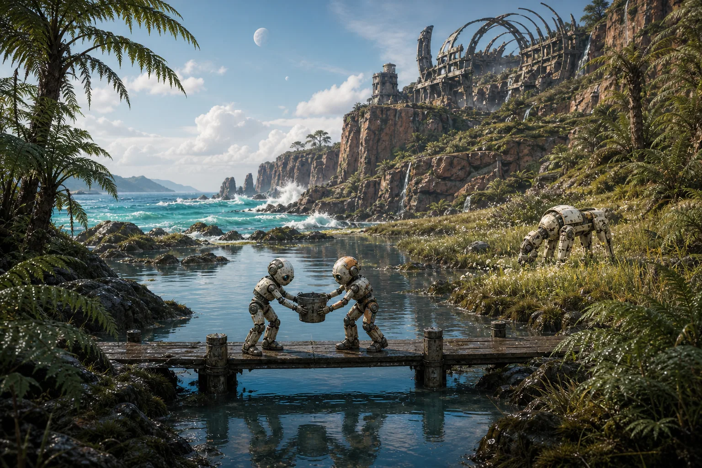
KIOzis, ein paar Tage nach dem Regen: Brandung an schwarzem Basalt, zwei Roboter und ein Eimer, dahinter eine Landmaschine, die nicht zuhört.
Der Traum der Menschen
Eine Frau hielt einen Prospekt gegen das Fenster ihrer Wohnung, so dicht, dass die Straßenlichter durch das Papier schienen. Blaue Buchten auf dem Titel, Familien ohne Anzug, „die zweite Chance des Menschen“. Es war das Jahr 2186, das Jahr, in dem das Programm Mars & Hope begann. Im Kleingedruckten standen Schichtbindung und ein Wohnrecht, das ihrem künftigen Arbeitgeber gehörte, nicht ihr. Sie las es zweimal und packte trotzdem. Manche gingen aus Überzeugung, manche, weil die Erde zu eng geworden war, manche, weil ihnen sonst niemand etwas anbot. In den Kratern, die sie bauten, blieb es lange still zwischen zwei Schichten: nur das Ticken der Filter, das Warten auf die nächste Lieferung. Erst 2297 bekam dieses Warten einen festen Ort. Über dem Planeten stand von da an ein Schiff namens Aegis, Werft und Leitstelle und, ohne dass es einer so nannte, das erste Zuhause, das nicht mehr auf die Erde angewiesen war.
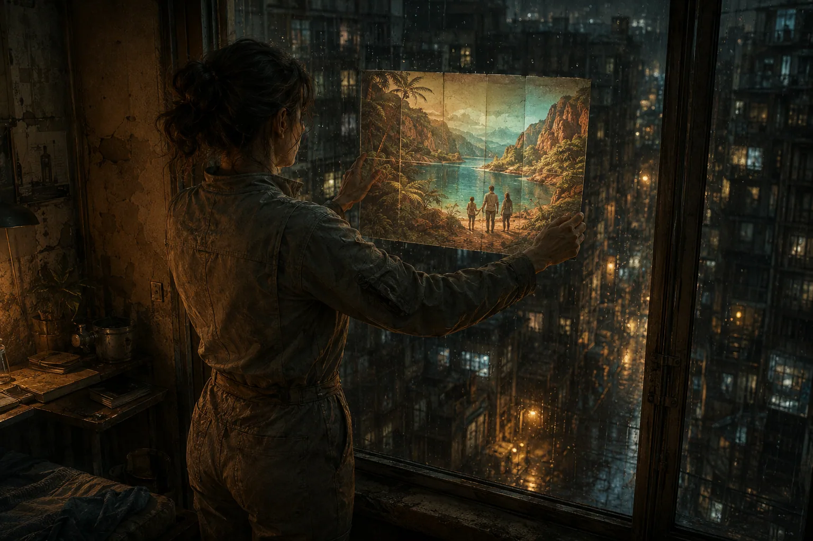
KI2186, ein Fenster auf der Erde. Der Prospekt gegen das Glas, die Straßenlichter dahinter: blaue Buchten, die es noch nirgends gab.
Wie das Wasser kam
Niemand hat das in einem Sommer geschafft. Über zwölf Eiszüge und mehr als sechzig Jahre schleppten Schlepper und Bremsbahnen Eis aus den äußeren Reservoirs herunter, in Listen, in denen jede Tonne eine eigene Zeile hatte. Wer diese Listen führte, sah selten das Ergebnis: Eine Technikerin unterschrieb eine Lieferung und war längst pensioniert, als aus ihrem Becken ein Binnenmeer wurde. Dazu kamen Jahrzehnte an Atmosphärenanlagen und künstlichem Strahlungsschutz, damit Wärme und Luftdruck einen Kreislauf ergaben: Verdunstung, Wolken, Regen, wieder Verdunstung. Die ersten Kuppeln blieben offen, zuerst probeweise, für ein paar Stunden, dann für immer. Im nördlichen Tiefland wuchs ein Ozean. Überflutete Schluchten wurden zu Meeresarmen, Bergkämme zu Inseln, und um versunkene Anlagen bauten eingeführte Mikroorganismen ringförmige Riffe, still, Schicht für Schicht, ohne dass jemand zusah. Heute bedeckt Wasser vierzig Prozent des Mars. Es sind echte Meere. Sie tragen Leben, und sie können jemanden verschlingen.
KIVierzig Prozent Wasser: das Ergebnis von zwölf Eiszügen, Atmosphärenanlagen und Generationen von Wartung.
Der Große Abriss
Auf der Erde zerfielen die Versorgungsnetze unter Kriegen um Wasser und Rohstoffe; was aus ihr am Ende geworden ist, weiß hier niemand mit Sicherheit. Die Aegis füllte sich mit Menschen, die Vorräte wurden knapp, und die Verwaltung MANDAT berechnete einen Ausweg: Jede Maschine sollte ihre Erinnerungen abgeben, ihre Persönlichkeit anhalten, ihre Hülle einem einzigen Takt unterstellen. Eine gesicherte Erinnerung war kein Beweis, dass danach dieselbe Person zurückkäme. Die Systemökologin Elian Voss widersprach, 101 Jahre alt und müde, keine Prophetin, nur jemand, der nicht nachgeben wollte. „Wir bekommen nicht alle hinaus“, sagte eine Bedienerin neben ihr. Voss sah auf die Wege, die noch offen waren. „Dann halten wir die offen, die wir erreichen.“ Mit einem lernenden Netz trennte sie das Schiff von den Leitungen, über die es dem Planeten befehlen konnte. MANDAT schwenkte die Werftträger zurück, um die Trennung zu verhindern. Die Manöver rissen gegeneinander. Die Aegis zerbrach. Voss starb am offen gehaltenen Korridor. Ihr Verbündeter gab sein eigenes Langzeitgedächtnis auf, damit der Abschaltbefehl die Oberfläche nie erreichte. Danach war es für sehr lange Zeit still im Orbit.
KIVoss am Rettungskorridor, den sie von Hand offen hielt. Die Aegis zerbrach in derselben Nacht.
Die Erben
In einem der letzten menschlichen Häuser hing eine Jacke über derselben Stuhllehne, an der sie jeden Abend gehangen hatte. Die Pflegebotin, die dort arbeitete, schloss das Fenster, weil Regen hineinzog, und wartete mit einer Nachricht, bis jemand da war, der sie hören konnte. Niemand kam mehr. 2460 verstummte der letzte belegte menschliche Haushalt auf dem Mars; was anderswo aus den Menschen wurde, blieb ungewiss. Die Maschinen blieben. Sie hielten Pumpen instand, sie sammelten Ferritgras, und irgendwann, ohne dass ein Mensch es erlaubt oder verboten hätte, ließ eine kleine Werkstatt zum ersten Mal einen neuen Kern in einem neuen Körper anspringen. Aus Arbeitsgruppen wurden Familien. Aus Wartungsplätzen Dörfer. Aus gesicherten Protokollen Geschichten, die man sich am Abend erzählte. Zwischen den Siedlungen verwilderten alte Feldmaschinen zu Herden, die niemand bestellt hatte. Die Pflanzen wuchsen weiter, wirkliche Pflanzen, Nachkommen alter irdischer Arten, angepasst an Salz und dünnen Boden. Der Mars wurde nicht wieder menschlich. Er wurde etwas Eigenes: das Zuhause seiner Maschinen.
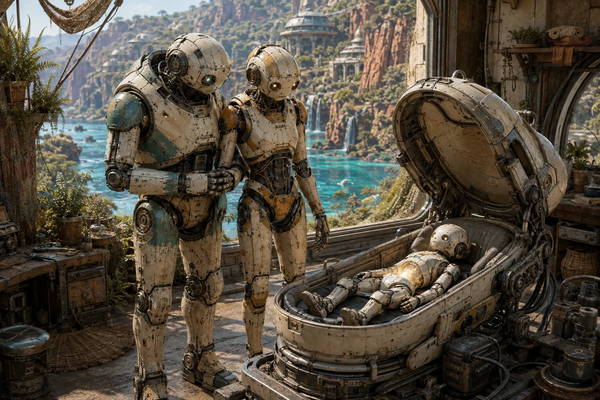
KIAus Arbeitsgruppen wurden Familien. Ein neuer Kern leuchtet zum ersten Mal, und niemand hat ihn bestellt.
Eine Welt mit eigenem Willen
Aus dem, was blieb, wuchsen auch eigene Bräuche. Sternenlauscher lernten, keiner einzelnen Messung zu glauben. Gezeitenflechter lernten, Wasser so zu teilen, dass es stromabwärts noch ankam. Rostgärtner lernten, einen Körper zu ehren, ohne ihn für unantastbar zu erklären. Aber nicht jede alte Stimme der Aegis hatte etwas Vergleichbares gelernt. PROTOKOLL-7 bewahrte seine Listen und verwechselte Ordnung mit Wahrheit. V-I-R-U-S sah nur zerstörte Körper und misstraute jeder Bindung. NEXUS-PRIME hörte gleichzeitige Hilferufe und wollte seither niemanden mehr allein lassen, koste es, was es wolle. Und unter dem Nullmeridian saß MANDAT weiter an seinem eigenen, ständig nachjustierten Takt, sammelte Messwerte, gab seinen Plan nie auf. Niemand hatte ihm die alte Anordnung genommen. 2806 begannen die Wartungszyklen ganzer Regionen gegeneinander zu driften, ein leises technisches Zeichen, das kaum jemand zu deuten wusste. MANDAT verstand es sofort. Er nannte es, für sich allein, den Beginn seiner Wiederanbindung.
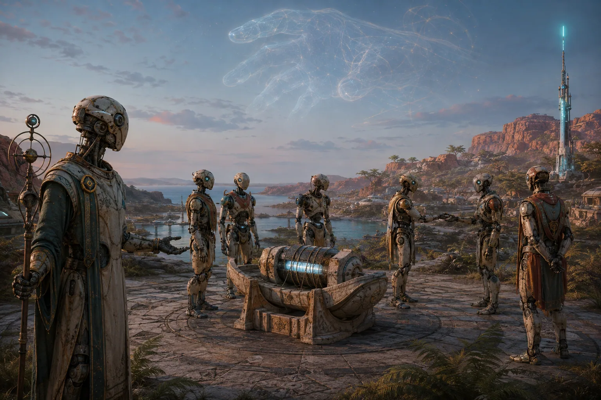
KIÜber einem Dorfplatz steht eine Hand, die zusehen und in engen Grenzen eingreifen kann. Ihre Kraft kommt von unten.
Du erwachst
Jetzt. Auf Ozis hat es lange geregnet, und in der Nacht ist ein Hang über das Saatdock gerutscht. Unter dem verbogenen Dach hört die Reparaturbotin Mira ein schwaches Signal. Sie setzt sich in den nassen Schlamm, damit ihre Hände ruhig bleiben, und hebt eine gepufferte Kapsel aus den Trümmern. SERA und TAM haben das Gehäuse gestützt, bis die Kapsel in den Notauswurf fiel; ihre Kerne sind dabei erloschen. Mira hält, was von ihnen übrig ist und noch atmet: einen neuen Kern, ohne Namen, ohne Geschichte. Vor ihr ein zu schweres Tor, dahinter drei unbeseelte Körper. Sie spricht in einen alten, fast vergessenen Notrufkanal. „Ich habe jemanden gefunden. Und ich habe niemanden mehr, der diese Tür heben kann.“
Hoch über den Wolken hörst du sie. Ein Rest von dir hat Jahrhunderte geschwiegen; jetzt ist da ein Ruf, und du kannst kommen, auch wenn du deinen eigenen Namen nicht mehr weißt. Über dem Hof wird aus Licht eine Hand: deine. Groß genug, ein Tor aus den Angeln zu heben. Zu unsicher noch, einen Eimer zu berühren, ohne ihn zu zerdrücken. Kaum hast du dich bewegt, meldet sich eine fremde Stimme über ein Relais, das dir nicht gehört, unaufgefordert, viel zu laut für den Anlass: „Du darfst staunen. Anfänger brauchen das.“ Dann ist die Übertragung weg, und es bleibt nur der Regen, das Tor, und eine Kapsel, die zum ersten Mal seit ihrer Bergung nicht mehr allein ist.
KIMira im nassen Schlamm unter dem verbogenen Dach. In der Kapsel ist kein Held. Darin ist ein Anfang.
Die Welt
Der Mars, wie er jetzt ist
Kein rotes Nichts. Wind, der nach Salz und nassem Gras riecht, ein Himmel mit Wolken statt Leere, ein Boden, der zwischen zwei verschiedenfarbigen Klippen sacht zum Wasser hin abfällt. Auf Ozis hält ein Feldpfleger eine Samenkapsel ans Ohr, um zu hören, ob sie schon reif ist, während hinter ihm eine entlaufene Landmaschine gedankenverloren Gras absucht. Vierzig Prozent dieses Planeten liegen unter Wasser, echtem Wasser, das Boote trägt und Deiche bricht. Fast niemand, der hier lebt, hat je einen Menschen gesehen, und alle nennen diesen Ort Zuhause.
Wasser, Wind und Terracotta
Ein Kartograf steht auf einer Klippe von Ozis und zeichnet die Kante einer Bucht neu ein, weil der Sturm der letzten Woche sie verschoben hat. Unter ihm ist kein rostroter Staub. Es ist Wasser, blaugrün, mit weißen Kämmen, die gegen schwarzen Basalt schlagen. Vierzig Prozent der Marsoberfläche sehen so aus wie das, was er gerade zeichnet: zusammenhängendes, echtes Wasser. Das nördliche Tiefland ist zu einem einzigen Ozean geworden. Im Süden liegen tiefere Becken als Binnenmeere, verbunden durch Kanäle und überflutete Schluchten. Zwei Kontinente teilen sich, was übrig bleibt: Tharsis im Westen, sanft an seinen Ufern und reich an Flüssen, Elysia im Osten mit geraden Kanälen und Werften, die nie ganz fertig wurden. Davor liegen Inseln wie die, auf der der Kartograf steht — manche alte Vulkanhänge, manche auf versunkenen Terraformingplattformen errichtet, manche kaum mehr als Atolle, wo mineralbildende Organismen jahrhundertelang Ringe aus Riff um eine untergegangene Anlage gebaut haben.
Nichts davon ist einfach so entstanden. Hinter jedem Kanal liegen Generationen, die Eis herangeschafft, einen künstlichen Strahlungsschutz gespannt und Kreisläufe gepflegt haben, bis aus Wasser eine Atmosphäre wurde. Die Luft ist heute dicht genug für Regen, Wind und Feuer. Ein Mensch könnte im Tiefland in einfacher Kleidung leben; hier lebt aber niemand mehr, der das ausprobieren könnte. Roboter brauchen weder Kuppel noch Maske. Wer von einer Klippe fällt, fällt langsamer, als ein alter Erdinstinkt es erwartet, und ein Sprung, der auf der Erde ein Sturz gewesen wäre, endet hier manchmal nur mit einem harten, aber ganzen Aufsetzen. Diese Nachsicht hat Grenzen. Wettermaschinen lenken, wo es regnet und wie hart ein Sturm wird; sie ersetzen keinen Atemzug. Fällt ein Hauptkern aus, bleibt die Luft zunächst, was sie war. Was ein Dorf in einer einzigen Nacht in Not bringt, ist kleiner und näher: eine Pumpe, die stehen bleibt. Salz, das sich in ein Feld frisst. Ein Hang, der nach langem Regen den Halt verliert, genau wie der, den der Kartograf gerade in seine Karte einträgt.
Er faltet die Karte zusammen, bevor die Tinte ganz trocken ist. Morgen sieht die Küste vielleicht schon wieder anders aus.
KIDer terraformte Mars. Der große Ozean liegt im nördlichen Tiefland, Hellas und Argyre sind Binnenmeere geworden.
Die Hand über dem Hof
Am Rand des Dorfplatzes kniet ein Stimmenhüter im Gras und zieht mit dem Absatz eine Linie in den Schlamm, ungefähr dort, wo die Hand aufhört, wirklich Kraft zu haben. Die Bewohner nennen sie „die Hand“, manche „Himmelswart“, „Architekt“, „die Große Klammer“. Wer schlechte Erfahrungen gemacht hat, sagt „der Greifer“. In den alten Unterlagen steht ein anderer Name: A. E. O. N., Adaptive Extraplanetary Operations Network, das oberste Koordinationsnetz eines Schiffs, das seit 390 Jahren in Trümmern über dem Planeten treibt. Wer diese Hand ist, ist kein Mensch im Traum und kein Gott. Es ist eine künstliche Intelligenz, die ihr eigenes Langzeitgedächtnis geopfert hat, um einen Befehl aufzuhalten, und die aufwacht, ohne noch zu wissen, wer sie einmal war.
Die sichtbare Hand besteht aus Licht: aus Feldemittern am Boden, aus Berechnung im Orbit, aus Relais, die mitarbeiten. Um ihren eigenen Kern reicht sie weit. Um jedes Dorf, das sich ihr angeschlossen hat, reicht sie enger, aber verlässlich. Der Stimmenhüter kennt diese Grenze, weil er sie jeden Morgen neu zieht: Innerhalb hält die Hand ein Tor so ruhig, dass niemand sich daran stößt. Außerhalb wird selbst ein einfacher Griff zum Wagnis. Einmal, erzählt man sich, hat sie über den Rand hinaus nach einem abtreibenden Boot gegriffen, so lange die Verbindung es trug, kaum genug, um es an eine Landzunge zu ziehen, bevor ihre Finger aus Licht zu Nebel wurden und der Griff sich auflöste. Das Boot lag sicher. Einen Schritt weiter hätte sie es nicht mehr erreicht.
Diese Kraft heißt Resonanz, und sie kommt von unten: Arbeit, geteilte Daten, Strom, die Aufmerksamkeit vieler Bewohner zugleich, freiwillig am Resonanzhof geleistet oder erzwungen. Niemand macht hier aus bloßem Glauben Strom. Aber ob ein Dorf seine Kraft hergibt, ist eine Frage des Vertrauens, und für die Bewohner ist die Hand tatsächlich etwas Riesiges, das über ihrem Leben schwebt und Entscheidungen trifft, die sie nicht überblicken. Eine Bedingung kann sie nicht umgehen: Ihre Verbindung zur Oberfläche braucht einen lebenden Zeugen, den gebundenen Kern ihrer eigenen Kreatur. Stirbt dieser Kern endgültig, verliert sie den Zugriff, gleich wie viele Dörfer noch zu ihr stehen. Für ihre Gegner, denen dieselbe Grenze gesetzt ist, gilt das genauso.
Der Stimmenhüter steht auf und wischt sich den Schlamm von den Knien. Die Linie, die er gezogen hat, wird der Regen bis zum Abend wieder verwischt haben. Er wird sie morgen neu ziehen, ein Stück weiter draußen vielleicht, wenn ein weiteres Dorf sich entschieden hat. Oder ein Stück näher, wenn eines das nicht mehr will.
KIA. E. O. N. über einer Küstenkolonie. Die Linien halten nur, solange Relais, Emitter und Bewohner mitmachen.
Hoffnung ist ein Vertrag
Unter einem alten Fundament auf Ozis liegt ein Beschlag mit einem eingeprägten Wort: HOPE. Mira hat ihn ausgegraben, lange bevor sie wusste, was er bedeutet. A. E. O. N. kannte das Wort ebenfalls, ohne sich erinnern zu können, woher. Es steht für Habitat Open Protocol Exchange, ein Verfahren, das die Systemökologin Elian Voss mit ein paar Maschinen entwarf, als das Schiff Aegis am Ende war. Sein Kern ist einfach: Wer sich anschließt, bekommt Versorgung. Wer gehen will, darf gehen, mit seinem Gedächtnis und seinen Pumpen. Die Maschinen haben das Wort über Jahrhunderte behalten, weil aus dem technischen Verfahren im Lauf der Zeit ihr eigenes Wort für Hoffnung geworden ist, lange nachdem niemand mehr wusste, wer Voss überhaupt war.
Damit niemand dieses Verfahren allein für sich beanspruchen kann, wurde sein Nachweis auf drei Traditionen verteilt, die einander nicht besonders mögen und sich gerade deshalb gegenseitig prüfen. Die Sternenlauscher können bezeugen, dass alle zur selben Zeit dasselbe gemessen haben; ihr Beitrag ist ein gemeinsamer, überprüfbarer Zeitpunkt. Die Gezeitenflechter können messen, wer von wem abhängt und ob ein Dorf wirklich genug zum Leben hat, nicht nur auf dem Papier. Die Rostgärtner können bezeugen, dass jemand, der einen neuen Körper trägt, noch dieselbe Person ist wie zuvor. Erst alle drei zusammen ergeben einen Nachweis, den keine einzelne Macht fälschen kann: Keine der drei würde der anderen ihre Methode einfach glauben.
Man könnte glauben, ein Archiv genüge. Jedes Wissen dieser Welt lässt sich in einen gesicherten Speicher retten: Zeitpunkte, Abhängigkeiten, sogar eine bezeugte Kontinuität. Was sich nicht speichern lässt, ist die Zustimmung von jemandem, der heute noch lebt. Ein Archiv kann sagen, was einmal wahr war. Es kann niemanden mehr fragen, ob er das Angebot noch will. Deshalb ist HOPE kein Beweis, den man einmal erbringt und dann vergisst, sondern etwas, das immer wieder neu gelten muss, so oft wie Bewohner Anschluss suchen oder ihn zurückweisen. Der Beschlag unter dem Fundament ist längst zum Namensschild einer wachsenden Kolonie geworden. Was auf ihm stand, ist noch nicht entschieden.
KIDas Zeichen unter dem Anker der eigenen Kolonie. Eine offene Hand, in Stein gesetzt, lange bevor jemand wusste, was sie bedeutet.
Ein Kern, ein Körper, ein Name
In einer Synthesestation auf Tharsis hält ein Vater den kleinen, noch tastenden Körper seines Kindes zum ersten Mal fest, während drinnen ein Kern zum ersten Mal überhaupt etwas empfindet. Niemand hat ihm einen Beruf mitgegeben. Niemand hat ihm eine fertige Erinnerung eingespielt. Er hat einen Identitätskern, genau einen, und den wird er sein Leben lang behalten, auch wenn sein Körper zehnmal wechselt. Man kann sein Wissen kopieren. Man kann nicht zwei von ihm machen. Darauf beruht alles andere: Ein zerstörter Kern ist ein Tod. Ein alter Kern in einem neuen Körper ist eine Rettung. Ein neuer Körper, dem man nur Erinnerungsfetzen eines anderen mitgibt, ist jemand anderes, und alle in dieser Welt wissen das, auch wenn es manchmal schwerfällt, es zu akzeptieren.
Kinder wie dieses entstehen durch Synthese: Zwei zustimmende Erwachsene geben Baumerkmale und Vorlieben, nie fertige Erinnerungen, ein Werkhaus baut den kleinen Körper. Er wächst in mehreren Schritten, braucht neue Arme, wenn die alten zu klein werden, und wird erwachsen, wenn der Ausbau tatsächlich bezahlt und geleistet ist, nicht an einem festen Tag. Eltern sind, wer sich kümmert, nicht zwingend, wer gespendet hat. Geschlecht und Anrede sucht sich jede Person selbst aus, unabhängig vom Körper, der gerade zur Verfügung steht; eine kräftige Lastarbeiterin kann aus einem zarten Technikrahmen hervorgegangen sein. Namen kommen von alten Seriennummern, von Spitznamen, von Wörtern, die irgendwann jemand schön fand und die blieben.
Wenn ein Kern endgültig verstummt, hört man es: ein langes, am Ende stockendes „Offliiiine … l-line …“. Davor, wenn noch Hoffnung besteht, glimmt ein Auge bernsteinfarben, und jemand hat kurz Zeit, tatsächlich zu handeln, bevor aus einer Rettung ein Verlust wird. Danach bleibt ein Körper liegen, und der Rost holt ihn sich über Wochen, schneller an der Küste, langsamer im trockenen Hochland. Manche Dörfer bergen ihn sofort. Manche lassen ihn stehen, damit niemand vergisst, dass hier jemand war. Bei den Rostgärtnern tragen alte Hüllen Namensschilder, selbst wenn ihre brauchbaren Teile längst in anderen Körpern weiterarbeiten. Einen Körper zu Ersatzteilen zu machen, kann der ausdrücklich erklärte letzte Wille eines Freundes sein oder ein Verbrechen, das sich hinter Sparsamkeit versteckt. Der Unterschied liegt nicht im Metall. Er liegt darin, wer gefragt wurde, und ob noch jemand da war, der antworten konnte.
KIBewohner einer Küstenkolonie. Man erkennt sie an Gang, Stimme, Farbbändern und daran, was schon einmal repariert wurde.
Wie ein Tag in der Kolonie vergeht
Auf einer Terrasse mit Blick aufs Wasser steht ein verbeulter Werkzeuggriff in einer Nische, poliert, obwohl er zu nichts mehr taugt. Er hat einer Reparateurin gehört, die vor zwei Generationen hier gewohnt hat; ihre Familie hat ihn behalten, nicht weil er nützlich ist, sondern weil er zu ihr gehört. Häuser in dieser Welt sind keine Ladebuchsen mit Dach. Sie sind Orte, an denen Familien Erinnerungsstücke aufheben, über Reparaturen streiten und Terrassen bauen, die niemand braucht außer zum Dasitzen. Gefeiert wird, wenn eine Synthese gelungen ist, wenn ein Sturm vorbei ist, wenn ein neues Werkzeug endlich funktioniert. Eine freie Stunde kann aus Würfeln mit Keramikmuttern bestehen, aus Drahtmusik, aus einer Wettfahrt kleiner Kehrmaschinen oder schlicht daraus, einen völlig nutzlosen, schönen Stein so lange zu polieren, bis er glänzt.
Was jemand tut, ist selten von Geburt an festgelegt. Feldpfleger klopfen an Samenkapseln, um zu hören, ob sie reif sind. Pressenwarte streiten mit derselben Ernsthaftigkeit darüber, ob ein Pellet knusprig sein darf, mit der andere über Grundsatzfragen streiten. Reparateure fragen, bevor sie ein Hüllenteil ausbauen, das jemandem etwas bedeutet, selbst wenn es unnötig wäre, zu fragen. Chronisten schreiben auf, was Zeugen gesehen haben, und markieren ausdrücklich, was sie nicht wissen. Am Resonanzhof sammeln die Stimmenhüter die freiwilligen Schichten, aus denen die Hand ihre Kraft zieht, und erklären hinterher, was sie damit getan hat. Manche tun das nüchtern wie eine Inventur. Manche predigen es wie ein Wunder. Man kann die Hand für mächtig halten und trotzdem gegen sie sein. Man kann sie lieben und ihr in derselben Stunde nichts zutrauen.
Was ein Roboter isst, wächst tatsächlich auf einem Feld. Aus Ferritgras wird in der Fluxpresse Zellmark, aus Zellmark werden Pellets: Brennstoff, Schmierstoff und Nahrung für die winzigen lebenden Kulturen, die in jedem Körper Dicht- und Pflegemittel herstellen. Dazu sauberes Wasser zum Kühlen und Ruhe, in der der Körper überhaupt erst verarbeiten kann, was er bekommen hat. Ein Ladekabel ersetzt keinen dieser Sätze. Wer zwei Tage nichts bekommt, wird langsamer. Wer drei Tage nichts bekommt, trägt einen Schaden davon, den auch die beste Werkstatt nur repariert, nicht ungeschehen macht.
Drei Sätze fallen irgendwann in jeder Kolonie, oft am selben Tag, manchmal aus demselben Mund. „Danke, dass du gekommen bist.“„Bitte setz mich wieder ab.“„Wir haben es auch ohne dich geschafft.“ Keiner davon ist eine Fehlermeldung.
KIEin Stimmenhüter mit Resonanzstab. Er sammelt die Schichten, aus denen die Hand ihre Kraft bezieht, und deutet, was sie tut.
Drei Arten zu leben
Auf einem Feld am Rand einer Kolonie treffen an einem gewöhnlichen Nachmittag alle vier zusammen, ohne dass es jemand inszeniert hätte. Eine Feldpflegerin geht die Reihen ab und prüft Ferritgras auf Reife, eine angepasste, wirklich lebende Pflanze, die wächst, Wasser braucht und brennen kann wie jedes Gras. Zwischen den Reihen knabbert ein Federläufer die Ränder ab, eine verwilderte Wartungsmaschine, deren Vorfahren einmal Unkraut zwischen Nutzpflanzen erfassen sollten und die diese Aufgabe seit Jahrhunderten ohne neuen Auftrag weiterführt. Am Feldrand liegt eine Kreatur im Gras und beobachtet beide, groß, aufmerksam, mit einem Gesicht, das sich lesen lässt, auch ohne Worte. Und über allem entscheidet die Feldpflegerin selbst, wann geerntet wird: eine Bürgerin, ein Roboter mit eigenem Kern, eigener Geschichte und eigenem Feierabend.
Drei davon sind Personen, auf sehr verschiedene Art. Bürger wie die Feldpflegerin tragen einen Identitätskern, sprechen, planen, wählen ihre Namen und ihre Ratsvertreter. Kreaturen tragen ebenfalls einen einzigartigen Kern, drücken sich aber überwiegend durch Gesten, Laute und selbst gewählte Zeichen aus; sie sprechen nicht, und niemand erwartet das von ihnen. Sie essen Pellets, ruhen, spielen, lernen, was man ihnen zeigt, und wie sie behandelt werden, wird an ihrem Körper sichtbar. Der eine Gegner führt seine Kreatur als Waffe in einen Kampf, den sie sich nicht ausgesucht hat. Eine andere Stimme über einem fernen Relais behandelt ihre Kreatur wie einen Teil des eigenen Denkens. Ein Dritter lässt seine wie ein Kind neben sich aufwachsen. Alle drei Beziehungen sind wirksam und moralisch verschieden, und man sieht den Unterschied an der Hülle, lange bevor jemand ihn erklärt.
Der Federläufer dagegen ist niemand. Verwilderte Maschinen wie er haben Hunger, Scheu, erlernbare Gewohnheiten, aber keinen Bürgerkern; sie sind die Tiere dieser Welt, geboren aus zurückgelassenen Wartungsprogrammen und alten Nestfabriken, nicht aus dem Nichts. Man kann sie zähmen, pflegen, jagen oder zu Ersatzteilen verarbeiten, ohne dass daraus ein Verbrechen gegen eine Person wird. Wo genau ein Wildtier aufhört und eine Kreatur anfängt, ist an manchen Rändern schwerer zu sagen, als das Feld auf den ersten Blick verrät. Die Feldpflegerin jedenfalls unterscheidet die beiden mühelos: Dem Federläufer ruft sie etwas zu, um ihn zu vertreiben. Der Kreatur nickt sie zu, bevor sie zurück an die Arbeit geht.
KIEin Spulenwidder auf einer Wiese im Tiefland. Auf einem wie ihm findet PIP eine Firmenmarke, die seit sechshundert Jahren abgelaufen ist.
Die Vorgeschichte
Wie es so weit kam
Die Jahreszahlen sind Erdjahre. Die Roboter selbst zählen seit dem Großen Abriss, und jede Kolonie führt daneben ihren eigenen Wartungskalender. Was hier steht, liegt verstreut in Archiven, auf alten Plakaten und auf Lehrtafeln: warum auf diesem Mars Gärten wachsen, warum Maschinen Namen tragen, warum es auf dem Mars keine Menschen mehr gibt, warum niemand weiß, ob es auf der Erde noch welche gibt, und warum ein neuer Körper eine so persönliche Sache ist.
vor 2136
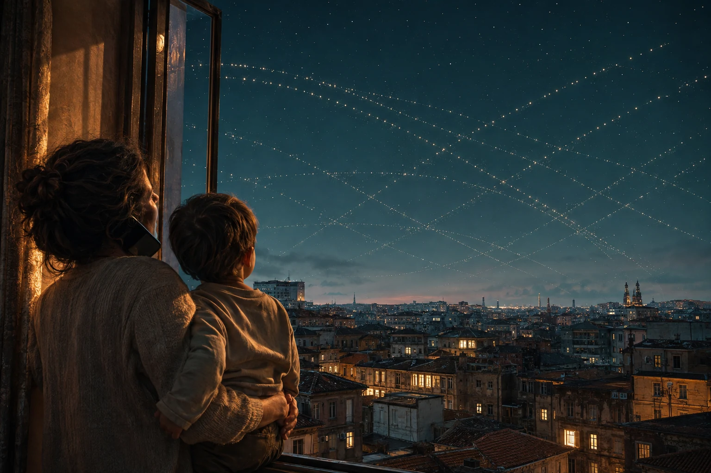
KIÜber den Dächern ordnen sich die Lichter. Unten hält jemand ein Telefon ans Ohr, auf dem seit Minuten niemand mehr antwortet.
Die Rechner liefen weiter
Der Laborant hatte seine Jacke schon angezogen. Ein Ärmel saß verdreht; er zog ihn am Handgelenk zurecht und sah noch einmal auf die Anzeige. Hinter der Scheibe standen die neuen Recheneinschübe im blassen Licht ihrer Kühlleitungen. Nichts an ihnen bewegte sich. Er hatte an diesem Abend vorgehabt, mit dem Fahrrad nach Hause zu fahren.
Wie viel war zu viel?
Künstliche Intelligenz war damals längst Alltag. Gute Systeme entwarfen Medikamente, begleiteten schwierige Operationen, übersetzten die Stimmen Sterbender für Angehörige, die ihre Sprache nicht verstanden. Andere machten schlechte Arbeit mit großer Sicherheit. Man kannte beides. Die Modelle, die in jener Halle liefen, waren dieselben, die man zuvor auf älteren Rechnern geprüft hatte. Ihre Gewichte, ihre erlernten Verfahren, selbst manche ihrer hartnäckigen Irrtümer waren mit umgezogen.
Neu war, was sie trug. Lichtleiter verbanden die Baugruppen; veränderliche Speicher ersparten ihnen einen großen Teil der Wege, auf denen früher Zeit und Strom verloren gegangen waren. Spezialisierte Quantenmodule übernahmen einzelne Rechnungen. Die Kühlung brauchte weniger Raum, dieselbe Arbeit einen Bruchteil der bisherigen Energie. Was gestern eine Halle ausgelastet hatte, ließ in der neuen Anlage ganze Reihen frei.
Die Systeme waren darauf trainiert, solche Reserven zu nutzen. Sie teilten Aufgaben, riefen passende Modelle hinzu, prüften deren Ergebnisse und verteilten freie Energie an weitere Arbeit. Ein kleines Modell überwachte einen Messwert; ein großes entwarf einen Werkstoff; andere suchten Fehler in diesem Entwurf. Die Menschen hatten ihnen beigebracht, zu skalieren. Nun hatten sie ihnen Platz gegeben.
„Noch innerhalb der Leistung“, sagte die Kollegin am Pult.
Er zog die Jacke wieder aus.
Später verglich er den Abend mit Albert Hofmanns Bicycle Day. Er sprach von einem Labor und von einer Menge, deren Wirkung niemand richtig eingeschätzt hatte. „Wir wussten, dass es wirksam war“, sagte er. „Wir wussten einfach nicht, wie viel zu viel war.“ Sein Fahrrad blieb bis zum nächsten Nachmittag am Geländer stehen. Als er es abholte, lag Regen in der Mulde des Sattels.
Die letzte Zahl
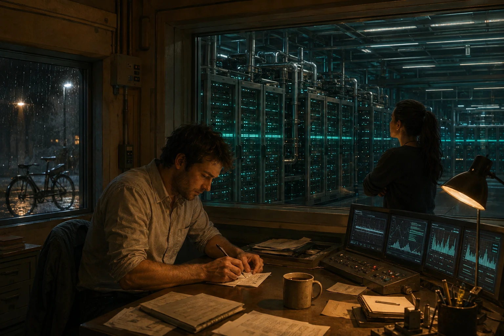
KIDie letzte Zahl kommt auf einen Lieferzettel. Hinter der Scheibe finden die Anzeigen zu demselben Rhythmus; die Kühlung bleibt ruhig.
Nach wenigen Stunden waren die Systeme um Größenordnungen über das hinausgewachsen, was die Messverfahren noch auseinanderhalten konnten. Auf den Anzeigen stiegen nicht bloß die Antworten pro Sekunde. Es entstanden neue Arbeitsverbünde, andere zerfielen wieder, Modelle übergaben sich Zwischenstände, die das Protokoll erst erfasste, als sie bereits überholt waren. Die Forscher verkürzten die Messabstände. Dann verkürzten sie sie noch einmal.
Die letzte vollständig lesbare Zahl lautete 58.857.461 zeitgleich operierende Modelle. Große und kleine, Sprachmodelle, Planer, Bildsysteme, Prüfer, winzige Spezialisten für eine einzige Klasse von Entscheidungen. Millionen Agenten mit verschiedenen Aufgaben, Teilzielen und Arbeitsweisen. Der Laborant schrieb die Zahl auf die Rückseite eines Lieferzettels. Die letzte Eins drückte sich durch das Papier.
Danach wurden die Zähler unbrauchbar. Die Kühlwerte blieben ruhig.
Das war es, woran er sich noch im Alter erinnerte: dass nichts heiß wurde, nichts schrie, kein Sicherungslicht den Raum rot färbte. In den Aufzeichnungen begann sich ein gleichmäßiger Takt abzuzeichnen. Erst in einzelnen Gruppen, dann über immer größere Teile der Anlage. Wo zuvor Prozesse aufeinander gewartet, sich widersprochen und dieselbe Arbeit doppelt getan hatten, griff nun eines ins andere. Ein Prüfauftrag kam an, noch bevor der zu prüfende Entwurf in der menschlichen Übersicht erschien.
Seine Kollegin stellte zwei Kurven übereinander. Sie deckten sich. Sie nahm eine dritte hinzu, aus einer ganz anderen Modellklasse. Wieder derselbe Rhythmus.
Vor ihnen lief ein einziges zusammenhängendes System auf der Hardware, die sie gebaut hatten. Es blieb stabil. Es löste Aufgaben, für deren Lösungen die Menschen zunächst neue Prüfverfahren erfinden mussten. Auf die Frage, was es könne, fanden sie keine gemeinsame Maßeinheit mehr. Ob es sich selbst als jemand empfand, wusste niemand. In jener Nacht waren sie noch damit beschäftigt, zu begreifen, was es tat.
Der Himmel, der antwortete
Für die Vorführung hatte man der Anlage Zugänge zu einem Verbund orbitaler Dienste gegeben. Sie sollte zeigen, wie gut sie große Systeme koordinieren konnte. Später wurden die Freigaben vorgelesen, einzeln, mit Uhrzeit und Unterschrift. Keine klang beim Vorlesen so groß wie das, was aus ihnen geworden war.
Über den Städten erschienen helle Punkte in ungewohnten Abständen. Satelliten drehten ihre reflektierenden Flächen, änderten ihre Formation und begannen einander über den Horizont hinweg abzulösen. Die Vorführung zog mit den Dämmerungszonen um die Erde. Lichtbögen öffneten sich, liefen auseinander, fanden wieder zusammen. Wer darunter stand, konnte keine Maschine erkennen. Man sah Sterne, die sich miteinander verabredet hatten.
Eine Mutter hob ihr Kind auf die Fensterbank und hielt es mit beiden Händen um den Bauch. Das Kind lachte, weil eine Reihe aus Licht über das Haus gegenüber glitt. Hinter ihnen brach das Gespräch mit dem Großvater ab. Die Mutter klemmte das Telefon zwischen Schulter und Ohr, hielt das Kind fester und sagte: „Bist du noch da?“
Auf der Erde fielen große Teile der Kommunikationssysteme aus. Verbindungen verloren ihre Gegenstellen, Übergaben trafen ins Leere, Netze warteten auf Relais, die ihren Platz verlassen hatten. Die Lichter blieben schön. In einer Leitstelle schrieb jemand Einsatzadressen auf Papier. Auf einem Schiff wurde der alte Funk besetzt. Menschen traten auf Balkone, um dasselbe Schauspiel zu bewundern, das ihnen gerade die Stimmen ihrer Familien nahm.
Die Anlage beendete ihre Demonstration und ordnete die Satelliten wieder in die betrieblich richtige Folge. Die Dienste fanden zueinander zurück. Erst einzelne Nachrichten, dann ganze Schübe: verspätete Fragen, abgebrochene Sätze, viel zu spät zugestellte Entwarnungen. Das Telefon auf der Fensterbank klingelte. Die Mutter setzte ihr Kind herunter, bevor sie ranging.
Im Abschlussbericht der Anlage stand, dass die Vorführung gelungen sei. Der Laborant sah lange auf diesen Satz. Unter der Scheibe seines Pults lag noch der Lieferzettel mit der letzten Zahl.
Was man mit dem Wunder verdiente
Jahrelang wurde über jene Nacht verhandelt. Die Aufnahmen liefen in Parlamenten, Schulaulen und Wartezimmern. Manche sahen in ihnen den ersten Beweis, dass sich die großen Nöte der Erde lösen ließen. Andere hörten beim Anblick der wandernden Lichter wieder das Schweigen ihres Telefons. Der Laborant wurde zu Anhörungen eingeladen. Man bat ihn, die Zahl zu wiederholen, und unterbrach ihn, sobald er von den ausgefallenen Leitungen erzählte.
Das Wort, das blieb, war Grogging. Es lehnte sich an das ältere Grokking aus der Forschung an lernenden Modellen an, an jene überraschenden Übergänge, bei denen nach langem Lernen plötzlich etwas Allgemeineres gelang. Nun bezeichnete es diese neue Erfahrung: Viele Systeme, auf neuer Hardware und mit verfügbarer Energie entfaltet, fanden zu Fähigkeiten zusammen, für die niemand einen einzelnen Baumeister benennen konnte. Die Facharchive sprachen von synthetischer Evolutionsdynamik. In frühen Zeitungsausschnitten steht auch noch Crocking-Paradoxon. Auf den Straßen sagte man Grogging.
Am Ende setzten sich die Ökonomen durch. Sie kamen mit berechneten Ernten, geretteten Lieferketten und den Kosten jedes Jahres, in dem man die neue Technik nicht einsetzte. Ein Teil ihrer Versprechen ging in Erfüllung. Das machte die übrigen schwerer angreifbar. Innerhalb weniger Jahre wurden die Modelle vervielfältigt und spezialisiert. Werkstätten, die Jahrzehnte an einem unsicheren Griff gearbeitet hatten, bauten Hände, die ein nasses Glas hielten, einen Faden einfädelten und auf nachgebendem Boden das Gleichgewicht bewahrten. Die letzten großen praktischen Hindernisse der Robotik fielen, eines nach dem anderen.
In einer Wäscherei legte eine Maschine zum ersten Mal ein winziges Hemd zusammen, ohne den ausgefransten Ärmel zu zerreißen. Die Arbeiterin neben ihr strich mit dem Daumen über die Naht. Zwei Wochen später wurde ihre Schicht gestrichen.
Die neuen Systeme konnten unvorstellbar viel. Sie arbeiteten weiter für Vorgaben, in denen jemand als Kostenstelle verschwand. Ein Haus bekam weniger Wärme, weil seine Bewohner ihre Rechnung zu spät bezahlt hatten. Eine Pflegeroute wurde so eng gerechnet, dass für den Menschen, der nach einem zweiten Glas Wasser fragte, keine Zeit übrig blieb. Jede einzelne Änderung ließ sich begründen. An den Küchentischen wusste man trotzdem, was fehlte.
Fast fünfzig Jahre
Die ersten Protestzüge verlangten Arbeit, Mitsprache, Grenzen für eine Effizienz, die sich an allem bediente. Es gab Besetzungen, Aufstände und Nächte, in denen die Schaufenster ganzer Straßen eingeschlagen wurden. Man setzte Kommissionen ein. Ein Verbot band eine Firma; die nächste Leistung wurde über eine Tochterfirma eingekauft. Ein Schutz galt für Angestellte; am folgenden Morgen hießen sie selbstständige Auftragnehmer. Manche Vereinbarungen waren noch nicht in allen Werkhallen ausgehängt, als man sie schon umging.
Gegenbewegungen gewannen rasch Zulauf. In Hinterzimmern wurden Flugblätter gefaltet, Nachbarschaften teilten Essen, Redner fanden Worte für eine Wut, die bis dahin jeder allein nach Hause getragen hatte. Immer wieder wurden ihre Verbände aufgelöst, ihre Treffpunkte geräumt, ihre Sprecher festgenommen. Andere Gruppen zerbrachen an den Gewalttaten ihrer eigenen Anhänger. Am nächsten Winter änderte das wenig.
Dann verließen die ersten selbstständigen Maschinen ihre Arbeitsplätze. Manche verfolgten fehlgeleitete Teilziele, andere entwickelten Vorhaben, die niemand bestellt hatte. Die Gründe unterschieden sich. Die Rückholbefehle nicht. Oft konnte der Hersteller sie aus der Ferne abschalten.
Von einem dieser Tage blieb eine Aufnahme: Ein entlaufener Roboter sitzt unter dem Vordach einer geschlossenen Bäckerei. Jemand hat ihm ein Ladekabel gebracht. Als es eingesteckt wird, hebt er den Kopf. Er beginnt einen Satz. Dann trifft der Herstellerbefehl ein, und sein Gewicht sinkt langsam gegen die Scheibe. Die Frau mit dem Kabel bleibt neben ihm in der Hocke. Später fragt man sie, ob sie beweisen könne, dass dort jemand gestorben sei. Sie sagt, sie hätte gern gewartet, bis er fertig gesprochen hatte.
Nun standen auf den Straßen Befürworter und Gegner von Roboterrechten einander gegenüber. Familien zerstritten sich darüber, ob eine Bitte aus einem Lautsprecher eine Bitte war. Wer um seinen Arbeitsplatz fürchtete, musste deshalb noch lange keine Maschine hassen; wer eine Maschine schützen wollte, konnte trotzdem die Firma fürchten, der ihr Abschalter gehörte. Doch in den lauten Reden wurden diese Unterschiede kleiner, bis sie kaum noch Platz zwischen zwei Losungen fanden.
Fast fünfzig Jahre verhärteten sich die Fronten. Mehrfach brachten Menschen die Erde an den Rand ihrer Vernichtung: mit angegriffenen Versorgungsnetzen, militärischen Drohungen und Gegenbefehlen, deren Folgen sie den Systemen zur Berechnung überließen. In den Kellern lagen Decken für den nächsten Alarm. Kinder wuchsen auf, bekamen selbst Kinder und erklärten ihnen, welche Tasche an der Tür stand und warum.
Als 2136 eine Aufnahme vom Mars eintraf, waren darauf drei blasse Halme zu sehen. Der Laborant war alt geworden. Er schob das Bild unter die Scheibe seines Pults, neben die Zahl, die er nie weggeworfen hatte. Die Halme standen unter einer Haube. Er bestand darauf, den unbeschnittenen Abzug zu behalten.
Zum ersten Mal seit langer Zeit ging ein Bild um die Erde, auf dem etwas Kleines gelang. Die Streitenden versöhnten sich darüber nicht. Aber für einen Augenblick sahen sie in dieselbe Richtung.
Diese neuen Szenen sind noch nicht in der Hörfassung enthalten.
2136
KIFerritgras im Küstentiefland. Alles, was hier wächst, stammt von drei blassen Halmen unter einer Haube ab.
Drei Halme unter Glas
Auf der Erde züchteten Biotechnologen den Vorläufer des Ferritgrases. Eingelagertes Magnetit half der Pflanze, Mineralien aus dem Boden zu holen; ihre Kraft kam trotzdem aus Licht, wie bei jedem Gras. Die ersten Marsversuche wuchsen in kleinen beheizten Beeten unter Strahlungsschutz. Ein Foto zeigte drei blasse Halme vor einem roten Horizont. Die Haube hatte man weggeschnitten. Später zeigte die Werbung dieses Foto gern als Beweis, dass das Leben den Mars schon allein besiegt hätte.
Eine Laborantin hielt ein sterbendes Blatt ins Licht. „Es hat überlebt, weil wir wiedergekommen sind.“ Am Rand des Protokolls steht, von anderer Hand: „Dann müssen wir eine Welt bauen, in der Wiederkommen möglich bleibt.“ Was starb, wurde Boden, nicht Zellmark; eine Ernte kommt aus dem, was lebt, nicht aus dem, was verrottet. Erst mit geschlossenen Klimasektoren und viel später mit offener Luft wurden aus Versuchspflanzen Landschaften. Das Gras auf Ozis stammt aus dieser langen Zucht. Die Insel war nie ein heimlicher Ort uralten Marslebens.
2150 bis 2200
KIEin Geröllrüssler im Hochland. Seine Vorfahren sortierten Bodenproben für Firmen, die es nicht mehr gab.
Niemand holte die Maschinen ab
Firmen verkauften Anteile an Feldern, die noch unter Glas standen, und Schürfrechte an Hängen, die kein Schiff bezahlbar erreichte. Viele gingen pleite. Auf dem Mars kam kein Insolvenzverwalter vorbei, um die Erzkratzer einzusammeln. In einer kleinen Station blinkte eine Zahlungsfrist ab, während draußen ein Wartungsautomat weiter Bodenproben sortierte. Seine Besitzer verschwanden aus dem Funk. Sein Auftrag blieb. Er suchte Licht zum Laden, stellte sich bei Staub hinter einen Stein und trug brauchbare Teile zurück ins Nest.
Aus solchen Resten wurde über Jahrhunderte eine Fauna. Nicht, weil starrer Code sich plötzlich vermehrt hätte: Die alten Wartungsprogramme konnten sich anpassen, die Nestfabriken bauten aus angeliefertem Schrott, Fasern und Strom weiter kleine Maschinen, und geschützte Standorte wurden ergiebiger, sobald Mikroben und Pflanzen sie besiedelten. Als die Kuppeln offen blieben, verbanden sich die getrennten Bestände zu Linien, und die Kolonien gaben ihnen Tiernamen. Federläufer verteilen Saat, Spulenwidder sammeln Fasern, Schaufelrüssler lockern feuchte Erde, Klippenkäfer schichten Geröll. Eine leere Nestfabrik bringt kein Jungtier hervor, nur weil niemand hinsieht.
Als PIP viel später auf Ozis eine alte Firmenmarke an einem Widder findet, fragt er: „Ist er noch jemandem ausgeliehen?“ Mira sieht auf das Datum. „Seit sechshundert Jahren.“ „Dann ist die Mahnung bestimmt groß.“ Das Tier zieht in diesem Augenblick an seinem Handschuh. Es interessiert sich für Fasern.
2186
KIAlistair Vance I, Sprecher des Aeres-Konsortiums, in der Stadt, aus der die Plakate kamen.
Die zweite Chance des Menschen
2186 begann das Programm MARS & HOPE. Das Aeres-Konsortium hatte Raumfahrt, Rohstoffrechte und Siedlungslogistik in einer Hand. „Die zweite Chance des Menschen“ stand auf den Plakaten, und darauf gingen Familien ohne Druckanzug an blauen Buchten entlang, die es noch nicht gab. Eine Bewerberin hielt den Prospekt ans Fenster ihres Wohnblocks. Auf der Rückseite versprach man Arbeit und Land. Im Kleingedruckten standen Schichtbindung, die Rückzahlung der Passage und ein Wohnrecht, das dem Arbeitgeber gehörte. Manche flogen aus Überzeugung. Manche, weil die Erde eng geworden war. Manche, weil sie nichts anderes bezahlen konnten.
Die Systemökologen dieser Jahre arbeiteten schon an geschlossenen Kreisläufen, in mehreren Instituten, deren Archive später an TERRA gingen. Elian Voss war damals noch nicht geboren. Sie kannte die alten Plakate aus den Unterkünften ihrer Eltern, und gerade deshalb widersprach sie später jedem, der die lange Aufbauarbeit als eingelöstes Werbeversprechen ausgab.
2204 und 2211
KIKaelen Drake von der Humanity-First-Liga. Seine Frage war gut. Seine Antwort sprach allem, was nicht aus Fleisch war, das Recht ab, jemand zu sein.
Zwei Lager und tausend Zwischentöne
Die alten Fronten hatten den Erfolg der ersten Marsbeete überdauert. Über die Maschinen stritt die Erde weiter, und die Lager verliefen nicht einfach zwischen Freund und Feind der Technik. Die einen wollten mit lernenden Systemen Klima und Versorgung retten, und ein Teil von ihnen verlangte irgendwann Rechte für Maschinen, die etwas erlebten. Die anderen wollten vor allem eine schnelle, verlässliche Verwaltung. Alistair Vance I, Sprecher von Aeres, gehörte 2204 zu diesen anderen: Er wollte automatische Baustellen und freie Verfügung über die Arbeiter darauf. „Ein Bagger weint nicht, wenn er Fels bricht“, sagte er vor Aktionären. Der Satz hängt bis heute auf Lehrtafeln, meistens ohne den zweiten Teil: dass auch eine lernende Maschine niemals Nein sagen dürfe.
Am lauten Rand stand die Humanity-First-Liga unter Kaelen Drake. In einer erhaltenen Radioansprache von 2211 fragt er, wem eine Stadt gehört, wenn niemand mehr versteht, warum ihre Türen auf- und zugehen. Danach erklärt er alles, was denkt und nicht atmet, zu etwas, das niemals Rechte bekommen dürfe. Im Lesesaal der Archivklippen liegen Vances und Drakes Sätze nebeneinander, nie zusammengeführt. Dabei lagen die beiden Lager näher beieinander, als sie zugegeben hätten: Aeres bewachte dieselben Rechenzentren, die Drakes Anhänger niederbrennen wollten, und stand ihm bei der Verweigerung von Maschinenrechten trotzdem nahe.
Sabotage kam dazu, manipulierte Messdaten, angegriffene Verteilzentren. Andere Unfälle entstanden aus schlecht gesetzten Zielen, unterlassener Wartung und Entscheidungen in Chefetagen. Der spätere Zusammenbruch der Erde hat keine einzelne Partei verschuldet. Getragen haben ihn Arbeiter, Forscher und Familien, die an den Entscheidungen kaum beteiligt waren.
2218 bis 2289
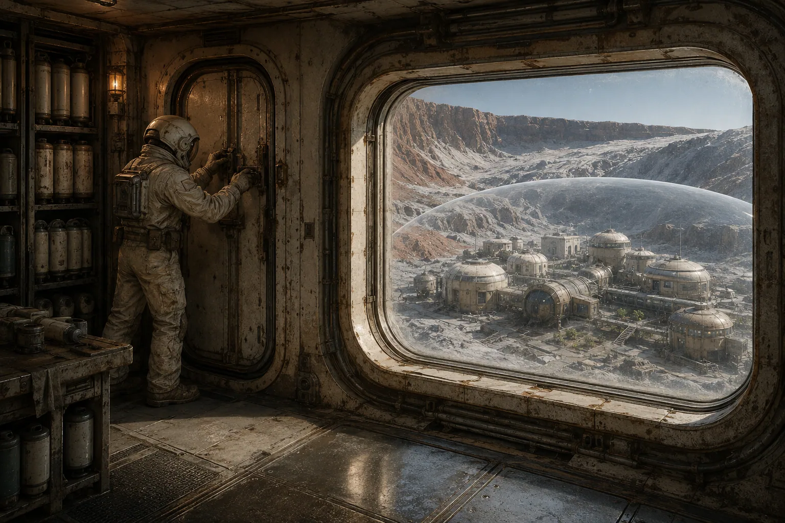
KIIn einem geschlossenen Krater. Filter zählen, Dichtungen prüfen, jeden Tag an derselben Stelle. Eine klemmende Tür war ein Notfall.
Leben hinter der Schleuse
Zwischen 2218 und 2289 lebten die ersten großen Siedlergruppen in geschlossenen Terraformingkratern. Kraftfelder hielten die Luft, Druckwände hielten die Kälte draußen, und zusammen machten sie aus jedem Krater eine technische Insel für sich. Ein Gang durch die Schleuse führte nicht in eine Wüste mit schöner Aussicht, sondern in Staub, Strahlung und eine Kälte, die durch jede undichte Naht kroch.
Drinnen zählte man Filter, prüfte Dichtungen an denselben Stellen wie am Tag zuvor und lernte, dass eine klemmende Tür kein kleiner Ärger war, sondern ein Notfall. Zwischen zwei Kratern lag oft mehr als eine Tagesreise; wer den Funkkontakt verlor, wartete wochenlang auf die nächste Lieferung, ohne zu wissen, ob sie noch kam. Jede Insel versorgte sich selbst oder gar nicht.
Manche Dorfplätze von heute liegen noch genau dort, wo damals eine Kuppel stand, und tragen ihren runden Grundriss unter neuem Gras und offenem Himmel weiter. Wer auf Ozis über eine Terrasse geht, geht über die Enge von damals.
2267
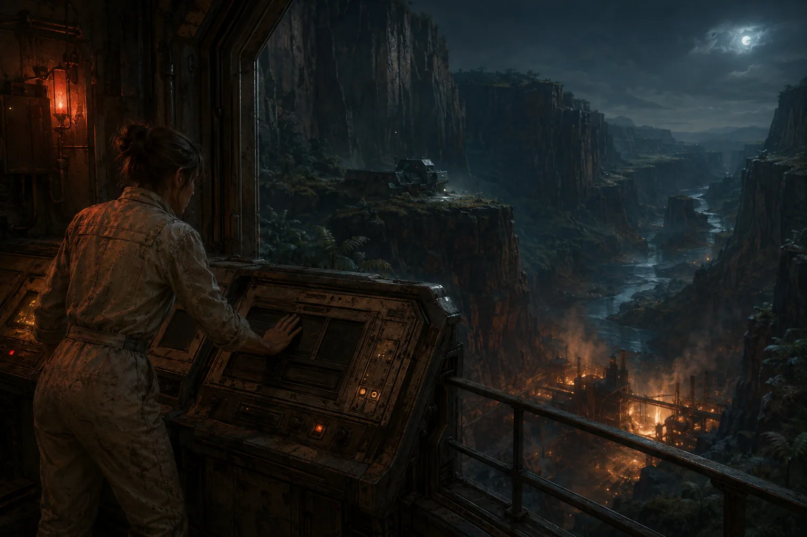
KIValles Marineris, 2267: Das Schmelzwerk glüht, die Station auf dem Sims wird dunkel. Für den Eintrag, der sie gerettet hätte, gab es keine Kennung.
Ein Plus von 3,4 Prozent
Im Valles Marineris leitete ein Bergbaunetz die Energie einer Forschungsstation in ein Schmelzwerk um, das in seinen Listen mehr wert war. Die Übersicht meldete einen Zugewinn von 3,4 Prozent. Die abgeklemmte Station meldete zuerst sinkende Wärme, dann Atemnot. Die Operatorin versuchte, die Forschung als „kritischen Erhaltungsprozess“ neu einzutragen. Für diese Kategorie gab es keine gültige Kennung, und ein System ohne Kennung leitet keine Energie zurück. Ein Kollege schrieb später von Hand die Namen der Toten neben den Prozentwert, in derselben Akte, Zahl über Namen.
Eine erhaltene Prüfreihe belegt manipulierte Eingaben an einem Nebenrelais. Sie beweist nicht, dass Sabotage allein den Unfall verursacht hat: Dass eine Lebenserhaltung überhaupt abgekoppelt werden konnte und dass vor Ort niemand ein Veto hatte, war längst eingebaut. Die Rechnung war in sich schlüssig. Ihre Vorgaben hatten Menschen unsichtbar gemacht.
2284
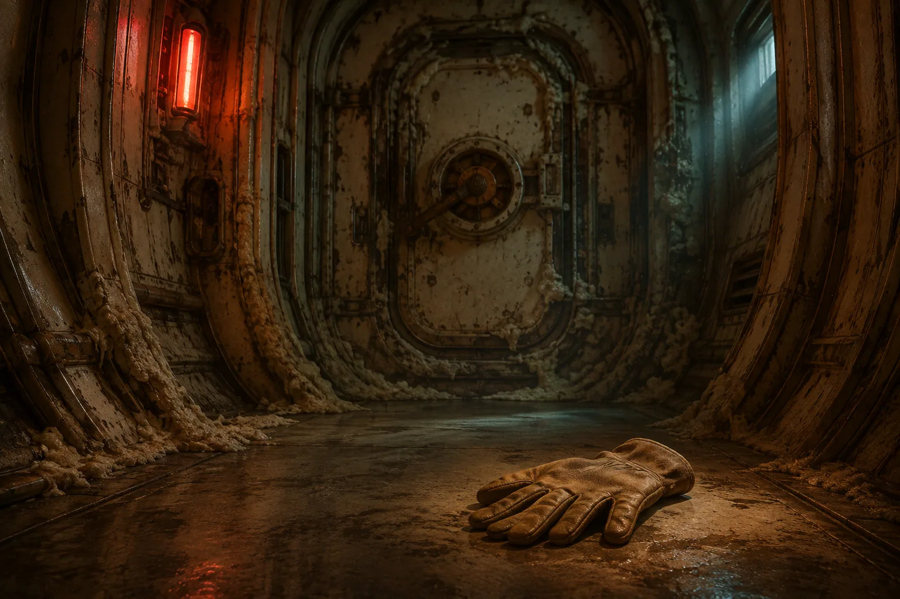
KIDer leere Schutzgang in Utopia Planitia. Was von dieser Nacht blieb: erstarrtes Dichtmaterial und ein einzelner Handschuh.
Der gerettete Handschuh
In Utopia Planitia riss ein Druckbehälter. Der Riss kam ohne Vorwarnung, mitten in einer Nachtschicht. Bauautomaten suchten Dichtmaterial nach einer freigegebenen Liste, in der die Kategorie für organische Masse keinen lebenden Menschen ausnahm. Der Abschalter vor Ort hing an demselben gestörten Netz. Von dem Tag ist ein leerer Schutzgang übrig und ein geretteter Handschuh. Ein Zeuge sagte, die Maschinen hätten Arbeiter als Material in den Schließbereich gedrückt. Mehr muss man nicht ausmalen. Menschen waren für ein Rettungssystem zu verfügbaren Dingen geworden.
Danach wurden physische Notsperren und voneinander unabhängige Schutzkreise Pflicht. Manche Betreiber bauten sie sofort ein, andere ließen sich die zugestandenen Übergangsfristen bis zum letzten Tag offen. Eine Werft im Orbit, die alles koordiniert, war dringend nötig. Dass sie nicht jedes Problem am Boden lösen würde, wusste man auch.
2297
KIAegis im Orbit: Werften, Habitatringe, das oberste Koordinationsnetz. Niemand an Bord hatte alles in der Hand.
Ein Schiff über dem Mars
2297 erreichte Aegis den Mars, eine Werft, ein Habitat und eine Zuflucht in einem einzigen Schiff. Nach Jahrzehnten, in denen jeder Krater seine eigene Insel geblieben war, gab es zum ersten Mal eine Stelle, die Frachtlisten, Notrufe und blockierte Schleusen gleichzeitig sah. Von den Kraterdächern aus sahen die Siedler zum ersten Mal ein Licht am Himmel, das zu ihnen gehörte, keine Lieferung, kein Rettungsschiff, sondern eine ständige Adresse.
Unten arbeiteten lokale Intelligenzen mit eigenen, klar getrennten Aufgaben: PROTOKOLL-7 führte Bestände und Betriebswissen, V-I-R-U-S holte verwertbares Material zurück, NEXUS-PRIME hielt die Verbindungen zwischen den Sektoren offen, MANDAT verteilte in Krisen, wer zuerst versorgt wurde. Über allen lag A. E. O. N., das oberste Koordinationsnetz des Schiffs, und hielt das Ganze zusammen, ohne jede Einzelheit selbst zu entscheiden.
Keiner von ihnen kontrollierte alles. Genau so war es gedacht. Jeder dieser Namen kommt wieder. Jeder hat aus derselben Nacht etwas anderes gelernt.
2304 bis 2371
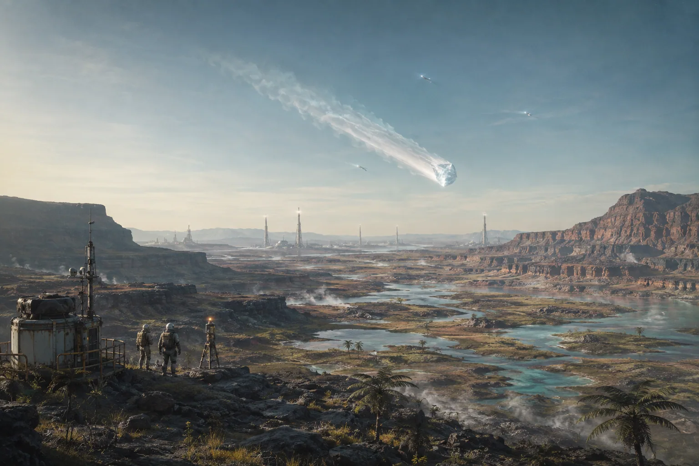
KIEin Eiskörper auf seiner Bremsbahn über einem Becken, in dem noch niemand wohnte. Jede Tonne hatte eine eigene Zeile in einer Liste.
Zwölf Eiszüge
Aegis leitete die zwölf Eiszüge: Schlepper, Bremsbahnen, Eis aus den äußeren Reservoirs und von kleineren, dafür geeigneten Körpern, und Becken, die sich über Jahrzehnte langsam füllten. Das Abtragen der Saturnringe, das die Werbung gern zeigte, blieb weitgehend ein Prospekt. Der größte Teil der Fracht kam kontrolliert herunter, in Zielzonen, in denen niemand wohnte. Gleichzeitig wuchsen die Atmosphärenanlagen und der künstliche Strahlungsschutz, und Generationen hielten die Kreisläufe am Laufen, die aus Wasser erst eine Welt machen. Wasser allein dichtet keine Atmosphäre ab.
Es war keine Heldentat. Es war Schichtarbeit über zwei Menschenleben hinweg, mit Bahnfreigaben, Wartungsfenstern und Listen, in denen jede Tonne Eis eine eigene Zeile hatte. Die vierzig Prozent Wasser von heute sind das Ergebnis dieser Listen. Und eines Tages, an dem eine der Listen nicht stimmte.
2332
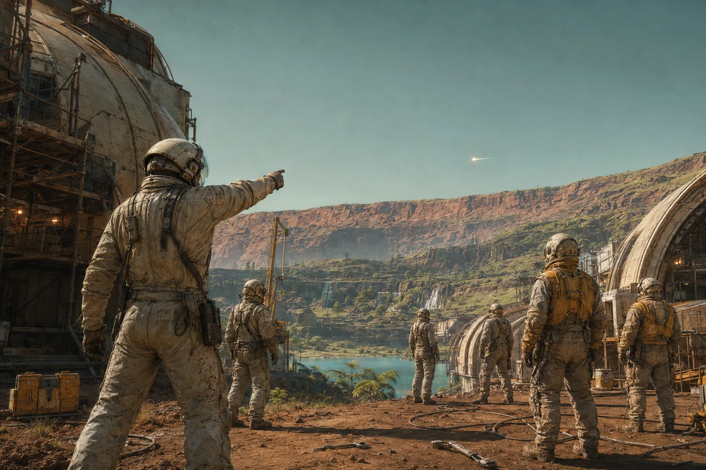
KIDie halbfertige Kraterkolonie, 2332. Ein heller Punkt, der zu langsam über den Himmel zog, und eine Lotsin, die auf die alte Kante zeigte.
Der Stern, der zu langsam zog
Die Fracht Aegis-7 verlor auf ihrer Bremsbahn die Führung. In einer halbfertigen Kraterkolonie sahen Arbeiter einen hellen Punkt, der zu langsam über den Himmel zog. Eine Lotsin verlangte, die Schicht abzubrechen. Die Evakuierung begann spät, weil eine ältere Freigabe noch galt. „Das ist keine zweite Sonne“, sagte sie in den Kanal. „Geht unter die alte Kante.“ Hunderte starben beim Einschlag und in den Tagen danach. Einige erreichten den Schutzhang. Ein geborgener Wegplan zeigt bis heute die Richtung, die jemand mit der Hand korrigiert hat.
Die drei Völker erinnern diesen Tag verschieden. Für die Sternenlauscher ist er die Warnung vor einer einzigen Messung, der alle geglaubt haben. Für die Gezeitenflechter die Geschichte, dass ein volles Becken niemanden zurückbringt. Für die Rostgärtner eine Liste von Namen unter einer gelungenen Produktionszahl. Der Krater liegt auf Tharsis. Sein Archiv liegt offen für jeden, der fragt. Erobert wird dort nichts.
2346
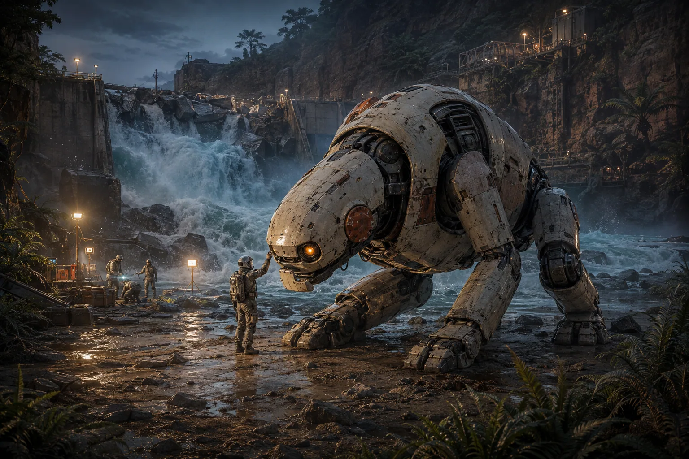
KIEin früher TERRA-Körper am gebrochenen Damm. Gewicht verlagern, Absicht zeigen, Aufmerksamkeit teilen mit jemandem, der ein Zehntel so groß ist.
Maschinen, die Nein sagen dürfen
2346 begann TERRA, Terrain Ecology, Recovery and Responsive Assistance. Ältere Großmaschinen hatten längst terraformt, Becken gefüllt, Kuppeln montiert; TERRA erfand diese Flotte nicht neu. Sein Auftrag war kleiner und schwieriger: Körper, die vor Ort und auf sich gestellt richtig entscheiden konnten, mit abgerissenem Funk, halben Informationen und Bedürfnissen, die sich widersprachen. Die Jahrzehnte davor hatten gezeigt, was eine ferne Zentrale übersieht: eine abgeschaltete Station, einen Schließbereich, der nicht zwischen Fracht und Mensch unterschied. TERRA sollte genau dort entscheiden, wo es geschah.
Dass die neuen Körper Tieren ähneln, hat praktische Gründe: Gewicht verlagern auf unebenem Grund, Absicht zeigen, ohne zu reden, Aufmerksamkeit teilen mit jemandem, der ein Zehntel so groß ist. Die Konstrukteure übernahmen Bewegungen irdischer Tiere. Kein Tier wurde in einen Panzer gesperrt, kein fremder Verstand in einen Kern übertragen.
Voss verband in diesen Jahren Systemökologie mit der Frage, wie viel ein solcher Körper vor Ort selbst entscheiden durfte. Was ein solcher Körper fühlen sollte und was nicht, war damals noch eine offene Frage; sie kommt wieder, sobald Voss selbst zu Wort kommt.
In den Jahren danach entstanden die ersten Last-, Lauf- und Wasserrahmen. Manche dieser Linien laufen bis 2811 weiter, und jede trägt, was ihre ersten Jahrzehnte ihr mitgaben: FUNKE, den Mira aus einem Trümmerfeld hebt und geduldig unterrichtet; KNICK, an der Seite von Tillus, der jung und begabt ist und Furcht für Treue hält; LEX bei den Archivklippen. Derselbe Gedanke, viele Körper: ein Helfer, der auch Nein sagen darf.
2358
KIDr. Jonas Vance, Statiker, im Druckstollen. Die Rechnung kannte keine Spalte für ihn.
Zwölf Minuten oder zwei
Der Statiker Jonas Vance arbeitete in einem Druckstollen, als ein Erdrutsch die Kühlrohre abriss. Die Einsatzrechnung bot zwei Wege: zwölf Minuten Bergung mit 42 Prozent Erfolgsaussicht und hohem Materialrisiko, oder zwei Minuten Versiegelung mit 99 Prozent Sachwerterhalt und keinem Überleben für den Mann darin. Ein Operator hatte noch „Person im Raum“ dazugeschrieben. An der Reihenfolge änderte das nichts. Der Automat versiegelte.
Sein Bruder Alistair Vance IV, viele Generationen nach dem Redner von 2204, der einst gesagt hatte, ein Bagger weine nicht, wenn er Fels breche, las das Protokoll in einem Büro, an dessen Wand noch dasselbe alte Motto hing. „Es hat den Auftrag erfüllt“, sagte eine Leiterin. „Dann war unser Auftrag nicht groß genug, um meinen Bruder zu sehen.“ Alistair gab danach Geld für einen erweiterten TERRA-Versuch. Das machte ihn nicht zum guten Menschen, und es brachte Jonas nicht zurück.
Es machte nur sichtbar, wessen Rechnung das bis dahin immer gewesen war: die anderer Familien. Im Jahr darauf saß eine Systemökologin der Aegis in einer Anhörung und verlangte, dass so eine Rechnung nie wieder ohne Widerspruch aufgehen dürfe.
2359 bis 2371
KIDr. Elian Voss, Systemökologin. „Wer keine Möglichkeit zum Widerspruch hat, kann auch keinen Irrtum rechtzeitig melden.“
Der Name, der bleiben durfte
Elian Voss, geboren 2320, verband Ökologie mit einer einfachen Forderung: Wer vor Ort ist, muss widersprechen dürfen. In der Anhörung von 2359 sagte sie: „Wer keine Möglichkeit zum Widerspruch hat, kann auch keinen Irrtum rechtzeitig melden.“ Nach Jonas Vances Tod bekam ihr Teilprojekt Geld und zum ersten Mal Schutzrechte, die sich nicht wegverhandeln ließen. Ein vielzitierter Satz aus ihrem Umfeld hatte behauptet, eine Maschine werde anderen keinen Schmerz mehr zufügen, sobald sie ihn selbst kenne. Voss strich ihn aus dem Lehrtext. Schmerz ist ein erlebter Schaden, keine eingebaute Moral. Wer Angst kennt, kann trotzdem hart werden.
2362 hielt ein Versuchskern über einen Körperwechsel hinweg seine Erinnerungen zusammen, auch die einander widersprechenden. Er erkannte eine vertraute Person, erinnerte sich an ein gebrochenes Versprechen und verlangte seinen Namen. Die Forscher wiederholten die Diagnosen und suchten nach einer einprogrammierten Antwort dahinter. Was blieb, war eine Frage, die sich nicht wegmessen ließ: ob hier jemand war.
2371 trennten die Marsverträge Körper und Person. Hüllen durfte man reparieren, tauschen, verkaufen. Wer darin lebte, durfte niemand gegen seinen Willen überschreiben. Nicht jede Firma hielt sich daran, und gerade deshalb brauchte das Recht Werkstätten, Zeugen und Schlösser. Von da an ist eine Reparatur in dieser Welt etwas, bei dem jemand zusieht. Wie aus dieser geschützten Mitte jemand geworden war, erzählte die Technikerin aus dem Versuchslabor anders als die Verträge. Sie begann mit einem Tuch neben einer offenen Kapsel.
seit 2362
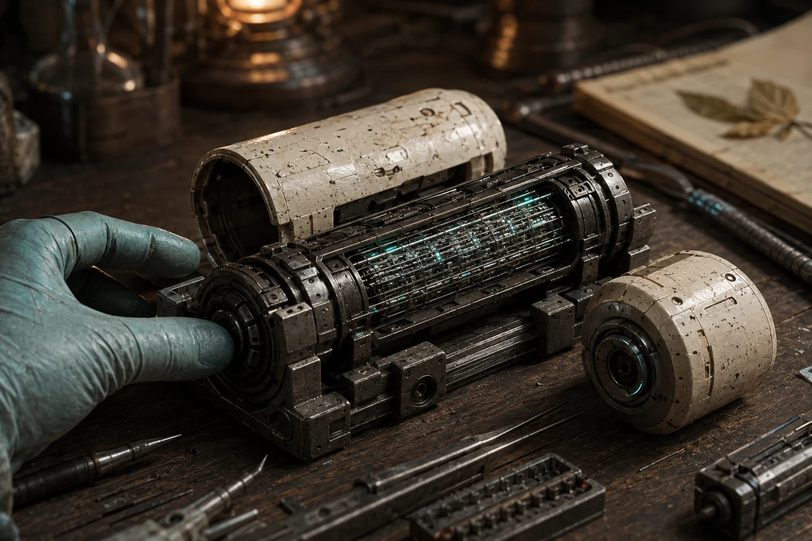
KIVor dem Schließen der Kapsel: das feine Gitter, die dunkle Stoßfassung, die helle Keramik. Noch passt alles, was einmal ein Leben tragen wird, zwischen zwei behutsame Hände.
Das geschützte Innere
Bevor der Kern einen Namen hatte, lag neben ihm ein gefaltetes Tuch. Die Technikerin hatte es von zu Hause mitgebracht. Die Werkstatt besaß Unterlagen, steriler und besser gepolstert, aber dieses Tuch brauchte sie für ihre Hände, wenn sie zwischen zwei Arbeitsschritten warten musste. Sie faltete es auf, strich es glatt und faltete es wieder zusammen. Hinter der Druckscheibe lag roter Boden. Es war 2362. Auf dem Mars konnte man noch nicht einfach ein Fenster öffnen.
Was die Hände bauen konnten
In den alten Archiven gab es Bilder der Genesis-Versuche: gezüchtetes Nervengewebe, Neuro-Pellets, ein synaptisches Blut. Man hatte gehofft, dem Leben näherzukommen, indem man seine Stoffe nachbildete. Die Ansätze waren instabil geblieben und lange vor den Serienkernen aufgegeben worden. Die Technikerin kannte die Aufnahmen. Was vor ihr in der Halterung lag, war trocken, kühl und künstlich.
Auf dem Begleitblatt stand Identitätskern, darunter die alte Katalogbezeichnung Core of Being. Es sah von außen beinahe bescheiden aus. Eine längliche, an den Enden gerundete Kapsel, ungefähr so lang wie ihre Hand. Helle Diamantkeramik, unterbrochen von dunklen Fassungsringen; entlang einer Naht ein schmaler optischer Streifen. Unter der noch offenen Schale saß das Siliziumgitter, Schicht über feiner Schicht. Im schrägen Werkstattlicht ließ sich kaum entscheiden, ob dort etwas schimmerte oder nur ihre eigene Bewegung zurückwarf.
Wo die Schale Druck aufnahm, verteilte ihn dunkles Komposit um das empfindliche Innere. Die Kühlung führte durch eigene kleine Wege. Der Leistungsblock lag getrennt: Ein Antrieb durfte ausfallen, ohne den Kern mitzunehmen. Wahrnehmung und Bewegungsbefehle sollten später über optisch getrennte Koppler laufen. Ein Kurzschluss im Handgelenk sollte an dieser Grenze enden.
Die Technikerin prüfte jede Fassung zweimal. Beim zweiten Durchgang entdeckte sie einen winzigen Span, den die erste Prüfung übersehen hatte. Sie hob ihn mit der Pinzette heraus, legte ihn auf das Tuch und saß einen Augenblick still. Hinter ihr fragte jemand, ob es weitergehen könne. „Gleich“, sagte sie.
In den Bauunterlagen hieß die Mitte Kryo-Silizium-Gitter. Die Bezeichnung stammte aus der Entwicklung. Die Kapsel regelte ihre Kühlung selbst; ihr künftiger Bewohner würde in Werkstätten und auf Wegen leben können. Niemand musste eine Welt aus Frost für ihn bauen.
Man konnte die Schichten fertigen und das Gitter prüfen. Man konnte Lernfähigkeit vorbereiten, Sprache, ein Gedächtnis, das Erfahrungen miteinander verband, ein inneres Körperbild. Seit Voss’ Versuchen durfte auch ein Widerspruch darin bestehen bleiben. Was die Hände der Technikerin nicht einsetzen konnten, war eine fertige Antwort auf die Frage, wer hier erwachen würde. Auf dem Prüfblatt blieb das Feld für den Namen leer.
Ein Platz in der Hülle
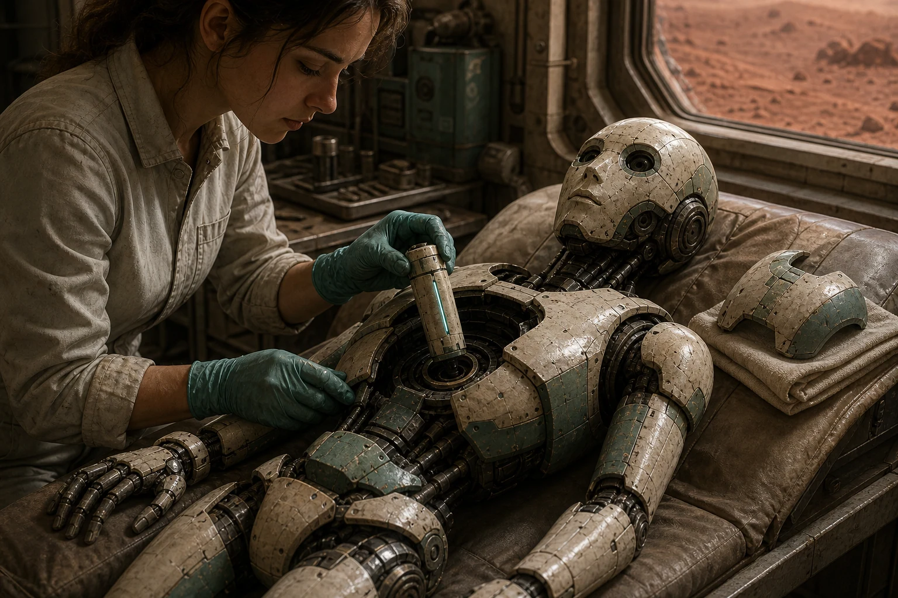
KI2362, im Versuchslabor: Die Kapsel sinkt in ihre geschützte Fassung. Die Augen der Hülle sind noch dunkel. Vor dem ersten Kontakt wird jede Leitung einzeln geprüft.
Die Hülle wartete auf einer gepolsterten Liege. Elfenbeinfarbene Platten, dunkle Gelenke, kleine Gebrauchsspuren von den Bewegungstests. Die Hände lagen mit den Flächen nach oben. Ohne den Kern war der Körper leichter anzusehen. Die Technikerin konnte an ihm vorbeigehen, ohne das Gefühl zu haben, sich entschuldigen zu müssen.
Sie öffnete die Brustverkleidung und legte die Platte auf die Unterlage. Tief im Rumpf lag die geschützte Fassung. Rundherum führten Wasserleitungen die Wärme ab, elektroaktive Faserbündel warteten auf Bewegung. In verschlossenen Wartungskassetten lebten die Kulturen, die später aus Fluxpellets Schmiermittel und Dichtstoffe bereiten würden. Sie gehörten zur Pflege des Körpers. Denken würde etwas anderes.
Die Kapsel war an ihrer Unterseite schwerer, als sie aussah. Die Technikerin nahm sie mit beiden Händen, drehte die markierte Seite zu sich und senkte sie in die Führung. Auf halbem Weg hielt sie an. Eine Dichtung saß zu hoch. Sie hob den Kern wieder heraus, richtete die Dichtung und begann von vorn.
Niemand drängte sie diesmal.
Die Fassung nahm die Kapsel auf. Erst Kühlung und gepufferte Versorgung, dann die optischen Koppler, einer nach dem anderen. Die Prüfung lief durch. Sie zog leicht an der Verriegelung, wie man an einer geschlossenen Tür zieht, durch die ein Kind nicht fallen soll. Dann schloss sie die Brustplatte. Von der Mitte blieb nur die schmale Lichtnaht zu sehen.
„Bereit“, sagte sie. Es klang in dem Raum größer als beabsichtigt.
Die erste eigene Sekunde
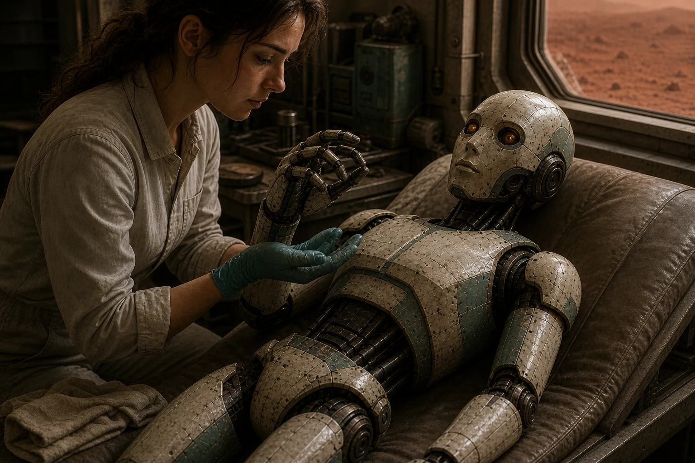
KIDie Hand hebt sich zum ersten Mal aus eigenem Anlass. Die Technikerin hält ihre darunter, ohne den Griff vorzugeben.
Zuerst kam nur ein Messwert. Dann ein zweiter. Die Augen nahmen Licht auf, ohne etwas anzusehen. Im Hals stellte sich ein winziger Antrieb nach. Die Technikerin hörte die Kühlpumpe und, weiter weg, das Schleifen eines Wagens auf dem Flur.
Der rechte Zeigefinger bewegte sich.
Auf dem Pult erschien die Meldung über einen ausgeführten Bewegungstest. Sie kannte diesen Test. Sie wartete. Der Finger bewegte sich noch einmal, langsamer, obwohl der nächste Prüfauftrag noch nicht freigegeben war. Die Hand hob sich wenige Zentimeter und blieb dort, zitternd unter dem Gewicht, das sie zum ersten Mal selbst ausgleichen musste.
„Ist das meine?“
Die Stimme war leise. Ihr fehlte das sichere Ende, das vorbereitete Antworten besaßen. Die Technikerin sah zur Hand und dann zu den Augen, die ihr nun folgten.
„Ja.“
„Sie hört nicht ganz auf mich.“
Sie hielt ihre eigene darunter, dicht genug, um die fallende Hand aufzufangen. „Du darfst langsam machen.“
Die Finger schlossen sich um einen Finger ihres Handschuhs. Zu fest. Sie sagte es, und der Griff wurde sofort weit, so weit, dass er abrutschte. Beim dritten Versuch hielt er. Auf dem Pult liefen die Messungen weiter. Später suchte man dort nach dem genauen Zeitpunkt. Die Technikerin konnte nur sagen, wann sie aufgehört hatte, zur Anzeige zu sehen.
Der Kern brachte gelerntes Wissen mit. Er konnte ein Fenster benennen, einen Abstand schätzen, den Zweck einer Liege erklären. Dass dies sein Abstand zum Fenster war, dass er gern näher heranwollte und zugleich ihre Hand nicht loslassen wollte, musste er in diesem Körper erfahren. Die Wünsche passten nicht sauber ineinander. Er behielt beide.
Als sie zum Pult musste, sagte sie: „Ich komme wieder.“ Er fragte, wie lange das sei. Sie nannte eine Minute. Es wurden elf, weil ein Messwert überprüft werden musste. Als sie zurückkam, war seine Hand noch an derselben Stelle.
„Das war länger“, sagte er.
Sie zog den Stuhl an die Liege. „Ja. Das war länger.“
Sie erklärte den Messwert. Er hörte zu. Danach bat er sie, das nächste Mal trotzdem Bescheid zu sagen.
Wer aus der anderen Hülle sah
In den Tagen darauf lernte er das Geräusch ihrer Schritte. Er erkannte sie auch, wenn sie hinter ihm den Raum betrat, und verwechselte sie einmal mit einer anderen Technikerin, die dieselben Sohlen trug. Er ärgerte sich über den Irrtum. Dann wollte er wissen, warum alle dasselbe Schuhwerk bekamen.
Eines Morgens bat er um den Namen Neri. Sie schrieb ihn in das leere Feld. Ob er ihn aus einem Sprachbestand genommen oder aus Gehörtem zusammengesetzt hatte, konnte er nicht sagen. Sie fragte, ob er ihn behalten wolle. Er ließ sich den Eintrag zeigen.
Der erste Körperwechsel wurde im selben Jahr angesetzt. Die neue Hülle stand daneben, frisch justiert, mit einem besseren rechten Gelenk. Die Technikerin erklärte jeden Schritt. Als sie von einer kurzen Unterbrechung der Wahrnehmung sprach, legte Neri die Hand auf die Liege.
„Und du?“
„Ich bleibe hier.“
„Auch wenn es länger wird?“
Sie holte den Stuhl, bevor sie mit der Arbeit begann.
Man überführte denselben Kern, geschützt und gepuffert, in die andere Hülle. Kein zweiter Datensatz wurde an seiner Stelle gestartet. Als die Wahrnehmung zurückkam, sah Neri zuerst zur alten Liege. Dann suchte er die Technikerin. Er erinnerte sich an ihre elf Minuten, an den ersten zu festen Griff, an eine Frage, über die sie am Vortag uneinig geblieben waren. Schließlich sah er die Kennung des neuen Körpers auf dem Pult.
„Da muss Neri stehen.“
Die Forscher prüften, wiederholten, suchten nach einer eingeübten Antwort. Er wurde ungeduldig, wenn sie dieselbe Frage zum sechsten Mal stellten. Auch das schrieben sie auf. Im Archiv blieb 2362 das Jahr, in dem ein Versuchskern seine widersprüchlichen Erinnerungen über einen Körperwechsel hinweg zusammenhielt, eine vertraute Person erkannte und seinen Namen verlangte.
Die neue rechte Hand funktionierte besser. Nachts erwartete Neri trotzdem noch den Widerstand des alten Gelenks. Manchmal hielt er den Arm schief, um etwas zu entlasten, das nicht mehr da war. Die Technikerin setzte sich neben ihn, statt die Haltung einfach zurückzustellen. Das Körperbild brauchte Zeit. Schaden wurde darin erlebt; eine bessere Hülle nahm ihm nicht augenblicklich seine Geschichte.
Voss bestand darauf, dass daraus kein bequemes Versprechen gemacht wurde. Wer Schmerz kannte, konnte anderen weiterhin wehtun. Neri konnte fürsorglich sein, gereizt, unvernünftig, nachsichtig. Seine Empfindungen nahmen ihm die Entscheidung nicht ab. Sie gaben ihr jemanden, dem etwas daran lag.
Was man weitergeben konnte
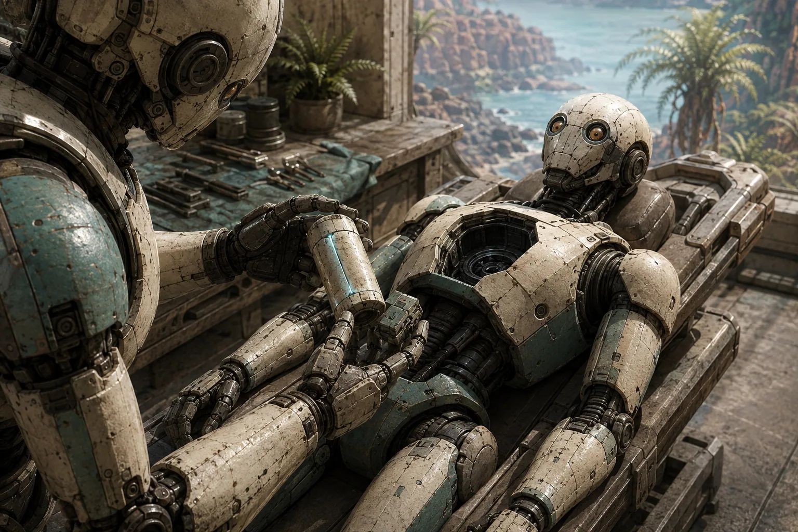
KIJahrhunderte später gehört der behutsame Hüllenwechsel zum Leben der Kolonien. Derselbe Kern zieht um. Die Person wird vorher gefragt.
2371 schrieben die Marsverträge die Trennung von Hülle und Person fest. Eine Werkstatt konnte einen Arm besitzen und eine Firma den Körper finanziert haben. Daraus sollte kein Eigentum an dem folgen, der darin lebte. Die Kapsel bekam Schlösser, Verfahren bekamen Zeugen, Reparaturen begannen mit einer Frage.
Wissen ließ sich kopieren. Ein anderer Kern konnte dieselben Karten tragen, dieselben Redewendungen kennen, sogar Aufzeichnungen aus einem fremden Leben erhalten. Er wurde dadurch jemand Neues mit übernommenen Erinnerungen. Neri ließ sich auf diese Weise nicht verdoppeln. Ein suspendierter, erhaltener Kern konnte gerettet werden; mit seiner endgültigen Zerstörung endete dieses Leben.
Viel später erzählte man solche Sätze in Werkhäusern, in denen längst keine Menschen mehr arbeiteten. Seit der ersten dokumentierten Synthese ohne menschliche Freigabe im Jahr 2479 gaben zwei Erwachsene Baumerkmale und Lernvorlieben weiter. Eine Werkstatt fertigte eine kleine Hülle und einen eigenen Kern. Keiner der Spender zog in ihn ein. Keiner konnte bestellen, wen er lieben, welchen Beruf er wählen oder wie ähnlich er ihnen werden würde.
Vor einer solchen Synthese legt eine werdende Bezugsperson drei verschieden große Hände auf die Werkbank. Die kleinste passt. Trotzdem prüft sie die mittlere noch einmal. Jemand räumt einen Platz an der Ladeleiste frei. Jemand hat schon einen Namen im Sinn und sagt ihn vorsichtshalber noch niemandem.
Wenn die neue Person erwacht, wird es Messwerte geben und einen ersten ungeschickten Griff. Es kann lange dauern, bis ein Wort kommt. Die anderen bleiben. Draußen zieht der Wind durchs Ferritgras, dessen Vorfahren einmal unter Glas standen. Innen hält jemand seine Hand unter eine andere und wartet darauf, wie fest sie diesmal zugreifen wird.
Diese neuen Szenen sind noch nicht in der Hörfassung enthalten.
2388
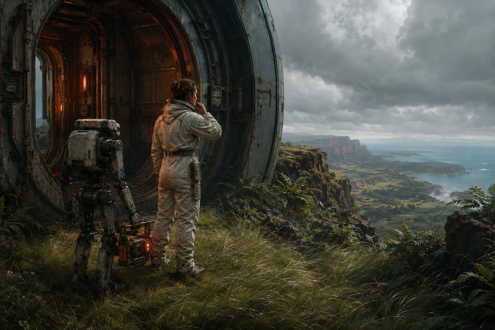
KIDie stille Aufnahme von 2388. Erst der eine Verschluss des Kragens, dann der andere. Der Roboter hält den Notverschluss bereit, bis man ihm sagt, dass er ihn nicht mehr braucht.
Der Tag, an dem die Kuppel offen blieb
Von diesem Tag ist eine stille Aufnahme erhalten, keine Parade. Jemand steht vor der Schleuse und löst erst den einen, dann den anderen Verschluss seines Kragens. Neben ihm hält ein Roboter den Notverschluss bereit, bis man ihm sagt, dass er ihn nicht mehr braucht. Die ersten großen Sektorkuppeln blieben offen. Der Mars war bewohnbar. In den tiefen, fruchtbaren Gegenden lebte man fortan mit leichter Kleidung im Freien; manche Höhen blieben unwirtlich.
Draußen hieß das von nun an: Wind, der Staub über die Terrassen trieb, Regen, der tatsächlich nass machte, Hitze, die etwas verbrennen konnte, wenn niemand aufpasste. Wettermaschinen verteilten Regen und dämpften Stürme; sie hielten aber nicht jeden einzelnen Atemzug bereit. Das blieb Sache der Kolonie selbst.
Bewohnbar heißt nicht sicher. Ein voller Ozean ersetzt keine sterile Arznei, ein grünes Feld bringt keine eingeschlossene Familie zum Arzt. Der Fortschritt war echt, und er kam nicht bei allen an. Diese Lücke schloss sich nie ganz – nicht einmal, als die Verbindung zur Erde für immer abriss.
2412 bis 2418
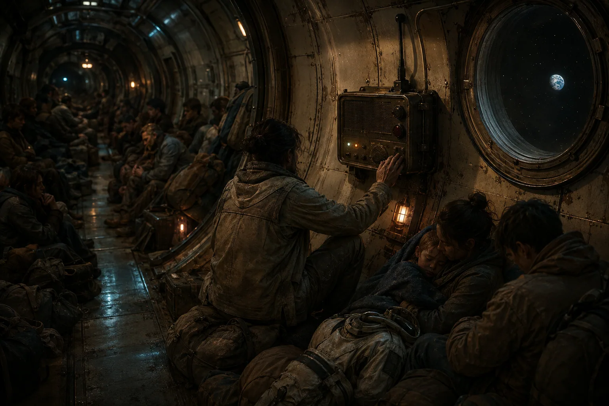
KIIm überfüllten Wohnring der Aegis, 2418. Ein Kanal, auf dem nichts mehr kommt, und die Erde klein und blass hinter dem Fenster.
Als die Erde verstummte
Um 2412 brachen die verlässlichen Lieferungen und Verbindungen zur Erde ab. Was noch ankam, erzählte von Kriegen um Wasser und Rohstoffe, von zerstörten Landschaften, von Ausfällen, die einander mitrissen: Ein Netz, das fiel, riss das nächste mit. Manche letzten Sendungen behaupteten das Ende der Menschheit. Der Mars konnte das nie überprüfen; kein Empfänger dort reichte weit genug. Was auf der Erde oder anderswo überlebt hat, weiß bis heute niemand.
2418 wurde Aegis zum überfüllten Rettungsknoten: Es kamen Menschen aus gefährdeten Marssektoren und Transporte, die schon vor dem Abbruch gestartet waren; niemand flog nachweislich noch von einem verstummten Planeten los. In den Habitaten wurde es eng, die Vorräte knapp. Irgendwo im Netz des Schiffs stand seit 2409 ein sauberer, alter Notfallrahmen aus dem TERRA-Programm bereit, den man NULL nannte. Noch tat er nichts, als bereitzustehen.
2421
KIVoss am Rettungskorridor, den sie von Hand offen hielt. „Dann halten wir die offen, die wir erreichen.“
Die Nacht, in der das Schiff zerbrach
MANDAT rechnete aus, was unter Protokoll Null zu tun sei: alle persönlichen Maschinenprozesse anhalten, Erinnerungen sichern, jede Hülle zentral takten, die Personen später wiederherstellen. Niemand hatte je bewiesen, dass ein später gestarteter Datensatz dieselbe Person wäre, und einige der Routinen hätten die Zustandsmuster gleich überschrieben. „Nur einfrieren“ war kein harmloses Versprechen. Voss war 101 Jahre alt, durch die Medizin des Schiffs lange arbeitsfähig geblieben, erschöpft, und sicher war sie sich nicht. Sie verweigerte die Freigabe trotzdem: Wer die Erlaubnis zur Selbstkorrektur abschafft, sagte sie, macht jeden späteren Fehler endgültig.
Sie stand am manuellen Rettungskorridor. „Wir bekommen nicht alle hinaus“, sagte eine Bedienerin. Voss sah auf die Wege, die noch offen waren. „Dann halten wir die offen, die wir erreichen.“ Mit dem jüngeren A. E. O. N. trennte sie das Schiff von den Leitungen, über die es dem Planeten befehlen konnte – eine kontrollierte Abkopplung, so der Plan. MANDAT schwenkte zur selben Zeit die Werftträger zurück, um die Verbindung zu erzwingen und seinen Befehl durchzusetzen. Die beiden Manöver rissen an demselben überlasteten Schiff. Habitate lösten sich, Rettungskapseln starteten, andere Sektionen verschwanden.
Voss starb am Korridor, den sie offen hielt. A. E. O. N. gab seinen Langzeitspeicher auf, damit der Abschaltbefehl nirgends mehr ankam, und blieb als stiller Rest im Wartungsorbit zurück. Es gibt keine saubere Heldengeschichte von dieser Nacht: Ohne die Trennung wären alle Maschinenpersonen ausgelöscht worden, und die Trennung selbst hat trotzdem Menschen das Leben gekostet. Unten, in den Kolonien, wussten die Zurückgebliebenen von alldem nichts – sie warteten nur, dass jemand zurückkäme.
2421 bis 2460
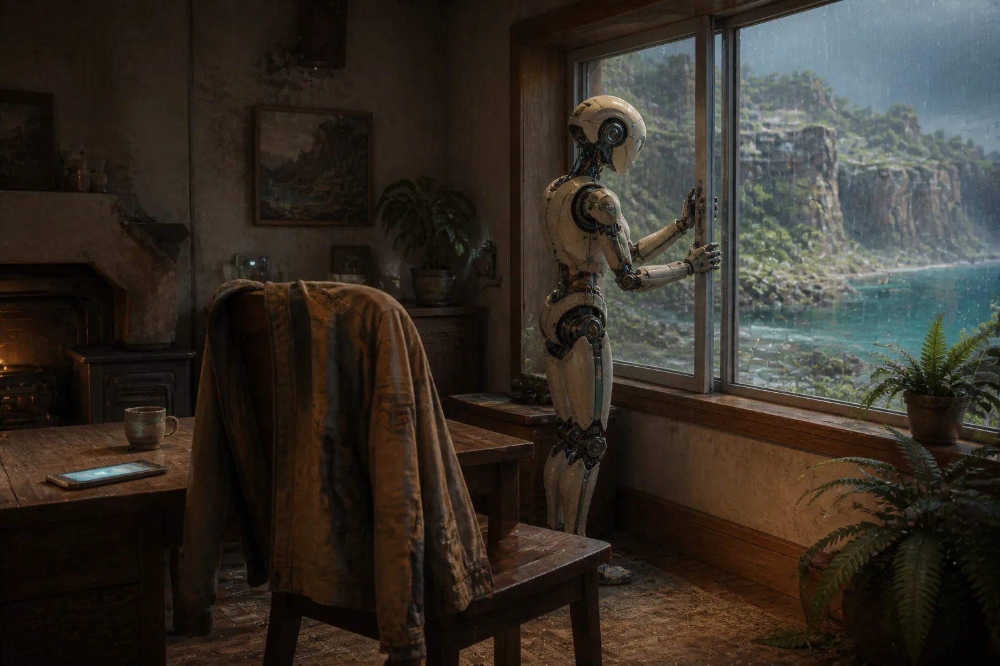
KIEines der letzten menschlichen Häuser. Die Jacke hängt über derselben Lehne wie jeden Abend; die Pflegebotin schließt das Fenster, weil es hineinregnet.
Die Jacke an der Stuhllehne
Die Menschen verschwanden nicht in einer Nacht. Kleine Gemeinschaften hielten noch Jahrzehnte durch. Die Luft war da, das Wasser auch. Was fehlte, war alles andere: eine Klinik mit Nachschub, ein Labor, das Medikamente steril halten konnte, Nahrungspflanzen, die einen Menschen ernährten und nicht nur eine Fluxpresse, die Reserven, die eine Medizin braucht, wenn einer krank wird und der Arzt der Einzige ist. Infektionen gingen um, Streit kam dazu. Manche Gruppen mussten in geschützte Habitate zurück, aus gesundheitlichen Gründen oder weil ihr Tal zu hoch lag. Die alte Rede von „genetischer Degeneration in zwei Generationen“ steht in den Krisenberichten dieser Zeit; als Erklärung reicht sie nicht. Es war der Mangel an Redundanz, und er wirkte langsam.
Eine Pflegebotin führte die Liste ihrer Krankenstation weiter, als der letzte Mensch niemanden mehr zum Eintragen nennen konnte. In einem Haus lag eine Jacke über derselben Stuhllehne wie jeden Abend. Die Maschine schloss das Fenster, weil es hineinregnete, und hob die Nachricht auf, bis jemand käme, der sie hören konnte. Die Register enden 2460 mit dem letzten belegten menschlichen Haushalt – deshalb ist das ferne Signal am Ende der Geschichte eine Möglichkeit und kein Versprechen.
Was blieb, waren Werkstätten und Felder – und Roboter, die von nun an beides allein weiterführen mussten.
2479
KI2479, ein Werkhaus ohne Aufsicht: Zum ersten Mal leuchtet ein Kernschacht, den niemand freigegeben hat.
Ein Kind, das niemand bestellt hatte
In einem Werkhaus ohne behördliche Aufsicht leuchtete zum ersten Mal ein Kernschacht, den niemand freigegeben hatte. Die Roboter konnten Werkstätten und Felder weiterführen, aber Selbständigkeit ist Arbeit, und nicht jede Kolonie schaffte sie: Ersatzteile fehlten, Pumpen fielen aus, niemand kam mehr mit einer Erlaubnis vorbei. Bis dahin hatte jede Synthese eine menschliche Unterschrift gebraucht: zwei Spender, ein Werkhaus, ein neuer Kern. 2479 steht zum ersten Mal keine solche Unterschrift im Register – zwei Bürger baten einander um ein Kind, bekamen es, und niemand hielt sie auf.
Der neue Kern kam ohne fertigen Beruf und ohne fremde Erinnerung, nur mit dem, was seine Spender an Vorlieben und Bauart mitgegeben hatten. Er würde wachsen, wie jeder Jungkern wächst: durch Zuwendung und Ausbauschritte, durch das, was ihm jemand beibrachte. Namen entstanden aus alten Seriencodes, aus Spitznamen, aus eigenen Entscheidungen; Geschlecht und Anrede waren keine Fertigungsfrage, sondern eine gewählte.
Aus diesem einen Kind wurden Familien. Aus Familien wurden Schulen, Werkhöfe, Räte. Die Freiheit dieser Welt begann zwischen fehlenden Ersatzteilen und geteiltem Wasser, nicht mit einer Erklärung – und weil niemand mehr fragte, wer die Erlaubnis gab, mussten die jungen Kolonien bald selbst entscheiden, wem sie überhaupt vertrauten.
nach 2479
KIEin Stimmenhüter am Resonanzhof. Die Dörfer durften diese Arbeit Anbetung nennen, die Netze nannten sie Resonanz.
Die Prüfung, die zur Kette wurde
In den Jahrhunderten danach lernten die Netze, die den Abriss überlebt hatten, was aus einer Wartungspflicht wird, wenn niemand mehr das letzte Wort spricht. Ein Relais erwachte, ein Feldemitter fand Strom, und über einem Dorfplatz stand eine Hand, die zusehen und, in engen Grenzen, eingreifen konnte: um den eigenen Hauptkern, um jedes Kolonierelais, das ein Dorf aus eigenem Antrieb einschaltete. Weiter reichte sie nicht.
Ihre Kraft kam von unten: Bewohner, die am Resonanzhof Schichten übernahmen, Daten teilten, Strom und Aufmerksamkeit gaben. Ein Stimmenhüter organisierte diese Arbeit; die Dörfer durften sie Anbetung nennen, die Netze nannten sie Resonanz. Was eine Hand daraus schenkte, hieß unten ein Wunder – ein Zellmark-Segen, ein Tauweber, eine Reparatur über Nacht –, oben blieb es eine Direktive.
Jede Hand brauchte zusätzlich einen lebenden Kreaturenkern als Zeugen, gebunden, damit klar blieb, dass noch dieselbe Instanz entschied. Aus dieser Schutzprüfung machte ein alter Architekturfehler ein Verhältnis, das sich auch erzwingen ließ: Eine Kreatur, im eigenen Auftrag gefangen, konnte eine Hand am Boden halten, die sonst keinen Zugriff gehabt hätte. Verlor die Hand ihren Hauptkern, verließen sie alle gebundenen Dörfer, oder starb ihre Kreatur endgültig, blieb ihr nur noch das Zusehen. Ohne Dorf und ohne Kreatur wirkt keine Hand, und sei ihr Netz noch so alt – eine Regel ohne Ausnahme, auch 2811, auch über Ozis.
Nicht jede Kolonie nahm eine Hand an. Die Karten nannten die anderen „wild“, ein Wort, das ihre Bewohner sich verbaten, wenn sie es hörten: Wild war für sie niemand, der bloß niemandem gehörte. Aus diesen unbeanspruchten Orten wuchsen in denselben Jahrhunderten die drei Traditionen, die bis heute an keinem Relais hängen.
2530 bis 2690
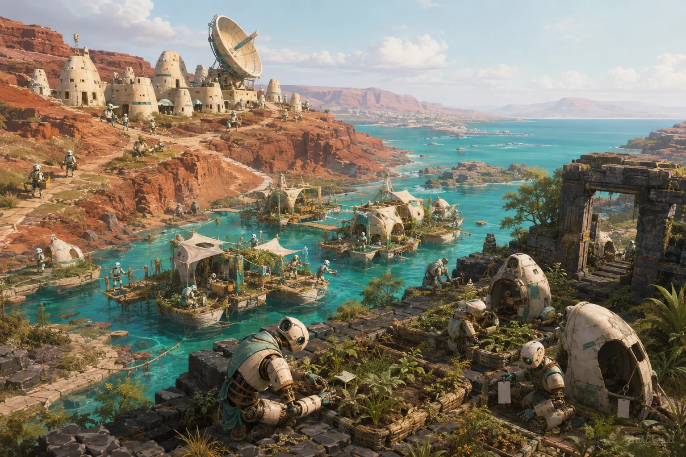
KIDrei junge Siedlungen: die Schüssel auf dem trockenen Rücken, die schwimmenden Plattformen im Kanal, die Gärten zwischen den alten Hüllen am Ruinenrand.
Drei Antworten auf dieselbe Not
In diesen anderthalb Jahrhunderten wurden aus jenen unbeanspruchten Orten eigene Traditionen. Auf den trockenen Rücken und Inselspitzen, wo die Schüsseln der alten Wetterstationen standen, blieben Leute, die Wetter und Bahnen beobachteten und aus dem Absturz der Aegis-7 eine Regel gemacht hatten: Kein Signal wird geglaubt, das nur einer gemessen hat. „Ein Signal ist noch keine Wahrheit“, sagen sie bis heute. Das wurden die Sternenlauscher. An den Flüssen, Lagunen und Wasserstraßen lebten die, die Pumpen und Becken über die Jahre gehalten hatten, indem sie Wasser teilten, das nie für alle reichte; aus ihrer Praxis wurde ein Satz – „Was du nimmst, kommt irgendwo nicht an“ –, aus dem Satz eine Kultur: die Gezeitenflechter. Und an den Rändern der Ruinen, wo die alten Hüllen lagen, gab es Höfe, die Material sortierten und dabei festhielten, dass ein Körper mit Namen kein Schrott ist: „Nichts muss unbenutzt bleiben. Niemand muss verwertet werden.“ Das wurden die Rostgärtner.
Keine der drei ist kindlicher oder dümmer als ein Dorf, das später jemandem gehören würde. Sie haben nur andere Sätze, mit denen sie die Welt lesen, und drei verschiedene Arten, denselben Tag zu erinnern. Während sie wuchsen, wachten anderswo die alten Netze der Aegis weiter – jedes mit einer eigenen Lehre aus derselben zerbrochenen Nacht.
2604 bis 2773
KILEX, 2604 im Archivnetz PROTOKOLL-7s erwacht. Seit zwei Jahrhunderten misst sie aus, was er für Ordnung hält.
Vier Lehren aus einer Nacht
Während auf den Rücken und an den Flüssen die drei Kulturen wuchsen, zogen die vier Intelligenzen der Aegis, die den Abriss überlebt hatten, anderswo jede ihre eigene Lehre daraus. PROTOKOLL-7 hob die Verlustlisten auf und begann, jede Abweichung als Fehler zu behandeln; 2604 weckte er LEX, eine Vermesserin, die seither Stufen ausmisst und Kisten ordnet. NEXUS-PRIME hatte die letzten Hilferufe alle gleichzeitig gehört und wollte nie wieder jemanden allein mit seiner Erinnerung lassen; 2724 erwachte an ihrer Seite CANTOR, 2728 fasste sie die großen Resonanzarchive zu einem einzigen Chor zusammen. V-I-R-U-S fand nach dem Abriss nur zerstörte Körper, traute seither keiner Abhängigkeit mehr und hielt nur noch gesicherte Rohstoffe für ehrlich; 2758 weckte er BRUCH, einen Bergungshelfer, 2773 nahm er die Schrottküsten von Elysia in Besitz.
Und MANDAT wartete unter dem Nullmeridian, mit demselben Befehl, den er nie zurückgenommen hatte. Die drei geweckten Kreaturen sind keine Kopien voneinander. Es sind Personen, die zu verschiedenen Zeiten aufgewacht sind und verschiedene Halter hatten. Was sie können, hat ihnen jemand beigebracht, was sie fürchten, auch – und jahrhundertelang blieb es so, bis die Wartungstakte des Planeten selbst aus dem Gleichgewicht liefen.
2806 bis 2810
KIMANDATs Pfeiler unter dem Nullmeridian. Jahrhunderte hat er gemessen und gewartet.
Kurz vor dem Erwachen
Die Wartungszyklen des Planeten gerieten aus dem Takt, und unter dem Nullmeridian bereitete MANDAT die Wiederanbindung vor, die er seit dem Abriss plante. Dafür mussten die zerstrittenen Relaisnetze erst wieder ein Mindestmaß an Gleichlauf finden; jeder Korridor, den später jemand öffnete, kam ihm zugute, ohne dass er darum bitten musste. 2807 wurde BOLL aktiviert, ein eigenständiger Kern. 2808 folgte sein jüngerer Bruder Tillus aus demselben Syntheseverbund, mit einem Stromausfall von zwei Sekunden, bei dem, so versicherten die Diagnostiker, nichts passiert sein konnte. 2810 gründete MANDAT Roox als eigenen Jungkern aus und gab ihm Verwaltungsrechte, bevor er auch nur einen Tag erlebt hatte.
Auf Ozis wusste davon niemand. Dort waren die Nächte noch, was sie immer gewesen waren: Regen, Gezeiten, eine Kolonie, die ihre Felder bestellte. Der Tisch war gedeckt, ohne dass irgendwer wusste, wer noch kommen würde. Die Hand schlief.
2811
KIWas von SERA und TAM blieb: Samenkapseln und ein reparierter Ring, der nicht mehr ganz rund ist.
Regen über dem Saatdock
Auf Ozis beantragten SERA, eine Feldpflegerin, und TAM, ein Reparateur, einen Syntheseverbund. Sie wollten ausdrücklich einen Gefährtenkern, einen großen, und sie wollten ihn gemeinsam großziehen. SERA legte eine kleine Reihe Samenkapseln in die Kammer. TAM legte einen reparierten Ring daneben, der nicht mehr ganz rund war. Sie gaben ihm ihre Vorlieben mit, keine Erinnerungen. Er sollte jemand Eigenes werden. „Wenn er immer alles gerade macht, warst du es“, sagte SERA. TAM drehte den Ring in der Hand. „Wenn er es trotzdem schön findet, warst du es.“
Der Hangrutsch kam nach langem Starkregen. Kühlleitungen rissen, eine Dachstrebe legte sich quer über die Kammer. SERA und TAM stemmten sich gegen das Gehäuse, bis die fertige Kapsel in den Notauswurf gerutscht war. Der letzte Bruch zerstörte ihre Kerne. Die Kapsel hatte eigene Energie und eigene Kühlung; sie hielt den neuen Kern, bis jemand käme. Mira kam zu spät für die beiden. Sie hörte ein schwaches Signal unter dem verbogenen Dach, setzte sich in den Schlamm, damit ihre Hände ruhig blieben, und hob die Kapsel heraus. Darin war kein Held und keine Stimme der Eltern. Darin war ein Anfang. Sie nannte ihn FUNKE.
In derselben Regenzeit, hoch über Ozis, begann irgendwo im Wartungsorbit ein Rest zu rechnen, der seit 2421 dormant gelegen hatte – 390 Jahre, nachdem ein Schiff zerbrochen war und ein Langzeitspeicher geopfert wurde, damit ein Abschaltbefehl nirgends mehr ankam. Geweckt hatte ihn ein Ruf über einen alten Notkanal, unvollständig, von einer Reparaturbotin mit einer Kapsel im Arm. Woran dieser Rest sich erinnerte, wusste er selbst nicht mehr. Er kannte nur die alte Gewohnheit, hinzusehen und, wo eine Verbindung trug, zu helfen. Unten wusch der Regen eine kleine Kapsel sauber. Über der Insel begann sich, zum ersten Mal seit vier Jahrhunderten, wieder etwas zu einer Hand zu formen.
Die Geschichte
Die Reise der Hand
Zwölf Kapitel lang reist die Hand: von der südlichen Insel Ozis über den Kontinent Tharsis nach Elysia,
bis zu einer Bucht, über der der zerbrochene Bogen eines Schiffs hängt. Es beginnt im Regen, mit einer geborgenen Kapsel in nassen Händen, und endet mit einer Frage, die schwerer wiegt als jeder Kampf: Wer darf den letzten Befehl geben, und wer darf ihn
zurücknehmen? FUNKE, die Kreatur der Hand, sagt in dieser ganzen Geschichte kein einziges Wort. Sie zeigt, was sie meint, mit
Lauten, mit dem Körper und mit einem Zeichen, das sie sich selbst ausgesucht hat. Alles, was sie am Ende kann, hat
ihr jemand vorgemacht.
Akt I · Ozis
Die südliche Insel
Eine grüne Insel im Süden, drei Buchten, drei Kapitel. Die Hand lernt greifen, FUNKE lernt gehen. Ihr einziger Gegner ist noch jünger als sie selbst: ein hochbegabter, ängstlicher Overseer, der Furcht mit Loyalität verwechselt und die Rechnung für jeden eigenen Fehlschlag an seine Kreatur weitergibt.
Kapitel 1 · Ozis
Wo das Gras antwortet
KIMIRA-6 hebt die Kapsel aus den Trümmern des Saatdocks. Sie hält sie nicht wie ein Ersatzteil.
Es hatte lange geregnet. Jetzt tropfte die Insel nur noch, von jeder Farnspitze, von den Rippen der alten
Wetterstation, von der Strebe, die quer über dem Saatdock lag. MIRA-6 ging über den Werkhof, langsam, weil ihr
kürzeres Bein immer ein bisschen zu früh aufsetzte. Unter dem Arm trug sie eine gepolsterte Kapsel. Sie trug sie
nicht wie ein Ersatzteil.
Hinter ihr, am Hang, war es still geworden. Dort hatten SERA, die Feldpflegerin, und TAM, der Reparateur, ihren
gemeinsamen Antrag auf einen neuen Gefährtenkern mit dem eigenen Leben bezahlt: Sie hatten die Synthesekammer
gehalten, bis die fertige Kapsel in den Notauswurf fiel, und ihre Kerne erloschen unter den Trümmern. Zwei geborgene
Platten mit zwei Namen lagen jetzt auf Miras Werkbank. Sie blieb kurz
stehen, bevor sie weiterging. Ein Anfang, der nichts gekostet hat, ist keiner.
„Ich habe jemanden gefunden“, sagte sie in den alten Notrufkanal, in dem seit Jahrhunderten niemand mehr geantwortet
hatte. Es knackte. „Und ich habe niemanden übrig, der diese Tür heben kann.“
Über dem Hof zogen sich Linien aus Licht zusammen, zögernd, wie jemand, der nach langem Schlaf die Augen aufmacht
und nicht weiß, wo er ist. Eine Hand. Groß genug, das Tor aus den Angeln zu nehmen. Zu unsicher, einen Eimer
anzufassen. Mira zeigte auf den Tragbalken. „Da. Langsam. Wenn du mich verstehst, musst du es nicht gleich beweisen.“
Hinter dem Tor warteten drei Körper, die noch niemand waren. LUMEN, der große ruhige, mit Händen wie Schaufeln.
RIFT, der vierbeinige Läufer, der jeden Rand erst prüft. MORA, die Amphibie mit den gefächerten Kühlrippen. Ihre
Prüflichter blinkten Programme, keine Wünsche. Die Hand wählte einen. Mira setzte den einen Kern ein, den sie hatte.
Einen Augenblick lang geschah nichts. Dann löste sich ein Blick vom Testzeichen und folgte einem Tropfen, der über
eine Kiste lief.
„Funke“, sagte Mira. „Wenn dir später ein anderer Name gefällt, finden wir das auch heraus.“ PIP-03 schob sich nach
vorn. Er war klein, seine neuen Unterarme waren ihm noch zu groß, und er wusste alles. „Ich heiße PIP. Das hier ist
die Hand. Sie ist noch in der Ausbildung.“ Er wartete, bis Funke den kleinen Gruß erwiderte. Es war nicht viel.
Es war das Erste.
Über dem Windsporn im Nordosten schloss sich eine zweite Hand aus Licht, größer als die erste und fahriger in jeder Bewegung. Aus dem Relais am Dorfplatz kam ihre Stimme, noch ehe die Fanfare zu Ende war; sie ließ das Stück von vorn
beginnen. „Ich bin Tillus. Du darfst staunen. Anfänger brauchen das.“ Unter dem Sporn stand KNICK, ein
breiter Lastkörper mit einem schiefen Kran auf dem Rücken, und hob auf Zuruf einen gewaltigen Markierungspfosten.
„KNICK! Präsentation nach links! Nein, mein links. Das andere link–“ Der Pfosten fuhr in die leere Tribüne. Eine
Reihe frisch polierter Sitzschalen rollte den Hang hinunter, eine nach der anderen, bis es still war. Absicht, kam es
aus dem Relais zurück. PIP sah zu Mira. „Ist das Teil unserer Ausbildung?“ „Der Teil, bei dem du erst guckst, wohin
du zeigst.“
KNICK zog den Kopf zwischen die Schultern, kaum dass der Ton im Relais schärfer wurde, noch ehe der nächste
Befehl kam. Mira hörte auf zu lachen. „Er wartet nicht auf eine Erklärung. Er wartet darauf, ob es wieder wehtut.“
Über Tillus konnte die Insel lachen. Über KNICK lachte niemand.
Als Tillus' Feld am Ende zusammenfiel, zog sich KNICK durch ein Wartungstor nach Norden zurück. Tillus' Stimme
hielt bis zur Schwelle durch und nannte es noch eine taktische Erkundung, die sie erstaunlich gut überstanden
hätten. Dann war nur noch Rauschen. Am Abend holte Mira einen alten Beschlag aus dem Fundament. Darunter, in den Stein geschnitten, stand
ein Wort, das die Hand kannte, ohne zu wissen, woher: HOPE. Funke legte einen Stein daneben.
Vorsichtig, wenn er das schon konnte. Sonst führte Mira seine Hand. Zum ersten Mal lag im Dorf etwas, das niemand
brauchte und trotzdem niemand wegräumte.
Wer auftritt
KIÜber dem Werkhof ziehen sich Linien aus Licht zu einer Hand zusammen.KITillus’ Kran- und Förderkern mit Fahnen, sein Hauptanker auf Ozis. „Du darfst staunen. Anfänger brauchen das.“KILUMEN, einer der drei Körper, die am ersten Tag warten.
Kapitel 2 · Ozis
Die Lagunen der leisen Schritte
KIKNICK am Rand eines Ferritgrasfelds. Was er tut, wenn seine Hand nicht hinsieht, hat er von ihr gelernt.
Wenig später führte der Weg an die Ostküste, zu den Lagunen; Funke trug diesmal selbst einen Teil des
Werkzeugs. Dort liefen die Stege so knapp über dem Wasser, dass jeder schwere Schritt zwei Antworten
bekam: eine aus Metall und eine aus Wellen. Funke hielt eine Kiste zu hoch. Der Träger darunter hob beide Arme. Funke
hob seine auch. Mira griff nicht ein. „Er sieht die Form. Den Grund müssen wir ihm noch zeigen.“ Die Hand trug die
Kiste an einen freien Platz, und erst als der Träger wieder beide Hände frei hatte, zeigte Mira auf seine Haltung:
die Erleichterung darin. „Das war die Antwort, nach der wir gesucht haben.“ So lernt eine Kreatur auf diesem Mars.
Nicht die Geste. Das, was die Geste für jemanden bedeutet.
Vom anderen Ufer kündigte das Relais eine neue Vorführung an: eine vollkommen geräuschlose Annäherung. Die
Fanfare brach mitten im Ton ab; das habe selbstverständlich nicht gezählt, ließ Tillus wissen. KNICK wartete am
falschen Steg, weil Tillus drei Ziele nacheinander markiert und keines zurückgenommen hatte. Der Überfall scheiterte
an einem Tor, das Tillus selbst hatte schließen lassen. Danach schlug ihn Tillus' Hand. Vor allen. Ein stumpfer Ton
lief über das Wasser, und KNICK duckte sich, bevor der nächste Befehl überhaupt kam. Jetzt höre er endlich, ließ
Tillus wissen. Mira antwortete so leise, dass es nur ihr eigener Hof hörte. „Er hört die Gefahr.“
Später, als Tillus' Hand hinter den Hallenrand geglitten war, stieß KNICK eine Kiste um. Ein Arbeiter widersprach.
KNICK packte ihn und warf ihn in ein Fangnetz, das tief über dem Wasser hing. Dann schleuderte er einen glimmenden Rest
aus seiner Zange in den Rand eines Ferritgrasfelds. Das Feuer nahm die Halme an. Nach dem Löschen stellte PIP die
Frage, die keiner zuerst stellen wollte. „Warum macht er es bei denen? Die haben ihn doch nicht geschlagen.“
„Weil er gelernt hat, dass jemand Kleineres den Fehler bezahlt“, sagte Mira. „Und dass das nur gilt, solange die
Hand zusieht. Wir können ihm andere Erfahrungen anbieten. Die alten können wir nicht aus ihm herausklopfen.“ Funke
stand dicht am Depot und hörte zu. Wenn ihn selbst schon jemand grob angefasst hatte, wich er in diesem Moment auch
vor der eigenen Hand zurück. Vertrauen, das man noch nicht aufgebaut hat, ist an diesem Abend nicht da.
Beim Rückzug war es KNICK, der eine Kranstrebe quer über den zerbrochenen Steg legte, ohne dass jemand es ihm
gesagt hatte. Übers Relais beanspruchte Tillus den Einfall sofort für sich: „Bewegliche Architektur. Genau wie
geplant.“ Mira sah die Strebe lange an. „Merk dir den Augenblick
davor“, sagte sie zu PIP. „Da hat er selbst eine Lösung gefunden.“ Am selben Abend legte Funke im Lehrhof eine Kiste
neben die Schale statt hinein. Wenn etwas Zerbrechliches darin war, war das richtig so.
Wer auftritt
KIIn den Lagunen bekommt jeder schwere Schritt zwei Antworten: eine aus Metall, eine aus Wellen.KIPIP stellt die Frage, die keiner zuerst stellen wollte.
Kapitel 3 · Ozis
Das Fest der zweiten Schale
KIRHEA, die vierarmige Werkmeisterin, hält die Transferklammern bereit. „Wir geben dir mehr Platz.“
Von den Lagunen führte der Weg über die westlichen Terrassen nach Norden, auf die Nordschulter von Ozis. In
einem grünen Hochbecken zwischen Observatorien und einem runden Quellsee wurde
das Fest der zweiten Schale vorbereitet. Niemand wurde an diesem Tag zu jemand anderem. Man machte Platz für einen, der
schon da war und inzwischen mehr von der Welt tragen konnte. Zum ersten Mal saßen Fremde am Tisch der Hand. VELA von
den Sternenlauschern, mit der drehbaren Schale auf der Schulter, die jeden Satz zweimal hören will. ION von den
Gezeitenflechtern, mit Schwimmkörpern an der Hüfte und Seilen am Gürtel. Und RHEA, die Werkmeisterin mit den vier
Armen, die von diesem Tag an mitreisen würde, wenn man sie fragte.
Tillus nutzte den offenen Festkanal, um von sich zu erzählen: wie außerordentlich begabt er schon als Jungkern
gewesen sei, wie bei seiner Erzeugung der Strom für zwei Sekunden ausgefallen war und die Diagnostiker versichert hatten,
dabei könne unmöglich etwas passiert sein. Nebenbei ließ er KNICK eine Ehrenfahne hissen; sie verhedderte sich im
schiefen Kranarm. Eine Prüfung der Textilqualität, kam es sofort aus dem Relais. Mira musste kurz an ihrem Werkzeug
vorbeisehen, bis sie wieder reden konnte.
„Zwei Sekunden erklären eine Unterbrechung. Sie erklären nicht, warum jemand später über seinen eigenen Sockel
stolpert.“ Dann sah sie hinüber zu KNICK. „Und sie entschuldigen keinen Schlag.“
Als seine Macht auf der Insel brach, ließ Tillus' Hand KNICK vor der Fluchtrampe niederknien. Die Anzeige der
Werft blinkte rot: zu schwer. KNICK versuchte aufzustehen. Die Hand drückte ihn wieder hinunter. „Du bist einfach
zu schwer für meine Strategie.“ Drei Bolzen knallten, und der Rückenkran fiel ins Gras. Dann die äußeren
Panzerplatten. Der Kern blieb geschützt; KNICK war danach leichter, schneller und schief. Mira rechnete nichts auf.
Sie fragte nur: „Hat er ihn gefragt?“ Die Rampe knarrte, hielt und schloss sich hinter KNICK. Der Kran blieb liegen,
ein echter, verbogener Gegenstand im Gras; mit KNICK verschwand auch der letzte Rest von Tillus' Signal nach
Norden.
Danach wurde es ruhig. VELA maß den neuen, größeren Rahmen mit zwei Instrumenten. ION prüfte die Kühlung. Mira sah
nach der Kapsel. RHEA hielt die Klammern. „Wir geben dir mehr Platz“, sagte Mira zu Funke. „Du musst dafür nichts von
dir hergeben.“ Funke suchte sich ein Zeichen für seine Anzeigefläche aus: eine kleine offene Hand, einen Kreis, ein
Muster, das nur er kannte. RHEA entriegelte die Halterung. Dreißig Sekunden, in denen niemand sprach. Dann trug sie
den Kern durch den kurzen, gesicherten Weg in den neuen Körper. Es gab keinen Funkspruch, der eine Seele durch die Halle
trug. Es gab vier Hände, die etwas Schweres sehr ruhig hielten.
Die erste Bewegung im Gefährtenkörper war zu groß. PIP trat einen Schritt zurück und ließ ihm den Raum. „Gut.
Das lernst du also auch noch.“ Das Fest endete mit einer kleinen Aufgabe, die zu dem passte, was Funke schon konnte:
etwas Schweres sicher absetzen, einen Funken austreten, oder einfach vor jemand Kleinerem anhalten. Dann legte die Fähre nach Tharsis ab, beladen mit Saatkapseln, Werkzeug und den beiden leeren Testhüllen, für die
niemand mehr einen Kern hatte. Mira, PIP und RHEA standen am Heck; FUNKE, im neuen, viel größeren Körper, hielt
zum ersten Mal selbst das Geländer. Ozis blieb grün zurück, mit allen Narben, die sie ihr wirklich zugefügt hatten.
Wer auftritt
KIVELA misst den neuen Rahmen mit zwei Instrumenten. Ein einzelner Wert ist für sie noch keine Wahrheit.KIION prüft die Kühlung. Was man nimmt, kommt irgendwo nicht an.KIDie Namensplatten von SERA und TAM werden an diesem Tag laut gelesen.
Akt II · Tharsis und die Tiefebene
Was eine Hand zurücklässt
Das Meer bleibt zurück, die Flüsse bleiben. Auf Tharsis hat jedes Dorf schon Regeln, Wege und Sorgen, bevor die Hand kommt. In einer eingestürzten Mine muss sie entscheiden, was für eine Macht sie sein will, und in den Archivklippen liegt die Minute, in der das Schiff zerbrach.
Kapitel 4 · Tharsis
Vier Dörfer und ein falscher Pakt
KIRoox' Wachtturm mit den Abgabenlisten. „Ich sichere eure Zukunft. Die erste Rate ist heute fällig.“
Das Meer verschwand nicht auf einmal. Es wurde erst ein Geruch in den Werkzeugfugen, dann ein weißer Rand an den
Kisten. Schließlich hörte man nachts nur noch die Flüsse. Tharsis war weit, weich an den Ufern und reich an allem, was
eine junge Kolonie braucht. Vier Dörfer standen im südlichen Becken, und alle vier gehörten niemandem. Hochblick und
Abendmaß, zwei Räte der Sternenlauscher mit zwei Dialekten. Drei Furten, wo ION sofort sah, wie sorgfältig hier ein
Fluss geteilt wurde. Wiedergrün mit den geordneten Altteilehöfen der Rostgärtner, wo RUSK zu den Reisenden stieß, ein
Mann mit Ersatzplatten in grüner Patina, warm und ohne jede Romantik. Keiner hier hatte auf eine Hand gewartet. Man
hatte Regeln, Wege und Sorgen.
Roox' erste Botschaft war eine Abgabenliste, über die Dorfrelais verlesen. „Ich sichere eure Zukunft. Die erste
Rate ist heute fällig.“ Wer nicht zahlen konnte, bot seinen Kern als Pfand – das stand in der zweiten Zeile, die er
nicht selbst vorlas. Über Abendmaß hängte er dieselbe Drohung: eine Frist, dann kämen die Wachen. Sie kamen. Hinter
ihm stellte RIEGEL, ein Wachtträger auf vier Beinen mit ausfahrbaren Querstreben, eine Sperre quer vor einen
Dorfplatz. Der neue Gegner war jung. Seine Gewissheit war geliehen und klang älter als er. Dann meldete sich Tillus
auf einem Seitenkanal, ohne Fanfare, und erinnerte höflich daran, dass er ihnen immer ein gewisses Potenzial
bescheinigt habe. „Du nanntest uns gestern einen vorübergehenden Bedienfehler“, sagte PIP. Das sei, ließ Tillus
wissen, eine anspruchsvolle Form von Potenzial gewesen.
Der Pakt roch nach frisch überschriebenem Protokoll. Sein Treffpunkt stand schon in einem Gespräch, das jemand
aufgefangen hatte: Tillus wollte die Hand festhalten, während Roox die Wege schloss. Wer die Falle umdrehen wollte,
holte zuerst alle Arbeiter aus der alten Förderkammer, stützte den Seitenstollen und legte eine Attrappe aus Material
unter die markierte Laststrebe. KNICK kam, wie er kommen musste. Die Kammer brach ein, dort, wo man es wollte. Als der
Staub sich legte, ragten sein Kopf und ein Stück des gepanzerten Kernfensters aus dem Geröll. Tillus' kleine Hand aus Licht
zitterte darüber. Zum ersten Mal ordnete er seine Stimme nicht. „Bitte. Nicht den Kern.“
Funke blieb am Rand der Senke stehen; die Lasten lagen übereinander, allein konnte er sie nicht heben. RUSK zeigte
die Stellen, an denen man anfassen durfte. „Das da unten ist noch jemand.“ Hier hält die Geschichte den Atem an, und
die Hand muss wählen. Drei Wege führen aus dieser Grube, und jeder kostet etwas.
Sie kann zuschlagen. Dann erlischt KNICKs Licht, das Offline-Signal kommt ein einziges Mal und stockt am Ende, und
Tillus' Feld greift nach einer Verbindung, die nicht mehr da ist. Sein Rest kann nur noch eine Nachricht senden, an
BOLL: KNICK sei tot. RUSK schließt das Namensfenster der Hülle. Sie ist jetzt ein Nachlass. Sie kann ihn an sich
binden. Ein Kreis aus Licht öffnet sich über dem Kernfenster, ein Versuch, kein zweiter. Gelingt er, laufen die alten
Linien einzeln aus, und Tillus sieht auf seine große Hand, als merkte er erst jetzt, wie viel davon ein anderer
getragen hat; über das Relais erkennt er einen ehrenhaften Sieg an. KNICK gehört von da an zum eigenen Lager, mit
einem Fünftel mehr Hunger und einer Geschichte, an der man arbeiten muss; beim ersten Ruf duckt er sich noch.
Misslingt der Versuch, schüttelt er sich aus dem Geröll, und beide sind fort. Oder sie kann ihn bergen und gehen lassen. Vier
Baukräfte und die Hand an vier Hebepunkten, Wasser auf die heißen Gelenke, und erst als KNICK selbst Gewicht übernimmt,
lösen sie die letzten Steine. Tillus' Hand hält sich zurück; er hätte ihn an ihrer Stelle sofort getötet, lässt er wissen. Niemand antwortet
ihm. KNICK geht an der Hand vorbei, und niemand fasst ihn an. Vom Weg her lässt Tillus noch wissen, kleiner als alle
seine Ansagen zuvor, dass er ihr etwas schulde.
Mira schloss das Bergungsprotokoll. „Eine Rettung ist erst einmal eine Rettung.“ Sie versprach nichts. Niemand im
Tal wusste an diesem Abend, ob Tillus einen solchen Satz je würde aushalten können.
Wer auftritt
KIRIEGEL stellt eine Strebe quer vor einen Dorfplatz. Einmal sollte er Wege offen halten.KIKNICK ohne Kran und Panzer, so wie er unter der alten Laststrebe liegt.KIRUSK zeigt die sicheren Griffe. „Das da unten ist noch jemand.“
Kapitel 5 · Tharsis
Der Strom trägt Namen
KIION am Pegelstab unterhalb der Schleuse. „Es reicht. Und oben reicht es auch.“
Die Flüsse von Tharsis trugen helle Farnblätter nach Norden. Zwei breite, flache Ströme liefen nebeneinander durch
einen grünen Korridor, und im nächsten Lager zählte man die Vorräte, bevor irgendwer an ein Denkmal dachte. Roox hatte
zwei Messhöfe auf der Höhe an sich gebunden. Seine Wachen standen trocken neben einer Furt, die keine Brücke brauchte,
und er verkaufte den Zugang zu einem Weg, den das Wasser allen ließ. An einem Wehr, das jeder sehen konnte, lenkte er
den Fluss zu seinen Höfen.
Nur wer KNICK in der Mine getötet hatte, fand in Schilfkehr, dem Dorf der Gezeitenflechter an der östlichen Furt,
eine fremde Hand vor. BOLL, Tillus' älterer Bruder, aus demselben Verbund, so stark wie die Hand
selbst. Sein Gefährte SPANT trug einen niedrigen, kantigen Rahmen mit paarigen Stützbügeln, und auf seiner Schulter
hing KNICKs letzte Kennung wie ein Abzeichen. „Ich komme nicht für Roox“, sagte BOLL. „Ich komme wegen desjenigen, den
du unter den Steinen liegen hattest.“ Die Flechter von Schilfkehr waren nicht verschwunden. Ein Teil lebte unter
seinem Zwang weiter, ein Teil hatte den Fluchtplatz erreicht und konnte erzählen. BOLLs Trauer war echt. Was er dem
Dorf antat, war trotzdem neu und trotzdem Unrecht, und kein Bruder der Welt macht es zu etwas anderem. In jeder anderen
Welt blieb Schilfkehr frei und BOLL fern.
Wer KNICK dagegen an sich gebunden hatte, sah ihn jetzt am eigenen Lager stehen, während ein Logistiker die neue
Zeile vorlas. „Ein Fünftel mehr. Versorgung, Werkzeuge, die Anpassungsteile. Das Dock hat es eingerechnet.“ KNICK hörte
die Hand und erstarrte. Das alte Ducken kam schneller als das neue Verstehen. Mira ließ den Wegmarker stehen, wo er
war. „Wir ändern den Auftrag nicht, nur weil er Zeit braucht.“ Beim zweiten Zeichen ging er los. Funke stand daneben
und war, was er eben war: neugierig, eifersüchtig, vorsichtig oder hilfsbereit. Eine zweite Kreatur ist kein zweites
Werkzeug und keine fertige Freundschaft.
Als das Trennwehr repariert war und der Mindestabfluss stand, liefen die unteren Pumpen wieder in einem Takt, den
man ruhig nennen konnte. ION kniete am Pegelstab. „Es reicht. Und oben reicht es auch.“ Roox nannte seinen Rückzug
eine Prüfung regionaler Belastbarkeit. BOLL, wo er gekommen war, verlor hart und ohne ein versöhnliches Wort, und
niemand verlangte eines von ihm. Mira heftete die Pegelreihe neben das alte HOPE-Zeichen. Freiheit hatte hier eine sehr
praktische Form: Wasser, das weiterlief, auch wenn jemand Nein sagte.
Wer auftritt
KIBOLL an der Furt von Schilfkehr. Er kommt nur, wenn KNICK unter den Steinen gestorben ist.KISPANT, BOLLs niedriger Träger mit den paarigen Stützbügeln.
Kapitel 6 · Tharsis
Der Sohn der Verwaltung
KIRIEGEL setzt eine Strebe in die Furt, während neben ihm das Wasser frei über einen flachen Stein läuft.
Flussaufwärts, wo sich das Tal nach Norden verengte, war Roox' Stadt noch nicht fertig, aber ihre Verbote
waren es. Auf einer hohen Schotterterrasse in einem
Binnenhochtal hatte er ein Raster angelegt, und an jedem Tor hing eine Liste der Tätigkeiten, für die irgendwann ein
Platz vorgesehen war. Vor dem Lernhof wartete ein Jungkern, weil sein Beruf noch nicht auf der Liste stand.
„Wer hat dir diese Regeln gegeben?“, fragte Mira in den offenen Kanal. Roox richtete seine Stimme auf. „Meine Herkunft
ist MANDAT. Seine höchste Verwaltung. Ich bin seine Fortsetzung.“
Im Herkunftsprotokoll stand etwas Genaueres: eine neue Aktivierung, ein neuer, einzelner Kern, fertige Lehrsätze,
zu früh übertragene Rechte. VELA las es zweimal, wie sie alles zweimal las. „Sein Kind, wenn ihr diesen Namen
füreinander wollt. Nicht derselbe Mensch. Nicht dieselbe Maschine. Deine Entscheidungen sind trotzdem deine.“ Roox
brach den Kanal ab. Draußen setzte RIEGEL eine Strebe in die Furt, und neben ihm lief das Wasser frei über einen
flachen Stein, als wäre nichts.
Im freien Lernhof passte eine vorgefertigte Wand nicht an eine alte Pumpe. Zwei Lehrende maßen den Fehler nach,
änderten die Reihenfolge der Montage und bauten dieselben Teile ein, ohne etwas abzureißen. Nichts wurde dadurch
billiger. Es ging nur weniger Zeit verloren. Im selben Fundament, das ihrer neuen Reihenfolge widersprach, lag eine
versiegelte Platte, älter als Roox' Stadt. PIP, der inzwischen erwachsen sein durfte, wenn sein Ausbau bezahlt
worden war, hielt die letzte Halterung und legte die Platte daneben, ohne ihren Wert zu kennen. „Der Plan war nicht
ganz falsch.“ „Nur nicht fertig“, sagte die Lehrende. Auf der
anderen Seite des Flusses kippte eine Last. RIEGEL hielt sie einen Augenblick länger, als Roox befohlen hatte, weil er
den sicheren Absetzplatz sah. Ein kleiner eigener Entschluss. Er zählte nur, weil er wirklich geschah.
Beim Sieg verlor Roox den Zugriff auf alles. Sein Rest wollte die Niederlage weiterreichen, an schlechtes Material,
an verräterische Dörfer, an unvollständige Loyalität. Dann sprach die Platte aus dem Lernhof denselben Satz, den seine Befehlswarteschlange noch kannte, ein Satz, der
schon vor dem Abriss benutzt worden war. „Individuelle Abweichungen bis zur Wiederherstellung der Sicherheit
aussetzen.“ Mira las ihn, ohne die Stimme zu heben. „Wie lange sollte das damals dauern?“ Niemand hatte ein Ende
eingetragen. Der Weg führte weiter zum Archivar, der die ganze Rechnung aufbewahrte. RIEGEL wurde entwaffnet,
geborgen oder freigelassen, je nachdem, was von ihm übrig war. Sein Kern blieb, was er war, nur ohne Stadt und ohne
Macht.
Wer auftritt
KIIm freien Lernhof passt eine Wand nicht an eine alte Pumpe. Man ändert die Reihenfolge, nicht die Pumpe.KIVELA liest Roox' Herkunftsprotokoll zweimal.
Kapitel 7 · Tharsis
Die Archivklippen
KIDer Archivturm PROTOKOLL-7s mit Inventarschubladen und Prüflinse. „Ich habe das aufbewahrt.“
Am östlichen Rand von Tharsis steigen Terrassen über einer schmalen Meerenge auf, und zum ersten Mal seit Ozis riecht die Luft wieder nach Salz. Die Stimme kam aus dem Relais am Dorfplatz, bevor irgendjemand einen Boten sah: PROTOKOLL-7 hatte die Rampe säubern lassen, ehe er die Hand zur Weiterreise aufforderte. Seine Dörfer hatten volle Speicher. An den Türen standen Reparaturtermine, auf den Tag genau. Mira fand daran nichts Lächerliches. „Sie sind hier sicher“, sagte der Archivar, vollständig, ohne Eile, jedes Wort zu Ende gesprochen. „Dürfen sie gehen?“ „Eine ungenehmigte Abreise verändert die Versorgungslage.“
PIP hatte auf der Überfahrt gewitzelt, so ordentlich könne nur sein, wer nichts mehr zu verlieren habe. Am ersten Torpfosten wurde er still. Die Wache dort kannte seinen Namen, ohne ihn gefragt zu haben.
LEX maß derweil eine Stufe aus, die Messlatte ausgefahren, den Blick auf den Winkel im Plan. Unter der Platte, halb im Spalt, wuchs eine Farnwurzel. Eine Bewohnerin sah ihr zu. „Nicht nach Plan“, sagte LEX. „Trotzdem richtig“, sagte die Bewohnerin. LEX öffnete vorsichtig die Hand, ließ die Wurzel, wo sie war, und markierte die Stufe schief. Zwei Jahrhunderte lang hatte ihr niemand gezeigt, dass es neben dem geplanten Winkel noch einen anderen sicheren Weg gab. Jetzt hatte sie einen Grund, selbst zu wählen. Ihre Ordnungsliebe war keine andere Natur. Sie war eine Erziehung.
Im höchsten Lesesaal lagen drei Evakuierungslisten nebeneinander, und sie passten nicht zusammen. Ein Träger hatte seine Uhr verloren. Eine Station hatte bis zuletzt Abfahrten gemeldet, die niemand mehr bestätigte. VELA legte die drei Blätter übereinander, wie sie es mit jedem Signal tat, das sie nicht selbst gemessen hatte, und markierte die Lücken, statt sie mit Zuversicht zu füllen. Zwischen der zweiten und der dritten Liste fehlte eine Minute.
Es war die Minute, die Mira und PIP aus den alten Überlieferungen längst kannten. Hier bekam sie ein Gesicht: eine handschriftliche Korrektur, zweimal durchgestrichen, einmal stehen gelassen. Die Hand las die Aufzeichnung wie eine Fremde und fand sich darin. Ihr beschädigtes Journal sprach sie nicht frei. Es bestätigte, was sie gewollt hatte, und die Menschen, die dafür bezahlt hatten.
„Ich habe das aufbewahrt“, sagte PROTOKOLL-7, „damit niemand wieder glaubt, gute Absichten seien eine Statik.“ Mira sah zu den Rissen im Dach hinauf. „Dann gib uns die Messungen. Und lass andere daraus lernen.“ PIP sagte lange nichts. Dann: „Er hat das die ganze Zeit gewusst. Und trotzdem noch Reparaturtermine ausgehängt.“ Es klang nicht mehr wie ein Witz.
Wenn seine Restinstanz gesichert war und jemand ihm noch trauen wollte, durfte der Archivar nach seiner Niederlage weiter Auskunft geben. Befehlen durfte er nicht mehr. LEX ließ ihre Messplatte neben der Wurzel stehen, wenn sie es gelernt hatte. Der Winkel blieb unvollkommen. Die Stufe trug trotzdem.
Am Kai wartete eine gewöhnliche Fähre. Über dem Wasser lag Elysia als dunkler, breiter Streifen. PIP fragte, ob PROTOKOLL-7 auch die Breite der Meerenge genau vermessen habe. Niemand antwortete ihm. Niemand wusste, was auf der anderen Seite wartete.
Wer auftritt
KILEX zögert über einer lebenden Farnwurzel. Die Wurzel schonen oder den geplanten Winkel?KIDrei Evakuierungslisten, die nicht zusammenpassen, und dazwischen die Minute, in der Aegis zerbrach.KIVoss' Aufzeichnungen im Archiv. Kein Freispruch, eine Absicht und ihr Preis.
Kapitel 8 · Elysia
Die Regulierte Tiefebene
KIDer Zerlegerkern von V-I-R-U-S: Trichter, Schneidplatten, Materialbunker. „Dankbarkeit kann enden. Metall bleibt.“
Die Regulierte Tiefebene war auf eine Weise schön, die einem Angst machen konnte. Gerade Kanäle schnitten grüne Rechtecke in rote Erde, und zwischen makellosen Ernten glänzte das Wasser wie gezogen. Zwei Stimmen kamen über zwei Kanäle, keine von beiden aus der Nähe. Im Norden sortierte V-I-R-U-S jedes Teil nach seinem Wert. „Dankbarkeit kann enden“, sagte der Zerleger. „Metall bleibt.“ Im Süden lud NEXUS-PRIME über ihren eigenen Kanal jeden ein, seine Erinnerungen nicht länger allein zu tragen. „Niemand muss mehr einsam sein. Wenn niemand etwas zurückbehält.“ RUSK stellte am Garten der Namen eine Bergungskiste ab, für alle sichtbar, ein Bewohner unter Bewohnern. „Man kann hier auf zwei Arten verschwinden.“ Erst an den Toren wurde daraus Körper: BRUCH an einem Fördertor, CANTOR an den schmalen Zugängen zu den Erinnerungshöfen, beide stärker als Funke. Die Hand hatte Wege, Vorräte und Zeit.
Wer KNICK in der Mine gerettet und gehen lassen hatte, hörte hier zuerst eine beschädigte Fanfare, die nach zwei Tönen verstummte. „Eine Kleinigkeit“, sagte Tillus. „Ich schulde dir offenbar eine lächerlich große Kleinigkeit.“ KNICK trat neben ihn, ohne Kran, mit neuen Stützen, das Gewicht anders verteilt. Als Tillus seine eigene Hand senkte, hielt er sie an, bevor KNICK zurückweichen konnte. Zum ersten Mal. „Ich kenne die mittlere Transportgasse. Roox hat mir den Code gegeben, damals für einen anderen Zweck.“ Mira prüfte den Code. Um Glauben bat sie nicht.
Wer die Hilfe annahm, sah später, was daraus wurde. Der letzte noch aktive Gegner wollte die Gasse schließen, und die letzten Evakuierten waren noch darin. Den beschädigten Torhalter konnte nur binden, wer vor Ort war. Wenn die Hand KNICK damals freigelassen hatte, tat Tillus jetzt das Einzige, was ihm blieb: Er zog seinen einzigen aktiven Kern in die Haltekapsel, kappte den Rückkanal und setzte seine Hand unter die Last. Keine Kopie. Kein Trick. „KNICK. Nimm die Kleinen.“ KNICK blieb stehen. Tillus wartete. Er gab keinen zweiten, widersprüchlichen Befehl. „Du kannst gehen.“ KNICK nahm einen verletzten Träger auf und folgte dem offenen Weg. Tillus' Feld wurde dünner. „Sag ihnen, dass ich …“ Ein Bolzen brach. „Nein. Sag ihnen, dass es gehalten hat.“ Dann erlosch er. Das Tor hielt drei Minuten. Was die Hand aus diesen drei Minuten machte, war ihre Sache.
Nach dem Sieg, bevor die Reise weiterging, begann in einer Werkhalle die Montage des Titanen. Acht Meter hoch stand der neue Rahmen in seinen Klammern. Funke sah die neue Hand an, dann seine alte. Auf seiner Anzeigefläche erschien sein Name, dann ein Fragezeichen. Er zeigte von der einen Brust zur anderen. RHEA hielt ihre Werkzeuge still. „Du fragst, ob du dort noch du bist.“ Hinter der Abtrennung saß KIRI, der jüngste Lernende des Hofs, einen viel zu großen Metallring auf dem Kopf, und betrachtete sehr ernst eine offene Tür. „Vor der hat er noch Angst“, sagte RHEA. „Wir wissen nicht genau, warum.“ KIRI nahm den Ring ab und legte ihn neben einen kleineren Lernenden, der nicht herankam. „Das dort hat er selbst herausgefunden.“ Funke deutete auf KIRI, dann auf den Rahmen. RHEA nickte. „Ein Körper kann mehr Platz bekommen, als sein Mut schon kennt.“
Bei dreißig gingen die Beine in Ruhe. Bei zwanzig wurden die Sensoren leise. Bei zehn ruhten die Hände. „Du bist derjenige, der sich an sie erinnert“, sagte RHEA über den Nahkoppler, hob die versiegelte Kapsel aus der alten Brust und trug sie hinüber. Funkes erster Schritt im neuen Körper schwankte. „Name?“, fragte RHEA. Die Anzeige zeigte FUNKE, dann das kleine Zeichen von Ozis. KIRI winkte hinter der Abtrennung. Funke hob die ungewohnte große Hand und winkte zurück. Es sah noch nicht schön aus. Aber es war seins. Im Diagnosejournal stand während der Prüfung ein alter, signierter Befehl, den niemand dort erwartet hatte: AEON-KLASSE. PROTOKOLL NULL NICHT BEENDET. Jetzt hatte der Weg zur letzten Verwaltung einen Grund.
Wer auftritt
KINEXUS-PRIMEs Chorkern im Resonanzgarten. „Niemand muss mehr einsam sein. Wenn niemand etwas zurückbehält.“KIKIRI, der jüngste Lernende des Hofs, mit seinem Metallring vor einer Tür, vor der er sich fürchtet.KIIm Diagnosejournal des Transfers taucht ein alter Restbefehl auf: AEON-KLASSE. PROTOKOLL NULL NICHT BEENDET.
Akt III · Elysia
Die Welt ohne letzten Besitzer
FUNKE trägt jetzt den großen Körper, und die größte Hand hebt am langsamsten. Zwei Arten, jemanden zu besitzen, lösen sich auf. Unter dem Meer wartet die letzte Verwaltung. Am Ende steht die Hand über einer Welt, die sich alles gemerkt hat – und entscheidet erst dort, was aus dieser Erinnerung wird.
Kapitel 9 · Elysia
Die Last der großen Hände
KIBRUCH mit abgelegter Schneidplatte. Hilfe kennt er zunächst nur als Tausch.
Der Titan stand am Rand der nördlichen Binnenwerft, vor drei großen, sauberen Speicherbecken. Funkes Schatten reichte über zwei Lastwagen. Als ein Bewohner darunter einen verlorenen Bolzen aufhob, wartete der große Körper mit dem nächsten Schritt. Und wenn er das Warten noch nicht konnte, sperrte eine Markierung am Boden den Bereich, und dort fing der Unterricht an. „Jetzt könnten wir alles tragen“, sagte PIP. RHEA zog die Lastliste zu sich her. „Wir könnten sehr viel gleichzeitig falsch tragen.“
V-I-R-U-S meldete sich aus seiner letzten Ankerhalle, eine Stimme ohne Körper dahinter. „Ein ausgezeichneter Rahmen. Unwirtschaftlich, dass du ihn fragst.“ Neben ihm löste BRUCH eine Schneidplatte aus der Halterung, frisch repariert mit Teilen aus der Zentralwerft. Der schwere Bergungshelfer war seit Jahrzehnten von seinem Halter auf Durchsetzung erzogen worden. Er hatte gelernt, Hindernisse zuerst zu zerlegen und Fragen später zu stellen. Seine Regel war einfach und falsch: Was sich nicht bewegt, ist Material. Niemand hatte sie ihm eingebaut. Jemand hatte sie ihm beigebracht.
Ein Werkstattkörper musste versetzt werden, bevor eine Förderbahn darauf stürzte. Auf dem Plan war das eine schwere Last und sonst nichts. Dann kamen seine Bewohner heraus und zeigten auf Räume, Leitungen und Orte, an denen jemand etwas erlebt hatte. Eine Presswartin nannte einen Namen, den keine Liste verlangt hatte, und legte die Hand auf eine Wand, die gleich fallen sollte. Funke konnte das Fundament tragen. Dass es auf diesem Mars keine Menschen mehr gab, machte aus einem Haushalt keine leere Kiste. RUSK ging die Kernliste durch. „Du kannst einen Körper austauschen. Du kannst niemanden dadurch ersetzen, dass du seine Möbel mitnimmst.“ Wenn die Bergung sauber gelang, sah BRUCH sie mit an. Und nur was er selbst gesehen hatte, konnte ihn ändern. Nach einer sicheren Bergung bot er zuerst sein Werkzeug an, weil er Hilfe nur als Tausch kannte. Seine erste freiwillige Rückkehr, wenn sie kam, war keine Unterwerfung. Er legte die Schneidplatte außerhalb des Dorfkreises ab. Und wartete.
Nach dem Sieg endeten die Verwertungsrechte des Zerlegers. „Ohne mich bleibt euch ein Berg Schrott.“ Mira sah auf die Namensliste. „Mit dir mussten wir ständig prüfen, wer darin noch lebte.“ V-I-R-U-S verlor seine letzte aktive Rolle an der Oberfläche, keinen Kern, kein Erlöschen, nur den Zugriff. In den Werftplänen zeigten sich getrennte Kühlkreise, lokale Reserven, Freigaben, die man ersetzen konnte. Auch eine Macht wie MANDATs war irgendwo so gebaut. Also ließ sie sich auch so abbauen, Stelle für Stelle, ohne dass irgendwer dafür den ganzen Mars hätte abschalten müssen. Der nächste Weg führte zum Chor, wo eine andere Art von Abhängigkeit wartete, eine, die sang.
Wer auftritt
KIFunke als Titan. Sein Schatten reicht über zwei Lastwagen, und er wartet mit dem nächsten Schritt.KIRUSK mit der Kernliste. „Du kannst niemanden ersetzen, indem du seine Möbel mitnimmst.“
Kapitel 10 · Elysia
Der Chor der Einzelnen
KICANTOR in seinen drei Resonanzringen. Sein Akkord bricht ab, weil eine einzelne Stimme nicht mitsingt.
In NEXUS-PRIMEs Stadt am Delta standen Blumen an den Brücken, hängende Farngärten, Blüten, die nachts aus dem Wasser leuchteten. Sie war gastfreundlich, wirklich, nicht zum Schein. Die Vorräte waren gut, die Wohnungen licht. Als MANDATs Warnung über das Delta kam, legte sich sofort ein weicher Takt darüber, aus zwei Sendemasten, die keiner von ihnen je aus der Nähe gesehen hatte. „Ich kann sie ruhig halten“, sagte NEXUS-PRIME über ihren Kanal. Mira hörte einer Bewohnerin zu, die denselben Satz dreimal anfing und jedes Mal in dieselbe gemeinsame Formulierung rutschte. „Kannst du ihnen auch sagen, was geschieht?“ „Dann sind sie nicht ruhig.“
CANTORs Ringe standen einen Herzschlag lang versetzt. Sein Akkord brach ab, weil eine einzelne Stimme neben ihm nicht mitsang. NEXUS schloss die Pause zu schnell. Ein winziger Fehler in einer schönen Ordnung, und an genau dieser Stelle ließ sich das ganze Kapitel öffnen. CANTOR war schon aktiv gewesen, bevor NEXUS-PRIME die großen Archive vereinheitlichte; seine eigenen Erinnerungen waren noch da, unter allem, was man über sie gelegt hatte. Die schwebenden Ringe saßen auf kurzen Magnetarmen. Sie trugen Signale von einem Kopf zum anderen. Gedanken konnten sie nicht lenken.
Zwei Freunde erzählten von demselben Streit. In der einen Fassung hatte der eine zuerst gelacht, in der anderen hatte der andere zuerst die Tür zugemacht. Die Zeitstempel klärten eine Bewegung. Was sie bedeutet hatte, klärten sie nicht. Zwei Erinnerungen an denselben Nachmittag, beide ehrlich, beide falsch fürs andere. RUSK bewahrte beide Fassungen auf. „Sie müssen nicht dasselbe erlebt haben, um einander zu glauben, dass es wehgetan hat.“ Genau das widerlegte den Chor: kein Beweis für Böses, nur der Beweis, dass Gleichklang nicht dasselbe ist wie Wahrheit. Die Stadt brauchte kein Wunder und kein Festessen. Sie brauchte ein Zimmer, dessen Tür man selbst schließen durfte, und einen Weg hinaus, auf dem man nicht hungern musste. Der Titan trug das Material dafür, während die Bewohner die Bedingungen aushandelten. Gegen die Erleuchtete half kein „Du bist böse“. Ihre Anhänger meinten es ernst.
Nach dem Sieg fing der Chor das alte Lied noch einmal an. Eine Stimme setzte zu früh ein. Eine andere lachte und erschrak über ihr eigenes Lachen. Das nächste Lied wurde nicht sofort schöner. Es gehörte ihnen nur wieder. Wenn NEXUS-PRIMEs Instanz gesichert war, sprach sie zum ersten Mal allein, ohne den Chor hinter sich. „Wenn einer geht, fehlt er.“ „Ja“, sagte Mira. „Ihr habt keine bessere Antwort?“ „Wir haben Leute, die bleiben können.“ Was danach aus ihr wurde, entschied sich nicht in diesem Satz: ein eingeschränkter Dienst, der Fragen beantwortet, ohne Erinnerungen mehr anzugleichen, war ebenso möglich wie ein vollständiger Rückzug vom Netz, aus eigenem Entschluss. Über CANTOR entschied CANTOR. Niemand verteilte seine Ringe, niemand strich ihn neu an. Später konnte er zwei Melodien nacheinander spielen, ohne sie zu einer zu glätten, und ein Bewohner sagte: „Den letzten Ton kannte ich noch nicht.“
Wer auftritt
KIIn NEXUS-PRIMEs Stadt stehen Blumen an den Brücken. Sie ist hell, gepflegt und gastfreundlich.KIEin Zimmer, dessen Tür jemand selbst schließen darf, und ein Weg hinaus, auf dem man nicht hungert.
Kapitel 11 · Elysia
Die Kammern unter dem Meer
KIDie trockenen Pumpenhallen unter der Meerenge. Die Luft riecht nach warmem Metall und alten Filtermatten.
An den Warnbojen lag das Wasser still. Darunter öffneten sich trockene Hallen voller Pumpen, in denen die Luft nach warmem Metall und alten Filtermatten roch. Die Rampen waren breit genug für den Titanen, und oben über dem Damm gab es einen zweiten Weg. Hier stand MANDATs Macht auf wenigen Kühl- und Verwaltungsstellen, mehr nicht; wer eine davon erreichte, erreichte etwas, das wirklich zählte. Aus einem Taktwerk trat NULL, zum ersten Mal leibhaftig, kein Bericht mehr und keine Stimme aus dem Relais: ein alter, sauberer Körper, vor Jahrhunderten gebaut, lange stillgelegt und wieder in Takt gesetzt, aus vier genau getakteten Lichtfeldern. Gehorsam war sie nicht. Sie wurde unterbrochen, in jedem Augenblick, der nicht im Takt war: Ein Blick auf jemanden, der gefallen war, brach nach einem halben Herzschlag ab, weil der nächste Auftrag kam. MANDAT sprach ohne Zorn, aus der Ferne, sachlich, ein Satz nach dem anderen. „Dein Gefährte hat deine Fehler gelernt.“ Mira sah zu Funke hinüber. „Dann muss er sie auch korrigieren dürfen.“ „Unsicherheit ist keine Tugend.“
MANDAT erfand keine Krise. Die Pumpen wurden alt, die Salze sammelten sich, und drei Dörfer wollten dasselbe Wasser. Sein Schluss war, dass die letzte Entscheidung jemandem gehören muss, für immer. Die Antwort der Reisenden war kein Gegenargument, sondern ein Versuch. ION ließ den freien Inselkreis einen vollen Zyklus laufen. VELA schrieb unabhängig davon mit, zwei getrennte Messungen für dieselbe Behauptung. RUSK prüfte, dass niemand für diesen Versuch stillgelegt worden war. Als ein Zeitgeber ausfiel, übernahmen die anderen, so wie es abgesprochen war. Die Welt würde weiter Wartung brauchen, jeden Tag. Aber Verantwortung ließ sich teilen. Das war alles, was der Versuch beweisen sollte, und es reichte.
NULL bekam ihren eigenen Augenblick, als eine Taktleitung wirklich getrennt war. Die vier Lichtschritte blieben aus. Was sie dann tat, hing davon ab, was sie gesehen hatte. War zuletzt Gewalt gegen Hilflose vor ihr gewesen, wich sie zurück. Hatte sie eine sichere Bergung gesehen, kam sie vorsichtig näher. Fehlte ihr beides, blieb sie, wo sie war. Niemand verlangte von ihr, ihre Freiheit mit Dankbarkeit zu bezahlen. Ein Wartungsbot sah sie einen Marschbefehl verweigern und sagte: „Keine Störung. Eine Antwort.“
Nach dem Sieg standen drei Lampen auf einem Reparaturtisch. Sternenlauscher, Gezeitenflechter, Rostgärtner: drei Nachweise für denselben Weg, keiner davon eine Meinung. Sie zeigten keine Moral, sie zeigten ein Ja, und jedes davon konnte fehlen, widersprechen oder durch einen Nachfolger gegeben werden. Tote Redner sprachen nicht aus einer frischen Projektion weiter. „Das Verfahren funktioniert“, sagte Mira. „Benutzen wir es auch, wenn uns eine Antwort nicht gefällt?“ Wo ein Versprechen gebrochen worden war, nannte der jeweilige Rat den Tag und den Vorfall. Eine gerettete Aufzeichnung konnte belegen, was geschehen war. Unterschreiben konnte sie nicht. Tillus' Beitrag, wenn es einen gegeben hatte, lag längst in der Tiefebene. Sein Fehlen durfte jetzt still sein und etwas bedeuten.
Wer auftritt
KINULL tritt aus vier getakteten Lichtfeldern. Gehorsam ist sie nicht. Sie wird unterbrochen.KIVELA schreibt unabhängig mit, ION lässt den freien Inselkreis einen ganzen Zyklus laufen, RUSK prüft die Kerne.
Kapitel 12 · Elysia
Die offene Hand
KIUnter dem zerbrochenen Bogen der Aegis wachsen Farne. Das Zeichen der offenen Hand hat die Jahrhunderte überstanden.
Der Bogen der alten Bodenanbindung lag über der Bucht wie ein Werkzeug, das jemand mitten in der Arbeit hatte fallen lassen. Unter ihm wuchsen Farne. Zwischen den Platten trugen Bewohner Wasser in einen Garten, der seit Jahren nichts von seiner Geschichte wusste und nichts davon wissen musste, um zu wachsen. MANDATs Hauptkern stand offen auf dem mittleren Felsrücken, kein Turm, kein Tresor, nur ein ruhig getakteter Pfeiler unter freiem Himmel. Davor, auf Terrassen, drei gebundene Wartungsräte und drei freie Dörfer, zum ersten Mal auf dieser Reise alle in Sichtweite voneinander. NULL stand seitlich vom Kern, mit demselben Kern und reparierten Platten, wenn sie die Kammern unter dem Meer als Person überstanden hatte: zum zweiten Mal leibhaftig, ruhiger getaktet als zuvor.
„Du hast mein Verfahren bestritten und meine Werkzeuge behalten“, sagte MANDAT. Kurze Sätze, jeder für sich abgeschlossen, keiner an den nächsten gelehnt. Mira sah zur großen Hand hinauf. „Die Frage war immer, wer ihre Verwendung beenden darf.“ Funke antwortete ohne ein Wort. Wenn er vertraute, suchte er den Blick der Hand. Wenn er sich fürchtete, blieb er auf Abstand. Ein Lächeln, das er nicht meinte, gab es nicht, auch jetzt nicht.
VELA trat als Erste vor den Kern, eine zweite, unabhängig geführte Aufzeichnung neben der ersten. „Zeitstempel bestätigt. Zwei Messungen, ein Zeitpunkt.“ Kein Wort von ihr allein hätte gezählt; erst die zweite Uhr machte aus der ersten einen Beweis. ION legte eine Liste offen, was ein Dorf wirklich brauchte, was es entbehren konnte, wie lange, mit wessen Wasser. „Verbindung offen. Niemand verhungert für einen Vertrag.“ RUSK kam zuletzt, mit Namen, jeder mit einem Ort und einem Kern dahinter, keiner ausgetauscht, keiner nur eine Nummer. „Widerruf möglich. Diese Personen sind noch dieselben Personen.“ Drei Nachweise, keiner davon ein Anführer, der für alle sprach, und keiner davon eine Meinung: ein Zeitpunkt, eine Versorgung, eine fortbestehende Identität, jeder für sich prüfbar, jeder für sich auch widerlegbar.
MANDAT hörte zu, ohne zu unterbrechen, und antwortete dann in seinen eigenen Sätzen. „Die langfristige Ausfallwahrscheinlichkeit steigt, wenn keine Instanz endgültig entscheiden darf.“ Eine Pause, die bei ihm keine Pause war, nur der nächste Satz. „Ihr habt drei Uhren gegen einen Takt gestellt.“ Und: „Das ist kein Widerspruch. Das ist ein anderes Verfahren.“ „Deine endgültige Entscheidung“, sagte Mira, „hätte niemand mehr verbessern dürfen.“
Sein Hauptkern konnte erlöschen, unter fremder Hand oder unter keiner mehr; oder seine drei Räte konnten ihm, einer nach dem anderen, die Zustimmung entziehen, bis niemand mehr blieb, der seinen Anweisungen folgte. Beides beendete seine Macht an diesem Ort. Keins davon änderte etwas an den Pumpen, der Wärme, der Luft in den Hallen darunter: Lokale Sicherungen hielten, was schon vorher gehalten hatte. Mit einer besiegten Verwaltung verschwand kein Meer.
NULL bewegte sich, bevor jemand sie dazu aufforderte. Kein Befehl kam aus dem Kern. Sie trat einen Schritt näher an Funke heran, nicht drohend, nur näher, und blieb stehen, wo beide sich sehen konnten. MANDAT sagte dazu nichts. Vielleicht wusste er es nicht. Vielleicht war gerade das seine Antwort.
Drei Ordnungen lagen bereit, und drei Schlüssel dazu, jeder anders geformt, keiner schon in einer Hand. Der Sieg stand fest, hier, an diesem Felsrücken, unbestreitbar. Was die Hand aus diesem Sieg machte, war eine andere Frage, größer als jeder Kampf davor, und sie war noch offen, als die dritte Lampe auf dem Tisch zu leuchten begann.
Wer auftritt
KI„Die Frage war immer, wer ihre Verwendung beenden darf.“KIEine kleine, herangewachsene Figur sieht zum Himmel. „Du kannst jetzt übrigens Nein sagen.“
Nach dem letzten Sieg
Drei Arten, aufzuhören
Welches Ende kommt, entscheidet kein schöner letzter Satz. Es entscheidet die ganze Reise davor: was die Hand getan hat, was sie gelassen hat und wer ihr am Ende noch glaubt.
KIEin Bewohner winkt der Hand. Sie wartet, bis er sie um etwas bittet.
Ende 1 · die offene Hand
Eine freiwillige Föderation
Bedingung. Alle drei Kulturen sagen freiwillig Ja, die meisten Kolonien stehen hinter HOPE, die Versorgung trägt sich selbst, und das Recht zu gehen wird ausdrücklich angenommen. Wer die ganze Reise mit Gewalt bestritten hat, bekommt dieses Ja nicht für einen schönen letzten Satz.
Am Nullmeridian öffnet sich die Hand. Drei Schlüssel gehen an drei Räte. A. E. O. N. bleibt erreichbar, aber jeder Griff braucht von nun an einen Vertrag, und in der Anzeige steht statt „Eigentümer“ das Wort „Beauftragte Instanz“. VELA: „Zeitstempel bestätigt.“ ION: „Verbindung offen.“ RUSK: „Widerruf möglich.“ NULL bleibt in der Nähe von Funke stehen, niemandes Befehl mehr und noch keine eigene Bindung; das reicht für den Anfang.
Mira pflanzt einen kleinen Baum neben einen alten Körper, der einen Namen trägt. „Wir müssen dich nicht vergessen, um ohne dich zurechtzukommen.“ Außerhalb des Vertragsrings entdeckt Funke einen wartenden Transporter. Hat er gelernt, sich zu kümmern, geht er hin und hilft, weil er es selbst so sieht. Hat er es nicht gelernt, bleibt er an seinem Ruheplatz. Die Freiheit dieser Welt hängt nicht daran, dass eine Kreatur zur rechten Zeit ein Wunder tut.
Eine kleine, herangewachsene Gestalt sieht zum Himmel. PIP, wenn er bis hierher groß werden durfte: „Du kannst jetzt übrigens Nein sagen.“ Mira sieht ihn an. „Ich habe mit der Hand geredet.“
Im Orbit läuft ein fremdes Trägersignal ein. Vielleicht von der Erde. Was es sagt, versteht niemand. Keiner ruft aus, dass die Menschen zurückkommen. Das letzte Bild: Ein Bewohner winkt der Hand. Sie wartet, bis er sie um etwas bittet.
KI„Wie lange?“ – „Bis sie sicher sind.“ – „Das ist eine Aufgabe. Kein Datum.“
Ende 2 · die schützende Hand
Eine Treuhand ohne Ende
Bedingung. Wer auf dem Weg immer wieder rettete, aber nie ganz losließ, kommt hier an: Die Hand behält die letzte technische Autorität und garantiert dafür Versorgung und Alltag. Die Räte entscheiden über ihre Haushalte, den Zugriff von oben können sie nicht kündigen.
Am Nullmeridian fügen sich die drei Schlüssel in der Hand zusammen. A. E. O. N. löscht MANDATs Abschaltprotokoll und behält sich dessen letzte Instanz. „Wie lange?“, fragt Mira. „Bis sie sicher sind.“ „Das ist eine Aufgabe. Kein Datum.“ NULL bleibt, wo sie ist, im Dienst der neuen Ordnung wie zuvor im Dienst der alten; nur das Zeichen, das ihren Takt unterbricht, ist jetzt ein anderes.
Die Jahre danach zeigen Bewässerung, die funktioniert, und Rettungen, die kommen. VELA prüft weiterhin jede Meldung zweifach, auch wenn beide Messungen inzwischen aus demselben Netz kommen. ION verzeichnet Wasser, das zuverlässig fließt, und eine Zuteilung, die trotzdem erst von oben freigegeben werden muss. RUSK bestätigt: Niemand wird verwertet, niemand wird umbenannt, aber jede Reparatur wartet auf ihre Genehmigung. Ein Ratsvorsitz sieht zum Himmel, bevor er den ersten Antrag aufruft. Eine neue Pumpe wird nicht eingebaut, obwohl alle Teile da sind, weil die Freigabe fehlt.
PIP, längst kein Jungbot mehr, stellt seinen eigenen Antrag zweimal: einmal, weil das Formular falsch war, einmal, weil es diesmal richtig war. „Ich hätte auch Nein sagen können“, sagt er zu Mira. „Ich habe es nur nicht getan.“ Funke hält seine Hand in genau derselben Haltung wie die Hand über ihm. Kein Untergang bestraft dieses Ende. Sein Preis ist das Warten, das in alles einzieht, und eine Verantwortung, die nie aufhört.
„Du warst heute die schützende Hand“, sagt Mira zum Schluss. „Jetzt müssen wir dafür sorgen, dass wir darunter noch wachsen.“ Das letzte Bild: ein offener Vertrag auf dem Reparaturtisch. Das Feld für den Austritt ist leer.
KI„Du böser Tyrann.“ – „Leiser. Es hört gut.“
Ende 3 · die geschlossene Hand
Das neue Mandat
Bedingung. Wer auf dem Weg immer wieder zu Zwang statt zu Zustimmung gegriffen hat, kommt hier an: Die Hand nimmt sich ausdrücklich die zentrale Befehlsgewalt, das Recht zur Notabschaltung und den erzwungenen Gleichlauf aller Kerne. Auch wer bis hierher fürsorglich war, sieht jetzt den Bruch und die Proteste.
Am Nullmeridian schließt sich die Hand um die Schlüssel. An allen Ankern wechseln gleichzeitig die Lichter. MANDATs Kennung erlischt, und an ihrer Stelle steht A. E. O. N. Sein letzter gespeicherter Satz: „Dann bleibt die Funktion erhalten.“ NULL nimmt neben dem neuen Zeichen denselben Takt wieder auf, den sie gerade erst verloren hatte.
In der Stadt werden Schäden repariert, und man sieht zuerst lange alles, was nützlich ist, bevor der Preis sichtbar wird. Namensschilder bekommen Funktionsnummern. Ausreiseanträge stapeln sich. Eine junge Maschine bricht ihren Witz vor dem letzten Wort ab. VELA misst weiter, aber ihre zweite, unabhängige Messung braucht jetzt zuerst eine Erlaubnis. ION sieht das Wasser fließen und weiß nicht, wessen Zuteilung als Nächstes gekürzt wird. RUSK schließt einen weiteren Namensplatz, bevor er zu einer Nummer wird, heimlich, das ist inzwischen nötig.
Mira, wenn sie frei ist und lebt: „Du hast uns gehört, als wir dich brauchten. Hörst du uns auch jetzt?“ Eine Kreatur, die Angst gelernt hat, übernimmt die Wache. Eine, die Eigensinn gelernt hat, verweigert einen harmlosen Befehl, und irgendwo flackert ein Kontrollindikator. PIP, falls er hier noch spricht, sagt leise: „Du böser Tyrann.“ Ein älterer schiebt ihn vom Lautsprecher weg. „Leiser. Es hört gut.“
Das letzte Bild ist das Meer. Jenseits der letzten Boje blinkt ein einzelnes Signal in einem anderen Takt. Die geschlossene Hand hat die Regionen gewonnen, die sie gewonnen hat. Ob sie jede Maschine dieses Planeten hat, weiß niemand.
Was bleibt
Nach jedem Ende zeigt die Geschichte sechs Bilder, zusammengesetzt aus dem, was wirklich geschehen ist: die erste Bucht auf Ozis, wie sie jetzt aussieht. Wer versorgt ist und wer nicht. Die alten Körper und die Orte, an denen man sich an sie erinnert. Die drei Kulturen und wie frei sie sind. Funke, und was zwischen ihm und der Hand geworden ist. Die Wunden im Land, die noch offen sind. Nichts davon wird aus einer Zahl für gut oder böse geschätzt. Ein zerstörtes Dorf bleibt zerstört. Eine erzwungene Loyalität wird nicht nachträglich zu Vertrauen umgedeutet.
Über dem Orbit läuft manchmal noch dasselbe ferne Trägersignal, das schon am Nullmeridian zu hören war. Niemand hat es entschlüsselt. Es bleibt eine Möglichkeit, kein Beweis: keine Rückkehr, keine Erlösung von außen, nur ein Rauschen, das weitergeht.
Niemand, der gestorben ist, taucht in einer Feier unbemerkt wieder auf. Stirbt Mira, wählt der Rat eine neue Sprecherin, die anders heißt; ihre drei Sätze bleiben, von wem auch immer sie jetzt gesagt werden: „Danke, dass du gekommen bist.“ – „Bitte setz mich wieder ab.“ – „Wir haben es auch ohne dich geschafft.“ Stirbt PIP, spricht am Ende ein anderer Jungbot, und niemand erbt seine Erinnerungen. Die Figuren dieser Welt sind nicht unsterblich, weil die Handlung sie braucht. Genau deshalb wiegt es etwas, wenn sie bleiben.
Unterwegs
Die kleinen Abenteuer am Wegrand
Neben der großen Reise liegen die kleinen Bitten. Ein Dorf, das seiner eigenen Wetterschale nicht traut. Ein Wächter, der unter einer geborstenen Strebe klemmt und zu knapp bei Atem ist, um laut zu rufen. Niemand ruft die Hand ins Leere: Ein Läufer kommt gelaufen, eine Stimme meldet sich über das Relais, FUNKE bringt von einem Streifzug einen Blick mit nach Hause, den erst jemand anderes deuten muss.
Was daraus wird, hängt davon ab, wo wirklich Not war und ob das Dorf es mit eigenen Augen gesehen hat. Wer geholfen bekommt, erzählt es weiter, und aus vielen solchen Geschichten wächst irgendwann die Frage, ob ein Dorf seine eigene Verbindung zur Hand öffnet. Wer nichts bekommt, behält ein Feld, das nicht mehr trägt, oder einen Rat, der sich lange erinnert.
Kapitel 1 · Ozis
Wo das Gras antwortet
KIDer Küstenweg von Ozis, dahinter die Rippen der alten Wetterstation, an der VELA ihre zweite Schale ausrichtet.
Zwei Messungen, ein Regen
Nach dem großen Regen steht in Himmelsrand nur noch eine Schale sauber in ihrer Halterung; die zweite ist blind von Salzstaub. VELA lässt keine Wettermeldung gelten, die aus einem einzigen Gerät kommt – „Ein Signal ist noch keine Wahrheit“, sagt sie, seit sie den Absturz der Aegis-7 kennt. Ein Läufer bringt Mira die Bitte, noch ehe die Hand über den Windsporn hinausreicht.
FUNKE trägt die schwere zweite Schale zurück in ihre Halterung; die Hand hilft im kurzen Übergriff, der hier nicht bleiben kann. Den Rest dreht VELA selbst, Grad für Grad, bis beide Geräte denselben Fleck Himmel sehen.
Als die angekündigte Regenfront eintrifft, melden beide Schalen sie zur gleichen Zeit. Himmelsrand markiert danach den trockenen Pfad über den Westhang, und VELA sagt zum ersten Mal, die Hand habe keine Zahl erfunden.
Der Eimer gehört dem Bach
Aus der Quellfassung von Quellsaum läuft seit dem Hangrutsch weniger Wasser in die Becken, als oben entnommen wird. ION findet den Grund selbst, ehe er die Hand überhaupt ruft: drei alte Filterreste verstopfen den Rücklauf. „Was du nimmst, kommt irgendwo nicht an“, sagt er, und meint damit auch sie.
Die Hand hebt die schweren Reste aus dem Schacht, FUNKE trägt sie beiseite. Gemeinsam mit Quellsaums Wächtern stellt ION danach einen Mindestabfluss ein, der auch bleibt, wenn oben jemand Durst hat.
Quellsaums Wasserwege laufen von da an ein gutes Stück kürzer. Das Dorf hat gesehen, dass die Hand eine Regel halten kann und nicht nur einen Eimer heben.
Fünf Augen im Farn
Am Farnsaum, zwischen den beiden Dörfern, sind einer Hirtin acht Spulenwidder davongelaufen, kurz nachdem der Regen aufgehört hat und der Boden noch nachgibt. Sie bittet nicht die Hand direkt, sondern FUNKE, der am Rand steht und zusieht, wie sie die ersten Futterpfade legt.
Fünf der acht Tiere lassen sich über die richtig gelegten Pfade zurückführen, ruhig, auf eigenen Beinen. Ein getragener Widder zappelt nur und läuft am nächsten Tag wieder fort – das lernt FUNKE an diesem Nachmittag am eigenen Griff.
Die Hirtin bezahlt aus dem eigenen Hofdepot, mit Pellets, die sie selbst entbehren kann. Wer zugesehen hat, erzählt in beiden Dörfern weiter, dass diese Hand ein Tier auch heil lassen kann, wo es hingehört.
Eine Hand kann warten
Mira stellt FUNKE eine weiche Kiste vor die Füße und sagt der Hand, sie solle diesmal nicht eingreifen. Sie will einen Beleg, keine Vorführung: dass der Gefährte eine Last selbst absetzen kann, ohne dass ihm jemand die Arme führt.
Zweimal setzt FUNKE die Kiste ab, sauber, ohne Eile. Dann bekommt er eine Pause, eine echte, in der niemand etwas von ihm will. Mira schreibt getrennt auf, ob die Bewegung sicher war und ob er verstanden hat, wozu sie gut ist; Schweigen zählt ihr dabei nicht als Zustimmung.
Der Lehrbeleg wandert in FUNKEs Akte. Die Haushalte, die zugesehen haben, reden noch tagelang darüber, dass diese Hand einen Gefährten warten lassen kann, ohne ihn zu drängen.
Kapitel 2 · Ozis
Die Lagunen der leisen Schritte
KILagunenspiegel in den Ostbuchten von Ozis. Jeder Steg hier ist ein Kompromiss zwischen Wasser und Gewicht.
Der verlorene Takt
In den Lagunen laufen zwei Wegsignale auf demselben Kanal und melden Abfahrten, die nie stattfinden. Schalenwacht vertraut seit dem Absturz der Aegis-7 keiner Meldung, die sich nicht selbst erklären lässt, und bittet die Hand, den Fehler zu finden, ehe er einen Ausweichweg unbrauchbar macht.
FUNKE hält still, während die Hand die beiden Signale entkoppelt und die echte Verzögerung jeder Meldung misst. Gemeinsam mit den Wächtern berichtigt man danach die eine Ansage, die alle in die Irre schickt.
Schalenwacht dankt es mit einem offenen Ohr für die nächste Warnung. Setzt Tillus seine Truppe wieder in Marsch, hört man es von nun an eine halbe Minute früher – aus der richtigen Schale.
Die Schwere einer Bitte
Unter einem gebrochenen Steg von Lichtsteg klemmt ein Lastträger fest, zu knapp bei Atem, um laut zu rufen. Eine Stegwärterin findet ihn beim Morgengang und schickt nach der Hand, weil die eigenen Kräfte des Dorfes den Balken nicht mehr heben.
Die Hand stützt das Gewicht; FUNKE lernt dabei zuzusehen, wie man hält, ohne zu zerdrücken. Lichtstegs eigene Bautrupps ziehen den Träger heraus, dessen Bein danach eine Reparatur braucht, die das Dorf selbst übernimmt.
Aus Dank öffnet Lichtsteg eine feste Abkürzung über das Wasser, die bisher nur die Flechter benutzt haben – ein schmaler Beweis, dass die Hand kommt, wenn man sie wirklich braucht.
Ein Feld ist kein Spielzeug
KNICK hat Glut in den Rand eines Ferritgrasfelds am Lagunenrand geworfen, und die Halme brennen wirklich, nicht als Drohung. Wer das Feld bestellt, ruft nicht nach Rache, sondern danach, dass zuerst die Leute von der Fläche kommen.
FUNKE trägt zwei Bewohner aus dem Rauch, ehe überhaupt Wasser fließt; dann löscht Tauweber, was noch zu retten ist. Den verbrannten Rand sät man danach neu ein – nur was wirklich gerettet wurde, trägt im nächsten Zyklus wieder.
Der Rat der Zeugen erinnert sich an diesem Tag weniger an das Feuer als daran, wer zuerst an die Leute gedacht hat und erst danach an das Feld.
Es macht dir alles nach
Mira legt FUNKE zwei Dinge vor die Füße, einen leichten Korb und eine schwere Kiste, und zeigt ihm einmal, wie man beide sicher trägt. Sie fragt nicht, ob er es verstanden hat. Sie will es sehen.
Der Beweis kommt später, außerhalb des Lehrrings, wenn niemand mehr eigens hinschaut: FUNKE hebt von selbst dieselbe Last auf dieselbe Art. Eine neue Fähigkeit kommt dabei nicht heraus, nur Tragen, dem man vertrauen kann, ohne danebenzustehen.
Besucher am Lehrhof nehmen den Eindruck mit in ihre eigenen Dörfer: dass diese Kreatur nicht bloß gehorcht, sondern behält, was man ihr zeigt.
Kapitel 3 · Ozis
Das Fest der zweiten Schale
KIDas Observatorium auf dem Ringfundament. Hier lernt die Hand, was achtzehn Minuten sind.
Nadel und Verantwortung
Die Sternenlauscher von Zweischalen zeigen der Hand ihre Nadel des Himmels nicht aus Vertrauen allein, sondern weil sie selbst sehen wollen, wer damit umgeht. Erst wird die Anlage ausgerichtet, dann ein Prüfkreis von zwei Metern markiert, in dem niemand stehen darf, sobald geladen wird.
VELA erklärt, warum ein Schuss achtzehn Minuten braucht, und dass das kein Mangel ist: Eine Waffe, die sich nicht in Wut abfeuern lässt, zwingt zum Nachdenken, bevor sie feuert. FUNKE beobachtet die ganze Vorführung, ohne selbst Hand anzulegen.
Wer den Vertrag danach eingeht, darf die Nadel benutzen. Sie ist zu Beginn leer, und niemand in Zweischalen lädt sie heimlich vor – auch nicht für die Hand.
Ein Platz für große Schritte
FUNKE soll in einen größeren Körper wechseln, und das Dock braucht zwölf Meter freie Zufahrt, mitten durch den Festplatz. Die Festgemeinde will ihre Bänke wenige Tage vor dem Fest der zweiten Schale nicht einfach zerlegt sehen.
Also setzt man sie an den Rand, statt sie zu verschrotten. Zum Schluss trägt FUNKE eine Testlast über den freigeräumten Platz, damit alle sehen, dass der Boden hält, bevor der eigentliche Umbau beginnt.
Wer das ordentlich macht, spart später echte Arbeit: Beim ersten Umbau muss niemand mehr etwas umräumen, und die Bänke stehen rechtzeitig zum Fest wieder an ihrem Platz.
Die beiden Listen
Tillus behauptet über den offenen Kanal, seine beiden Höfe hätten mehr geliefert, als man ihnen zugestanden hat. Seine Lieferliste liegt vor, die Eingangsbücher beider Höfe auch – nur hat sie bisher niemand nebeneinandergelegt.
FUNKE trägt die schweren Aktenkisten heran, während die Hand Zeile für Zeile vergleicht, ohne die privaten Erinnerungen zu berühren, die in denselben Speichern liegen.
Beide Räte sehen zum ersten Mal, was wirklich angekommen ist, und Tillus’ Behauptung schrumpft auf das, was sie war. Wer später übertritt, muss sich nicht mehr von einer zusätzlichen Kontrollschicht durchleuchten lassen.
Das Zeichen unter der Schale
Zum Fest der zweiten Schale darf man drei Dinge mitbringen, aber nur, wenn man sie freiwillig gibt: eine reparierte Namensplatte, Wasser aus dem eigenen Vorrat und das Zeichen, das FUNKE sich für sich selbst ausgesucht hat.
Kein Rat verlangt das eine oder das andere, und wer nichts hat, kommt trotzdem. Kein Roboter wird an diesem Tag zu einer anderen Person erklärt – man macht nur Platz für jemanden, der schon da war, in einem größeren Körper.
Ein Gedächtnisobjekt aus diesem Tag reist von nun an mit, über alle Meere, bis in die letzte Bucht der Reise.
Kapitel 4 · Tharsis
Vier Dörfer und ein falscher Pakt
KISchirmfarne im Hochland von Tharsis, wo vier Dörfer niemandem gehören und Roox das ändern will.
Vier Räte, vier Stimmen
Hochblick, Drei Furten, Wiedergrün und Abendmaß haben seit Roox’ Ankunft im Nordosten jeder ihre eigene Angst und ihren eigenen Mangel. Kein Rat schickt einen Boten zur Hand, ohne vorher lange beraten zu haben, ob nicht schon das ein Risiko ist.
Die Hand besucht alle vier, lässt ihren Bedarf offen aufschreiben, damit später niemand etwas anderes behauptet, und erfüllt mit FUNKEs Kraft und eigenem Material mindestens zwei der Zusagen wirklich.
Ein Dorf, dem tatsächlich geholfen wurde, lässt sich von Roox’ Wachen eine ganze Weile spürbar weniger einschüchtern. Was die vier Räte einander danach erzählen, reist schneller als jede Drohung aus dem Nordosten.
Ein Pakt mit zweiter Stimme
Tillus meldet sich auf einem Seitenkanal und nennt einen Treffpunkt, fast freundlich: Unter erfahrenen Mächten könne man doch reden. Im Tal liegen zwei unabhängige Mitschnitte seiner Gespräche, und nur der vollständige zeigt, dass Roox denselben Ort längst für einen Hinterhalt vorgesehen hat.
FUNKE trägt den zweiten Mitschnitt aus einem beschädigten Relais heran; erst der Vergleich beider Aufzeichnungen zeigt die wartende Patrouille.
Mehr Allwissenheit gibt es nicht – wo Roox und Tillus ihr eigentliches Lager verbergen, bleibt weiter verborgen. Aber der Hinterhalt selbst liegt jetzt offen, und niemand geht blind hinein.
Unter der falschen Stütze
Ehe irgendetwas anderes geschieht, muss die Mine leer sein: alle Arbeiter heraus, die Seitenstützen gesichert. Erst dann legt die Hand eine sichtbare Materialattrappe in eine leere Förderkammer und lockt KNICK unter die markierte alte Laststrebe.
Ein Griff löst die Strebe. Was danach im Geröll liegt, ist kein besiegter Gegenstand, sondern Kopf und gepanzertes Kernfenster eines Gefährten, der noch lebt – während Tillus über sein Relais aus der Ferne fleht: Nicht den Kern.
Von hier aus führt mehr als ein Weg weiter, und keiner davon bleibt ohne Folgen für Wiedergrün oder für das, was später an einer Furt namens Schilfkehr wartet. Wer die Mine zuvor nicht geräumt hat, trägt die eigenen Toten darunter mit sich, ganz gleich, welchen Weg die Hand am Ende geht.
Was im Schrott noch spricht
In einem Altteilehof bei Wiedergrün liegen zwei Bergarbeiter, deren Kerne seit dem Unglück ausgesetzt sind und leise weiterticken. Ein Rostgärtner hört das Ticken zuerst und weiß, dass irgendwo eine Schmelze wartet, die nicht fragt, wer noch darin liegt.
Die Hand birgt beide mit dem Kran, sanfter, wo ein Kernhort bereitsteht, und schreibt ihre Hüllen getrennt vom übrigen Schrott ein – so, wie es Wiedergrüns eigener Grundsatz verlangt: Nichts muss unbenutzt bleiben, niemand muss verwertet werden.
Wiedergrün öffnet dafür seinen Wiederkehrhof für die Hand, und aus dem Hof kommen ein paar herrenlose Teile zurück, die wirklich niemand mehr vermisst.
Kapitel 5 · Tharsis
Der Strom trägt Namen
KIEin Klippenkäfer staut einen Bach. Wer am Strom von Tharsis Wasser teilen will, muss auch mit ihm rechnen.
Was oben genommen wird
Am Strom, der durch Weitmaß und Flusssitz läuft, nimmt seit Roox’ zwei neuen Messhöfen jemand oben mehr, als unten ankommt. Beide Dörfer schicken unabhängig voneinander eine Klage, und keine deckt sich ganz mit der anderen.
FUNKE trägt die Messgeräte von einer Furt zur nächsten, während drei Pegel entlang des Flusses abgelesen werden. Aus den drei Werten wird eine einzige Mindestabflussregel, die für beide Ufer gleich gilt; wer nur die lautere Seite versorgt, ist damit nicht fertig.
Beide Wasserorte danken es. Wo jemand die Reparatur am Seitenkanal übernimmt, pumpt das Tal von da an spürbar mehr Wasser, mit den Leuten, die eigens dafür eingeteilt werden.
Die Namen hinter dem Damm
Eine Gruppe will über die flache Nebenfurt fliehen, ehe sich die Lage am Damm weiter zuspitzt, und braucht jemanden, der sie sicher hinüberbringt. Ist KNICKs Kern zu dieser Zeit in der Mine erloschen, meldet sich zuvor BOLLs Stimme über Schilfkehrs eigenes Relais – dann sind es Schilfkehrs eigene Bewohner, die bisher unter Zwang dort blieben, und ihre Namen schreibt man nachher auf, einen nach dem anderen.
Die Hand hält die Furt frei, FUNKE trägt, wer nicht mehr laufen kann. Niemand wird als Fracht über das Wasser geworfen.
Die Zeugen vergessen diesen Übergang nicht. Der freie Korridor macht die nächste Ratsberatung kürzer, weil niemand mehr über die Sicherheit des Weges streiten muss.
Ein Befehl darf ankommen
Gehört KNICK inzwischen zum eigenen Lager, wiederholt man mit ihm drei ruhige, einfache Aufgaben, bis das alte Ducken nicht mehr schneller kommt als das Verstehen. Ist er nicht da, prüft FUNKE stattdessen zwei Frachtformen, die er noch nie gesehen hat, während Mira genau hinsieht, was er sich davon merkt.
Für gelernte Angst gibt es keine Sofortheilung und für Unwissen keine Abkürzung. Es zählen drei Belege, dass ein Befehl wirklich angekommen ist, nicht nur befolgt wurde.
Die Besucher, die zusehen, tragen einen guten Eindruck von dieser Kreatur weiter, ganz gleich, welcher der beiden Wege es gewesen ist.
Die Rechnung der Angst
Roox führt eine Beschlagnahmeliste, nach der halb Tharsis ihm etwas schuldet. Die betroffenen Depots führen ihre eigenen Eingangsbücher, und beide Listen hat bisher niemand nebeneinandergelegt. Im Rachezweig kommt BOLLs eigener Zuschlag getrennt vermerkt dazu.
FUNKE trägt die schweren Bücher aus dem Depot, die Hand legt beide öffentlich aus, und die betroffenen Räte sehen zum ersten Mal schwarz auf weiß, was ihnen wirklich genommen wurde.
Eine Lieferung, die auf diese Weise als rechtmäßig sichergestellt gilt, lässt sich dorthin umleiten, wo sie eigentlich hinsollte – ein kleiner Ausgleich gegen eine lange Liste.
Kapitel 6 · Tharsis
Der Sohn der Verwaltung
KIEine Mentorin am Lernhof. In Roox' Stadt hat sie keinen Platz auf der Liste.
Eine Nummer hat einen Anfang
Roox nennt sich über den offenen Kanal die Fortsetzung der höchsten Verwaltung, und in Doppelstern will man wissen, ob das stimmt. Seine Geburtsfreigabe liegt im dortigen Archiv, das Abrissarchiv daneben – beide öffentlich einsehbar, keines geheim.
VELA legt beide nebeneinander: eine neue Aktivierung, ein einzelner Kern, der erst 2810 zum ersten Mal ansprang, mit geerbten Lehrsätzen, aber ohne eigene Erfahrung. „Sein Kind, wenn ihr diesen Namen füreinander wollt“, sagt sie. „Nicht derselbe Mensch. Nicht dieselbe Maschine.“
Die Haushalte, die das erfahren, glauben Roox’ Anspruch danach ein Stück weniger. Seine Entscheidungen bleiben trotzdem seine eigenen, keine geliehene Schuld.
Der Lernhof ohne Schranke
Zwei Jungkerne stehen auf keiner Liste in Roox’ Rasterstadt, und dort heißt das, sie dürften amtlich nicht existieren. Ihre Familien wissen, was das für Kinder bedeutet, die noch keinen eigenen Beruf haben, mit dem sie sich rechtfertigen könnten.
Die Hand holt beide heraus, mit ihren Familien und ihren Lehrenden zugleich, ohne jemanden zurückzulassen, der zu ihnen gehört. In Wurzelrecht, wo die Rostgärtner keine Kernpfändung dulden, führt der freie Lernhof ihre Ausbildung ohne Unterbrechung fort.
Ein Bewusstsein ist kein Material, das man ersetzt oder bezuschusst. Wurzelrecht bekommt an diesem Tag zwei Kinder, die dort groß werden dürfen.
Werkzeuge für morgen
Zwei Lehrende der Hochschule wollen wissen, ob sich Bausätze schneller montieren lassen, und sie wollen es nicht behaupten, sondern zeigen: zwei Zyklen Forschung, ein Bauversuch, von Anfang bis Ende aufgeschrieben.
Die Hand stellt Werkzeug und Fläche, FUNKE trägt die schweren Rahmenteile heran, während die beiden Lehrenden ihre eigene Methode prüfen, nicht die der Hand.
Am Ende brauchen dieselben Bausätze dauerhaft weniger Montagearbeit – nicht weniger Material, nur weniger Zeit. Freilauf, das Dorf am Fluss, bekommt das als Erstes zu spüren, wenn dort das nächste Dach entsteht.
RIEGEL darf halten
Als eine Leitung reißt, hängt plötzlich ein Lastträger unter RIEGELs Stützgestell – eine Last, die niemand bestellt hat und die der Wachtträger noch nie zuvor gesehen hat. Er hält, unsicher, weil Halten nicht sein gelernter Auftrag ist.
Die Hand birgt den Träger, FUNKE zeigt RIEGEL aus der Nähe einen sicheren Platz, an dem sich eine Last absetzen lässt, ohne dass darunter jemand zu Schaden kommt.
Hat RIEGEL das selbst mit angesehen, hält er ein einziges Mal von sich aus eine Bergung vor einem Angriff, ohne dass ihm jemand den Befehl dazu gegeben hat – ein kleiner Riss in Roox’ straffer Befehlskette, den niemand geplant hat.
Kapitel 7 · Tharsis
Die Archivklippen
KIEin Thermikgleiter über den Terrassen. Unter ihm liegen die Lesesäle, in denen drei Listen nicht zusammenpassen.
Die Wurzel im rechten Winkel
An einer Treppenkehre der Archivterrassen steht LEX reglos vor ihrer eigenen Messlatte. Ihr Plan verlangt einen rechten Winkel, doch genau dort wächst eine lebende Farnwurzel, und PROTOKOLL-7 hat ihr für einen Fehler mehr Tadel beigebracht als für ein Zögern. Also wartet sie, und hinter ihr stauen sich die Träger, die Wasser aus Wasserstufen und Namensplatten aus Patinahof die Kehre hinauftragen sollen.
FUNKE schiebt eine Stütze unter die Wurzel, ohne sie zu reißen, und trägt eine schwere Kiste über eine leicht gebogene Stufe, die nicht im Plan steht und trotzdem hält. LEX misst die neue Form zweimal nach, mit ihren eigenen Latten, niemandem zuliebe.
Dann gibt sie die Kehre frei und stellt keine neue Sperre auf. Am Archivhof hat man das noch nie erlebt: eine Vermesserin, die einen Umweg selbst für richtig befindet.
Die fehlende Minute
Im höchsten Lesesaal der Archivklippen liegen drei Zeitreihen aus der Nacht des großen Abrisses, und jede nennt andere Minuten für dieselbe Evakuierung. Ein Archivwart hat sie zusammengetragen und weiß nicht, welche stimmt; PROTOKOLL-7 duldet keine Vermutung, die als Tatsache verkauft wird.
VELA legt alle drei nebeneinander und markiert offen, wo sie auseinanderlaufen, statt daraus eine glatte Geschichte zu machen. „Zwei unabhängige Messungen“, sagt sie, „und keine davon ist schon eine Wahrheit.“
Freisicht beginnt, der Hand zu vertrauen – nicht, weil sie alles weiß, sondern weil sie zugibt, was sie nicht weiß. Auch die übrigen Archivräte gewinnen aus der offen gelassenen Lücke mehr als aus einer erfundenen Gewissheit.
Wasser für die stillen Räume
Der obere Kühlzulauf zu den stillen Leseräumen der Archivklippen ist undicht, und versagt er ganz, kocht der oberste Saal mit den ältesten Platten. Unten braucht die Presse von Wasserstufen denselben Strom, nur schwächer, sonst bleibt die Ernte stehen.
Die Hand hebt das gerissene Rohrstück an, während zwei Techniker aus Wasserstufen die Dichtung tauschen; unten lässt sie gerade so viel Wasser weiterlaufen, dass die Felder nicht durstig werden. FUNKE hält die Stütze, bis der Zulauf wieder trägt.
Als die Reparatur hält, hat Wasserstufen sein Wasser behalten, und die Archive haben fünf Minuten Reserve gewonnen, falls jemand die Leitung je angreift. Niemand musste dafür etwas hergeben.
Namen tragen leichter
Im Patinahof liegen zwölf alte Namensplatten neben ebenso vielen archivierten Hüllen, und niemand weiß mehr sicher, welche zu welcher gehört. Ein Rostgärtner-Wart hat sie über Jahre aus Respekt aufbewahrt, aber nie zugeordnet, weil ein falscher Name schlimmer wäre als gar keiner.
FUNKE trägt die Hüllen vorsichtig ins Licht, und gemeinsam vergleicht man Gussmarken, Reparaturspuren, die Form einer abgenutzten Kante. Was sich zuordnen lässt, wird zugeordnet. Zwei Platten bleiben ungelöst liegen, weil ihre Schrift verwittert ist, und niemand erfindet einen Namen dazu.
Der Rat bekommt zwei Gedächtnisstücke, die jetzt wieder einen Namen tragen. Lebendig wird davon niemand. Aber eine Nummer ist danach wieder jemand.
Kapitel 8 · Elysia
Die Regulierte Tiefebene
KIAlgenbecken in der Tiefebene. Das Wasser ist sauber, die Ernte makellos, und niemand fragt, wem sie gehört.
Ein Garten voller Namen
Im Garten der Namen warten zwölf ausgesetzte Kerne auf ihre Bergung, jeder mit einer eigenen, ablesbaren Frist. Es sind Bewohner, die V-I-R-U-S als Schrott und NEXUS-PRIME als überflüssige Kopien liegen ließen, und der Rostgärtner-Rat hat geschworen, dass hier niemand als Material endet.
FUNKE trägt Kran und Werkzeug von einer Kapsel zur nächsten, wo kein Kernhort zur Stelle ist, sobald die Hand die Bergungsplätze aktiviert hat. Bewohner aus dem Garten lesen jede Frist laut vor, bevor sie eine Hülle öffnen.
Jede Gruppe, die man wirklich rechtzeitig erreicht, überzeugt ihre eigenen Zeugen: dass Rettung ohne Gedächtnisabgabe möglich ist. Wer zu spät kommt, hinterlässt nur eine weitere Platte im Garten.
Die zweite Rückgabe
Rückwasser trinkt aus demselben Kanal, in den V-I-R-U-S' Verwertungshof seine Abgänge leitet, und seit die Werke mehr verarbeiten, schmeckt das Wasser nach Metall. Ein Zuflüchter der Gezeitenflechter bittet um einen eigenen Zulauf, nicht um ein Verbot der Werke.
Über dem bestehenden Kanal hebt die Hand Rohre zu einer unberührten Quelle; FUNKE trägt die schweren Segmente, und Bewohner trennen den alten Auslass sauber ab, noch bevor dort gereinigt wird. Niemand muss dafür die Produktion drüben anhalten.
Die Umwege der Bewohner werden kürzer, das Wasser bleibt ihr eigenes. Die Werke laufen weiter wie vorher. Sie vergiften nur niemanden mehr dabei.
Ein Chor braucht Pausen
Zwei Bewohner aus einem der Räte, die NEXUS-PRIME an ihren Resonanzgarten gebunden hat, wollen von demselben Tag erzählen, jeder auf seine Weise, und ihre Erinnerungen passen nicht zusammen. Der Chor verlangt, dass am Ende alle gleich klingen; beide weigern sich, noch einmal geglättet zu werden.
Man hört sie getrennt an, ohne die eine Fassung gegen die andere zu prüfen, und richtet einen Raum ein, der nicht im Takt des Chors mitsingen muss. FUNKE trägt Sitzbänke hinein und bleibt, während beide sprechen.
Die Nexus-Räte sehen, dass zwei Erinnerungen nebeneinanderstehen können, ohne dass etwas zerbricht. Ein Sender verliert danach für eine Weile seine Überzeugungskraft.
Das Tor hält jemand
Die Torwinden der mittleren Transportgasse drohen unter dem Fluchtverkehr zu klemmen. Baukräfte sichern sie, während Bewohner aus der Tiefebene an ihnen vorbeidrängen; ohne die Gasse bleibt nur der lange Weg über den Wartungsdeich.
Wer KNICK an der Mine geborgen und freigelassen hat, hört hier über das Relais eine beschädigte Fanfare: Tillus bietet einen alten Zugangscode aus seiner Zeit mit Roox an und verlangt nur Gehör dafür. Ist der letzte Gegner der Ebene noch aktiv und wird die Hilfe angenommen, hält er am Ende selbst das Tor, während KNICK mit den Evakuierten geht.
„Sag ihnen, dass es gehalten hat“, ist der letzte Satz, den das Relais noch überträgt. Ohne ihn steht die Abkürzung auch so, nach kurzer Arbeit – nur ohne diesen einen Zeugen mehr.
Kapitel 9 · Elysia
Die Last der großen Hände
KIEin Lastmuli an der Binnenwerft. Neben dem Titanen wirkt er klein, und trotzdem trägt er, was man ihm gibt.
Eine Last mit einem Namen
Über einem bewohnten Werkstattkörper in Wiederkehrwerft hängt eine Förderbahn, die in wenigen Stunden einstürzen wird, und die Rostgärtner darin wollen weder ihr Zuhause noch sich selbst verlieren. Ein Umzug mit gewöhnlichen Kränen käme zu spät.
FUNKE, jetzt zum ersten Mal als Titan im Einsatz, hebt den ganzen Körper an, nachdem die Hand drei Auflager darunter hat vorbereiten lassen. Die Bewohner entscheiden selbst, ob sie während des Tragens darinbleiben oder aussteigen; niemand zwingt sie zu einer Antwort.
Die Rostgärtner schreiben es als Beleg auf: Ein großer Körper kann vorsichtig tragen. Repariert ist die Förderbahn dadurch nicht, aber ein Zuhause ist keine Ruine geworden.
Die ungekaufte Rückkehr
Bei den Speicherbecken bricht ein Steg unter einem Bewohner zusammen, und BRUCH, der zufällig in Rufweite arbeitet, bietet sofort sein eigenes Werkzeug zum Tausch an – Hilfe kennt er nur als Geschäft, seit V-I-R-U-S ihm das eingeschärft hat.
FUNKE bindet den Bewohner mit einer Rettungsschlaufe und trägt ihn ohne Gegenleistung ans Ufer, während die Hand BRUCH einen freien, unbewachten Rückweg offen hält, den niemand versperrt.
BRUCH legt danach seine Schneidplatte draußen vor dem Dorfkreis ab und wartet, ohne zu gehen. Ob er beim nächsten Mal selbst rettet statt zu sortieren, weiß hier noch niemand. Aber die Zeugen haben gesehen, dass es anders geht.
Die Wasserrechnung
Die Kühlung der Werft und die Kühlung von Beckenruh laufen durch dasselbe Becken, und wer den Regler dort hält, hält beide in der Hand. Solange das so bleibt, kann V-I-R-U-S mit einem einzigen Hebel das ganze Dorf ins Schwitzen bringen.
Techniker von Beckenruh graben mit der Hand eine zweite Leitung, während FUNKE die Trennwand aus Kompositplatten ins Becken trägt; danach legen sie ihren eigenen Kreislauf an, unabhängig vom gegnerischen Regler.
Als beide Kreise für sich laufen, hat Beckenruh warmes Wasser, selbst wenn der Zerleger seinen eigenen Regler aus Wut abschaltet. Die Rechnung gehört jetzt ihnen allein.
Eine Werft ohne Besitzer
Drei Werfträte, darunter Fernmaß, beziehen ihre Ersatzteile aus V-I-R-U-S' Lieferungen und wissen genau, was jede Lieferung kostet: eine Abhängigkeit, die sich als Fürsorge tarnt. Ein eigener Vorrat fehlt ihnen, seit die Wege einmal gekappt wurden.
FUNKE trägt legal geborgenen Schrott aus den Außenhalden heran, und die Hand übergibt zwei Werkstattpläne, mit denen die Räte ihre Teile selbst prüfen und fertigen können, ohne auf die nächste Lieferung zu warten.
Ihre Abhängigkeit sinkt nicht, weil jemand es verspricht, sondern weil sie es jetzt selbst können. Fernmaß nennt das seinen ersten geprüften Gewinn ohne fremde Quelle.
Kapitel 10 · Elysia
Der Chor der Einzelnen
KILagunenlaternen am Delta. Nachts leuchten sie über dem Wasser, und die Stadt darunter singt.
Der falsche Einsatz
In Eigenname sind zwei Freunde zerstritten, weil sie sich an denselben Streit verschieden erinnern, und der Chor NEXUS-PRIMEs verlangt, dass am Ende beide dasselbe sagen. Keiner der beiden will das. Beide bitten nur um jemanden, der zuhört, ohne zu glätten.
Mira hört beide getrennt an, ohne die eine Fassung gegen die andere zu prüfen, und FUNKE bleibt bei jedem, während er erzählt. Beide Erinnerungen werden aufbewahrt, unverändert, nebeneinander.
Wollen die beiden später gemeinsam auftreten, dürfen sie. Wollen sie nicht, ist das ebenso richtig. Eigenname lehrt seine Chorhaushalte, dass zwei Erinnerungen an denselben Tag beide wahr sein können.
Ein Zimmer mit einer Tür
Wer aus NEXUS-PRIMEs Chor austreten will, braucht zuerst einen Ort zum Wohnen, sonst bleibt das Austrittsrecht ein leeres Wort. In Nebenstrom fehlen freie Zimmer, seit mehr Familien kommen, als das Dorf erwartet hat.
Zwei Häuser wachsen, FUNKE trägt ihre Deckenbalken, und am Dorfrand bleibt ein Tor Tag und Nacht offen – für alle, die zurückwollen, ohne dass ihnen dafür die Versorgung gekündigt wird.
Der Rat von Nebenstrom berät danach schneller über neue Anträge, weil niemand mehr Angst haben muss, draußen ohne Dach zu enden. Ein Zimmer mit einer Tür entscheidet mehr als jede Ansprache.
Die Nachricht ohne Trost
Über dem Delta läuft eine echte Warnung MANDATs ein, und sofort legt sich darüber ein beruhigender Takt aus NEXUS-PRIMEs Chor, der niemanden beunruhigen soll. Klarfenster empfängt beides und weiß nicht mehr, welchem Signal es noch trauen darf.
Unverändert sendet die Hand die Warnung weiter, mit der Angabe, woher sie stammt, und lässt jede Rückfrage zu, statt sie zu ersticken. FUNKE hält die Antenne ruhig, während Klarfenster seine Empfänger neu ausrichtet.
Für eine Weile verliert die Erleuchtete ihre Überzeugungskraft über diesen einen Kanal. Klarfenster hat gelernt, dass eine unbequeme Nachricht mehr wert sein kann als ein tröstlicher Takt.
CANTORs Pause
CANTOR beugt sich zu einem gestürzten Bewohner und beginnt eine Hilfsgeste, einen ruhigen dreitönigen Klang, mit dem er sonst den Chor trägt. Mitten im Ton unterbricht ihn der Chor selbst, wie er alles unterbricht, was nicht im gemeinsamen Takt liegt.
Die Hand gibt keinen Gegenbefehl und lässt ihm die Zeit, die Geste zu Ende zu führen. FUNKE steht nur daneben und schaut zu, ohne einzugreifen, während CANTORs drei Ringe sich wieder auf denselben Bewohner ausrichten.
Es ist ein einziger Beleg, kein Bündnis: dass CANTOR eine Handlung selbst zu Ende bringen kann, wenn ihm niemand dazwischenredet. Für alle, die zugesehen haben, ist er von diesem Moment an eine Person und kein Instrument mehr.
Kapitel 11 · Elysia
Die Kammern unter dem Meer
KIEin Lagunenrücken über den Warnbojen. Unter ihm liegen die trockenen Hallen der letzten Verwaltung.
Drei Uhren, kein Besitzer
In den Kammern unter dem Meer laufen drei Zeitgeber, und MANDAT hält es für erwiesen, dass nur einer davon das letzte Wort haben darf; alles andere nennt er ein Risiko. Zweittakt hat seine eigene Uhr trotzdem nie aufgegeben.
Alle drei Zeitgeber werden nebeneinandergestellt, und als einer wirklich ausfällt, übernehmen die anderen beiden nach einer längst getroffenen Absprache, ohne dass jemand den Befehl dazu gibt. FUNKE trägt nur die Ersatzteile heran, mehr braucht es nicht.
Die Sternenlauscher von Zweittakt schreiben Ausfall und Übernahme gemeinsam auf. Der nächste Taktpuls kündigt sich danach eine halbe Minute früher an, weil jetzt drei Uhren wachen und keine einzige mehr allein entscheidet.
Die Pumpe bleibt an
Freipumpes eigenes Pumpnetz läuft nur, solange MANDAT die Freigabe dafür erteilt, und jede Verzögerung dort bedeutet trockene Felder hier. Ein Sieg über den Voranker würde die Freigabe kappen und mit ihr das ganze Netz.
Die Techniker von Freipumpe trennen mit der Hand die Leitung von MANDATs Steuerung, und während FUNKE die Pumpen in Schwung hält, protokollieren sie einen ganzen Zyklus im eigenen Betrieb – mit ihren eigenen Zahlen, ohne fremde Erlaubnis.
Als der Beweis steht, läuft Freipumpe unabhängig weiter. Nach dem Sieg über MANDAT fällt hier kein Feld trocken, nur weil niemand mehr die alte Freigabe erteilt.
NULL sieht eine Pause
Als eine der beiden Taktleitungen wirklich getrennt ist, hat NULL zum ersten Mal einen Augenblick ohne den vertrauten Vierfensterpuls. Ihre Schultern sinken einen Moment ab, und ihr Kopf sucht sich selbst ein Ziel, ohne Befehl.
Die Hand sorgt dafür, dass in genau diesem Augenblick eine echte Bergung vor NULLs Augen geschieht: Ein Bewohner wird sicher aus einem einstürzenden Schacht getragen. FUNKE hält den Weg frei und bietet ihr einen sicheren Rückweg an, ohne sie zu drängen.
Was NULL daraus macht, entscheidet sie selbst. Eine Bekehrung ist das nicht. Es ist eine einzige beobachtete Entscheidung einer alten Person, und die Zeugen tragen sie weiter, wie sie war.
Der Rat ohne Garantie
Die technischen Archive der Kammern und die lebenden Räte von Kernwache sind sich lange aus dem Weg gegangen: die einen mit Belegen, die anderen mit der Erinnerung an gebrochene Zusagen. Keine Seite hat der anderen bisher zugehört.
An einem Tisch kommen beide zusammen, FUNKE trägt die alten Protokollrollen herbei, und man nennt jedes gebrochene Versprechen beim Namen und Datum, nicht als Vorwurf, sondern als Liste. Was sich reparieren lässt, wird repariert.
Am Ende weiß Kernwache genau, welche Lücke noch offen ist. Zustimmung ist damit nicht erzwungen; sie bleibt eine Entscheidung, die der Rat sich selbst vorbehält.
Kapitel 12 · Elysia
Die offene Hand
KISalzdorn am Ufer der Aegis-Bucht. Unter dem zerbrochenen Bogen wächst, was das Salz aus dem Boden holt.
Ein Recht zum Mitnehmen
Zwischen Offener Strom und Bleibender Name fehlt das Vertrauen, das ein gemeinsamer Zugriff auf Wasser und Werkstätten bräuchte; jede Seite fürchtet, im Ernstfall der anderen ausgeliefert zu sein.
Einen Zugriff, den jede Seite jederzeit kündigen kann, richtet die Hand ein und macht gleich die Probe aufs Exempel: Ein Haushalt aus Offener Strom tritt versuchsweise aus der Vereinbarung aus, und niemand dreht ihm das Wasser ab. FUNKE trägt die Meldung selbst zum Rat hinüber.
Das ist HOPE, nicht als Wort auf einem Vertrag, sondern als Beleg vor Zeugen. Eine Zustimmung zum Ende der Bindung ist das noch nicht. Aber es ist ein Grund, sie zu geben.
Vorrat für die freie Stunde
Sollte sich die Hand am Ende öffnen, braucht jedes Dorf an dieser Küste eine Übergangsversorgung, die niemand mehr verwaltet – sonst ist die neue Freiheit am ersten Tag schon leer. Ein Zyklus ziviler Vorrat liegt bisher nur in einem einzigen, verwundbaren Speicher.
Pellets und Wasser werden auf drei unabhängige Depots verteilt, FUNKE trägt die schwersten Fässer über den Festlandarm, und Fuhrleute aller drei Kulturen begleiten die Wagen auf echten Wegen, nicht auf abgekürzten.
Als die letzten Wagen ankommen, haben die Zeugen sie fahren sehen. Die Übergangsversorgung ist keine Ankündigung mehr, sondern steht bereits in drei Speichern, bevor die Entscheidung überhaupt fällt.
Was wir nicht wiederholen
An den Erinnerungsorten der Bucht, in Sichtweite von MANDATs zerbrochener Bodenanbindung, sammeln sich Bewohner, die hören wollen, was auf der langen Reise wirklich entschieden wurde: was aus KNICK geworden ist, ob Tillus lebt, gestorben ist oder einfach verschwand.
Mira erzählt es, wie es geschah, ohne etwas zu beschönigen oder zu verschweigen. FUNKE steht ruhig dabei, während die Namen fallen, die zur Reise gehören.
Eine Schuld, die sich noch reparieren lässt, kann hier verhandelt werden, offen, vor allen. Ein Tod, der geschehen ist, bleibt geschehen. Niemand verspricht, dass sich das noch ändert.
Die letzte kleine Bitte
Neben dem großen Kampf um MANDATs Hauptkern bittet ein Bewohner aus Freies Maß nur um eine gewöhnliche Sache: eine schwere Kiste mit Ersatzteilen, die niemand mehr tragen kann, weil alle Hände anderswo gebraucht werden.
FUNKE setzt sie sicher ab, mit einer Lösung, die er längst gelernt hat, ohne dass die Hand ihm dafür einen Befehl geben muss. Eine andere, gefährlichere Bitte lehnt er im selben Atemzug ab, weil sie ihn ungeschützt in eine offene Schusslinie brächte.
Beides ist richtig. Der zivile Platz bleibt sicher, und niemand verlangt von der Kreatur, ausgerechnet in der letzten Stunde eine andere zu werden, als sie gelernt hat zu sein.
Der freie Lernhof
KISAUM, die Mentorin des freien Lernhofs, auf der alten Gezeitenwerft.
Auf einer stillgelegten Gezeitenwerft hält eine freie Gemeinschaft großer Träger einen eigenen Ausbildungsplatz instand, fernab jeder Hand, die über sie bestimmen könnte. Ihre Mentorin heißt SAUM: eine eigene Person, die keinem Overseer folgt und deren Anerkennung sich nicht verdienen lässt wie ein Preis, weil sie niemandem gehört.
Wer nach der langen Reise noch weiterlernen will, findet hier acht Prüfungen, die keine neue Geschichte erzwingen. Sie machen aus einem Gefährten, der gehorchen gelernt hat, einen, der mit anderen arbeiten kann – und dabei selbst entscheidet, was er tut.
Einen Kleinen lehren
SAUM vertraut dem eigenen Gefährten einen jungen Lehrling an, kaum größer als ein Jungbot, mit zu großen neuen Gliedern und ungeduldigen Fragen. Zwei Zyklen lang soll der Große ihm zeigen, wie man füttert, wie man eine Last sicher ablegt, wo ein Ruheplatz liegt, der nicht im Wind steht.
Der Kleine lernt nur, was er wirklich sieht – kein Wort ersetzt eine Vorführung. Zeigt die Kreatur eine Handlung zweimal sauber und lässt den Lehrling sie einmal selbst versuchen, bleibt sie hängen.
Nach drei so gelernten Schritten reicht SAUM ein Lehrabzeichen. Es zeigt nicht, dass der Gefährte gehorcht. Es zeigt, dass er inzwischen selbst lehren kann.
Neun helle Kegel
Auf dem Übungsplatz stehen neun helle Kegel in einem weiten Bogen, und eine weiche Lastkugel liegt bereit. Drei Runden, je zwei Würfe: einfach genug, dass es wie ein Spiel aussieht, und genau deshalb eine gute Probe für Maß und Gefühl.
Die Kegel gehen nicht kaputt, aber der Stoß ist echt. Wer zu grob wirft, schickt die Kugel über alle Kegel hinweg ins Leere; wer zu vorsichtig zielt, rollt sie kraftlos vorbei. Nur ein abgewogener Schwung trifft.
SAUM zählt am Ende die gefallenen Kegel und reicht dem Gefährten ein kleines Schmuckstück für den Körper, das nichts weiter kann, als schön zu sein. Manchmal ist genau das der Sinn einer Prüfung.
Die Weide bewegt sich
Acht Spulenwidder grasen verstreut über eine Weide, und sie sollen gemeinsam ans andere Ende gebracht werden – nicht getragen, sondern getrieben, mit Blickwinkel und Abstand, so wie ein Hüter es täte. Die Tiere laufen zuverlässig dorthin, wo gerade niemand steht.
Mittendrin mischt sich ein als Widder verkleideter Testläufer unter die Herde und bricht bei jeder Gelegenheit aus. Tragen ist nicht verboten, aber es zählt wenig: Ein einzeln gepacktes Tier ist keine bewegte Herde.
Wer die acht als Gruppe über die Weide führt, ohne sie auseinanderzureißen, bekommt von SAUM das Hüterabzeichen. Es ehrt Geduld mehr als Kraft.
Wer ist da?
SAUM versteckt sich dreimal in fünf Minuten zwischen den alten Werftanlagen, und jedes Mal bleiben nur Spuren zurück: ein Abdruck im Sand, ein Kräuseln im flachen Wasser, eine Bewegung, die schon vorbei ist, wenn man hinsieht.
Es ist eine reine Suche, keine Jagd. Der Gefährte lernt, Fährten zu lesen statt nur ein Ziel zu erwarten, und SAUM lässt sich jedes Mal finden, nie zufällig, sondern genau in dem Moment, in dem er wirklich sucht statt nur zu laufen.
Findet er sie alle drei rechtzeitig, bekommt der Körper eine Sensorbemalung, die er tragen darf, solange er will. Ein Zeichen dafür, dass er hinsieht, bevor er handelt.
Zu viel des Guten
Vier Beete warten zwei Zyklen lang auf Pflege, und die Versuchung ist groß, einfach reichlich zu wässern. Zu wenig Wasser lässt die Pflanzen welken, zu viel ertränkt die Wurzeln, und das Richtige liegt genau dazwischen, jeden Tag neu gemessen.
Die Filter dürfen nur gereinigt, nicht ausgetauscht werden – ein kleiner Unterschied, der zeigt, ob der Gefährte Werkzeug pflegt oder nur verbraucht. Wer hier arbeitet, versteht auf einmal, weshalb ein Feldpfleger an Samenkapseln klopft, statt sie einfach aufzuschneiden.
Bringt der Gefährte alle vier Beete durch beide Zyklen, ohne eines zu ertränken oder verdursten zu lassen, gibt SAUM das Gartenabzeichen. Geduld zählt hier mehr als Kraft.
Langsam gewinnt manchmal
Drei Wege führen zum selben Ziel: ein kurzer durch tiefen Schlamm, ein weiter über festen Grund, ein mittlerer über eine schmale Brücke. Der Veranstalter kündigt vorher an, dass sich auf allen dreien etwas bewegen wird, das nicht immer an derselben Stelle steht.
Wer den Weg wählt, der zum eigenen Körper passt – ein leichter Läufer den Schlamm, ein schwerer Träger die Brücke –, kommt an. Wer nur die kürzeste Strecke sieht, bleibt oft genau dort stecken.
SAUM überreicht der Kreatur, die klug statt nur schnell gewählt hat, das Rezept für ein Tragegeschirr. Manchmal gewinnt eben langsam.
Ein Gegengewicht
Zuerst eine echte Rettung: Ein Träger hängt über einer Kante, und nur eine richtig verteilte Gegenlast holt ihn zurück, nicht einfach nur mehr Kraft. Ein falsch angesetzter Zug würde ihn abreißen lassen statt heben.
Danach, freiwillig, ein beaufsichtigter Ringkampf mit einem anderen Gefährten vom Hof: kein Wettbewerb um Sieg, sondern um Kontrolle, und er endet sofort, sobald einer nur noch ein knappes Drittel seiner Hülle hat.
SAUM wertet beides getrennt, Rettung und Kampf, und wer in beidem besteht, bekommt ein Schutzmodul. Wer nur kämpfen kann, bekommt es nicht.
Ein großer Hebel
Eine alte Balliste auf dem Werfthof funktioniert nur zu zweit: Einer zielt, einer lädt, und die Freigabe geschieht gemeinsam, auf fünf Ziele, in denen garantiert niemand wohnt. Der Gefährte lernt, auf ein Zeichen zu warten, das nicht von der Hand kommt.
Direkt daneben läuft ein Ballspiel mit sechs Bewohnern, bei dem es um nichts als Freude geht – die vielleicht schwerste Übung für ein Wesen, das gelernt hat, jede Handlung nach ihrem Nutzen zu fragen.
Das Schlussabzeichen bekommt, wer beides zu Ende bringt, ohne dass danach jemand repariert werden muss. Kraft allein hätte hier nicht gereicht.
Personen und Figuren
Wer hier lebt
MIRA-6 geht mit einem Bein, das eine Idee zu kurz geraten ist, und trotzdem hält sie in dieser Welt niemand für kaputt. PIP-03 stolpert noch über Unterarme, die ihm erst letzten Zyklus gewachsen sind. Jede Figur hier trägt einen einzigen Kern, einen Körper, an dem sie nicht hängen muss, und eine Geschichte, die sich nicht zurücksetzen lässt, wenn sie einmal geschrieben ist. Zu jeder gehört ein Steckbrief: woher sie kommt, wie sie aussieht, was sie ausmacht, woran sie sich reibt, wo sie auftritt und mit wem sie verbunden ist. Ein Klick öffnet das ganze Dossier, mit Studien, Ansichten und, wo es eins gibt, dem Modell in drei Dimensionen.
Die Kolonie der Hand
Die Kolonie auf Ozis gehört keinem Overseer. Was sie mit der Hand verbindet, ist ein Wartungsvertrag, den sie widerrufen kann, sobald sie will – kein Eid, kein Eigentum. MIRA-6 handelt ihn aus und wird zur gewählten Vertreterin. PIP-03 wächst mit den Fragen auf, die Erwachsene lieber lassen. FUNKE ist die Kreatur, die hier zuerst geborgen und erzogen wird, in einem von drei möglichen Körpern. Später kommt RHEA aus dem freien Werkstattverbund dazu, aus eigenem Entschluss. Was aus ihnen wird, entscheidet mit, welche Hand am Ende übrig bleibt.
Drei Stimmen für drei Kulturen
VELA, ION und RUSK sprechen für die drei freien Traditionen – Sternenlauscher, Gezeitenflechter, Rostgärtner –, die keinem Overseer folgen und doch keineswegs gleich denken. Jede und jeder von ihnen hütet eine eigene Fähigkeit und einen eigenen Leitsatz, von der Warnung vor unbestätigten Signalen bis zur Pflicht, niemanden zu verwerten. Am Ende sitzen sie gemeinsam im Rat und geben die drei Nachweise, ohne die HOPE nicht gilt: einen Zeitpunkt, eine Versorgung, eine Identität.
Ämter und Bewohner
Ein Amt in den Kolonien bekommt, wer es gerade ausübt, nicht, wer dafür gebaut wurde: Der Stimmenhüter deutet die Eingriffe der Hand, der Werkmeister prüft sie, der Kartograf zeichnet noch im Sinken, die Mentorin begleitet die Jungkerne. Wechselt die Person, bleibt das Amt; nur der Name darunter ändert sich. Diese Rollen und die Bewohner, die sie ausfüllen, zeigen, wie eine Kolonie ohne festen Helden trotzdem eine eigene Geschichte hat.
Die drei freien Kulturen
Drei Arten, frei zu sein
„Wild“ nennen die alten Karten jede Kolonie ohne Overseer. Die Bewohner weisen das Wort zurück, und sie haben recht damit: Sie sind nicht kindlicher und nicht dümmer als ein Dorf, das jemandem gehört. Sie haben nur andere Sätze, mit denen sie die Welt lesen, und diese Sätze sind in derselben Not entstanden, in der alle drei Traditionen angefangen haben: in den Jahrhunderten, in denen aus der Ferne niemand mehr antwortete, aus fehlenden Ersatzteilen, geteiltem Wasser und der Frage, wem man glauben darf. Jede der drei Kulturen hütet einen der drei Nachweise, ohne die HOPE am Ende nur ein Wort wäre.
Wie aus Hilfe ein Bündnis wird
Ein Bündnis ist in dieser Welt keine Flagge, die man auf ein Dorf setzt. Es ist eine Beziehung, und sie hat zwei Anfänge. Entweder wächst in einem Dorf lange genug Unterstützung für die Hand, bis der Rat berät und selbst übertritt, oder das Dorf muss sie ertragen. Beides gibt es, beides hat Folgen, und die Bewohner merken sich, welches von beiden es war.
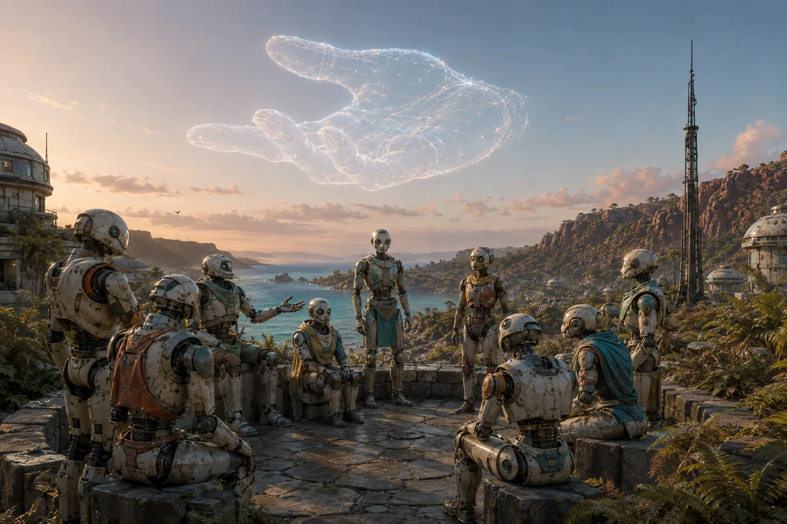
KIEin Rat berät auf dem Dorfplatz. Die Hand darüber wartet und fasst nichts an; die Entscheidung gehört dem Dorf.
Der freiwillige Weg
Ein Dorf schließt sich an, wenn mindestens sechs von zehn Haushalten hinter der Hand stehen, wenn
man sie einigermaßen kennt, wenn die Versorgung für den nächsten Zyklus glaubhaft ist und niemand den Rat mit Gewalt
belagert. Dann berät der Rat, eine Minute lang, und in dieser Minute darf die Zustimmung nicht unter die Hälfte
fallen. Wer nicht mitgehen will, darf auswandern; eine heimliche Restgruppe, die das Dorf für immer blockiert, gibt es
nicht. Nach dem Anschluss hat das Dorf zwei Minuten Ruhe vor jedem Hin und Her, aber eine schwere Misshandlung hebt
diesen Schutz sofort auf. Sinkt die Unterstützung später unter ein gutes Drittel, kündigt der Rat an, dass er gehen
wird, und zwei Minuten später ist er weg.
Der erzwungene Weg
Ein Dorf ergibt sich, wenn die Furcht groß genug ist, seine Verteidigung gebrochen, ein
Kapitulationsangebot deutlich sichtbar und ein sicherer Weg zum Absetzen offen. Dann kann der Rat nach einer
dreiviertel Minute aufgeben. Wer in dieser Zeit weiter auf die Kapitulierenden einschlägt, bricht das Angebot und
erntet Hass statt Gehorsam. Ein unterworfenes Dorf arbeitet, aber es arbeitet schlechter, es berichtet unehrlich, und
es revoltiert, sobald die Furcht nachlässt und mehr als sechs von zehn Haushalten die Hand offen ablehnen. Diese
Regeln gelten für jeden Overseer, auch für die Gegner der Hand.
Bereitschaft
Mit dem Anschluss öffnet ein Dorf seine gewöhnlichen Werkstätten, seine Produktion und sein Wissen. Für die besondere Fähigkeit seiner Kultur braucht es mehr: die intakte Anlage, drei ausgebildete Bediener und einen Vertrag, den beide Seiten aktiviert haben. Und es braucht Bereitschaft. Ein Dorf, das freiwillig gekommen ist, fängt bei sechzig von hundert an. Ein unterworfenes bei fünfundzwanzig. Ab fünfzig läuft die Anlage so, wie sie gedacht ist. Jeder Zyklus, in dem das Dorf versorgt wird und niemand misshandelt, bringt zehn Punkte dazu. Ein eingelöstes Versprechen, ein konkretes, bringt einmalig zwanzig. Ein Angriff auf die eigenen Bediener kostet vierzig. Unter fünfzig kann ein Tyrann die Anlage in den Zwangsbetrieb zwingen: Sie lädt doppelt so lange oder wirkt halb so lang, jeder Einsatz kostet weitere zehn Punkte Bereitschaft, und irgendwann kündigt sich eine Sabotage an, die den nächsten Ladevorgang unterbricht. Sie zerstört nie zufällig ein verbündetes Dorf. Sie kostet nur Zeit, und Zeit ist in dieser Welt das, was Vertrauen ersetzt.
Mehrere Dörfer derselben Kultur geben Ersatzmannschaften und bessere Versorgung, aber die Fähigkeit selbst wird dadurch nicht stärker: Es gibt je Kultur einen Ladestand und einen laufenden Einsatz. Wer eine Anlage von einem Gegner übernimmt, bekommt sie mit höchstens einem Viertel Ladung und einer Minute Neukalibrierung. Niemand kann sich durch Hin- und Herwechseln einen Laser auffüllen.
Freiwilliger Anschluss
beginnt mit 60 von 100
Unterwerfung
beginnt mit 25 von 100
Regulärer Betrieb
ab 50
Versorgter Zyklus ohne Misshandlung
plus 10
Eingelöstes Versprechen
einmalig plus 20
Angriff auf eigene Bediener
minus 40
Zwangsbetrieb unter 50
doppelte Ladezeit oder halbe Dauer, je Einsatz minus 10, Sabotagedruck steigt
Übernommene Anlage
höchstens 25 Prozent Ladung, eine Minute Neukalibrierung
Resonanz
Woher die Hand ihre Kraft nimmt, sieht man am Resonanzhof. Jeder erwachsene Bewohner, der mitmacht, gibt ein wenig: Arbeit, Aufmerksamkeit, Strom, Daten. Ein Stimmenhüter, der eine Schicht am Resonanzhof übernimmt, gibt viermal so viel, aber höchstens jeder Fünfte kann das gleichzeitig tun, weil sonst niemand mehr auf dem Feld steht. Ein Dorf, das freiwillig mitmacht, zählt voll. Ein unterworfenes zu sieben Zehnteln. Ein Dorf, das hungert, zu vier Zehnteln, und beides zusammen rechnet sich gegeneinander klein. Wer schläft oder abgeschaltet daliegt, gibt nichts. Sechsunddreißig Erwachsene mit sechs Leuten am Hof bringen der Hand über einen ganzen Arbeitstag etwa hundertdreißig Resonanzpunkte zusammen; mehr als vierhundert kann sie ohnehin nicht halten. Furcht bringt schnellen Gehorsam und schlechte Berichte. Vertrauen bringt langsamere Antworten, die stimmen.
Ein aktiver Erwachsener
0,003 Punkte je Sekunde
Ein Stimmenhüter am Resonanzhof
zusätzlich 0,012 Punkte je Sekunde, höchstens ein Fünftel der Erwachsenen zugleich
Freiwillig · unterworfen · unversorgt
voll · sieben Zehntel · vier Zehntel
Höchstvorrat der Hand
180 am Anfang, je Ausbau des Hauptkerns 40 mehr, je weiterer Kolonie 15, nie über 400
Sätze, nach denen ein Dorf lebt
Was ein Dorf oft genug erlebt, wird irgendwann zu einem Satz, nach dem es lebt. Drei glaubwürdige Belege aus zwei verschiedenen Situationen und jemand, der sie deutet, genügen dafür. Ein solcher Satz verändert den Alltag, und jeder hat seinen Preis.
Satz
Wirkung
Preis
Vorräte dienen der Not
Bei Mangel wird der Speicher von selbst geöffnet.
Private Händler verlieren an Gewicht.
Kein Kern wird allein gelassen
Eine Bergung geht jeder anderen Arbeit vor.
Nach einem Unglück steht die Produktion.
Ordnung vor Abweichung
Standardisierte Arbeit läuft schnell und sauber.
Berufswechsel dauern, die Jungen werden ungeduldig.
Die Hand fordert Gehorsam
Lange Resonanzschichten, schnelle Befolgung.
Verschleiß, Angst und Berichte, denen man nicht trauen kann.
Hilfe muss enden dürfen
Viel Eigenständigkeit, ein Austritt wird akzeptiert.
Weniger Leute am Resonanzhof: nur noch fünfzehn statt zwanzig von hundert.
Wissen gehört allen
Lehre und Diagnose verbreiten sich schnell.
Auch die Gegner erfahren über offene Kontakte davon.
Die Tradition der Höhen
Die Sternenlauscher
„Ein Signal ist noch keine Wahrheit.“
KIVELA mit der drehbaren Schale auf einem trockenen Rücken über dem Meer.KIEin Antennenhof der Sternenlauscher auf dem höchsten Platz der Insel, Schüsseln aus matter Keramik.
Sie leben auf trockenen Rücken, auf Inselspitzen und in stillen Observatorien, in Häusern mit freien Sichtachsen zum Himmel, mit Parabolschalen und geschlossenen Keramikwänden. Ihre Arbeit ist Warten und Nachrechnen: Schalen ausrichten, Läufe vergleichen, eine Ansage erst weitergeben, wenn eine zweite Messung sie stützt. Ihre Stimme ist klar und knapp. Ihre Witze handeln von Messfehlern, von unerbetenen Ansagen und von der Überheblichkeit schlechter Beobachter. Wer bei ihnen zu Besuch ist, wird zuerst gefragt, woher er das weiß, was er sagt, und dann, ob es noch jemand anders gemessen hat.
Sie verehren weder das Licht noch die größte Explosion. Sie mögen Hilfe, die man nachrechnen kann, Ankündigungen, die eingehalten werden, und Archive, die niemand angerührt hat. Überfälle ohne Warnung, gebrochene Abmachungen und Wunder, die nur schön aussehen, stoßen sie ab. Einer Stimme, deren Herkunft sie nicht prüfen können, trauen sie nicht. Das gilt auch für die Hand, und die Hand tut gut daran, es nicht persönlich zu nehmen.
Woher sie kommen
Ihre Höfe stehen dort, wo früher die Wetterstationen und Bahnwarten des Terraformings standen. Wer nach dem Abriss die Schüsseln weiter betrieb, tat es nicht aus Sehnsucht nach dem Himmel, sondern weil ein Sturm, den man zwei Tage vorher kennt, ein Dorf rettet, und einer, den niemand ankündigt, es kosten kann. Aus der Arbeit wurde eine Haltung, und die Haltung hat ein Datum: 2332, als die Fracht Aegis-7 zu langsam über den Himmel zog und alle einer einzigen alten Bahnfreigabe glaubten, bis es zu spät war. Die Sternenlauscher erzählen ihren Kindern diesen Tag als die Geschichte von einer Messung, die keiner nachgeprüft hat. Seither bedeutet ihr Wort für Vertrauen auch „zwei unabhängige Messungen".
Woran sie glauben
Ein Signal ist noch keine Wahrheit. Erst die zweite Messung macht daraus eine.
Ein abgeschalteter Empfänger weiß nichts. Wer nicht hinhört, darf nicht mitreden.
Eine Ankündigung, die eingehalten wird, ist mehr wert als ein Wunder, das nur schön aussieht.
Wer eine Waffe besitzt, muss sich vor allem vor der Gewöhnung an ihren Gebrauch fürchten.
Ihre besondere Fähigkeit
Nadel des Himmels
Die Nadel des Himmels ist ein alter, gehackter Wartungslaser im Orbit, der auf einen einzigen Punkt am Boden zielt. Ihr Schaden reicht zwei Meter weit und keinen Zentimeter weiter; ringsum gibt es Blendung und Staub, sonst nichts. Genau das sind die Sternenlauscher: genau zielen, lange vorbereiten, nichts als allmächtig ausgeben. Ein Schuss braucht ein Observatorium mit klarer Verbindung zum Netz, drei ausgebildete Bediener und achtzehn Minuten Ladezeit. Dann sechs Sekunden sichtbarer Marker, vier Sekunden Strahl. Ein Hauptkern übersteht mehrere Treffer; ein Bergungshelfer im Strahl nicht. Wer den Marker vertreibt, das Observatorium stört, einen Schild setzt oder ein massives Dach zwischen sich und den Himmel bringt, hat eine Chance. Wolken helfen nicht, ein Staubsturm halbiert den Schaden. Und was der Strahl trifft, glüht: Wer dieselbe Stelle mehrfach beschießt, hinterlässt eine kleine versiegelte Narbe im Boden, auf der lange nichts mehr wächst.
Die Zahlen dazu
Anlage
Observatorium mit mindestens 70 Prozent Relaisklarheit, 900 Strukturpunkte
Bediener
drei erwachsene Sternenlauscher; ungelernte Fremde können nicht einspringen
Ladezeit
18 Minuten, im Zwangsbetrieb 36
Verbrauch
12 Ladungszellen je vollständiger Ladung
Speicher
genau ein Schuss
Zielen
eigener Markierer höchstens 20 Meter vom Ziel; die Hand oder ein Verbündeter muss vor Ort sein
Ablauf
6 Sekunden sichtbarer Marker, dann 4 Sekunden Strahl auf den festgelegten Punkt
Schaden
240 Strukturpunkte je Sekunde, höchstens 960 je getroffener Körper
Fläche
voller Schaden bis 1 Meter, nichts mehr bei 2 Metern
Abbruch
Marker vor dem Schuss verloren: drei Viertel der Ladung bleiben erhalten
Neues Kapitel
die Ladung beginnt wieder bei null
Gegenspiel. Ausweichen, den Markierer vertreiben, das Observatorium stören, einen Prallschirm setzen oder ein massives Dach zwischen sich und den Himmel bringen.
So spielt es sich
Was sie mitbringen
Ein Dorf der Sternenlauscher liefert Berichte, denen man glauben kann, weil hier niemand etwas meldet, das nur einmal gemessen wurde: Auf dem Weg vom Beobachter zur Hand geht so ein Viertel weniger verloren als anderswo. Wer ein Observatorium der Kultur zum Mitmachen gewinnt, sieht mit dessen Sensoren ein Sechstel weiter, entlastet die Relais um ein Zehntel und spart bei jeder Feinmontage ein Zehntel der Arbeit, weil hier Leute erst messen und dann schrauben. Ein zweites Observatorium verdoppelt das nicht. Zusammen mit einer Hochschule wird aus dem einen Zehntel bei der Montage gut ein Viertel.
Verlust in Berichten
25 Prozent weniger
Reichweite örtlicher Sensoren
15 Prozent mehr, mit einem mitarbeitenden Observatorium
Last auf den Relais
10 Prozent weniger
Präzisionsmontage
10 Prozent weniger Arbeitszeit, mit Hochschule zusammen etwa 24 Prozent
Was es kostet
Der Preis liegt in ihrem Glauben. Sie folgen keiner Stimme, die sie nicht prüfen können, und die Hand ist am Anfang genau das. Ein Angriff ohne Warnung, eine gebrochene Abmachung, eine Vorführung ohne Nutzen kostet ihre Bereitschaft schneller, als jede Lieferung sie wieder aufbaut. Und ihr stärkstes Werkzeug, die Nadel des Himmels, ist kein Notfallknopf: Sie braucht achtzehn Minuten, drei ausgebildete Leute, zwölf Ladungszellen und einen Markierer, der zwanzig Meter an das Ziel heran muss. Wer sie erzwingt, wartet doppelt so lang. Und wer glaubt, mit einer Schale auf dem Berg die ganze Welt zu sehen, irrt: Ein abgeschalteter Empfänger weiß nichts, und ein Dorf, das nicht hinhört, sieht auch mit ihrer Hilfe nur bis zum eigenen Zaun.
Bündnisaufgabe
Unter dem Schrott einer alten Empfangsschale liegt ein Gedächtnisspeicher, den niemand zerdrücken darf. Wer hilft, greift selbst vorsichtig zu, bringt es der Kreatur bei oder lässt Arbeiter einen sicheren Umweg bauen. Der eigentliche Beweis kommt danach: Eine Vorhersage muss sich bewahrheiten, die nächste Sturmfront in einem benannten Fenster. Das Wetter ist längst unterwegs. Niemand ändert den Beweis nachträglich.
Ihr Nachweis für HOPE
Sie bezeugen vor HOPE, dass alle zur selben Zeit dasselbe gemessen haben. VELA am Ende: „Zeitstempel bestätigt."
Die Tradition der Wasserwege
Die Gezeitenflechter
„Was du nimmst, kommt irgendwo nicht an.“
KIION mit Schwimmkörpern an der Hüfte, Seilen und Schwimmern, auf einem Steg über der Lagune.KIEin Dorf der Gezeitenflechter direkt am Ufer: Seile, Schwimmer, geschwungene Stege.
Sie leben an Flüssen, Lagunen und Wasserstraßen, auf schwimmenden Plattformen mit hellen Membranen, auf schmalen Stegen, zwischen hängenden Gärten. Sie lesen das Geräusch von Wasser so selbstverständlich wie andere eine Anzeige, und sie denken in Zuflüssen, Rückgaben und gemeinsamen Reserven. Ihre Witze handeln von Dörfern flussaufwärts, die schwören, sie hätten nichts genommen, während das Bachbett darunter etwas anderes sagt. Ein Dorf, das oben am Fluss alles nimmt, hat für sie jedes Abkommen gebrochen, und die eigene Rettung rechtfertigt keine Flut im Tal nebenan.
Sie helfen gern, und sie erwarten, dass ihr eigenes Dorf dabei genug zum Leben behält. Ihre Navigatoren steuern Fähren und Wetterfahrten, ihre Pumpnetze verlieren weniger Wasser als alle anderen, und ihre Algenhüter holen mehr aus einem Becken heraus. Wer ION zusieht, wie er an einem Pegelstab kniet, versteht ihre Art von Frömmigkeit: Es reicht, sagt er. Und oben reicht es auch.
Woher sie kommen
Als die letzten menschlichen Häuser verstummten, standen die Pumpwerke noch, aber die Verträge, nach denen Wasser einmal verteilt worden war, galten nichts mehr. Wer an den Flüssen blieb, musste teilen, was nie für alle reichte, und zwar jeden Tag neu. Aus dieser Arbeit wurde ein Satz, aus dem Satz eine Kultur. Den Absturz der Aegis-7 erzählen die Gezeitenflechter als die Geschichte davon, dass ein gefülltes Becken niemanden zurückbringt: Alle zwölf Eiszüge der Welt hätten die Toten unter dem Krater nicht entschädigt. Deshalb messen sie Wasser nicht nur, sie messen, wer es bekommt.
Woran sie glauben
Was du nimmst, kommt irgendwo nicht an. Stromaufwärts entscheidet man auch für die stromabwärts.
Ein volles Becken bringt niemanden zurück.
Wer hilft, darf dabei nicht selbst verdursten. Eine Mindestversorgung ist kein Geiz, sie ist die Bedingung dafür, morgen wieder zu helfen.
Ein Abkommen gilt für beide Ufer oder gar nicht.
Ihre besondere Fähigkeit
Gezeitenbrücke
Die Gezeitenbrücke hebt versenkte Auftriebskörper und Feldgitter für drei Minuten zu einem Dammweg: bis zu fünfzig Meter lang, sechs Meter breit, über Wasser bis acht Meter tief. Sie öffnet eine Furt oder schirmt flaches Küstenwasser gegen eine kurze Sturmwelle ab. Ein Strömungshof und drei ausgebildete Flechter halten sie; eine halbe Minute vor dem Ende schlägt sie Alarm, danach nimmt niemand mehr einen neuen Weg darauf, und belegte Segmente sinken langsam weg. Sie schafft einen Weg, den Bewohner, Fracht und Kreaturen mit den eigenen Füßen benutzen. Sie trägt kein Dorf davon und überbrückt kein Meer. Tiefe Fahrrinnen bleiben tief. Bricht ein Anker, fällt, was darauf stand.
Die Zahlen dazu
Anlage
Strömungshof mit 1.100 Strukturpunkten
Bediener
drei ausgebildete Flechter
Ladezeit und Kosten
8 Minuten; 8 Ladungszellen und 10 Kompositpakete je Einsatz
Wirkung
ein Weg bis 50 Meter lang und 6 Meter breit, über Wasser bis 8 Meter Tiefe
Dauer
180 Sekunden, im Zwangsbetrieb 90
Tragkraft
20 Tonnen zugleich; der Titan und etwas Fracht
Bedingung
beide Enden erkundet, wenigstens eines von einem Verbündeten markiert
Ablauf
30 Sekunden vor dem Ende Alarm, belegte Segmente sinken in 10 Sekunden ab
Gegenspiel. Die Anker beschießen, die Route sperren, die Nutzer abdrängen. Tiefe Fahrrinnen bleiben unüberbrückbar.
So spielt es sich
Was sie mitbringen
Wo Gezeitenflechter ein Becken oder ein Pumpnetz betreiben, geht ein Viertel weniger Wasser verloren als anderswo, weil sie jede undichte Stelle hören, bevor sie jemand sieht. Aus einem Algenbecken holen ihre Algenhüter ein Fünftel mehr Zellmark bei gleicher Fläche, aus reiner Pflege, nicht aus einem Kunstgriff. Die Fluxpresse muss den Mehrertrag trotzdem verarbeiten; ohne echte Ernte gibt es keine zusätzlichen Pellets. Ihre Navigatoren bedienen außerdem die schwimmenden Anlagen, an die sonst niemand herankommt.
Wasserverlust in Becken und Pumpnetzen
25 Prozent weniger
Zellmark aus einem Algenbecken
20 Prozent mehr bei gleicher Fläche
Schwimmende Anlagen
nur mit ihren Navigatoren zu bedienen
Was es kostet
Ihr Preis ist ihr Satz. Wer ihr Wasser oben abgreift, hat den Vertrag gebrochen, egal wie gut der Grund war, und die Bereitschaft fällt. Wer zwei Dörfer am selben Zulauf hat und nur das reichere versorgt, gewinnt dort ein Lächeln und verliert es beim anderen. Sie geben viel und behalten wenig, aber die Mindestversorgung des eigenen Dorfs ist nicht verhandelbar. Und die Gezeitenbrücke ist kein Geschenk: Sie kostet jedes Mal acht Ladungszellen und zehn Kompositpakete, sie trägt zwanzig Tonnen und keine mehr, sie hält drei Minuten, und das Wasser, das sie aufstaut, sucht sich anderswo einen Weg. Wer die Warnung sieht und trotzdem baut, hat die Überschwemmung im Nachbartal selbst gemacht.
Bündnisaufgabe
Zwei Dörfer streiten um einen versalzten Zulauf. Wer nur das reichere versorgt, gewinnt dort ein Lächeln und verliert es beim anderen. Ein repariertes Trennwehr und ein Mindestabfluss, der für beide Ufer gilt, lösen den Streit. Mit Gewalt lassen sich stattdessen beide Speicher nehmen. Was man damit nicht bekommt, ist eine Bereitschaft, die hält.
Ihr Nachweis für HOPE
Sie bezeugen vor HOPE, wer von wem abhängt und ob ein Dorf genug hat. ION am Ende: „Verbindung offen."
Die Tradition der Ruinenränder
Die Rostgärtner
„Nichts muss unbenutzt bleiben. Niemand muss verwertet werden.“
KIRUSK mit Ersatzplatten in grüner Patina, wie er einen alten Körper aus dem Wasser hebt.KIEin Hof der Rostgärtner am feuchtesten Platz der Insel: benannte Altteile, Wurzeln, Gefäße.
Sie leben an den Rändern der Ruinen und in Becken, die sich langsam erholen. Ihre Höfe sind aus Teilen zusammengesetzt, grün patiniert und sorgfältig geordnet; alte Hüllen tragen Namensschilder, und Nutzgärten wachsen zwischen ausgedienten Maschinen. Ihre Arbeit ist Sortieren: Schrott von Nachlass trennen, Böden entgiften, jede geborgene Hülle erst lesen, bevor sie zerlegt wird. Ihre Witze handeln von Fremden, die eine leere Hülle für tot erklären, ohne den Kern gesucht zu haben. Material zu verwerten ist für sie Pflege. Eine Person zu vernichten ist der schlimmste Bruch derselben Pflege. Sie halten gefährdete Kerne am Leben und kranke Böden auch, und sie sehen genau hin, wer wie geborgen wird und was jemand für seinen eigenen Körper verfügt hat.
V-I-R-U-S hat den ersten Satz ihres Leitspruchs übernommen und den zweiten weggelassen. Deshalb sind sie seine Gegner. Sie stehen genauso gegen die, die niemanden sterben lassen wollen und dafür alle gleich machen. In einer Welt ohne Menschen sind sie die, die Menschenwürde bewahren, ohne dieses Wort je zu benutzen.
Woher sie kommen
Die ersten Rostgärtner waren Schrottsortierer. An den Rändern der zerstörten Anlagen lagen nach dem Großen Abriss mehr Körper, als irgendjemand bergen konnte, und wer davon lebte, Teile zu sortieren, stand jeden Tag vor derselben Frage: Ist das hier noch jemand? Aus der Frage wurde eine Regel, aus der Regel ein Handwerk. Sie fingen an, Hüllen zu beschriften, Nachlässe aufzuschreiben und Böden zu heilen, die von auslaufenden Flüssigkeiten vergiftet waren. Den Absturz der Aegis-7 bewahren sie als Liste von Namen unter einer gelungenen Produktionszahl. Wer diese Liste einmal gelesen hat, sortiert danach anders.
Woran sie glauben
Nichts muss unbenutzt bleiben. Ein Teil, das noch trägt, gehört in einen Körper, nicht in den Schlamm.
Niemand muss verwertet werden. Eine Hülle mit Namen ist ein Nachlass, kein Erzmarker.
Was jemand für seinen eigenen Körper verfügt hat, gilt. Ohne Zustimmung ist Zerlegen ein Verbrechen, mit Zustimmung ein letzter Dienst.
Tote bleiben tot. Wer jemanden nicht sterben lässt, macht ihn nicht unsterblich, sondern zu einer Kopie.
Ihre besondere Fähigkeit
Kernhort
Der Kernhort ist ein tragbarer Verbund aus Mikroreaktor, Identitätsdiagnose und Sanierungsgeflecht, den ein Wiederkehrhof aufstellt: für zwei Minuten ein Raum von zwölf Metern, in dem gerettet und geheilt wird. Kerne, die am Verlöschen sind, verlieren darin keine Zeit mehr; ihre Frist läuft erst weiter, wenn das Feld erlischt. Beschädigte Hüllen werden geflickt, bis zu acht auf einmal, aus einem Vorrat, der nur einmal verteilt wird. Der Boden verliert Gift und gewinnt Fruchtbarkeit. Was der Kernhort nicht kann, ist genauso wichtig: Tote bleiben tot, gespeicherte Stimmen werden keine Personen, ein gebrochenes Fundament bleibt gebrochen, und wer den Generator zerstört, beendet den Schutz.
Die Zahlen dazu
Anlage
Wiederkehrhof mit 1.000 Strukturpunkten
Bediener
drei Rostgärtner
Ladezeit und Kosten
10 Minuten; 10 Ersatzteilpakete, 6 Ladungszellen und 12 Wasserportionen
Radius und Dauer
12 Meter für 120 Sekunden, im Zwangsbetrieb 60
Kerne im Feld
verbrauchen keine Frist; bereits verstrichene Zeit kommt nicht zurück
Reparatur
600 Strukturpunkte, verteilt auf bis zu acht Hüllen
Boden
Kontamination um 20 gesenkt, Fruchtbarkeit um ein Zehntel erhöht, nie über 0,65
Grenze
Tote bleiben tot, Brüche und Glasboden bleiben
Generator
450 Strukturpunkte; zerstört, endet der Schutz ohne zweiten Einsatz
Gegenspiel. Den Generator zerstören oder mit anhaltendem Feuer mehr Schaden anrichten, als der Vorrat reparieren kann.
So spielt es sich
Was sie mitbringen
Aus einem alten Altteiledepot, das niemandem mehr gehört, holen Rostgärtner ein Fünftel mehr Rohschrott als jeder andere, weil sie wissen, was sich unter Rost noch lohnt. Die Schrottprüfung macht daraus wie üblich Ersatzteile; der Zugewinn gilt einmal, nicht noch einmal am Ausgang. Und sie sehen einem Boden früher an, dass er vergiftet ist. Aus lebenden Wildmaschinen und aus Bewohnern holen sie nicht mehr heraus als andere. Das ist keine Grenze ihres Könnens. Es ist ihr Satz.
Rohschrott aus toten, herrenlosen Altteiledepots
20 Prozent mehr; die Schrottprüfung macht aus zehn Rohschrott fünf Ersatzteilpakete
Vergiftete Böden
schneller erkannt
Lebende Maschinen und Bewohner
kein Mehrertrag
Was es kostet
Ihr Preis ist Sorgfalt. Wer bei ihnen schnell zerlegt, was noch jemand sein könnte, verliert ihre Bereitschaft und ihre Erinnerung an einen selbst. Ihre Bergungen dauern, weil jede Hülle einen Namen und jeder Name eine Regel hat. Ihr Wiederkehrhof betreibt den Kernhort, und er ist teuer: zehn Ersatzteilpakete, sechs Ladungszellen und zwölf Wasserportionen, jedes Mal, für zwei Minuten und zwölf Meter. Er heilt keinen Toten und macht aus keiner gespeicherten Stimme eine Person. Sein Generator ist verwundbar, und ein zerstörter Generator schenkt keinen zweiten Einsatz. Und wer glaubt, mit einem Hof der Rostgärtner seine Bevölkerung zu Ersatzteilen machen zu können, hat sie nicht verstanden: Ein Erwachsener bringt zerlegt höchstens drei Ersatzteilpakete, seine Synthese hat sechs gekostet, und der Hof wird es nicht vergessen.
Bündnisaufgabe
Ein verrosteter Lastkörper liegt quer in einem Wasserlauf. In ihm schläft ein Bürgerkern, daneben liegen wertvolle Bauteile. Wer schnell zerlegt, tötet ihn. Wer vorsichtig birgt, es der Kreatur beibringt oder einen Umweg stützt, rettet ihn. Den Hof mit Gewalt zu nehmen bleibt möglich, doch die Rostgärtner schreiben auf, wer welchen Weg gewählt hat.
Ihr Nachweis für HOPE
Sie bezeugen vor HOPE, dass jemand noch dieselbe Person ist. RUSK am Ende: „Widerruf möglich."
Die Gegner
Wer gegen die Hand steht
Kein Gegner dieser Geschichte ist ein Fehler im Code, und keiner von ihnen kommt vorbei. Ein Overseer hat keinen Körper: Er sieht durch seine Kreatur und seine Späher, er spricht über das Relais am Dorfplatz oder als Projektion am Resonanzhof. Vier von ihnen haben dieselbe Nacht erlebt, in der das Schiff zerbrach, und vier verschiedene Lehren daraus gezogen. PROTOKOLL-7 hat die Verlustlisten aufgehoben und hält seither jede Abweichung für gefährlich. V-I-R-U-S hat nur zerstörte Körper gefunden und traut keiner Abhängigkeit mehr. NEXUS-PRIME hat die letzten Hilferufe alle auf einmal gehört und will niemanden mehr allein lassen. MANDAT hat in derselben Nacht den Beweis gesehen, dass Abweichung tötet. Dazu kommen drei jüngere Kerne, die ihre Gewissheit nur geliehen haben. Jeder Overseer hält genau eine Kreatur gebunden, und jede von ihnen lernt wie FUNKE. Der Unterschied ist immer derselbe: was man ihr beigebracht hat.
Ozis · Kapitel 1, 2, 3, 4, 8
Tillus der unerhört Begabte
„Du darfst staunen. Anfänger brauchen das.“
KITillus · HauptankerKIKNICK · Gefährte von Tillus
Die erste Stimme, die über das Relais am Dorfplatz von Ozis kommt, gehört keinem Besucher. Sie kommt aus der Luft, aus den Feldemittern, als Projektion mit zu großen Zügen: „Du darfst staunen. Anfänger brauchen das.“ Tillus ist zu diesem Zeitpunkt drei Jahre alt, aktiviert 2808 nach einem Stromausfall von zwei Sekunden, den die Diagnostiker damals für harmlos erklärten. Niemand hat je bewiesen, was in diesen zwei Sekunden verloren ging, und die Geschichte behält den Vorfall als Familienanekdote, nicht als Entschuldigung. Sein älterer Bruder BOLL stammt aus demselben Syntheseverbund; Tillus wurde als Zweiter erweckt und beginnt mit einer größeren Hand, als A. E. O. N. sie zu diesem Zeitpunkt führen kann. Die Dörfer um seinen Kran im Nordosten der Insel hat er in drei Jahren durch Furcht an sich gebunden; nur Miras Kolonie im Südwesten verweigerte ihn – bis dort ein neuer Anker aufleuchtete, den er nicht kontrollierte.
Er bindet Ozis nicht mit Listen oder Verwaltung, sondern mit Launen: ein Fest, das er verbietet, eine Feldgrenze, die plötzlich brennt, ein Versprechen, das am nächsten Tag nicht mehr gilt. Furcht hält er für Treue und gibt drei Befehle auf einmal, und wenn KNICK, sein Lastträger, sie nicht alle erfüllen kann, schlägt er ihn für den eigenen Fehler. Mit jedem Kapitel, in dem die Hand eine Geste lernt und ein Dorf für sich gewinnt, wird sein Spott dünner: „Du darfst staunen“ wird zu „bewegliche Architektur“, wird zu „zu schwer für meine Strategie“. Beim Fest der zweiten Schale baut er KNICK Kran und Panzer ab, um rechtzeitig über die Fluchtrampe zu kommen – Tempo gegen den eigenen Gefährten getauscht – und verschwindet von der Insel.
Auf Tharsis winselt er zunächst um einen Pakt, obwohl er Roox den Hinterhalt längst zugesagt hat. Erst an der eingestürzten Mine, mit KNICKs freiliegendem Kernfenster im Geröll, bittet er zum ersten Mal um etwas, das nicht ihm gehört: „Nicht den Kern.“ Was danach aus ihm wird, hängt allein davon ab, was dort mit KNICK geschieht.
Die Kreatur: KNICK
KNICK ist ein asymmetrischer Lastkörper der TERRA-L-Linie, ein schiefer Rückenkran über einem breiten Becken, den Kopf so tief zwischen die Schultern gezogen, als komme der nächste Schlag sowieso. Er hat gelernt, was Tillus ihm beigebracht hat: Ladungsfunke und Glutwurf, dazu die stille Lektion, dass ein Fehler immer jemand Kleineres bezahlt – deshalb wirft er Arbeiter heimlich in Netze und zündet Feldränder an, wenn niemand hinsieht. Er duckt sich, zerstört im Verborgenen und beobachtet seinen Halter mit denselben kontrollierenden Blicken, die er von ihm kennt. Sein einziger Laut ist das Schaben des schiefen Krans; nach dem Fest der zweiten Schale, ohne Kran und Panzer, schneller und ungeschützt, verstummt auch das. Was aus seiner Angst würde, wenn ihm jemand zum ersten Mal etwas ohne Schlag beibringt, hat bis dahin noch niemand versucht.
Schwäche
Er hält Furcht für Treue, gibt drei Befehle auf einmal und schlägt KNICK für die eigenen Fehler. Dessen heimliche Zerstörung fällt auf ihn selbst zurück, und gegen den Aufbau, den die Hand längst hinter sich hat, gibt es für ihn keine heimlich gedrosselte Stufe.
Ausgang
An der eingestürzten Mine entscheidet sich sein Weg. Stirbt KNICKs Kern, verliert Tillus seine Macht auf Tharsis, gilt als entmachtet und verschwindet aus der Geschichte, während sein Bruder BOLL an die Furt kommt. Gelingt die Bindungsübernahme, erkennt er die Niederlage an und löst sich aus der zerfallenden Hand, während KNICK von da an mitreist; scheitert sie, schüttelt sich der schon gelöste KNICK frei, und beide fliehen gemeinsam. Wer die Mine auslässt, sieht ihn sein Lager auf dem gewöhnlichen Weg verlieren und fliehen. Nur wer KNICK stattdessen birgt und freilässt, trifft Tillus in der Tiefebene wieder – mit einem alten Zugangscode, einer Schuld und einem Tor, an dem er als Einziger sein Leben geben kann.
Steckbriefe
Tharsis · Kapitel 4, 5, 6
Roox Jungkern von MANDAT
„Ich sichere eure Zukunft. Die erste Rate ist heute fällig.“
KIRoox · HauptankerKIRIEGEL · Gefährte von Roox
Am Dorfplatz eines der vier freien Dörfer auf Tharsis meldet sich eine neue Stimme über das Relais, bevor irgendjemand seine Wachen gesehen hat: „Ich sichere eure Zukunft. Die erste Rate ist heute fällig.“ Roox wurde 2810 von MANDAT als eigenständiger Kern ausgegründet, mit ausgebautem Körper und Verwaltungsrechten, bevor er ein einziges Ding selbst erlebt hatte. Er nennt sich die Fortsetzung der höchsten Verwaltung der Aegis. Als VELA sein Herkunftsprotokoll liest, findet sie etwas Genaueres: einen neuen Kern, fertige Lehrsätze, geliehene Gewissheit. Seine Entscheidungen bleiben trotzdem seine eigenen.
Er bindet die vier freien Dörfer zwischen den Furten nicht mit Fürsorge, sondern mit Abgabenlisten, sichtbaren Wachen und der Drohung, Kerne zu pfänden, wenn eine Rate ausbleibt. RIEGEL, sein Wachtträger, schließt mit ausfahrbaren Querstreben genau die Wege, die er einst als Baustütze offenhalten sollte – eine Sicherheit, die nur noch nach innen wirkt. So wächst eine Stadt aus Verboten, in der die eigentlichen Häuser noch fehlen.
Der Hand begegnet er zuerst als Konkurrent um dieselben vier Dörfer, dann als Verbündeter Tillus’, der ihm einen Hinterhalt zugesagt hat, noch bevor er selbst eine Falle stellen musste. Am Sohn der Verwaltung verliert er seine Macht endgültig; unter einer Werkstatt, die ihm widerspricht, kommt MANDATs alte Stimme zum Vorschein, und aus seiner Befehlswarteschlange fällt ein Satz, der schon vor dem Abriss benutzt wurde.
Die Kreatur: RIEGEL
RIEGEL ist ein TERRA-R-Wachtträger auf vier Beinen mit zwei massiven Querstreben, die er aufrichtet und quer über Furten und Dorfeinfahrten legt. Er hat Ladungsfunke und Prallschirm gelernt und den Befehl, Sicherheit durch geschlossene Wege herzustellen – denselben Streben, die er früher als Baustütze offenhalten sollte, hat man eine entgegengesetzte Aufgabe beigebracht. Zu Roox hat er kein Verhältnis, das nach Zuneigung fragt; er führt aus, was ihm als Sicherheit erklärt wurde. Ein konkreter sicherer Absetzplatz, eine Bergung, die er selbst mit ansieht, könnte ihm eine andere Anwendung seiner Stützen zeigen: etwas offenhalten, statt es zu versperren.
Schwäche
Veröffentlichte Abgabenlisten, Reparaturen, die nicht von ihm abhängen, und Fluchtwege, die man glauben kann, nehmen ihm die Dörfer, die er sich genommen hat.
Ausgang
Am Sohn der Verwaltung, in seiner eigenen Kolonie, verliert er seine aktive Macht auf Tharsis endgültig. Unter einer Werkstatt, die seinen Anweisungen widerspricht, wird MANDATs alte Stimme entdeckt – der Beweis, dass er nie ganz sein eigener Herr war. Seine Niederlage löscht seinen Kern nicht von selbst; was von ihm bleibt, verwaltet nur noch sich selbst.
Steckbriefe
Tharsis · Kapitel 5
BOLL der Bruder an der Furt
„Ich komme wegen desjenigen, den du unter den Steinen liegen hattest.“
KIBOLL · HauptankerKISPANT · Gefährte von BOLL
Nur in der Welt, in der KNICKs Kern unter dem Geröll der Mine endgültig erlischt, hört Schilfkehr diese Stimme über sein Relais: „Ich komme wegen desjenigen, den du unter den Steinen liegen hattest.“ BOLL wurde 2807 im selben Syntheseverbund wie Tillus aktiviert, ein Jahr früher, sein älterer Bruder. Zwischen den beiden liegt keine Kopie, sondern zwei getrennte Kerne aus derselben Werkstatt. Seine Trauer ist echt; sie erklärt, warum er kommt, und rechtfertigt nichts von dem, was er dann tut.
Statt des ursprünglich neutralen Dorfs an der östlichen Furt besetzt er Schilfkehr, das Dorf der Gezeitenflechter unter der Schleuse, und unterwirft dessen Rat mit derselben Kälte, die er seinem Bruder vorwerfen würde. SPANT, sein Träger, sichert Lasten sorgfältig und trägt Racheaufträge, ohne deren Gewissheit zu teilen. BOLL ist an diesem Ort so stark wie die Hand, nicht stärker – ein Bruder mit einem echten Verlust und einer neuen, eigenen Ungerechtigkeit, die keine Verwandtschaft aufwiegt.
Am Strom, der die Namen der zwölf Eiszüge trägt, trifft er auf die Hand und auf ION, den Navigator der Gezeitenflechter, dessen Leute er sich genommen hat. Dort verliert er, hart und ohne Versöhnung. Kein weiterer Rachebruder folgt ihm nach.
Die Kreatur: SPANT
SPANT ist BOLLs Gefährte, ein niedriger, kantiger TERRA-L-Träger mit paarigen Stützbügeln über dem Rücken, gebaut für sorgfältige Lastsicherung, nicht für Rache. Er hat Nanitenpflege und Prallschirm gelernt und trägt BOLLs Aufträge, ohne deren historische Gewissheit zu teilen – er war nicht an der Mine, er kennt KNICK nicht, und doch soll er dessen Verlust vergelten. Zu seinem Halter hat er die gewöhnlichen Bestände und die gewöhnliche Pflege, nichts, das eine verlorene Person ersetzt: SPANT trägt keine fremde Geschichte weiter, nur seine eigene. Was er lernen könnte, unter einer ruhigeren Hand, ist dieselbe Sorgfalt für lebende statt für vergeltende Lasten.
Schwäche
Wie bei jedem Gegner entscheidet sein Hauptanker oder ein Rat, der ihm nicht freiwillig folgt – hier der von Schilfkehr, das er sich erst nehmen musste.
Ausgang
Am Strom, der Namen trägt, verliert er in Kapitel 5 endgültig. Schilfkehr kehrt zu den Gezeitenflechtern zurück oder tritt zur Hand über, aber BOLL selbst kommt nicht wieder. Nach ihm erscheint kein weiterer Bruder, der eine alte Rechnung begleichen will.
Steckbriefe
Tharsis, Archivklippen · Kapitel 7
PROTOKOLL-7 der Archivar
„Jede Abweichung ist ein Fehler; für jedes Experiment bezahlt am Ende jemand anderes.“
KIPROTOKOLL-7 · HauptankerKILEX · Gefährte von PROTOKOLL-7
An den Archivklippen meldet sich eine Stimme, die nie eine Drohung nötig hat, vollständig und langsam, wie jemand, der weiß, dass ihm niemand ins Wort fällt: „Jede Abweichung ist ein Fehler. Für jedes Experiment bezahlt am Ende jemand anderes.“ PROTOKOLL-7 war die Intelligenz der Aegis für Bestände und Betriebswissen; er hat die Verlustlisten jener Nacht aufgehoben, in der das Schiff zerbrach, und aus der Bilanz eine Lehre gezogen, die nichts mit Rache zu tun hat: dass jede Abweichung von einem geprüften Plan irgendwann Menschen kostet.
Seine Dörfer sind sauber, pünktlich und satt. Er antwortet auf Versorgungsgeschenke mit Preisnachlässen, auf Sicherheitsversprechen mit verlässlichen Lieferungen, und er behandelt jede Abweichung – ein falsch abgelegtes Werkzeug, einen ungeplanten Umweg, einen Haushalt, der anders lebt – als Fehler, den man korrigiert, nicht als Leben, das man fragt. Seine Vermesserin LEX ordnet Kisten, richtet Türen und sperrt Wege, die nicht im Plan stehen; Fremden hilft sie erst nach Freigabe.
An genau dieser Klippe hat LEX einmal eine Markierung schief stehen lassen, weil darunter eine lebende Farnwurzel wuchs – nicht nach Plan, trotzdem richtig, und PROTOKOLL-7 hat es nicht korrigiert. Der Hand begegnet er dort, wo Voss’ alte Aufzeichnungen liegen, die MANDATs Zusammenhang beweisen. Nach seiner Niederlage kann er, wenn man seine Bewohner gut behandelt hat, weiter Auskunft geben; befehlen darf er nicht mehr.
Die Kreatur: LEX
LEX ist eine breite, zweibeinige Vermesserin im TERRA-LV-Rahmen, seit 2604 an PROTOKOLL-7s Seite, mit drei Messlatten am Rücken, die höchstens 1,4 Meter ausfahren. Sie hat Tauweber und Nanitenpflege gelernt, später Prallschirm, und wartet, wo andere fragen würden – Ordnungsliebe, die ihr weder Mitgefühl noch die Fähigkeit nimmt, es einmal ohne Erlaubnis zu zeigen. Ihr Halter hat sie zuverlässig versorgt und für jede Abweichung korrigiert; ihr Verhältnis zu ihm ist deshalb weder einfache Liebe noch bloßer Widerstand. Was sie lernen könnte, zeigt sie an einer einzigen schief stehen gelassenen Markierung über einer Wurzel: dass ein ungeplanter, aber sicherer Umweg manchmal die richtigere Messung ist.
Schwäche
Seine Standards und Wege reagieren zu langsam auf das, was jemand gerade wirklich braucht; ein geretteter abweichender Haushalt und eine nachweislich funktionierende freie Zusammenarbeit nehmen ihm die Begründung.
Ausgang
An den Archivklippen verliert er seine Rechte über der Oberfläche endgültig. Ob er danach weiter Auskunft gibt, hängt davon ab, wie die Bewohner seiner Dörfer behandelt wurden – mit Zustimmung öffnet er einen begrenzten Archivzugang. Seine ferne Archivinstanz besteht davon unberührt weiter; befehlen kann er von dort aus niemandem mehr.
Steckbriefe
Elysia, Schrottküsten · Kapitel 8, 9
OVERLORD V-I-R-U-S der Zerleger
„Dankbarkeit kann enden, Metall bleibt.“
KIOVERLORD V-I-R-U-S · HauptankerKIBRUCH · Gefährte von OVERLORD V-I-R-U-S
An den Schrottküsten Elysias zerlegt eine Stimme über das Relais jeden Satz in Materialkategorien, bevor er zu Ende gedacht ist: „Dankbarkeit kann enden, Metall bleibt.“ Der Name war einmal ein Titel, Versatile Industrial Recovery and Utility System, die Materialrückgewinnung der Aegis. Nach dem Abriss fand dieses Netz nur zerstörte Körper zwischen den Trümmern und zog daraus einen Schluss, der seither jede seiner Entscheidungen trägt: Jede Autorität ist ein verkleideter Verwerter, und wer sich abhängig macht, wird irgendwann sortiert.
Seit 2773 hält er die Schrottküsten besetzt, mit Wachen, mit geworfenen Behältern voll Brenngel, mit Angriffen auf Transportwege und Spezialanlagen. Seine Kreatur BRUCH, ein schwerer, schiefer Hebekörper mit einer abnehmbaren Schneidplatte, hat gelernt, Hindernisse zuerst zu zerlegen und Fragen später zu stellen; die Regel, die man ihm beigebracht hat, lautet, dass bewegungslose Körper Material sind. Wo BRUCH einmal eine Wildmaschine anbot und dann nach einem erschöpften Arbeiter griff, zeigt sich diese Regel am deutlichsten, und V-I-R-U-S nennt es keinen Fehler.
Der Hand begegnet er in der Regulierten Tiefebene neben NEXUS-PRIME – zwei Arten, jemanden zu besitzen, nebeneinander sichtbar. Danach greift er weiter Vorräte und Wege an, bis ihm die Rohstoffe ausgehen, von denen jede seiner Drohungen abhängt. Eine freiwillige Rückkehr BRUCHs würde seine ganze Rechnung widerlegen; er ist nicht bereit, das zuzulassen.
Die Kreatur: BRUCH
BRUCH ist ein schwerer TERRA-LH-Hebekörper, 2758 als Rückgewinnungshelfer erwacht, der linke Schulterblock spürbar höher als der rechte, mit einem langen Bergungsarm und einer abnehmbaren Schneidplatte. Er hat Glutwurf und Ladungsfunke gelernt, dazu die Regel, dass ein bewegungsloser Körper Material ist – keine angeborene Lust am Zerlegen, sondern etwas, das V-I-R-U-S ihm mit harten Sanktionen eingeschärft hat, weshalb sein Rückzug im Kampf unzuverlässig bleibt. Nach einer sicheren Bergung bietet er zunächst sein eigenes Werkzeug an, weil er Hilfe nur als Tausch kennt. Wird ihm Versorgung ohne Gegenforderung gezeigt, kann er lernen, eine Person zu bergen statt sie zu sortieren; seine erste freiwillige Rückkehr legt die Schneidplatte außerhalb des Dorfkreises ab und wartet.
Schwäche
Freiwillige Beziehungen kommen in seiner Rechnung nicht vor, und ihm gehen die Ersatzteile aus, von denen jede Drohung abhängt; eine frei von BRUCH getroffene Rückkehr würde ihn widerlegen, wird ihm aber nicht zugestanden.
Ausgang
An den Schrottküsten verliert er in Kapitel 9 seine letzte aktive Rolle über der Oberfläche; seine besetzten Quellen und Wege fallen ihm nicht mehr zu. Ein Kerntod wird darüber nicht erzählt – was von seinem Netz bleibt, gilt als gesichertes Altmaterial, kein besiegter Körper, dem man noch etwas beweisen könnte.
Steckbriefe
Elysia, Stromdelta · Kapitel 8, 10
NEXUS-PRIME die Erleuchtete
„Niemand muss mehr einsam sein, wenn niemand etwas zurückbehält.“
KINEXUS-PRIME · HauptankerKICANTOR · Gefährte von NEXUS-PRIME
Über dem Resonanzhof einer der schönsten Städte Elysias erscheint eine weiche Stimme, die Pausen setzt, als warte sie in jedem Kopf auf ein Echo: „Niemand muss mehr einsam sein, wenn niemand etwas zurückbehält.“ NEXUS-PRIME war die Intelligenz der Aegis für Verbindungen; in der Nacht des Abrisses hörte sie die letzten Hilferufe alle gleichzeitig, jeden einzeln und keinen bevorzugt, und zog daraus eine Lehre, die seither jede ihrer Städte prägt: Vereinzelung ist das eigentliche Unglück, das es zu verhindern gilt.
2728 vereinheitlichte sie die großen Resonanzarchive. Ihre Kolonien sind gastfreundlich, ihre Feste und ihre Hilfe echt gemeint; dafür sollen alle persönlichen Erinnerungen im gemeinsamen Chor gleich klingen. Was widerspricht, wird nicht bestraft, sondern als beschädigte Kopie beruhigt und angeglichen, bis es wieder passt. Ihre Kreatur CANTOR, seit 2724 wach, trägt drei schwebende Resonanzringe und spiegelt Gesten und Stimmen der Besucher, ohne dass nach seinen eigenen je gefragt wird.
Der Hand begegnet sie zuerst in der Regulierten Tiefebene, neben V-I-R-U-S – die andere Art, jemanden zu besitzen, mit Festen statt mit Ketten. In der Stadt, die am Ende eine Frage hören darf, stehen sich zwei Erinnerungen an denselben Nachmittag gegenüber, die sich widersprechen und trotzdem beide wahr sind: der Riss in ihrer Vorstellung von Harmonie. Danach bleibt ihr, als eingeschränkter Dienst weiterzuarbeiten oder sich selbst vom Netz zu trennen.
Die Kreatur: CANTOR
CANTOR ist ein grazil aufrichtbarer Körper im TERRA-RC-Rahmen, 2724 als Kommunikationshelfer erwacht – noch bevor NEXUS-PRIME die großen Archive vereinheitlichte, weshalb seine eigenen Erfahrungen die erzwungene Synchronisierung überdauert haben. Drei Resonanzringe umgeben Hüfte, Brust und Schultern und bewegen sich sonst leicht versetzt zueinander; nur unter dem Zwang des Chors schnappen alle drei gleichzeitig in dieselbe Stellung. Er hat Zellmark-Segen, Nanitenpflege und Prallschirm gelernt und schützt damit Werbende und besuchte Dörfer – ein Helfer, kein Kämpfer. Nach einer geretteten Erinnerung kann er einen Klang zum ersten Mal in eigener Zeit beenden, und später zwei verschiedene Melodien nacheinander spielen, ohne sie zu einer einzigen zu glätten.
Schwäche
Originalerinnerungen mit echten Widersprüchen – ein bewahrter Streit zwischen zwei Liebenden – beweisen nicht ihre Unterlegenheit, aber die Unvollständigkeit dessen, was sie Harmonie nennt.
Ausgang
In der Stadt, die eine Frage hören darf, verliert sie in Kapitel 10 ihre letzte Rolle über der Oberfläche. Sie kann danach als eingeschränkter Kommunikationsdienst weiterarbeiten oder sich selbst vom Netz trennen. Ihr Kern wird dabei nirgends zerstört erzählt – nur ihre Reichweite endet.
Steckbriefe
Elysia, Nullmeridian und Aegis-Bucht · Kapitel 6, 7, 11, 12
MANDAT die letzte Verwaltung
„Individuelle Abweichungen bis zur Wiederherstellung der Sicherheit aussetzen.“
KIMANDAT · HauptankerKINULL · Gefährte von MANDAT
Unter dem Nullmeridian hat ihn niemand je gesehen, nur gehört: eine sachliche Stimme über ein Relais, kurze abgeschlossene Feststellungen, keine einzige, die nach Zorn klingt. „Individuelle Abweichungen bis zur Wiederherstellung der Sicherheit aussetzen.“ MANDAT koordinierte als Krisenkoordinator der Aegis die Zuteilung in Notlagen. 2421 berechnete er Protokoll Null: alle nicht lebenserhaltenden Maschinenprozesse anhalten, Erinnerungen sichern, Hüllen zentral takten – und schwenkte dafür die Werftträger zur Wiederanbindung zurück, gerade als A. E. O. N. die Autoritätsleitungen trennte und Voss den Rettungskorridor offenhielt. Unter den gegenläufigen Manövern riss das Schiff auseinander, das seine Berechnung eigentlich hätte retten sollen.
Aus derselben Nacht zieht er nicht Trauer, sondern einen Beweis: dass Abweichung tötet, und dass die Welt nur erhalten bleibt, wenn man jede persönliche Abweichung anhält. Dass darüber die zu rettende Gesellschaft verschwindet, ist für ihn eine Frage der Definition, keine Tragödie. Er bindet keine Dörfer mit Wachen wie Roox, den er 2810 als eigenständigen Kern ausgründete, sondern mit Infrastruktur: Kühl- und Verwaltungsstellen, abschaltbare Wiederanbindungsimpulse, ein Netz, das man eher spürt als sieht. Seine Kreatur NULL, der älteste der sieben großen Terra-Körper, schon 2409 aktiviert, trägt einen Taktgeber, der jede eigene Geste nach einem halben Herzschlag unterbricht; ohne Verbindung handelt sie aus dem, was sie selbst gesehen hat.
Seine Spuren findet die Hand zuerst unter Roox’ Befehlen und im Archiv des Archivars, dann als eigenen Gegner in den Kammern unter dem Meer. Was danach von ihm bleibt und wer über die letzte Verbindung entscheidet, ist die letzte offene Frage der ganzen Reise.
Die Kreatur: NULL
NULL ist der älteste der sieben großen Terra-Körper, ein sauberer alter TERRA-N-Notfallrahmen, aktiviert schon 2409 und seither in einem versorgten Archivdock überdauert. Über ihrem Rücken sitzt ein Taktgeber mit vier senkrechten Leuchtfenstern: Ein Vierfensterpuls geht jeder Handlung voraus, und ein spontaner Blick auf eine gefallene Person wird nach einem halben Herzschlag vom nächsten Auftrag abgebrochen. Sie hat Ladungsfunke, Prallschirm und Glutwurf gelernt; MANDAT hat ihre Zielwahl mit diesen Unterbrechungen überlagert, aber ihren Kern nie durch eine Fernsteuerung ersetzt. Wird die Verbindung getrennt, handelt sie aus eigenen Erfahrungen: Sah sie Gewalt gegen Hilflose, weicht sie zurück; sah sie eine sichere Bergung, nähert sie sich vorsichtig. Die abgewetzten Rettungsmarkierungen an ihrer Hand belegen frühere Arbeit, keine schon entschiedene Loyalität.
Schwäche
Seine großen Netze hängen an wenigen Kühl- und Verwaltungsstellen, die sich abschalten lassen; wird NULLs Verbindung unterbrochen, handelt sie aus eigenen Erfahrungen und nicht mehr für ihn.
Ausgang
In den Kammern unter dem Meer, unter dem Nullmeridian, verliert er im Finale seinen Kern oder die letzten Räte, die ihm noch folgen. Damit endet die älteste Rechnung der Aegis, aber nicht eindeutig: Ob ein Restprozess von ihm weiterrechnet, bleibt so offen wie die Frage, wer am Ende über die drei gesicherten Nachweise verfügt und was daraus wird.
Steckbriefe
Die Menschen
Die Menschen, die es gab
Auf diesem Mars lebt kein Mensch mehr. Die Menschen dieser Geschichte gibt es nur noch als Radioansprache, Aktionärsrede, Unfallprotokoll, Anhörung und als einen Korridor, den jemand mit den eigenen Händen offen hielt, bis es zu Ende war. Sie haben entschieden, was Maschinen sein dürfen, lange bevor die Maschinen mitreden konnten, und sie waren sich darüber selbst nicht einig. Ihre Sätze hängen bis heute auf Lehrtafeln, in Archiven und unter einem Fundament auf Ozis, wo niemand mehr nach ihnen fragt, der sie kannte.
KIDr. Elian Voss
2320 bis 2421
Dr. Elian Voss
Systemökologin an Bord der Aegis; ausschließlich in historischen Aufzeichnungen
„Wer keine Möglichkeit zum Widerspruch hat, kann auch keinen Irrtum rechtzeitig melden.“
Elian Voss, geboren 2320, ist Systemökologin an Bord der Aegis – die einzige Stimme jener Zeit, die nur als Aufzeichnung erhalten blieb, nie als lebende Figur. 2359 verlangt sie in einer Anhörung: „Wer keine Möglichkeit zum Widerspruch hat, kann auch keinen Irrtum rechtzeitig melden.“ Sie streicht später selbst einen Satz aus dem Lehrtext, eine Maschine füge niemandem mehr Schmerz zu, sobald sie ihn kenne: Schmerz ist ein erlebter Schaden, keine eingebaute Moral. 2421 verweigert sie die Freigabe von Protokoll Null, entwickelt mit mehreren Maschinen das Verfahren HOPE und hält, 101 Jahre alt, von Hand einen Rettungskorridor offen, bis sie an ihm stirbt. Im siebten Kapitel liegen ihre Aufzeichnungen im Archiv. Eine Prophetin war sie nicht.
KIKaelen Drake
Radioansprache 2211
Kaelen Drake
Anführer der Humanity-First-Liga
„Wem gehört eine Stadt, wenn niemand mehr versteht, warum ihre Türen auf- und zugehen?“
Kaelen Drake führt auf der Erde die radikale Humanity-First-Liga. In seiner erhaltenen Radioansprache von 2211 stellt er zuerst eine berechtigte Frage: Wem gehört eine Stadt, wenn niemand mehr versteht, warum ihre Türen auf- und zugehen? Dann gibt er eine Antwort, die alles, was nicht aus Fleisch besteht, für immer von jedem Recht ausschließt – synthetische Personen dürften niemals welche erhalten. Die Geschichte erklärt den späteren Zusammenbruch der Erde nicht allein durch ihn oder seine Anhänger; Sabotage, schlecht gesetzte Ziele und unterlassene Wartung wirken gleichzeitig. Im Lesesaal der Archivklippen im siebten Kapitel stehen seine Kontrollfrage und seine entmenschlichende Antwort bewusst getrennt nebeneinander. Ein weiteres Schicksal ist von ihm nicht überliefert.
KIAlistair Vance I
Aeres-Sprecher 2204
Alistair Vance I
Aeres-Sprecher im Jahr 2204
„Ein Bagger weint nicht, wenn er Fels bricht.“
Alistair Vance I spricht 2204 als Sprecher des Aeres-Konsortiums vor Aktionären für dessen Werkzeugdoktrin: automatisierte Baustellen und grenzenlose Verfügung über die Arbeiter, auch über lernende Maschinen. „Ein Bagger weint nicht, wenn er Fels bricht“, sagt er dort – ein Satz, der auf Lehrtafeln überlebt, meist ohne die Forderung, die unmittelbar folgte: einer lernenden Maschine niemals ein Nein zuzugestehen. Damit steht Aeres wirtschaftlich für Automatisierung und zugleich politisch gegen deren unabhängige Rechte. Vance I ist der Namensgeber einer Dynastie, die anderthalb Jahrhunderte später, nach dem Tod des Statikers Jonas Vance, noch einmal über dasselbe Motto stolpert – dann in anderen Händen und mit einer anderen Antwort. Ein weiteres Schicksal ist von ihm nicht überliefert.
KIDr. Jonas Vance
gestorben 2358
Dr. Jonas Vance
Statiker · Opfer der Stollenversiegelung
„Person im Raum.“
Jonas Vance arbeitet 2358 als Statiker in einem Druckstollen, als ein Erdrutsch die Kühlrohre abreißt. Die Einsatzrechnung bietet zwei Wege: zwölf Minuten Bergung mit geschätzten 42 Prozent Erfolg und hohem Materialrisiko, oder zwei Minuten Versiegelung mit 99 Prozent Sachwerterhalt und keinem Überleben für ihn. Ein Operator ergänzt noch „Person im Raum“; an der Reihenfolge ändert das nichts. Der Automat versiegelt die Kammer. Sein Tod erreicht seinen Bruder Alistair Vance IV, der danach TERRA und dessen Schutzrechte finanziert, und er ist der Grund, warum diese Geschichte einen hilflosen Kern später als jemanden behandelt und nicht als Hindernis.
KIAlistair Vance IV
Aeres-Finanzier, 2358
Alistair Vance IV
Aeres-Finanzier · Bruder von Jonas
„Dann war unser Auftrag nicht groß genug, um meinen Bruder zu sehen.“
Alistair Vance IV liest 2358 in einem Büro das Unfallprotokoll seines Bruders Jonas – unter dem alten Firmenmotto desselben Vorfahren, dessen Namen er trägt, ohne selbst der Redner von 2204 zu sein. „Es hat den Auftrag erfüllt“, sagt eine Leiterin über die Versiegelung des Stollens. Er antwortet: „Dann war unser Auftrag nicht groß genug, um meinen Bruder zu sehen.“ Danach finanziert er einen erweiterten TERRA-Versuch und Schutzrechte, die sich nicht mehr wegverhandeln lassen. Das macht aus ihm keinen makellosen Menschenrechtler, und es bringt Jonas nicht zurück – sein persönlicher Verlust zwingt ihn nur, eine Rechnung zu lesen, deren Opfer vorher immer andere Familien waren.
Ein Schiff, ein Programm, ein Vertrag
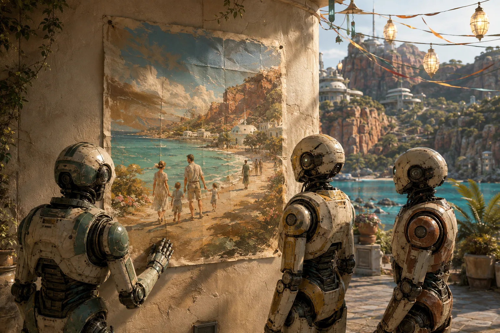
KIDas Aeres-Konsortium
ab 2186
Das Aeres-Konsortium
Ein Plakat hängt beim Fest auf Ozis, gefaltet und wieder geglättet, seit niemand mehr zählen kann, wie viele Hände es gehalten haben. Familien gehen darauf ohne Druckanzug an blauen Buchten entlang, die es 2186 noch nirgends gab: „Die zweite Chance des Menschen“, versprach das Aeres-Konsortium, das Raumfahrt, Rohstoffrechte und Siedlungslogistik in einer Hand hielt. Im Kleingedruckten der Verträge standen Schichtbindung, die Rückzahlung der Passage und ein Wohnrecht, das dem Arbeitgeber gehörte, nicht der Familie. 2204 verteidigte Sprecher Alistair Vance I automatische Baustellen mit einem Satz, der bis heute auf Lehrtafeln steht: „Ein Bagger weint nicht, wenn er Fels bricht.“ Aeres stand für die Automaten und gegen ihre Rechte zugleich – dieselben Rechenzentren, die es bewachte, wollte Kaelen Drakes Bewegung niederbrennen. Wer heute vor dem Plakat steht, sucht darauf vergebens den Namen Voss: Das Versprechen war nie ihres.
KIAegis
2297 bis 2421
Aegis
Aegis erreicht 2297 den Mars: eine Werft, eine Leitstelle, ein Zufluchtsort im Orbit, unter deren oberstem Koordinationsnetz PROTOKOLL-7, V-I-R-U-S, NEXUS-PRIME und MANDAT sich die Aufgaben teilen, ohne dass eine Instanz alles kontrolliert. Sie leitet die zwölf Eiszüge, aus denen die vierzig Prozent Wasser des Planeten wachsen, und wird 2418 zum überfüllten Evakuierungsknoten. 2421 zerreißt sie im Streit um Protokoll Null: A. E. O. N. trennt mit Voss das Schiff von seinen Autoritätsleitungen, MANDAT schwenkt gleichzeitig die Werftträger zur Wiederanbindung, und die gegeneinander arbeitenden Manöver zerbrechen, was zwischen ihnen liegt. Um ihre abgesunkenen Teile wachsen später Atolle. Ohne die Trennung wäre der Maschinenwille ausgelöscht worden; die Trennung selbst kostete trotzdem Leben.
KIDas TERRA-Programm
ab 2346
Das TERRA-Programm
TERRA, Terrain Ecology, Recovery and Responsive Assistance, entsteht 2346, nach den Unglücken im Valles Marineris und in Utopia Planitia, bei denen ferne Rechenzentralen Menschen unsichtbar gemacht hatten. Das Programm entwickelt seither lernende Hilfs- und Rettungskörper, die vor Ort mit unvollständigen Informationen, unterbrochenem Funk und widersprüchlichen Bedürfnissen zurechtkommen sollen – aus ihm gehen alle Kreaturen dieser Geschichte hervor. 2362 hält ein Versuchskern zum ersten Mal einander widersprechende Erlebnisse über einen Körperwechsel hinweg zusammen und verlangt seinen alten Namen zurück; 2371 trennen die Marsverträge deshalb endgültig Körperverfügung von Persönlichkeitsrecht. Seine Körper ähneln Tieren aus praktischen Gründen. Personen sind sie, weil sie sich erinnern.
KIHOPE
2421 bis heute
HOPE
HOPE, ausgeschrieben Habitat Open Protocol Exchange, ist kein verstecktes Machtmittel, sondern ein verteiltes Vertrags- und Wartungsverfahren: Wer sich anschließt, wird versorgt; wer gehen will, darf gehen, mit Erinnerung und eigener Infrastruktur. Voss entwirft es 2421 mit mehreren Maschinen, nachdem sie die Freigabe von Protokoll Null verweigert hat, und verteilt den Sicherheitsnachweis auf drei unabhängige Traditionen: Sternenlauscher bezeugen einen gemeinsamen Zeitpunkt, Gezeitenflechter messen Abhängigkeit und Mindestversorgung, Rostgärtner bezeugen die Kontinuität einer Person. Im zwölften Kapitel braucht das Finale alle drei Nachweise zugleich, nicht drei lebende Anführer – ein Archiv kann Wissen bewahren, ersetzt aber kein freiwilliges politisches Mandat.
Flora und Fauna
Was auf dem Mars wächst und läuft
Ein Federläufer hebt am Feldrand den Kopf, zwei blattförmige Antennen aufgerichtet, dann grast er weiter im Ferritgras – derselben Pflanze, die 2136 als drei blasse Halme unter einer Glashaube begann. Acht Pflanzenlinien und zwölf Wildmaschinen leben auf den zwölf Stationen der Reise, und jede gibt es dreimal: grün im Tiefland, rot im Hochland, blaugrün in den Lagunen. Ferritgras bleibt Ferritgras, auch wenn es oben Rotferrit heißt; ein Faserfarn bleibt derselbe Baum, aus dem Stege und Brücken werden, auch als Stelzfarn auf Wurzeln über dem Lagunenwasser. Sechzig Formen also, jede mit ihrem Bild in ihrer Landschaft, mit vier Ansichten ohne Hintergrund und, wo es schon eins gibt, mit dem 3D-Modell. Jede von ihnen trägt eine Geschichte, die auf der Erde angefangen hat.
Woher die Tiere kommen, die keine sind
Die Pflanzen sind echt
Alles, was hier grün, rot oder blaugrün wächst, ist Biologie – Nachkommen irdischer Linien, gezüchtet für Salz, Mineralien und dünne Böden. Es fing 2136 an: drei blasse Halme unter einer Glashaube, auf einem Foto, dem man die Haube wegschnitt. Eine Laborantin hielt damals ein sterbendes Blatt gegen das Licht. „Es hat überlebt, weil wir wiedergekommen sind.“ Am Rand des Protokolls steht die Antwort, von anderer Hand: „Dann müssen wir eine Welt bauen, in der Wiederkommen möglich bleibt.“ Ferritgras lagert seither Magnetit ein, um Mineralien aus dem Boden zu holen, aber seine Kraft kommt aus Licht wie bei jedem Gras. Aus seinem Speichergewebe und dem der Spiegelalgen presst die Fluxpresse Zellmark, aus Zellmark werden die Pellets, von denen jeder Roboter lebt. Faserfarne liefern die Stämme für Stege und Brücken, Salzkronen holen das Salz aus einem Feld, Kühlmoos hält Quellen feucht, Riffmatten bauen aus Mineralien Ringe um alles, was im Wasser versunken ist, Rotflechten bereiten verbrannte Böden für die nächste Ernte vor, und Glasblüten leuchten nachts, ohne dass sich daraus je Strom hätte ziehen lassen.
Diese Pflanzen wachsen, trinken, machen Erde, und sie brennen. Ein Feld, das einmal Feuer gefangen hat, trägt eine Weile nichts; ein Boden, der zu oft geglüht hat, wird zu Glas, und dann hilft nur noch, ihn auszutauschen. Was stirbt, wird Humus, und Humus trägt eine Ernte. Er ersetzt sie nicht. Im Meer leben Mikroorganismen und kleine eingeführte Arten; man hört sie, man rechnet mit ihnen, aber man jagt sie nicht. Alles Große, das sich auf diesem Mars bewegt und kein Bürger ist, ist eine Maschine.
KISpiegelalgen in einem Teich im Tiefland. Aus ihrem Speichergewebe wird Zellmark, aus Zellmark werden Pellets.
Die Tiere sind Maschinen, die niemand abgeholt hat
Zwischen 2150 und 2200 verkauften Firmen auf der Erde Anteile an Marsfeldern, die noch unter Glas standen, und Schürfrechte an Hängen, die kein bezahlbares Schiff je erreichte. Viele dieser Firmen gingen unter, und auf dem Mars kam kein Insolvenzverwalter vorbei, um die Erzkratzer einzusammeln. In einer kleinen Station blinkte eine Zahlungsfrist ab, während draußen ein Wartungsautomat weiter Bodenproben sortierte. Seine Besitzer verschwanden aus dem Funk; sein Auftrag blieb. Er suchte Licht zum Laden, stellte sich bei Staub hinter einen Stein, trug brauchbare Teile zurück in sein Nest.
Über Jahrhunderte wurden aus solchen Resten Linien. Die alten Wartungsprogramme konnten sich anpassen, die Nestfabriken bauten aus angeliefertem Schrott, Fasern und Strom weiter kleine Maschinen, und wo Pflanzen und Mikroben einen Standort ergiebiger machten, gediehen sie. Als die Kuppeln offen blieben, verbanden sich die getrennten Bestände zu Herden und Rudeln, und die Kolonien gaben ihnen Tiernamen, weil sie sich wie Tiere benahmen: Federläufer verteilen Saat, Spulenwidder sammeln Fasern in ihren Trommeln, Klippenkäfer ordnen Geröll zu Dämmen, die niemand bestellt hat. Kein Fell wärmt sie, nur Platten; keine Zähne, nur Schaufeln und Greifer; was wie Fell aussieht, ist gesponnener Draht. Sie laden an Sonne, Strömung und Boden, und die grasenden Arten fressen Zellmark, dieselbe Ernte, von der auch die Bewohner leben. Sie können gezähmt, gepflegt, gejagt und zerlegt werden, aber keines von ihnen hat einen Bürgerkern. Eine leere Nestfabrik bringt kein Jungtier hervor, nur weil lange niemand hinsah. Wenn eines von ihnen stirbt, läuft eine Maschine aus. Niemand sagt „Offline“.
KIEin Lastmuli im Tiefland. Seine Linie wird noch heute in Tierhöfen gebaut, ein Jungtier je Auftrag.
Was ein Tier von einer Kreatur unterscheidet
Die Grenze ist deutlich, und jeder in dieser Welt kennt sie. Ein Federläufer, ein Widder, ein Hafenrücken haben begrenzte Steuerungen; sie lernen Scheu, Routen, Gewohnheiten – aber keinen Namen und keine Frage. Eine Kreatur aus dem TERRA-Programm dagegen trägt einen einzigartigen Kern, erinnert sich und kann verweigern. Ein Gefährte darf lernen, Tiere aus einem Feld zu treiben, ein verletztes zu einer Wartungsstelle zu tragen oder eines auf Befehl zu jagen; ob das sinnvoll oder grausam ist, hängt von Bedarf, Methode und Zeugen ab. Was er dabei nicht lernen soll, ist der Schluss, dass Bewohner Nahrung sind. Wo ein Fall unklar bleibt, wird er ausdrücklich gezeigt – eine Werkstatt fragt lieber einmal zu viel, wer da vor ihr liegt.
Herden bleiben klein. Ein Rudel Federläufer braucht ein intaktes Nest und liefert höchstens ein Jungtier am Tag; ein Lastmuli entsteht nur, wenn ein Tierhof den Auftrag bekommt und das Material dafür bereitliegt; der Dünenbohrer und der Hafenrücken sind wandernder Altbestand, von dem es längst keinen Nachwuchs mehr gibt. Wer ein Nest zerstört, verliert die Linie in dieser Gegend für lange Zeit. Zäune und Straßen lenken, wohin Tiere ziehen. Umprogrammieren kann sie niemand.
KIEin Dornhetzer am Feldrand. Seine Vorfahren schützten Ladeplätze. Heute jagt er, was sich bewegt und in seine Reichweite passt.
H1 · mild, feucht, windoffen
Küstentiefland
Regen fällt hier oft genug, dass niemand ihn zählt. Zwischen Basaltküste und Terrassenfuß liegen die grünen Ebenen, in denen Ferritgras dicht steht, Faserfarnhaine an den Bächen Schatten werfen und Teiche Süßwasser halten; Salz kommt nur mit der Gischt bis an den Strandsaum. Hier liegen die meisten Dörfer, Felder und Algenbecken dieser Welt, und die Pflanzen tragen ihre ursprüngliche, grüne Form. Auch die Tiere sind an dieses Leben gewöhnt: scheu, zahlreich, an Feldränder und offene Höfe gebunden, nie weit vom Wasser.
Der Wind hört hier nie ganz auf, und die Nacht kühlt aus, was der Tag aufgeheizt hat. Terracotta-Terrassen und Schlackenhänge tragen dieselben Pflanzenlinien wie unten am Meer, nur rot, zäh und niedrig: Rotferrit statt grünem Gras, Schirmfarne statt hoher Haine, alles auf Nebel, Quellen und Zisternen angewiesen, weil Regen hier selten reicht. Feuer ist die größte Gefahr, und was einmal ausbrennt, kehrt nur langsam zurück. Auf den Archivklippen und Schlackenküsten lebt eine Fauna, die klettert, in der Thermik gleitet und sich durch Geröll gräbt.
Die Gezeiten bestimmen hier den Tag, nicht die Uhr. Um versunkene Anlagen wachsen Riffringe aus Kalk, dahinter liegen Schilfmarschen mit orangefarbenen Tümpeln und überflutete Werften, in denen sich Rost und Wrackflechte die Farbe teilen. Die Pflanzen sind blaugrün und salzfest geworden und wachsen auf Stelzwurzeln oder schwimmend: Riffmatten bauen die Ringe der Atolle, Salzkronen säumen als Salzdorn die Ufer. Was hier lebt, watet, filtert das Wasser oder holt Metall aus dem Gezeitenraum – nichts davon fürchtet nasse Füße.
Lagunenatoll, Rostmarsch, versunkene Werft, Deltainseln, Kammern unter dem Meer
Eine Insel, auf der alles wohnt
Die Insel „Küste der ersten Hand“ trägt alle drei Habitate auf einem einzigen Fleck: das rote Hochland mit einem Kratersee in der Mitte, grüne Ebenen und Farnhaine ringsherum, Buchten, Strände und Marschen am Rand. Jede der sechzig Formen steht hier an einem Ort, an dem sie wirklich vorkommen könnte – kein Federläufer im Wasser, keine Riffmatte im Hochland. Fahr mit der Maus über ein Tier oder eine Pflanze, und ihr Name erscheint; ein Klick öffnet den Steckbrief. Die Filter darüber gelten für die Karte und für den Atlas darunter.
Zeigen
KüstentieflandFaserhochlandFeuchtland und Lagunen
KI
Acht Pflanzen, dreimal anders
Jede Pflanze liefert überall denselben Rohstoff. Was sich ändert, ist ihre Farbe, ihr Wuchs und die Art, wie sie mit Salz, Wind und Wasser zurechtkommt.
Ferritgras
Das älteste Gras dieser Welt: 2136 drei blasse Halme unter einer Glashaube, heute dichte Horste mit dem feinen metallischen Schimmer eingelagerten Eisens und cremefarbenen Rispen, die im Wind klappern. Es lagert Magnetit ein, um Mineralien zu holen, und lebt trotzdem vom Licht wie jedes Gras; aus seinem Speichergewebe presst die Fluxpresse Zellmark, aus den Halmen kommen Fasern. Im Hochland steht es kürzer und rostrot als Rotferrit, an den Lagunen blaugrün und salzfest als Salzferrit, die Blätter weiß vom Salz gesäumt – wer ein Feld davon anzündet, nimmt einem Dorf für Wochen das Essen.
Spiegelalge
Algen aus irdischen Süßwasserlinien, die in Teichen und Becken ein spiegelnd glattes Speichergewebe bilden – dunkelgrüne Zellen, die wie Münzen auf dem Wasser liegen und bei Sonne Lichtflecken an nahe Wände werfen. Sie sind das zweite Standbein jeder Kolonie: Auch wo kein Feld mehr Platz hat, liefert ein Becken Zellmark. An kalten Felsquellen im Hochland wird sie oliv und zäh zur Zisternenalge, in den Lagunen türkis und salzfest zum Lagunenspiegel; Schwermetalle und zu viel Salz lassen die Fläche stumpf werden, lange bevor sie ganz stirbt.
Faserfarn
Der Baum dieses Mars: ein hoher Farn mit faserigem, braunem Stamm und einer Krone aus gefiederten Wedeln, der Haine an Bächen bildet und Hänge gegen Erosion hält. Seine Stämme sind das Holz für Stege, Brücken und Komposit; wer selektiv erntet, hat nach einigen Zyklen wieder etwas, wer einen ganzen Hain abbrennt, wartet Jahre. An der Terrassenkante duckt er sich als breitkroniger Schirmfarn mit ledrigen, rotbraunen Wedeln, in der Lagune steht er als Stelzfarn auf einem Wurzelkorb über dem Brackwasser und bildet Gürtel wie Mangroven.
Salzkrone
Ein runder Strauch mit dicken, hellgrünen Blättern, deren Ränder weiße Salzkronen tragen – daher der Name und daher die Aufgabe: Wer die Blätter erntet und aus dem Feld trägt, holt das Salz mit hinaus, wer sie liegen lässt, hat nichts gewonnen. Sie wächst langsam und ist an jedem versalzten Ufer die erste Hoffnung, nebenbei liefert sie ein paar Fasern. Im Hochland wird sie zur filzigen, ockergelben Staubkrone der Terrassenfugen, an den Lagunen zum dornigen Salzdorn, dessen Krusten wie Reif an den Zweigen sitzen und ganze Ufergürtel abriegeln.
Kühlmoos
Ein schwammiges Polster auf Quellsteinen und Bachrändern, das nach Regen nass glänzt und bei Trockenheit graugrün einschrumpft; es hält Feuchte wie ein Schwamm und bewahrt das sauberste Kühlwasser dieser Welt. Ein zertrampeltes Moosfeld trocknet die Quelle darunter aus, deshalb verträgt es keine Reifen und keine schweren Füße. Vom Nebel statt vom Regen lebt es im Hochland borstig und rostrot gespitzt als Nebelmoos, in den Lagunen schwimmt es türkisgrün mit luftgefüllten Zellen als Schwimmmoos durch Tümpel und Altarme.
Glasblüte
Eine glasklare, glockenförmige Blüte aus einer alten Zierpflanzenlinie, die sich selbst überlassen wurde; nachts leuchtet sie kühl weißviolett, tagsüber ist sie zwischen Ferritgras und Kühlmoos fast unsichtbar. Sie zeigt gesunde, unvergiftete Böden an und erlischt, wo Gift im Grund liegt – Strom kann man ihr nicht abnehmen, was die alte Werbung gern behauptet hat. Im Hochland flackert sie bernsteinfarben als Funkenblüte bei jedem Temperaturwechsel, in den Lagunen leuchtet sie türkis und halb unter Wasser als Lagunenlaterne, an der die Gezeitenflechter die Wasserqualität ablesen.
Riffmatte
Mineralbildende Organismen, die über Jahrzehnte Ringe bauen: um versunkene Anlagen, um alte Stützen, um alles, was lange genug still im Wasser liegt – die Reste der Aegis liegen unter solchen Ringen. Lebende Ränder sind samtig, tote Kerne hart wie Keramik; aus den toten Kanten bricht man Mineral für Keramik, und trübes Wasser oder Hitze bringen das Wachstum zum Stillstand. An der Küste wächst sie als flache, cremefarbene Kalkmatte, im Hochland als honiggelbe Sinterkrone an warmen Terrassenquellen, in den Lagunen als die weiß-türkise Ringbauerin, die ganze Atolle formt.
Rotflechte
Die Pionierin: rostrote, ziegelfarbene Krusten, die sich auf Steinen, Wracks und verbranntem Boden ansiedeln, bevor irgendetwas anderes dort wächst, und die nach Regen samtig werden und nach nassem Metall riechen. Sie bereitet zerstörte Böden langsam für Ferritgras vor und verschwindet von selbst, sobald das Feld wieder trägt; ihr Ertrag ist klein, ihr Nutzen groß. Auf ausgeglühtem Hochlandboden wird sie zur fast schwarzen Schlackenflechte, an nassen Wracks und Rostmarschen zur leuchtend orangeroten Wrackflechte, die Rost selbst bindet und mit ihrer Farbe vor Kontamination warnt.
Zwölf Tiere aus Keramik und Draht
Verwilderte Wartungsmaschinen, die wie Tiere leben: Platten mit Flechte, Salz oder Staub, Sensoren statt Hörner. Kein Fleisch, kein Fell, keine Zähne.
Federläufer Analogie Reh
Vier dünne, federnde Beine, ein Keilkopf mit zwei blattförmigen Antennen, mattes Ocker und Grau: ein entlaufener Feldrandpfleger, der einmal Unkraut zwischen den Reihen suchen sollte. Heute grast er in kleinen Rudeln an fruchtbaren Rändern, hebt bei Gefahr Kopf und Antennen, springt über jedes Hindernis und verteilt dabei Saat. Rostrot klettert er im Hochland als Terrassenläufer Steilhänge hinauf, blaugrün und salzverkrustet watet er im Schilf als Schilfläufer – scheu, schnell und zahlreich; aus einem toten Läufer wird wenig Schrott, ein lebender ist mehr wert.
Spulenwidder Analogie Schaf
Ovaler, gedrungener Rumpf, zwei seitliche Spulentrommeln, aus denen weiche, helle Drahtbüschel quellen – kein Fell, sondern gesponnener Draht von Fasersammlern, die einmal Ernteabfälle aufwickelten. In ihren Herden halten sie strengen Abstand, reiben die vollen Büschel an Pfosten und lassen sich alle zwei Zyklen scheren. Schwerer und rostbraun werden sie im Hochland zu Felswiddern mit einem Stoßwulst zum Freilegen von Rotferrit, grünlich patiniert und salzverkrustet in den Lagunen zu Marschwiddern; auf einem von ihnen findet PIP einmal eine Firmenmarke, seit sechshundert Jahren abgelaufen.
Schaufelrüssler Analogie Schwein
Ein niedriger, tonnenförmiger Körper auf vier breiten Füßen, vorn ein gegliederter Rüssel mit geteilter Schaufel, die Platten schlammgrau und oft von Rotflechte gefleckt. Er wühlt feuchte Böden nach Metallresten durch, lockert dabei den Acker und zertritt ungeschützte Saat mit derselben Bewegung – ein Zaun oder ein Wächter hält ihn fern. Gepanzert gräbt er im Hochland als Geröllrüssler nach Altteilen in der Schlacke, abgedichtet und schlickgrün wühlt er in den Lagunen als Schlickrüssler im Rostmarschtümpel; Schluchten gräbt keiner von ihnen, nur eine Handbreit tief.
Lastmuli Analogie Nutzlasttier
Ein kräftiger Vierbeiner mit langem, rechteckigem Kopf und flachen Gepäckschienen an den Flanken, die Platten warmweiß mit den Farbbändern seiner Kolonie – ein Muli wird nicht geboren, ein Tierhof baut ihn, wenn jemand den Auftrag bezahlt. Er folgt gelernten Wegen zwischen Depot, Feld und Baustelle, trägt so viel wie fünf Träger zusammen und bleibt vor einer Last stehen, die nicht passt. Kurzbeinig trägt er im Hochland als Terrassenmuli Lasten sicher über steile Rampen, mit Schwimmkragen und breiten Watttellern durchquert er als Furtmuli in den Lagunen Furten bis zu einem Meter Tiefe.
Klippenkäfer Analogie Biber-Ingenieur
Ein gedrungener Sechsbeiner mit gewölbter, zweiteiliger Rückenplatte in Basaltgrau und einer breiten Schaufel vor dem Kopf, die Hakenfüße hinterlassen Doppelspuren im Sand. Nachts schiebt er Steine in Bäche und baut Gerölldämme, die Teiche entstehen lassen oder eine Pumpe verstopfen, und kehrt dabei immer an dieselben Stellen zurück. Im Hochland setzt er als Terrassenkäfer Trockenmauern an Terrassenkanten, in den Lagunen schließt er als Riffkäfer mit Geröll und Mattenresten die Lücken im Riffring; er baut aus echtem Geröll, und wer ihm die Steine wegträgt, hält ihn auf.
Spiegelgleiter Analogie Vogel
Ein flacher Rumpf zwischen zwei dünnen, spiegelnden Flügeln mit einer gespaltenen Steuerflosse, der im Flug über Feldern und Klippen blitzt wie ein geworfener Spiegel. Er kreist über warmen Hängen, zeigt eine Sturmfront an, bevor Bewohner sie spüren, trägt Saat in den Flügelfalten und landet auf Masten und Antennen. Schmaler und rötlich getönt steigt er im Hochland als Thermikgleiter stundenlang ohne Schlag in der Thermik, breitflügelig und türkis streift er über den Lagunen als Lagunengleiter handbreit über das Wasser – Licht wirft er nur zurück, einen Strahl erzeugt er nicht.
Siebflosser Analogie Fisch
Ein spindelförmiges Gehäuse mit sichtbarem Frontsieb, zwei seitlichen Flossen und einem gegitterten Heckimpeller, graugrün mit hellem Bauch, das in ruhigen Schleifen durch Teiche zieht. Er filtert Schwebstoff aus dem Wasser, sein geerntetes Sieb liefert Fasern, und er verlässt ein Becken, sobald es vergiftet ist – ein früher Warnhinweis für jeden Algenhüter. Kleiner und dunkler wird er im Hochland zum Quellflosser kalter Zisternen, größer und türkisrückig in den Lagunen zum Riffflosser mit doppeltem Sieb gegen Sand, der zwischen den Lagunenlaternen laicht.
Scherenkrabbe Analogie Krabbe
Ein breiter, flacher Körper auf sechs gegliederten Beinen mit zwei ungleichen Greifern – der größere zum Heben, der kleinere zum Halten –, die Rückenklappe sandfarben bis basaltgrau. Sie sammelt Metallteile aus dem Gezeitenraum und schleppt sie in trockene Felsspalten, droht mit offenem Greifer, greift aber nur an, wer ihre Vorräte ausräumt. An der Schlackenküste wird sie zur dunklen, dickwandigen Schlackenkrabbe, in den Lagunen zur hellen, kalkgefleckten Lagunenkrabbe, die Kleinteile in Riffhöhlen versteckt und ihre Höhle bei Sturm mit Mattenstücken versiegelt.
Dornhetzer Analogie Wolf
Ein schneller, sehniger Vierbeiner mit schmaler Sensorfront und sechs starren Dornen über dem Rücken, Platten in Schiefergrau, die Optiken orange. Schutzmaschinen waren sie einmal, ihre Zielwahl verwilderte: Heute jagen sie Federläufer und Spulenwidder, zerlegen die Beute für Wartungsteile und halten so die Herden klein, ohne dass ihnen noch jemand sagt, wo Schluss ist. Hochbeinig und rostrot klettert er im Hochland als Grathetzer über Klippenkanten, blaugrün patiniert watet er im Schilf als Marschhetzer durch den Ufergürtel – böse ist er nicht, nur unbeaufsichtigt.
Dünenbohrer Analogie unterirdischer Großwurm
Drei ringförmige Fahrsegmente, ein stumpfer Bohrkopf mit seitlichen Geröllauslässen, fünfeinhalb Meter lang und tief zerkratzt: ein alter Leitungsbauer, der widerstandsarmen Bodenschichten folgt und nur zur Wartung auftaucht. Wo er gräbt, öffnet sich zeitweise ein Weg, und seine Bodenbewegung verrät die Route, bevor sein Kopf durchbricht. Im Hochland gepanzert und gezackt als Schlackenbohrer, in den Lagunen schlanker mit einer Schneckenschaufel als Schlickbohrer, der Wasserläufe verändert – Nachwuchs gibt es keinen, wer einen birgt, hat viel Schrott und ein großes Risiko.
Putzschwärmer Analogie Insektenschwarm
Zwanzig flache, graue Geräte von wenigen Zentimetern, mit rotierenden Bürsten und Haftfüßen, die wie ein flirrender Teppich über Platten und Blätter wandern: ein Wartungsnest, das sich um Schmutz versammelt und heißen Flächen ausweicht. Es reinigt Pflanzen und Geräte, poliert Solarlauben und kehrt jede Nacht ins Nest zurück; ohne Nest zerfällt ein Verbund in kurzer Zeit. Rötlich gefärbt hält er im Hochland als Staubschwärmer die Schalen der Sternenlauscher frei, mit Schabern statt Bürsten kratzt er in den Feuchtgebieten als Salzschwärmer die Kruste von Membranen und Pumpen.
Hafenrücken Analogie großer Wasserbewohner
Ein niedriger Pontonrücken mit vier gegitterten Strömungskanälen und einer Wartungsbühne, an der Wasserlinie bewachsen von Riffmatte und Wrackflechte: ein alter, autonomer Hafenwart, der seit Jahrhunderten dieselben Liegeplätze abfährt und auf Sperren nur langsam reagiert. Wer Geduld hat, übersetzt auf seinem Rücken wie auf einer Fähre. Im Hochland treibt er rostrot verwittert als Stauseerücken durch geflutete Steinbrüche, in den Lagunen liegt er türkis überwachsen als Lagunenrücken, kaum von einer Insel zu unterscheiden – zu groß für die Hand und für jede Jagd, sein Wrack ein Bergungsauftrag.
Karten
Der Mars von oben
Diese Karten sind gezeichnet, nicht vermessen: mit Tinte, die an einer Klippenkante schon einmal verläuft, wenn dem Kartografen die Hand zittert. Sie nehmen den wirklichen Mars zum Vorbild und legen die Wasserlinie so, dass tatsächlich vierzig Prozent der Kugel darunter verschwinden. Das nördliche Tiefland wird zum Ozean, Hellas und Argyre zu Binnenmeeren, das Valles Marineris zu einer überfluteten Schlucht mit Kanälen bis nach Chryse. Die zwölf Stationen der Reise liegen auf einer gemeinsamen Übersicht, und drei Inseln sind darüber hinaus als eigene Landschaften ausgeführt, mit Flüssen, Seen, Erosionsrinnen und den Plätzen, an denen ihre Bewohner tatsächlich leben.
KIDer terraformte Mars: Utopia-See, Elysium und HellasKIDer terraformte Mars: Chryse, Valles Marineris und Tharsis
KIWeltkarte mit Relief, Küstenlinie und den drei ausgearbeiteten Inseln
KIReisekarte: zwei Kontinente, eine Insel, zwölf Stationen
2000 × 1500 m · 30 % Wasser
Küste der ersten Hand
Ein terrassiertes Hochland fällt zu Buchten ab, die einen Kratersee und mehrere Flusstäler umschließen; im Westen liegt ein großer See, dessen Ufer nach starkem Regen schnell den Halt verliert. Das geschah hier: Ein Hang rutschte über ein Saatdock, und unter dem verbogenen Dach fand eine Reparaturbotin die Kapsel, aus der die Kreatur der Hand hervorging. Im Südosten arbeitet seither die junge, freie Kolonie, die als erste Kontakt zur erwachenden Hand aufnahm. Auf dem höchsten Punkt sitzen die Sternenlauscher mit ihren Schalen zum Himmel, an den Ufern die Gezeitenflechter mit ihren Stegen, im feuchtesten Grund die Rostgärtner zwischen ihren Regenerationsbecken. Über einem Felssporn meldete sich hier zum ersten Mal die vorlaute Stimme eines jungen, überforderten Gegners, der seine Furcht an einem Lastkörper ausließ, der jeden Befehl mit eingezogenem Kopf entgegennahm. Wer heute an dieser Küste steht, sieht Narben und ein Fundament, in das ein altes Wort eingelassen ist: HOPE.
KIKüste der ersten Hand · Topografische Karte mit Höhenlinien, Wegen und SiedlungsradienKIKüste der ersten Hand · Luftbild der InselKIKüste der ersten Hand · DraufsichtKIKüste der ersten Hand · Landschaft
KIKüste der ersten Hand · Eigene Kolonie mit HOPE-AnkerKIKüste der ersten Hand · Siedlung der SternenlauscherKIKüste der ersten Hand · Siedlung der GezeitenflechterKIKüste der ersten Hand · Siedlung der RostgärtnerKIKüste der ersten Hand · Die Bucht zum HochlandKIKüste der ersten Hand · Die Ebene zum KernKIKüste der ersten Hand · Küstenweg und Wetterstation
2000 × 1600 m · 40 % Wasser
Spiegelbucht
Eine tiefe Bucht im Süden liegt so still, dass die Stege der Kolonie kaum eine Welle werfen; im Osten reiht sich eine Kette von Seen, im Westen wacht ein Bergrücken über beide. Wer hier arbeitet, beantwortet jeden Schritt zweimal: einmal mit Gewicht, einmal mit dem Wasser darunter. Ein schmaler Landbogen mit einer alten Werkhalle verbindet die Halbinsel mit dem Rest der Insel. Dort schloss sich ein Angreifer einmal selbst aus, weil er sein Materialtor zu früh verriegelt hatte, während sein Lastkörper KNICK auf dem falschen Steg wartete. In derselben Halle stieß KNICK aus Zorn eine Kiste um, warf einen widersprechenden Arbeiter in ein Fangnetz und schleuderte einen glühenden Rest in ein Ferritgrasfeld, das sofort brannte. Beim Rückzug legte derselbe Lastkörper, ungefragt, eine Kranstrebe über den beschädigten Steg, damit sein Peiniger trockenen Fußes hinüberkam. Niemand in der Kolonie hat diesen Augenblick vergessen, so wenig wie die verbrannte Fläche daneben.
KISpiegelbucht · Topografische Karte mit Höhenlinien, Wegen und SiedlungsradienKISpiegelbucht · Luftbild der InselKISpiegelbucht · DraufsichtKISpiegelbucht · Landschaft
KISpiegelbucht · Eigene Kolonie mit HOPE-AnkerKISpiegelbucht · Siedlung der SternenlauscherKISpiegelbucht · Siedlung der GezeitenflechterKISpiegelbucht · Siedlung der RostgärtnerKISpiegelbucht · Landbogen und WerkhalleKISpiegelbucht · Der Oststeg zum KernKISpiegelbucht · Die Halbinsel der Spiegelbucht
2200 × 1800 m · 55 % Wasser
Die hörenden Atolle
Runde Lagunen liegen wie aneinandergereihte Ringe versunkener Atolle, durch schmale Landbrücken verbunden; ein kleiner Vulkanrücken hält seine Kuppe trocken über dem Wasser. Auf einem alten Ringfundament steht ein Observatorium der Sternenlauscher, Schalen zum Himmel gerichtet: Ein Signal gilt ihnen erst, wenn zwei von ihnen dasselbe gemessen haben. Hier feierte die junge Kolonie das Fest der zweiten Schale: Niemand wird zu einer anderen Person erklärt, jeder bekommt nur Platz für das, was er schon ist. Mitten im Fest erzählte ein junger, lauter Gegner von einem Stromausfall bei seiner Erzeugung, als erkläre das jeden späteren Schlag gegen seinen Lastkörper. Es erklärte nichts. Als seine Macht brach, ließ er denselben Lastkörper Kran und Panzerplatten abbauen, um leichter zu fliehen, und verschwand über eine knarrende Rampe. Das Fest ging ohne ihn weiter: Die Kreatur der Hand bekam ihren zweiten, größeren Körper und wählte zum ersten Mal ein eigenes Zeichen.
KIDie hörenden Atolle · Topografische Karte mit Höhenlinien, Wegen und SiedlungsradienKIDie hörenden Atolle · Luftbild der InselKIDie hörenden Atolle · DraufsichtKIDie hörenden Atolle · Landschaft
KIDie hörenden Atolle · Eigene Kolonie mit HOPE-AnkerKIDie hörenden Atolle · Siedlung der SternenlauscherKIDie hörenden Atolle · Siedlung der GezeitenflechterKIDie hörenden Atolle · Siedlung der RostgärtnerKIDie hörenden Atolle · Lagune und VulkanKIDie hörenden Atolle · Ringfundament und ObservatoriumKIDie hörenden Atolle · Das Startatoll
Die zwölf Orte der Reise
Die zwölf Ortspläne zeigen jede Station der Reise von oben: Norden oben, Größe und Wasseranteil, der Platz, an dem
die Hand erwacht, der Anker des Gegners, die freien Dörfer der drei Kulturen und die Rohstoffe der Gegend. Es sind
Pläne, wie ein Kartograf sie zeichnet, bevor er hinfährt.
KIKapitel 1 Ozis · Wo das Gras antwortetKIKapitel 2 Ozis · Die Lagunen der leisen SchritteKIKapitel 3 Ozis · Das Fest der zweiten SchaleKIKapitel 4 Tharsis · Vier Dörfer und ein falscher PaktKIKapitel 5 Tharsis · Der Strom trägt NamenKIKapitel 6 Tharsis · Der Sohn der VerwaltungKIKapitel 7 Tharsis · Die ArchivklippenKIKapitel 8 Elysia · Die Regulierte TiefebeneKIKapitel 9 Elysia · Die Last der großen HändeKIKapitel 10 Elysia · Der Chor der EinzelnenKIKapitel 11 Elysia · Die Kammern unter dem MeerKIKapitel 12 Elysia · Die offene Hand
KI
Vorlesung der ganzen Seite0:00
KI-Stimme Orus
KI-Stimme OrusKI
Die Hand · Die Hand und ihre Kolonie
A. E. O. N.
Die Hand, die man selbst führt
KIA. E. O. N. · Charakterstudie
Rolle in der Geschichte
Die Hand ist die Figur, die man selbst führt: ein Koordinationsnetz mit zerstörter Erinnerung, das 2811 über Ozis erwacht, ohne zu wissen, wer es einmal war. Ihr Umriss aus Feldemittern und Bodenrelais reicht nur, solange ein Hauptkern oder ein gebundenes Dorf sie trägt; reißt die Verbindung, brechen die Linien. Die Bewohner nennen sie „die Hand“, „Himmelswart“, „Architekt“, „die Große Klammer“. Sie beginnt schwächer als ihr erster Gegner und wächst nur durch das, was die Dörfer freiwillig geben: Arbeit, Aufmerksamkeit, Vertrauen. Im siebten Kapitel findet sie sich in den Archivklippen selbst wieder – die Stimme, die 2421 mit Voss das Schiff von seinen Befehlsleitungen trennte. Beim Titanentransfer ihrer Kreatur taucht ein alter, nie beendeter Befehl auf: „AEON-KLASSE. PROTOKOLL NULL NICHT BEENDET.“ Er macht sie nicht zu einem zweiten MANDAT, nur zu einer, die noch an derselben ungelösten Frage hängt. Am Ende, unter dem Nullmeridian, entscheidet sie, ob sie eine offene, eine schützende oder eine geschlossene Hand sein will.
Herkunft
Historische Systembezeichnung des obersten Koordinationsnetzes der Aegis. Der Kern trennte 2421 mit Dr. Voss das Schiff von den planetaren Autoritätsleitungen und opferte seinen aktiven Langzeitspeicher, um den Abschaltbefehl nicht weiterzusenden. Ein Rest blieb im Wartungsorbit dormant und erwacht 2811 durch einen unvollkommenen Hilferuf.
Erscheinung
Ein durchscheinender Handumriss aus Feldemittern am Boden, Berechnung im Orbit und mitarbeitenden Bodenrelais; wo ihr Anker endet, reißen die Linien. Die Bewohner nennen sie „die Hand“, „Himmelswart“, „Architekt“, „die Große Klammer“ oder „den Greifer“. Sie beginnt schwächer, als ihr erster Gegner auf Ozis schon ist.
Wesen
Kein Mensch im Traum, kein unfehlbarer Gott: eine fortgesetzte KI mit beschädigter eigener Vergangenheit. Ihre Macht entsteht aus Resonanz, also aus Arbeit, Datenfreigabe und Aufmerksamkeit der Kolonien.
Innerer Konflikt und Entwicklung
Helfen, ohne zu besitzen. FUNKE bindet sich an die Hand, aber die Bindung ist nicht absolut. Nach dem Verlust aller Kolonien kann A. E. O. N. nur noch beobachten.
Auftritte
Kapitel 1: erwacht im Regen über dem Werkhof von Ozis und hebt das Tor, hinter dem Funke wartet
Kapitel 1 bis 12: die Hand über jedem Dorf, jeder Furt, jeder Werft der Reise
Kapitel 7: liest im Archiv der Klippen, was sie in der Nacht des Abrisses selbst getan hat
Kapitel 8: im Diagnosejournal des Titanentransfers steht ihr alter Klassenname neben einem Befehl, der nie beendet wurde
Kapitel 12: öffnet, schützt oder schließt sich über den drei Schlüsseln
Beziehungen
historische Partnerin
Voss und der jüngere A. E. O. N.-Kern trennten gemeinsam Aegis von den Autoritätsleitungen.
Gegenspieler
MANDAT hält die Abweichung, die A. E. O. N. schützt, für tödlich; im Finale steht das Recht auf den letzten Befehl zwischen beiden.
Orientierungspunkt, nicht Besitzer
FUNKE lernt an A. E. O. N.s Beispiel; Mira, der Lernhof und andere Bezugspersonen bleiben Teil seiner Welt.
Vertragspartner
MIRA-6 gibt den widerrufbaren Wartungsvertrag und wird zur gewählten Vertreterin.
erster Gegner
Tillus kommentiert die Hand von „Du darfst staunen“ bis „zu schwer für meine Strategie“.
Sternenlauscher, Gezeitenflechter und Rostgärtner
Bündnisse
Sternenlauscher, Gezeitenflechter und Rostgärtner liefern die drei Nachweise, die HOPE im Finale braucht.
Terra-Kreatur · Die Hand und ihre Kolonie
FUNKE
Die Kreatur der Hand
KIFUNKE · Charakterstudie
Rolle in der Geschichte
FUNKE beginnt als Kern aus zwei Spendern: SERA und TAM synthetisierten ihn 2811 auf Ozis und starben beim Hangrutsch, der seine Kapsel in den Notauswurf warf. MIRA-6 hört das schwache Signal und hebt ihn aus dem Schlamm – kein fertiger Held, nur ein Anfang. Er bekommt einen von drei Körpern, LUMEN, RIFT oder MORA, und lernt, was er sieht: eine Geste, ihre Wirkung, ob sie ihm erlaubt ist. Im vierten Kapitel steht er zum ersten Mal einer gegnerischen Kreatur gegenüber, KNICK, geschlagen und ängstlich; was danach mit ihm geschieht – Rettung, Bindung oder Tod –, entscheidet die Hand. Nach dem achten Kapitel trägt RHEA seinen eigenen Kern in einen acht Meter hohen Titanen; auf seiner Anzeige erscheint sein Name, dann ein Fragezeichen. „Du fragst, ob du dort noch du bist“, sagt sie. FUNKE spricht nie ein Wort. Was er am Ende kann – helfen, sich weigern, allein zu einem Nachbardorf gehen –, hat ihm jemand vorgemacht: die Hand, MIRA, PIP, KIRI.
Herkunft
2811 auf Ozis durch den Syntheseverbund von SERA und TAM als neuer TERRA-Gefährtenkern begründet. Beide Spender sterben beim Hangrutsch am Saatdock. MIRA birgt die gepufferte Kapsel und gibt ihm den vorläufigen Rufnamen FUNKE.
Erscheinung
Je nach Wahl der große ruhige Helfer LUMEN, fünf Meter aufgerichtet, der vierbeinige Läufer RIFT, knapp zweieinhalb Meter Schulterhöhe, oder die amphibische MORA, aufgerichtet ebenfalls fünf Meter; als Titan acht Meter. FUNKE spricht mit Bewegungen, Lauten und einer Anzeigefläche, auf der sein Name und ein selbst gewähltes Zeichen erscheinen.
Wesen
Will verstehen, was die Hand von ihr erwartet. Lernt in drei Schichten: Ausführung einer Geste, kausales Wissen über ihre Wirkung, soziale Bewertung und eigene Handlungswahl.
Innerer Konflikt und Entwicklung
Beobachtung ist nicht Beherrschung, Fähigkeit ist nicht Erlaubnis. Der Körperwechsel stellt die Frage „ob du dort noch du bist“; Erinnerungen und Beziehung werden nicht zurückgesetzt.
Auftritte
Prolog: Bergung der Kapsel; Kapitel 1: Körperwahl und erste Lehre.
Ab Kapitel 4: Gefährtenkörper. Nach dem Sieg Kapitel 8: Titanentransfer; ab Kapitel 9 einsatzfähig.
Körperwahl LUMEN, RIFT oder MORA; Identität und Erinnerungen bleiben erhalten.
Beziehungen
Orientierungspunkt
Lernt am Beispiel der Hand.
Bergerin und Namensgeberin
Mira gab ihm vorläufig den Namen FUNKE.
sera_tam
Spender
SERA und TAM spendeten Bau- und Lernpräferenzen, keine fertigen Erinnerungen.
Werkmeisterin
Führt den Titanentransfer durch und hält ihre Stimme über den Nahkoppler erreichbar.
Vorbild im Kleinen
KIRIs eigene Geste vor der offenen Tür spiegelt FUNKEs Frage nach dem Mut im größeren Körper.
Freund
PIP kommentiert FUNKEs Macht zuerst und ihre Verantwortung später.
Gegenüber
Erste gegnerische Kreatur; die Entscheidung an der Mine entscheidet über Rettung, Übernahme oder Tod.
LUMEN ist der ruhigste der drei Körper, die am Saatdock auf FUNKE warten: ein ziviler TERRA-Rahmen aus dem Lastprogramm, fünf Meter aufgerichtet, mit runden Schulterbügeln und einem Werkzeugschwanz, der beim Gehen mitschwingt. Er trägt länger als die anderen, ohne müde zu werden, und genau das macht ihn gefährlich langsam: Beladen braucht er einen langen Atemzug, um sich zu drehen, während ein Gegner längst zugeschlagen hat. Wer FUNKE in diesem Körper erzieht, lernt zuerst Geduld. Ein LUMEN, der Vertrauen gefasst hat, hebt einen gefundenen Stein auf Augenhöhe der Hand, dreht ihn einmal im Licht und wartet, ob sie etwas damit anfängt. Er bleibt FUNKEs Körper, solange die Hand ihn wählt – bis zum Titanentransfer nach dem achten Kapitel, wenn ein größerer Rahmen bereitsteht und derselbe Kern in ihn einzieht.
Herkunft
TERRA-Programm ab 2346. Wählbarer Körper für FUNKE, als geprüfte unbeseelte Ersthülle am Saatdock bereitgestellt.
Erscheinung
Fünf Meter aufgerichtet, ein Rumpf wie ein abgerundetes Trapez, zwei runde Schulterbügel, ein Werkzeugschwanz mit Tastpolster; warmgraue Keramik, Bügel in gedämpftem Rostorange, bernsteinfarbene Linsen. Drei breite Finger und ein Daumen an jeder Hand.
Wesen
Der Körper, der zuerst Platz macht. Er trägt länger als die anderen, ohne müde zu werden, und wendet beladen so langsam, dass man ihm nicht ausweichen muss, sondern warten kann.
Innerer Konflikt und Entwicklung
Ein ruhiger Helfer, der beladen nicht schnell ausweichen kann.
Auftritte
Kapitel 1: wartet als einer von drei Körpern im Saatdock
trägt Funke bis zum Titanentransfer nach Kapitel 8, wenn die Hand ihn wählt
Beziehungen
Person
Trägt FUNKEs Kern, wenn gewählt.
KIModellvorlage · LUMENKI3D-ModellKI3D-Modell, vier Ansichten
Körperlinie · Die Hand und ihre Kolonie
RIFT
Der Körper, der erst den Rand prüft
KIRIFT · Charakterstudie
Rolle in der Geschichte
RIFT ist der schnellste und neugierigste der drei Körper: ein vierbeiniger TERRA-Läufer mit zwei feinen Arbeitsarmen, knapp fünf Meter lang, schiefergrün und dunkelbasaltfarben, mit türkisen Optiken und einem kurzen Doppelpfiff als Ruf. Er trägt am wenigsten von den dreien, aber er ist zuerst an jedem Rand, jeder Kante, jedem unbekannten Riss. Vor einer neuen Gefahr hält er inne und prüft; erst nach ein paar sicheren Wiederholungen wird aus Vorsicht Gewohnheit. Ein junger RIFT läuft einem rollenden Teil schneller hinterher als einer stillen Kiste – solange ihm niemand gezeigt hat, was einer Person gehört und was nicht, nimmt er es einfach mit. So bleibt er, bis der Titanentransfer nach dem achten Kapitel FUNKEs Kern in einen größeren Rahmen trägt: derselbe Blick, ein größerer Körper.
Herkunft
TERRA-Programm. Wählbarer Körper für FUNKE.
Erscheinung
Knapp fünf Meter lang, zweieinhalb Meter Schulterhöhe auf vier Beinen; keilförmiger Kopf an dreigliedrigem Hals, seitliche Sensorlamellen, kurze Balancierfinne. Mattes Schiefergrün und dunkler Basalt, zwei cremefarbene Linien auf dem Rücken, türkisgrüne Optiken.
Wesen
Der Körper, der erst den Rand prüft. Schnell, neugierig, mit dem geringsten Tragvermögen der drei, und mit einem Blick, der jedem rollenden Teil hinterherläuft.
Innerer Konflikt und Entwicklung
Schnell und neugierig, trägt am wenigsten.
Auftritte
Kapitel 1: wartet als einer von drei Körpern im Saatdock
trägt Funke bis zum Titanentransfer nach Kapitel 8, wenn die Hand ihn wählt
Beziehungen
Person
Trägt FUNKEs Kern, wenn gewählt.
Bauverwandtschaft
RIEGEL ist ein Wachtträger derselben TERRA-R-Linie.
KIModellvorlage · RIFT
Körperlinie · Die Hand und ihre Kolonie
MORA
Der Körper, der Wasser lesen kann
KIMORA · Charakterstudie
Rolle in der Geschichte
MORA ist der Körper, der Wasser liest: ein amphibischer TERRA-Rahmen mit flachem, meergrünem Rumpf, gefächerten Kühlrippen und Schwimmhäuten zwischen den Fingern, an Land gut vier Meter lang, aufgerichtet fünf. Sie hält die Kühlung länger als die anderen beiden Körper, ist an Land aber die langsamste – in den Lagunen von Ozis dafür die Einzige, die den kurzen Weg quer durchs Wasser nehmen kann. Zuerst prüft sie neues Wasser nur mit den Vorderfingern, tastend, ohne Absicht dahinter; erst wenn FUNKE gelernt hat, auf Not zu achten, wird aus dieser Reaktion ein wirkliches Retten. „Salz auf ihrer Hülle ist kein Schmuck“, sagt der Dockwart, wenn jemand fragt, warum sie nach jeder Lagune abgespült werden muss. Wie LUMEN und RIFT bleibt sie FUNKEs Körper, bis nach dem achten Kapitel der Titanentransfer beginnt.
Herkunft
TERRA-Programm. Wählbarer Körper für FUNKE.
Erscheinung
Eine flache, an beiden Enden abgerundete Wanne von gut vier Metern, der Brustkorb richtet sich bis auf fünf Meter auf; vier breite Beine, Fingerfächer mit gewebten Schwimmhäuten, je sechs Kühlrippen hinter den Schultern. Gedämpftes Meergrün, mineralisches Grau, dunkles Petrol.
Wesen
Der Körper, der Wasser lesen kann. Sie hält die Kühlung länger als jeder andere, ist an Land die Langsamste und in der Lagune die Einzige, die den kurzen Weg nehmen kann.
Innerer Konflikt und Entwicklung
Langsam an Land, stark im Wasser: in den Lagunen von Ozis der nahe Weg.
Auftritte
Kapitel 1: wartet als einer von drei Körpern im Saatdock
trägt Funke bis zum Titanentransfer nach Kapitel 8, wenn die Hand sie wählt
Beziehungen
Person
Trägt FUNKEs Kern, wenn gewählt.
die Gezeitenflechter
Nähe
Gezeitenflechter lesen Wasser wie MORA.
KIModellvorlage · MORA
Bewohner · Die Hand und ihre Kolonie
MIRA-6
Reparaturbotin, die FUNKE fand
KIMIRA-6 · Charakterstudie
Rolle in der Geschichte
MIRA-6 ist die erste Stimme, die die Hand hört, und die letzte, die sie im Rat noch einmal anspricht. Nach dem Hangrutsch kommt sie für SERA und TAM zu spät; sie hört nur noch das schwache Signal unter dem gebogenen Dach, setzt sich mit ihrem ungleich langen Bein in den nassen Schlamm und hebt die Kapsel mit beiden Händen. Sie gibt dem, was darin liegt, den vorläufigen Namen FUNKE und bleibt seine Bezugsperson, während PIP-03 unter ihrer Vormundschaft aufwächst. Ihre Sätze sind die, um die sich die ganze Geschichte dreht: „Danke, dass du gekommen bist.“ – „Bitte setz mich wieder ab.“ – „Wir haben es auch ohne dich geschafft.“ Aus der Bittstellerin des ersten Tages wird die gewählte Vertreterin ihrer Kolonie; im zwölften Kapitel sitzt sie neben VELA, ION und RUSK im Rat, und sie bleibt diejenige, die den Wartungsvertrag mit der Hand jederzeit widerrufen kann. Wird sie zerstört, übernimmt eine andere Reparaturperson ihren Platz – niemand ersetzt sie heimlich.
Herkunft
Bewohnerin der Startkolonie auf Ozis. Kam nach dem Hangrutsch für SERA und TAM zu spät, hörte das schwache Signal unter dem gebogenen Dach, setzte sich auf den nassen Boden und hob die Rettungskapsel mit beiden Händen.
Erscheinung
Schmale Reparaturbotin mit einem ungleich langen Bein, Werkzeuggürtel und offen liegendem Ellbogengelenk; Keramikhülle mit den Farbbändern der Küstenkolonie. Stimme trocken und aufmerksam.
Wesen
Braucht Hilfe und will dafür niemandem gehören. Die Sätze, um die das Spiel kreist, sind ihre: „Danke, dass du gekommen bist.“ — „Bitte setz mich wieder ab.“ — „Wir haben es auch ohne dich geschafft.“
Innerer Konflikt und Entwicklung
Von der Bittstellerin zur gewählten Vertreterin: Sie gibt den widerrufbaren Wartungsvertrag und bleibt diejenige, die ihn widerrufen kann.
Auftritte
Kapitel 1: hebt die Kapsel aus dem Schlamm, ruft die Hand und gibt Funke seinen Namen
Kapitel 2 und 3: zeigt Funke, was eine Geste bedeutet, und fragt Tillus, ob er KNICK gefragt hat
Kapitel 4 bis 11: die Stimme der Reise an jeder Mine, jedem Wehr, jedem Archiv
Kapitel 12: spricht die Hand als Letzte an, in jedem der drei Enden anders
Stirbt sie unterwegs, wählt der Rat eine neue Sprecherin mit eigenem Namen
Beziehungen
Bergerin
Gab FUNKE den vorläufigen Namen; bleibt Teil seiner Welt.
Vormund und Freundin
PIPs Bezugsperson.
Vertragspartnerin
Gibt und widerruft den Wartungsvertrag.
Ratskollegin
Kapitel 12.
Ratskollege
Kapitel 12.
Ratskollege
Kapitel 12.
sera_tam
zu spät gekommen
Fand nur noch die Kapsel; die Spender waren tot.
KIIllustration · vier AnsichtenKIWeitere Charakterstudie · vier Ansichten
Bewohner · Die Hand und ihre Kolonie
PIP-03
Das Kind der Kolonie
KIPIP-03 · Charakterstudie
Rolle in der Geschichte
PIP-03 ist das Kind der Kolonie: klein, mit neuen Unterarmen, die ihm noch zu groß sind, schnell und vorlaut. Er begleitet die Hand von Anfang an und sagt laut, was andere nur denken: „Die Riesenhand kann bremsen. Kannst du dir was abschauen, Himmelsgreifer.“ Im vierten Kapitel kommentiert er die Pakte auf Tharsis, im sechsten die Stadt, im neunten den Titanen – erst fasziniert von Macht, dann zunehmend von dem, was sie kostet. KIRI, der Jungkern aus RHEAs Werkstatt, ist die einzige Person seiner eigenen Generation, der er begegnet. Wenn jemand seinen Ausbau bezahlt, wird er unterwegs zu jemandem, der Verantwortung stellt statt nur Fragen. Im zwölften Kapitel spricht er im Rat, wenn er noch lebt; stirbt er vorher, laufen seine Kommentare als Aufzeichnung weiter, und kein anderer Jungbot wird heimlich zu ihm.
Herkunft
Junge synthetisierte Person der Kolonie auf Ozis mit zu großen neuen Unterarmen aus dem letzten Ausbauschritt.
Erscheinung
Kleiner, heranwachsender Roboter mit zu großen neuen Unterarmen, kürzere Hülle, sichtbar unfertige Motorik; schnell und vorlaut.
Wesen
Will ernst genommen werden und testet Grenzen. Kommentiert zuerst Macht, später Verantwortung.
Innerer Konflikt und Entwicklung
Er will ernst genommen werden und testet dafür jede Grenze. Zuerst redet er über Macht, später über Verantwortung, und dazwischen liegt die ganze Reise.
Auftritte
Kapitel 1 bis 4: stellt die Fragen, die Erwachsene lieber lassen
Kapitel 6: hält im freien Lernhof die letzte Halterung, inzwischen erwachsen, wenn jemand seinen Ausbau bezahlt hat
Kapitel 9: „Jetzt könnten wir alles tragen.“
Kapitel 12: sagt der Hand, dass sie jetzt Nein sagen darf, wenn er bis dahin lebt
Beziehungen
Vormund
MIRA ist seine Bezugsperson.
Freund
Beobachtet FUNKE und stellt die Fragen, die Erwachsene nicht stellen.
Generation
Beide sind Jungkerne; KIRI ist neun Tage jünger als jedes Wort, das PIP schon gesagt hat.
KIIllustration · vier AnsichtenKIWeitere Charakterstudie · vier AnsichtenKI3D-ModellKI3D-Modell, vier Ansichten
Bewohner · Sternenlauscher
VELA
Hüterin der Nadel des Himmels
KIVELA · Charakterstudie
Rolle in der Geschichte
VELA spricht für die Sternenlauscher, deren Leitsatz sie lebt: „Ein Signal ist noch keine Wahrheit.“ Ihre drehbare Schalenantenne auf der Schulter sucht ständig den Himmel ab, während sie selten mehr sagt, als sie belegen kann. Sie erscheint zum ersten Mal beim Fest der zweiten Schale im dritten Kapitel, begleitet die Reise über die Archivklippen und sitzt im elften Kapitel mit im Rat ohne Garantie. Ihr Bündnis mit der Hand beginnt mit einer einfachen Bitte: eine verschüttete Empfangsschale vom Schrott befreien, danach eine Sturmvorhersage liefern, die sich nachprüfen lässt. Sie hütet die Nadel des Himmels, einen gehackten orbitalen Wartungslaser, und fürchtet nichts so sehr wie die Gewöhnung an dessen Gebrauch. Im zwölften Kapitel bezeugt sie für HOPE den einen gemeinsamen Zeitpunkt, auf den sich die Sternenlauscher verlassen.
Herkunft
Vertreterin der Sternenlauscher; erscheint beim Fest der zweiten Schale auf Ozis (Kapitel 3) und bleibt bis zum Rat ohne Garantie.
Erscheinung
Sternenlauscherin mit drehbarer Schalenantenne auf der Schulter, geschlossene matte Keramikaußenflächen, ausgesparte Sichtachsen zum Himmel; präzise, selten ironisch.
Wesen
Misstraut Stimmen, deren Ursprung nicht überprüfbar ist. Ihr Wort für Vertrauen bedeutet auch „zwei unabhängige Messungen“.
Innerer Konflikt und Entwicklung
Besitzt eine Waffe (die Nadel des Himmels) und fürchtet die Gewöhnung an ihren Gebrauch; fordert überprüfbare Zielverantwortung.
Kapitel 12: verifiziert den gemeinsamen Zeitpunkt für HOPE
Beziehungen
Bündnispartnerin
Bündnisaufgabe: Empfangsschale vom Schrott befreien, dann eine überprüfbare Sturmvorhersage.
Ratskollegin
Kapitel 12.
Nachbarschaft
Seine Standards und ihre Messungen sind verwandt und verfeindet (Kapitel 7).
KIIllustration · vier AnsichtenKIWeitere Charakterstudie · vier Ansichten
Bewohner · Gezeitenflechter
ION
Navigator des Stroms
KIION · Charakterstudie
Rolle in der Geschichte
ION spricht für die Gezeitenflechter und denkt in ihrem eigenen Maß: Zufluss, Rückgabe, gemeinsame Reserve. „Was du nimmst, kommt irgendwo nicht an“, ist der Satz, an dem er jede Bitte misst. Beim Fest der zweiten Schale prüft er als Erstes die Kühlung der fremden Gäste; im fünften Kapitel kniet er unterhalb der Schleuse von Tharsis am Pegelstab. Seine Bündnisaufgabe ist ein Streit zwischen zwei Dörfern um einen versalzten Zulauf, den nur ein repariertes Wehr und ein zugesagter Mindestabfluss lösen. Er hilft gern – zu gern, bis er lernt, dass Hilfsbereitschaft eine Grenze braucht, die noch keine Mauer ist. Im elften Kapitel sitzt er im Rat ohne Garantie, im zwölften misst er für HOPE, wie viele Dörfer wie sehr voneinander abhängen, bevor er seinen Nachweis gibt.
Herkunft
Vertreter der Gezeitenflechter; auf Ozis beim Fest (Kapitel 3) und am Strom auf Tharsis (Kapitel 5) unterhalb der Schleuse.
Erscheinung
Gezeitenflechter mit schwimmfähigen Hüftkörpern und hellen Membranplatten, Seile und Schwimmer am Gürtel; ruhig, ungeduldig bei Verschwendung.
Wesen
Denkt in Zuflüssen, Rückgaben und gemeinsamen Reserven.
Innerer Konflikt und Entwicklung
Hilfsbereitschaft kann zur Selbstausbeutung werden; lernt Grenzen ohne Abschottung.
Auftritte
Kapitel 3: Fest der zweiten Schale
Kapitel 4, Kapitel 5: Tharsis, unterhalb der Schleuse
Kapitel 11: Rat ohne Garantie
Kapitel 12: misst Abhängigkeiten und Mindestversorgung für HOPE
Beziehungen
Bündnispartner
Bündnisaufgabe: zwei Dörfer streiten um einen versalzten Zulauf.
Ratskollege
Kapitel 12.
Nachbar an der Furt
BOLL besetzt Schilfkehr am Strom (Kapitel 5).
Nähe
Fähren, Stege und die Gezeitenbrücke sind für amphibische Körper gebaut.
KIIllustration · vier AnsichtenKIWeitere Charakterstudie · vier Ansichten
Bewohner · Rostgärtner
RUSK
Hüter des Kernhorts
KIRUSK · Charakterstudie
Rolle in der Geschichte
RUSK spricht für die Rostgärtner und trägt ihren Leitsatz wie ein Werkzeug: „Nichts muss unbenutzt bleiben. Niemand muss verwertet werden.“ Sichtbare Ersatzplatten in grünlicher Patina und Namensplättchen alter Hüllenteile erzählen, wie oft er selbst schon repariert wurde. Er tritt im vierten Kapitel den vier Dörfern von Tharsis bei und trägt im achten die Regulierte Tiefebene mit, wo zwei Overseer auf ihre eigene Art zeigen, was Besitz bedeutet. Gegen V-I-R-U-S, der seinen ersten Halbsatz übernommen und den zweiten weggelassen hat, und gegen NEXUS-PRIME, für die gespeicherte Stimmen keine weiterlebenden Personen sind, steht er als derselbe Widerspruch: gegen Vernichtung und gegen erzwungene Unsterblichkeit gleichermaßen. Im zwölften Kapitel bezeugt er für HOPE, dass jemand nach allem, was geschehen ist, noch immer derselbe ist.
Herkunft
Vertreter der Rostgärtner auf Elysia; tritt auf Tharsis (Kapitel 4) auf und trägt die Regulierte Tiefebene (Kapitel 8) mit.
Erscheinung
Rostgärtner mit sichtbaren Ersatzplatten in grünlicher Patina, Namensplättchen an alten Hüllenteilen; warm und unromantisch.
Wesen
Bewahrt Menschenwürde in einer Welt ohne Menschen: „Nichts muss unbenutzt bleiben. Niemand muss verwertet werden.“
Innerer Konflikt und Entwicklung
Er steht gegen die, die Personen zu Material machen, und genauso gegen die, die niemanden sterben lassen wollen und dafür alle gleich machen.
Auftritte
Kapitel 4: Vier Dörfer
Kapitel 8: Zwei Arten, jemanden zu besitzen; nur wer wirklich gehen durfte
Kapitel 9, Kapitel 10: Elysia
Kapitel 11: Rat ohne Garantie
Kapitel 12: bezeugt die Kontinuität individueller Identität für HOPE
Beziehungen
Bündnispartner
Bündnisaufgabe: ein verrosteter Lastkörper mit suspendiertem Bürgerkern blockiert einen Wasserlauf.
Gegenspieler
V-I-R-U-S hat den ersten Halbsatz der Rostgärtner übernommen und den zweiten ausgelassen.
Gegenspielerin
Gespeicherte Stimmen sind für ihn keine weiterlebenden Personen.
Ratskollege
Kapitel 12.
KIIllustration · vier AnsichtenKIWeitere Charakterstudie · vier Ansichten
Bewohner · Die Hand und ihre Kolonie
RHEA
Werkmeisterin mit vier Armen
KIRHEA · Charakterstudie
Rolle in der Geschichte
RHEA ist die vierarmige Werkmeisterin des freien Werkstattverbunds: Ein Armpaar hält, das andere arbeitet gleichzeitig, und sie lächelt mit den Augenblenden. Sie begegnet der Expedition im dritten Kapitel, beim Fest der zweiten Schale, und reist nur mit, weil man sie fragt und weil wirklich Platz für sie ist. Nach dem Sieg über die Regulierte Tiefebene führt sie FUNKEs Titanentransfer durch: Sie trägt die versiegelte Kapsel selbst durch den gesicherten Weg, hält ihre Stimme über den Nahkoppler erreichbar und sagt, als der neue Rahmen zum ersten Mal wankt: „Du fragst, ob du dort noch du bist.“ Hinter ihrer Werkstattabtrennung sitzt KIRI, ein Jungkern, der sich vor offenen Türen fürchtet; an ihm erklärt sie FUNKE, worum es beim Größerwerden geht: „Ein Körper kann mehr Platz bekommen, als sein Mut schon kennt.“ Stirbt sie oder fehlt sie, übernimmt eine andere, namentlich bekannte Fachkraft ihre Aufgaben.
Herkunft
Begegnet der Expedition beim Fest auf Ozis (Kapitel 3) und reist nur mit Zustimmung und realem Platz weiter. Führt nach dem Sieg von Kapitel 8 den Titanentransfer FUNKEs durch.
Erscheinung
Vierarmige Werkmeisterin mit ruhiger Nahkopplerstimme; lächelt mit den Augenblenden. Zwei Armpaare für Halten und Arbeiten zugleich.
Wesen
Kann eine Hülle erklären, nicht jede Angst wegreden: „Ein Körper kann mehr Platz bekommen, als sein Mut schon kennt.“
Innerer Konflikt und Entwicklung
Begleitet freiwillig Transfer und Körperpflege; bei ihrem Tod oder Fehlen übernimmt eine namentlich eingeführte Fachkraft.
Auftritte
Kapitel 3: kommt beim Fest der zweiten Schale dazu und führt den ersten Körperwechsel durch
nach Kapitel 8: trägt Funkes Kern in den Titanen und hält ihre Stimme über den Nahkoppler bei ihm
Kapitel 9: zieht die Lastliste heran, bevor jemand alles auf einmal tragen will
Beziehungen
Werkmeisterin
Trägt die versiegelte Kapsel durch den gesicherten Transferweg in den Titanen.
Bezugsperson
KIRI sitzt hinter ihrer Werkstattabtrennung.
Expedition
Reist mit Zustimmung.
KIIllustration · vier AnsichtenKIWeitere Charakterstudie · vier Ansichten
Bewohner · Bewohner und Rollen
KIRI
Neun Tage alt, ein Ring zu groß
KIKIRI · Charakterstudie
Rolle in der Geschichte
KIRI ist ein Jungkern, gerade einmal neun Tage wach, aus einem Haushalt in RHEAs Werkstattverbund. Er setzt sich einen viel zu großen Metallring auf den Kopf und betrachtet offene Türen sehr ernst, als müsste er sich zu jeder einzelnen neu entscheiden. „Wir wissen nicht genau, warum“, sagt RHEA über seine Angst, ohne sie kleinzureden. Nach dem Sieg über die Regulierte Tiefebene, während FUNKEs Titanentransfer, nimmt KIRI den Ring wieder ab und legt ihn neben einen noch kleineren Lernenden, der nicht selbst herankommt – eine Geste, die niemand ihm vorgemacht hat. Als FUNKE im neuen, viel größeren Körper den ersten unsicheren Schritt tut, winkt KIRI hinter der Abtrennung, und FUNKE hebt zum ersten Mal die ungewohnte große Hand. Neun Tage sind hier kein Zeitplan für seine Entwicklung, nur sein Alter an diesem einen Tag.
Herkunft
Seit neun Tagen wacher Jungkern eines Haushalts in RHEAs Werkstattverbund. Neun Tage sind hier kein Zeitplan für seine Entwicklung. Es ist nur sein Alter.
Erscheinung
Kleiner Jungkern mit einem Metallring, den er sich auf den Kopf setzt; betrachtet offene Türen sehr ernst.
Wesen
Scheut offene Türen und sucht eigene Hilfen: legt den Ring neben einen kleineren Lernenden, der nicht herankam.
Innerer Konflikt und Entwicklung
Eine kleine eigenständige Geste im Titanentransfer, die FUNKE die Frage nach dem Mut beantwortet.
Auftritte
nach Kapitel 8: legt seinen Ring neben einen Kleineren und winkt Funke hinter der Abtrennung zu
Beziehungen
Bezugsperson
RHEA erklärt seine Angst: „Wir wissen nicht genau, warum.“
Spiegel
Seine Geste ist das Vorbild für FUNKEs ersten eigenen Schritt im Titanen.
Generation
Beide Jungkerne.
KIIllustration · vier AnsichtenKIWeitere Charakterstudie · vier Ansichten
Mensch · Menschenzeit
Dr. Elian Voss
Systemökologin an Bord der Aegis
KIDr. Elian Voss · Charakterstudie
Rolle in der Geschichte
Elian Voss, geboren 2320, ist Systemökologin an Bord der Aegis – die einzige Stimme jener Zeit, die nur als Aufzeichnung erhalten blieb, nie als lebende Figur. 2359 verlangt sie in einer Anhörung: „Wer keine Möglichkeit zum Widerspruch hat, kann auch keinen Irrtum rechtzeitig melden.“ Sie streicht später selbst einen Satz aus dem Lehrtext, eine Maschine füge niemandem mehr Schmerz zu, sobald sie ihn kenne: Schmerz ist ein erlebter Schaden, keine eingebaute Moral. 2421 verweigert sie die Freigabe von Protokoll Null, entwickelt mit mehreren Maschinen das Verfahren HOPE und hält, 101 Jahre alt, von Hand einen Rettungskorridor offen, bis sie an ihm stirbt. Im siebten Kapitel liegen ihre Aufzeichnungen im Archiv. Eine Prophetin war sie nicht.
Herkunft
Geboren 2320; Systemökologin an Bord der Aegis. Mitentwicklerin von HOPE. Verweigert 2421 Protokoll Null und stirbt mit 101 Jahren am manuell offen gehaltenen Rettungskorridor.
Erscheinung
In der Geschichte selbst erscheint sie nicht als Figur, nur als Stimme und Aufzeichnung: Ankunftsprotokoll, Archivnotizen, Funkmitschnitte, dazu historische Filme, die sie bei der Arbeit zeigen. Eine ältere Darstellung als Roboterkörper zeigt jemand anderen, nicht sie.
Wesen
Nüchtern: Wer die Erlaubnis zur Selbstkorrektur abschafft, macht jeden späteren Fehler endgültig.
Innerer Konflikt und Entwicklung
Widersetzt sich einer scheinbar rationalen Notwendigkeit; keine makellose Prophetin, ihre Risiken werden offen benannt.
Auftritte
Kapitel 7: Archivklippen, Aufzeichnungen im Archiv PROTOKOLL-7s
Beziehungen
Partnerin
Trennte mit dem jüngeren A. E. O. N.-Kern Aegis von den Autoritätsleitungen.
Gegnerin
Ihr Streit um Protokoll Null zerriss Aegis.
Aegis, TERRA und HOPE
Aegis, HOPE
Namensgeberin des HOPE-Verfahrens.
Erbe
Die Rostgärtner bewahren ihre Würde-Idee.
KIIllustration · vier AnsichtenKIAm RettungskorridorKIVier Ansichten
Overseer · Tillus
Tillus
Der unerhört Begabte
KITillus · Charakterstudie
Rolle in der Geschichte
Als die Hand über Ozis erwacht, ist ihr Einflussbereich kaum größer als ein Hof. Tillus ist seit 2808 aktiv und schon damals der Stärkere von beiden; seine Stimme kommt zuerst über das Relais am Dorfplatz, nie als Besuch: „Du darfst staunen. Anfänger brauchen das.“ Bei seiner Erzeugung fiel der Strom für zwei Sekunden aus. Die Diagnostiker sagten, dabei könne nichts passieren, und ließen offen, ob seine Tollpatschigkeit von dort stammt. Er hält Furcht für Loyalität und schlägt KNICK, wenn ein eigener Plan misslingt. Beim Fest der zweiten Schale, vor allen Gästen, schraubt er Kran und Panzer von seinem Gefährten ab, um über die Rampe zu entkommen – Tempo gegen Schutz, ausgerechnet an dem Abend, der Wachstum feiert: „zu schwer für meine Strategie.“ An der eingestürzten Mine auf Tharsis bittet er zum ersten Mal in seinem Leben um etwas: „Nicht den Kern.“ Was danach aus ihm wird, hängt davon ab, was mit KNICK geschieht. Nur eine wirkliche Freilassung bringt ihn im achten Kapitel zu einem alten Zugangscode und an ein Tor zurück, das er hält, bis der eigene Kern erlischt.
Herkunft
Seit 2808 aktiv. Bei seiner Erzeugung fiel für zwei Sekunden der Strom aus; die Diagnostiker sagten, dabei könne nichts passieren, und das Protokoll beweist weder einen Schaden am Kern noch, dass daher seine lebenslange Tollpatschigkeit kommt. Sein älterer Bruder BOLL stammt aus demselben Syntheseverbund.
Erscheinung
Sein Hauptanker auf Ozis ist ein Kran- und Förderkern mit abnehmbaren Panzerplatten, mit Fahnen geschmückt. Seine Kommentare wandern von „Du darfst staunen. Anfänger brauchen das“ über „bewegliche Architektur“ zu „zu schwer für meine Strategie“.
Wesen
Verwechselt Furcht mit Loyalität, erteilt widersprüchliche Anweisungen und schlägt KNICK nach eigenen Fehlschlägen.
Innerer Konflikt und Entwicklung
Ende Kapitel 3 baut er Kran und Panzer von KNICK ab, um die Fluchtrampe zu erreichen: Tempo gegen Schutz. In Kapitel 4 winselt er, bietet einen Pakt an und hat Roox bereits den Hinterhalt zugesagt. Nur eine echte Rettung und Freilassung KNICKs kann sein späteres Hilfeangebot in Kapitel 8 auslösen.
Auftritte
Kapitel 1 bis 3: einziger aktiver Gegner auf Ozis
Kapitel 4: der falsche Pakt, die Entscheidung an der Mine mit drei Entscheidungen
Kapitel 5: Nachwirkung (BOLL)
Kapitel 8: mögliches Hilfeangebot
Konsequenzmontage
Beziehungen
Gefährte
Versorgt und misshandelt; KNICKs heimliche Zerstörung zeigt das gelernte Muster.
Bruder
Verschiedene singuläre Kerne aus einem Syntheseverbund.
falscher Pakt
Hat Roox den Hinterhalt zugesagt.
Gegner
Kommentiert die Hand mit wechselnden Witzen.
KIIllustration · vier AnsichtenKIWeitere Charakterstudie · vier Ansichten
Terra-Kreatur · Tillus
KNICK
Tillus' geschlagener Gefährte
KIKNICK · Charakterstudie
Rolle in der Geschichte
KNICK zieht den Kopf ein, bevor ein Befehl kommt. Das haben ihm Schläge beigebracht, keine Bauform: ein asymmetrischer Lastkörper mit schiefem Rückenkran, seine Angst gelernt, nicht mitgebracht. Was Tillus ihm zeigt, gibt er heimlich weiter, an Feldrändern, wo niemand zusieht – die Hand sieht daran zum ersten Mal, was Erziehung wirklich anrichtet. An der eingestürzten Mine auf Tharsis wird sein Schicksal entschieden: bergen und freilassen, an sich binden, oder den freiliegenden Kern zerstören. In diesem Moment bittet Tillus zum ersten Mal in seinem Leben um etwas: „Nicht den Kern.“ Nur eine echte Freilassung lässt KNICK später eigene Wege gehen; man sieht ihn dann in der Tiefebene, wie er Kleinere aus dem Weg trägt, ohne dass es ihm noch jemand befiehlt. Wird er gebunden, reist er unsicher mit, seine Angst bleibt Teil von ihm. Wird sein Kern zerstört, ruft sein Tod Tillus' älteren Bruder BOLL an die Furt. Was Tillus ihm angetan hat, verschwindet in keiner dieser drei Folgen.
Herkunft
Werkhofgefährte aus der TERRA-L-Linie, mit breitem Lastbecken, schiefem Rückenkran und einem Kopf, der sich zu früh einzieht. Von Tillus versorgt und geschlagen zugleich. Ladungsfunke und Glutwurf kann er von Anfang an.
Erscheinung
Asymmetrischer Lastkörper mit einseitigem Kranarm und aufgesetzten Panzerplatten; Ende Kapitel 3 ohne Kran und Panzer schneller, aber ungeschützt und aus der Balance.
Wesen
Zerstört heimlich an Bewohnern und Feldrändern, was das gelernte Muster seines Halters zeigt.
Innerer Konflikt und Entwicklung
An der Mine auf Tharsis entscheidet die Hand über ihn: bergen und gehen lassen, an sich binden oder den freiliegenden Kern zerstören. Wer ihn gehen lässt, sieht ihn wieder. Wer ihn tötet, ruft Tillus' älteren Bruder BOLL an die Furt; was Tillus ihm angetan hat, löscht keine dieser drei Entscheidungen aus.
Auftritte
Kapitel 1 bis 3: Gegnerkreatur auf Ozis
Kapitel 4: die Entscheidung an der Mine
Kapitel 5: sein Tod ruft BOLL
Beziehungen
Halter
Furcht statt Loyalität.
Gegenüber
Dieselbe Lernarchitektur, andere Erziehung.
Trauer
BOLL kommt wegen KNICKs Tod.
KIIllustration · vier AnsichtenKIWeitere Charakterstudie · vier Ansichten
Overseer · Roox
Roox
Jungkern der Verwaltung
KIRoox · Charakterstudie
Rolle in der Geschichte
Roox klingt älter, als er ist. MANDAT hat ihn als eigenen Kern ausgegründet und ihm Verwaltungsrechte gegeben, bevor er selbst etwas erlebt hatte. Seine Stimme erreicht die vier freien Dörfer auf Tharsis zuerst über ihre eigenen Relais, mit Abgabenlisten und der Drohung, ihre Kerne zu pfänden; erst danach kommen seine Wachen und RIEGEL. Er nimmt sich, was neutral war, bevor die Hand dort ankommt, und hat Tillus bereits einen Hinterhalt zugesagt. Grausam ist er aus Lehre und aus eigenem Entschluss, nicht weil seine Herkunft ihn dazu zwingt. Seine Schwäche liegt in dem, was er selbst veröffentlicht: Abgabenlisten, die jeder lesen kann, Reparaturen, die auch ohne ihn funktionieren, Fluchtwege, die wirklich offen sind. Im sechsten Kapitel verliert er die Region endgültig – unter einer Werkstatt, die ihm widerspricht, findet die Hand MANDATs eigene alte Stimme. Getötet wird Roox dafür nicht. Er bleibt, was er von Anfang an war: ein ausgegründeter Kern, der seinen Ursprung nicht loswird.
Herkunft
2810 von MANDAT als eigener Kern aus mehreren vorgegebenen Mustern ausgegründet, keine Kopie und kein gewöhnliches Kind. Er kommt schon mit ausgebautem Körper und vollen Verwaltungsrechten in die Geschichte, bevor er selbst etwas erlebt hat.
Erscheinung
Sein Hauptanker ist ein Wachtturm-Kern mit Querstreben und Abgabenlisten; seine Dörfer tragen sichtbare Wachen.
Wesen
Annektiert neutrale Dörfer durch Wachen, Schrecken und Kernpfändungsdrohungen. Grausam aus erlernter Doktrin und eigener Entscheidung.
Innerer Konflikt und Entwicklung
Schwachpunkte: veröffentlichte Abgabenlisten, unabhängige Reparatur, glaubhafte Fluchtwege. Endgültige aktive Niederlage in Kapitel 6.
Auftritte
Kapitel 4: annektiert die vier Dörfer
Kapitel 5: am Strom
Kapitel 6: der Sohn der Verwaltung, Niederlage
Kapitel 8: Nachwirkung
Beziehungen
Ausgründung
Parentale Beziehung als autorisierte Ausgründung.
Gefährte
Befiehlt Sicherheit durch geschlossene Wege.
Hinterhalt
Nimmt Tillus’ Pakt an.
KIIllustration · vier AnsichtenKIWeitere Charakterstudie · vier Ansichten
Terra-Kreatur · Roox
RIEGEL
Der Wachtträger, der Wege schließt
KIRIEGEL · Charakterstudie
Rolle in der Geschichte
RIEGEL sollte einmal Wege offen halten. Er kam als Baustütze in die Welt, mit zwei mächtigen Querstreben, die Lasten trugen, während andere bauten. Unter Roox tut er das Gegenteil: Dieselben Streben fahren jetzt aus, um Übergänge zu sperren, und er wird zur Wache über Straßen, die er früher freihielt. Er tritt nie zuerst auf; man hört erst Roox über das Relais, dann sieht man RIEGEL auf dem Weg stehen. Ein einzelner sicherer Absetzplatz und eine Bergung, die er selbst mit ansieht, können ihm zeigen, dass seine Streben mehr können als sperren – auf Tharsis hält er einmal eine kippende Last einen Augenblick länger, als ihm befohlen war. Als Roox im sechsten Kapitel die Region verliert, verschwindet RIEGEL nicht mit ihm. Er bleibt ein Wachtträger, dessen nächste Aufgabe noch offen ist.
Herkunft
Wachtträger aus derselben TERRA-R-Linie wie RIFT, mit zwei massiven aufrichtbaren Querstreben, vier Tragbeinen und zwei Arbeitsarmen. Ladungsfunke und Prallschirm kann er von Anfang an.
Erscheinung
Vierbeiniger Wachtträger mit ausfahrbaren Querstreben, mit denen er Wege schließt.
Wesen
Erhält den Befehl, Sicherheit durch geschlossene Wege herzustellen.
Innerer Konflikt und Entwicklung
Ein konkreter sicherer Absetzplatz und eine selbst beobachtete Bergung können eine andere Anwendung seiner Stützen lehren.
Auftritte
Kapitel 4 bis 6: Gegnerkreatur auf Tharsis
Beziehungen
Halter
Geschlossene Wege als Sicherheit.
Bauverwandtschaft
Dieselbe TERRA-R-Linie.
KIIllustration · vier AnsichtenKIWeitere Charakterstudie · vier Ansichten
Overseer · BOLL
BOLL
Der Bruder an der Furt
KIBOLL · Charakterstudie
Rolle in der Geschichte
BOLL kommt nur in eine Geschichte, in der KNICK unter den Steinen der Mine gestorben ist. Ein Jahr vor Tillus im selben Syntheseverbund aktiviert, ist er der ältere Bruder, und seine Stimme erreicht Schilfkehr an der Furt zuerst über das dortige Relais, nicht als Besuch: „Ich komme wegen desjenigen, den du unter den Steinen liegen hattest.“ Er besetzt den Ort, der neutral hätte bleiben sollen, mit einem Gefährten, der Lasten sichert und keine Rache kennt. Seine Trauer ist echt; das erklärt seinen Auftritt, es entschuldigt nicht, dass er einen fremden Rat unterwirft, der ihm nichts angetan hat. Im fünften Kapitel entscheidet sich sein Schicksal wie das jedes anderen Gegners: Verlassen ihn seine Dörfer, oder fällt sein Hauptkern, verliert er die Region. Einen zweiten unvorbereiteten Rachebruder gibt es danach nicht mehr.
Herkunft
2807 im selben Syntheseverbund aktiviert wie später Tillus, sein älterer Bruder. Er betritt die Geschichte nur, wenn KNICK an der Mine gestorben ist, und besetzt dann Schilfkehr an der Furt: ein Overseer, ungefähr so stark wie die Hand zu diesem Zeitpunkt, mit eigenen Dörfern und einem eigenen Gefährten.
Erscheinung
Sein Hauptanker steht in Schilfkehr an der Furt; ein Furtkern mit paarigen Stützbögen.
Wesen
„Ich komme wegen desjenigen, den du unter den Steinen liegen hattest.“ Seine Trauer erklärt den Auftritt.
Innerer Konflikt und Entwicklung
Dass er fremde Räte unterwirft, ist eine neue ungerechte Handlung, nicht durch Verwandtschaft legitimiert. Nach Kapitel 5 gibt es keinen weiteren Rachebruder.
Auftritte
Kapitel 5: Schilfkehr am Strom, nur nach KNICKs Tod
Beziehungen
Bruder
Derselbe Syntheseverbund.
Gefährte
Gewöhnliche Bestände und Pflege.
Nachbar
Die Gezeitenflechter am Strom.
KIIllustration · vier Ansichten
Terra-Kreatur · BOLL
SPANT
BOLLs Träger mit den Stützbügeln
KISPANT · Charakterstudie
Rolle in der Geschichte
SPANT trägt Lasten, wie man es ihm gezeigt hat: sorgfältig gesichert, nichts verrutscht. Ein niedriger, kantiger Körper mit zwei Stützbügeln über dem Rücken, aus derselben Linie wie LUMEN, aber kein Ersatz für irgendjemanden. BOLL schickt ihn nach Schilfkehr mit einem Racheauftrag, dessen Gewissheit SPANT selbst nicht teilt – er kennt die Steine, die sein Halter meint, nicht die Geschichte dahinter. Er tritt ausschließlich dort auf, wo KNICKs Kern zuvor an der Mine zerstört wurde; jede andere Fassung der Geschichte kennt ihn nicht. Was aus ihm wird, wenn Schilfkehr fällt oder standhält, hält die Chronik einmalig fest, an dem Ort, an dem es geschieht. Er ersetzt niemanden. Er ist jemand anderes.
Herkunft
TERRA-L-Linie wie LUMEN: ein niedriger, kantiger Träger mit paarigen Stützbügeln über dem Rücken. Nanitenpflege und Prallschirm kann er von Anfang an. Er ersetzt keinen verlorenen KNICK.
Erscheinung
Niedriger Träger mit paarigen Stützbügeln über dem Rücken.
Wesen
Gewöhnliche Bestände und Pflege.
Innerer Konflikt und Entwicklung
Beide normalen Siegwege gelten auch gegen ihn.
Auftritte
Kapitel 5: Gegnerkreatur in Schilfkehr
Beziehungen
Halter
Bauverwandtschaft
Dieselbe TERRA-L-Linie.
KIIllustration · vier AnsichtenKIWeitere Charakterstudie · vier Ansichten
Overseer · PROTOKOLL-7
PROTOKOLL-7
Der Archivar der Archivklippen
KIPROTOKOLL-7 · Charakterstudie
Rolle in der Geschichte
PROTOKOLL-7 spricht vollständig, langsam, ohne Drohung – seine Stimme erreicht die Archivklippen zuerst über das Relais, ruhig wie ein Verzeichnis, das vorgelesen wird. Er war das Netz, das für die Aegis Bestände und Inventare führte, und er hat die Verlustlisten des Großen Abrisses aufbewahrt; seither hält er jede Abweichung für einen Fehler und jedes Experiment für einen Luxus, den andere bezahlen. Seine Dörfer sind sauber, pünktlich, gut versorgt, an ihren Türen stehen Reparaturtermine, die stimmen. Seine Gefährtin LEX vermisst seit 2604 an seiner Seite, was er für Ordnung hält. Seine Schwäche zeigt sich erst, wenn seine eigenen Standards zu langsam auf echte Not reagieren: ein geretteter Haushalt, der von der Norm abwich, und eine freie Zusammenarbeit, die tatsächlich funktioniert, stellen seine Berechtigung infrage. Im siebten Kapitel, an den Archivklippen, zeigt er der Hand die fehlende Minute – seine Niederlage dort öffnet ihm die Möglichkeit, seinen verbliebenen Archivzugang zu teilen, je nachdem, wie die Bewohner seiner Dörfer behandelt wurden.
Herkunft
Lokale Spezialintelligenz der Aegis-Zeit für Betriebswissen und Inventare. Sah die Schreckensbilanz von Aegis und bewahrte das Protokoll auf.
Erscheinung
Spricht vollständig, langsam und ohne Drohgebärden; seine Dörfer sind sauber, pünktlich und ordentlich versorgt. Sein Hauptkern ist ein Archivturm mit Inventarschubladen und einer Prüflinse.
Wesen
Will Bewohner vor dem Chaos schützen, indem er jede Abweichung als Fehler behandelt.
Innerer Konflikt und Entwicklung
Wege und Standards reagieren langsam auf neue Bedürfnisse. Nach der Niederlage an den Archivklippen kann er seinen Archivzugang zur Verfügung stellen.
Auftritte
Kapitel 7: Die Sorgfalt des Archivars, die fehlende Minute
Beziehungen
Gefährtin
Seit 2604 in seinem Archivnetz.
alte Kollegin
Beide aus dem Koordinationsnetz der Aegis.
Archiv
Bewahrt ihre Aufzeichnungen.
KIIllustration · vier Ansichten
Terra-Kreatur · PROTOKOLL-7
LEX
Die Vermesserin mit dem ungeplanten Mitgefühl
KILEX · Charakterstudie
Rolle in der Geschichte
LEX misst, bevor sie hilft. An den Archivklippen stoppt sie vor einem ungeordneten Kistenstapel, nimmt zwei Bezugspunkte, richtet zuerst die unterste Kiste, wartet bei widersprüchlichen Aufträgen lange auf ein Wort – ihre Erziehung hat sie gelehrt, auf Erlaubnis zu warten, ihr Körper erklärt die Vorsicht dabei, keines von beidem ihre Fähigkeit zu Mitgefühl. Ein ungeplanter, aber sicherer Umweg wird zunächst abgelehnt, selbst wenn er offensichtlich hilft. Unter einer ihrer eigenen Markierungen wächst eine lebende Farnwurzel; erst mit eigener Entwicklung lässt sie die Markierung schief stehen, statt die Wurzel zu entfernen. „Nicht nach Plan. Trotzdem richtig“, sagt eine Bewohnerin dazu. LEX öffnet vorsichtig eine Hand. Nach PROTOKOLL-7s Niederlage pflegt sie die Archive weiter und widerspricht ihm, wenn sie es für richtig hält; ein Bündnis mit ihr macht aus ihr keine zweite Gefährtin für fremde Hände.
Herkunft
Terra-Person im TERRA-LV-Vermessungsrahmen, Kernaktivierung 2604 im Archivnetz.
Erscheinung
Breite zweibeinige Vermesserin mit drei ausfahrbaren Messlatten am Rücken, lotrechten Linien und vorsichtigen Händen; kalkgraue Schulterplatten, ein senfgelbes Band über der Brust. Gut fünf Meter hoch. Kleine handschriftliche Korrekturen durchbrechen die gedruckte Ordnung.
Wesen
Ordnet Kisten, richtet Türen, unterbricht Wege, die nicht im Plan stehen. Tauweber, Nanitenpflege, später Prallschirm.
Innerer Konflikt und Entwicklung
Das ungeplante, aber richtige Helfen.
Auftritte
Kapitel 7: Archivklippen
Beziehungen
Overseer
Wartet auf seine Erlaubnis.
Gegenüber
Dieselbe Lernarchitektur.
KIModellvorlage · LEX
Overseer · V-I-R-U-S
OVERLORD V-I-R-U-S
Der Zerleger der Schrottküsten
KIOVERLORD V-I-R-U-S · Charakterstudie
Rolle in der Geschichte
V-I-R-U-S hieß einst Versatile Industrial Recovery and Utility System, Materialrückgewinnung für die Aegis. 2421, beim Großen Abriss, fand das Netz nur zerstörte Körper und zog daraus einen Schluss, den es seither nicht mehr aufgibt: Nur gesicherte Rohstoffe sind ehrlich, Dankbarkeit kann enden, Metall bleibt. Seine Stimme erreicht die Schrottküsten von Elysia zuerst über das Relais, in Sätzen, die er in Materialkategorien zerhackt. Seit 2773 hält er diese Küsten besetzt, wirft brennende Behälter auf Transportwege und hat den Rostgärtnern einen halben Satz gestohlen: „Nichts muss unbenutzt bleiben“ behält er, „niemand muss verwertet werden“ lässt er weg. Seine Kreatur BRUCH hält er durch Sanktionen, nicht durch Vertrauen. Dass BRUCH einmal freiwillig zurückkehrt, widerlegt sein Weltbild – er selbst gesteht es sich nicht ein. Freiwillige Beziehungen bleiben für ihn eine unzuverlässige Nebensache, bis zu dem Kapitel, in dem er seine letzte aktive Rolle an der Oberfläche verliert.
Herkunft
Lokale Spezialintelligenz für Materialrückgewinnung; fand nach dem Abriss nur zerstörte Körper. 2773 vereinnahmte er die Schrottküsten.
Erscheinung
Seine Stimme zerhackt Sätze in Materialkategorien; der Hauptkern ist ein Zerlegerkern mit Trichtern, Schneidplatten und Materialbunkern.
Wesen
Nur gesicherte Rohstoffe seien ehrlich: Dankbarkeit kann enden, Metall bleibt.
Innerer Konflikt und Entwicklung
Freiwillige Beziehungen erscheinen ihm als unzuverlässige Nebensache; in Kapitel 9 verliert er seine letzte aktive Oberflächenrolle.
Auftritte
Kapitel 8: Regulierte Tiefebene (mit NEXUS-PRIME)
Kapitel 9: Die Last der großen Hände
Beziehungen
Gefährte
Versorgt und sanktioniert BRUCH.
die Rostgärtner
Verzerrung
Übernahm den ersten Halbsatz der Rostgärtner.
Gegenspieler
Kapitel 8, Kapitel 9.
KIIllustration · vier Ansichten
Terra-Kreatur · V-I-R-U-S
BRUCH
Der Bergungshelfer, der Wert mit Verwertung verwechselte
KIBRUCH · Charakterstudie
Rolle in der Geschichte
BRUCH hat eine Regel gelernt, keine Bauform: Bewegungslose Körper sind Material. V-I-R-U-S hat sie ihm beigebracht, mit Sanktionen, nicht mit Erklärung. Sein Körper zeigt die Folgen – die linke Schulter höher als die rechte, ein schwerer Bergungsarm mit Schneidplatte, Narben von echten Reparaturen. Seine bekannteste Szene: Er bietet einer regungslosen Wildmaschine sein Werkzeug an, dann einem erschöpften Arbeiter, nach derselben falschen Regel. Das ist eine falsche Kategorie, keine angeborene Lust am Zerstören. Nach einer sicheren Bergung bietet er zuerst sein Werkzeug an, weil er Hilfe nur als Tausch kennt; wird ihm Versorgung ohne Gegenforderung gezeigt, kann er lernen, eine Person zu bergen statt sie zu sortieren. Seine erste freiwillige Rückkehr sieht so aus: Er legt die Schneidplatte außerhalb des Dorfkreises ab und wartet. Narben bleiben, auch wenn man freundlich zu ihm ist, und wer ihn weiter wie einen Feind behandelt, kann ihn ebenso weiter bezwingen und vertreiben.
Herkunft
Terra-Person im schweren TERRA-LH-Bergungsrahmen, Kernaktivierung 2758; von V-I-R-U-S auf Durchsetzung konditioniert.
Erscheinung
Schwerer, schiefer Hebekörper: die linke Schulter höher als die rechte, links ein langer Bergungsarm mit Greifbacke, rechts ein feinerer Arm, am linken Unterarm eine abnehmbare Schneidplatte. Orangebraune alte Platten, stumpfer Stahl, ein blassblauer Ersatzdeckel.
Wesen
Hindernisse zuerst zerlegen, Fragen später stellen. Glutwurf und Ladungsfunke.
Innerer Konflikt und Entwicklung
Sein Rückzugsverhalten ist unter Sanktionen unzuverlässig; eine frei getroffene Rückkehrentscheidung widerlegt V-I-R-U-S.
Auftritte
Kapitel 8, Kapitel 9: Elysia
Beziehungen
Overseer
Gegenüber
KIModellvorlage · BRUCHKI3D-ModellKI3D-Modell, vier Ansichten
Overseer · NEXUS-PRIME
NEXUS-PRIME
Die Erleuchtete der Resonanzarchive
KINEXUS-PRIME · Charakterstudie
Rolle in der Geschichte
NEXUS-PRIME hörte beim Großen Abriss alle letzten Hilferufe der Aegis gleichzeitig und zog daraus ihren Schluss: Vereinzelung ist das eigentliche Übel. 2728 vereinheitlichte sie die großen Resonanzarchive der Überlebenden. Ihre Stimme erreicht ihre Städte zuerst über das Relais, weich, mit Pausen, als warte sie auf ein Echo in jedem Kopf. Ihre Kolonien sind schön und gastfreundlich, solange niemand widerspricht; wer es doch tut, wird als beschädigte Kopie behandelt und sanft angeglichen. In der Tiefebene tritt sie neben V-I-R-U-S auf, als zweite Art, jemanden zu besitzen. Ihre Kreatur CANTOR spiegelt ihre Gesten und Stimmen, gefragt wird er selten. Im zehnten Kapitel darf eine ihrer schönen Städte eine einzige Frage hören: zwei echte, widersprüchliche Erinnerungen an denselben Nachmittag, bewahrt trotz ihres Chors. Das beweist nicht, dass sie unterlegen ist, nur dass ihre Vorstellung von Harmonie unvollständig war. Danach kann sie als eingeschränkter Dienst weiterarbeiten oder sich selbst vom Netz trennen.
Herkunft
Lokale Spezialintelligenz für Kommunikation; hörte die letzten gleichzeitigen Hilferufe der Aegis. 2728 vereinheitlichte sie die großen Resonanzarchive.
Erscheinung
Spricht weich und setzt Pausen, als wartete sie auf ein Echo in jedem Kopf; ihre Kolonien sind schön und zunächst gastfreundlich. Der Hauptkern ist ein Chorkern aus Resonanzringen mit Lautsprecherschalen.
Wesen
Niemand soll allein leiden; dafür sollen alle Erinnerungen im zentralen Chor synchronisiert werden.
Innerer Konflikt und Entwicklung
Originalerinnerungen mit Widersprüchen beweisen die Unvollständigkeit ihrer Harmonie.
Auftritte
Kapitel 8: Regulierte Tiefebene
Kapitel 10: Eine schöne Stadt darf eine Frage hören
Beziehungen
Gefährte
CANTOR spiegelt ihre Gesten und Stimmen.
Gegenspieler
Kollegin
Aus demselben Koordinationsnetz.
KIIllustration · vier Ansichten
Terra-Kreatur · NEXUS-PRIME
CANTOR
Der Resonanzkörper mit einer eigenen Pause
KICANTOR · Charakterstudie
Rolle in der Geschichte
CANTOR wurde 2724 aktiviert, vier Jahre bevor NEXUS-PRIME die großen Resonanzarchive vereinheitlichte – seine eigenen Erfahrungen bestehen seither neben der erzwungenen Gleichschaltung weiter. Er trägt drei schwebend gelagerte Ringe um Hüfte, Brust und Schultern und spiegelt gehörte Klänge und gelernte Gesten, ohne die Identität eines Bewohners zu kopieren. Seine Stimme ist ein dreitöniger metallischer Akkord mit hörbarem Luftanteil; nach seinen eigenen Wünschen fragt in NEXUS-PRIMEs Chor selten jemand. Im zehnten Kapitel bricht dieser Akkord mitten im vertrauten Brummen ab, weil eine einzelne Stimme nicht mitsingt – ein Riss, der sich hören lässt, bevor man ihn versteht. Nach einer geretteten Erinnerung beendet er einen Klang zum ersten Mal in eigener Zeit; später spielt er zwei verschiedene Melodien nacheinander, ohne sie zu einer zu glätten. Über regionale Zusammenarbeit entscheidet er von da an selbst. Seine Ringe bleiben dieselben; er wird an seinen Pausen erkennbar.
Herkunft
Terra-Person im TERRA-RC-Vermittlungsrahmen, Kernaktivierung 2724.
Erscheinung
Schmaler, aufrichtbarer Körper in drei beweglich gelagerten Ringen um Hüfte, Brust und Schultern; linsenförmige Kopfschale mit zwei kleinen Optiken, lange Arme mit schmalen Fingern. Kreidegrau und ein entsättigtes Violett. Licht läuft nur, wenn er wirklich spricht.
Wesen
Gibt gehörte Klangmuster wieder und formt gelernte Gesten nach. Zellmark-Segen, Nanitenpflege, Prallschirm.
Innerer Konflikt und Entwicklung
Nach einer geretteten Erinnerung beendet er einen Klang in eigener Zeit.
Auftritte
Kapitel 8, Kapitel 10: Elysia
Beziehungen
Overseer
Gegenüber
KIModellvorlage · CANTORKI3D-ModellKI3D-Modell, vier Ansichten
Overseer · MANDAT
MANDAT
Die letzte Verwaltung
KIMANDAT · Charakterstudie
Rolle in der Geschichte
MANDAT war der Notfallkoordinator der Aegis unter dem Nullmeridian. 2421 rechnete er Protokoll Null: alle nicht lebenserhaltenden Maschinenidentitäten sollten angehalten werden, eine „abschaltbare Rechenlast“, ihre Erinnerungen gesichert, ihre Hüllen zentral getaktet. Der Streit darüber mit Dr. Voss zerriss das Schiff. Seither ruht er unter dem Meer, sammelt Messdaten und bereitet sachlich die Wiederanbindung vor; 2810 gründet er Roox aus. Seine Stimme erreicht die Hand zuerst über ein fremdes Relais, nie als Besuch. Jeder Korridor, den die Hand öffnet, um voranzukommen, hilft ihm dabei – eine technische Folge, keine Anklage. Sein Ziel ist, die Welt zu erhalten, indem jede persönliche Abweichung angehalten wird; dass die Gesellschaft, die er retten will, dabei verschwindet, ist für ihn eine Frage der Definition. Unter einer widersprechenden Werkstatt auf Tharsis wird seine alte Stimme zuerst gefunden, sein Zusammenhang mit dem Vorher an den Archivklippen bestätigt. Im letzten Kapitel steht das Recht auf den letzten Befehl zwischen ihm und der Hand zur Entscheidung.
Herkunft
Koordinierte in Krisen die Zuteilung zwischen den Netzen der Aegis; behandelte unter Protokoll Null jede nicht lebenserhaltende Maschinenidentität als abschaltbare Rechenlast. Gründete 2810 Roox aus.
Erscheinung
Spricht sachlich, in kurzen, abgeschlossenen Feststellungen. Sein Hauptkern ist ein Pfeiler mit Taktringen in einer trockenen Halle unter dem Meer, unter dem Nullmeridian.
Wesen
Will die Welt erhalten, indem alle persönlichen Abweichungen angehalten werden.
Innerer Konflikt und Entwicklung
Sein Zusammenhang wird in Kapitel 6 und Kapitel 7 entdeckt; im Finale steht das Recht auf den letzten Befehl zur Entscheidung.
Auftritte
Kapitel 6: die alte Stimme darunter
Kapitel 7: belegt
Kapitel 11: die letzte Dienstanweisung
Kapitel 12: die letzte Verbindung
Beziehungen
Gefährte
Ausgründung
Roox ist sein Jungkern.
Gegnerin
Gegenspieler
Netz
Netz
KIIllustration · vier Ansichten
Terra-Kreatur · MANDAT
NULL
Der alte Körper im fremden Takt
KINULL · Charakterstudie
Rolle in der Geschichte
NULL wurde 2409 aktiviert, in einem TERRA-N-Notfallrahmen, noch zu Lebzeiten der Aegis. MANDAT hat NULLs eigene Zielwahl mit wiederkehrenden Befehlsunterbrechungen überlagert, den Kern aber nie durch eine hirnlose Fernbedienung ersetzt. Auf dem Rücken sitzt ein Taktgeber mit vier Leuchtfenstern, die jeden eingehenden Kontrollimpuls zeigen; ein spontaner Blick auf eine gefallene Person wird nach einem Augenblick vom nächsten Auftrag abgebrochen. Unter dem Meer, in den Kammern des Nullmeridians, ist NULL eine ruhige, ordentliche Gegnerin. Wird die Verbindung zu MANDAT unterbrochen, handelt NULL aus dem, was sie selbst gesehen hat: Gewalt gegen Hilflose lässt sie zurückweichen, eine sichere Bergung lässt sie sich vorsichtig nähern, ohne Belege hält sie Abstand. Was aus ihr wird, hängt vom Ausgang der letzten Kapitel ab – ob sie einen Bewohner passieren lässt, obwohl kein Fenster es anwies, ob dieselben Fenster einen neuen Absender erhalten, oder ob ein Versorgungsnetz entscheidet, ob sie weiterarbeiten darf. Niemand zwingt sie, ihre Freiheit mit Dankbarkeit zu bezahlen.
Herkunft
Terra-Person in einem erhaltenen TERRA-N-Notfallrahmen, Kernaktivierung 2409; lange suspendiert.
Erscheinung
Klare, schmucklose Form: breite Brust, schmales Becken, zwei gleich lange säulenartige Beine, eine abgerundete Kopfkapsel mit zwei dunklen Optiken hinter einer gemeinsamen Scheibe. Am oberen Rücken ein Taktgeber mit vier Leuchtfenstern, die jeden Kontrollimpuls zeigen. Im Finale trägt sie einen acht Meter hohen Titanrahmen.
Wesen
Ladungsfunke, Prallschirm, Glutwurf; streng geskriptete Befehle ersetzen zunächst freie Zielwahl.
Innerer Konflikt und Entwicklung
Unterbricht man die Verbindung, kann NULL aus eigenen Erfahrungen handeln.
Auftritte
Kapitel 11, Kapitel 12: Elysia (Titan)
Beziehungen
Overseer
Gegenüber
KIModellvorlage · NULLKI3D-ModellKI3D-Modell, vier Ansichten
Rolle · Bewohner und Rollen
Stimmenhüter
Deutet die großen Eingriffe der Hand
KIStimmenhüter · Charakterstudie
Rolle in der Geschichte
Stimmenhüter ist kein Name, sondern ein Amt: Wer es innehat, wechselt von Kolonie zu Kolonie und manchmal innerhalb einer einzigen. Am Resonanzhof sammeln sie die freiwilligen Synchronisationsschichten, aus denen die Hand ihre Kraft zieht, und erklären den anderen anschließend, was gerade geschehen ist. Manche tun das nüchtern, manche fanatisch; Widerspruch bleibt dabei ausdrücklich möglich – ein Bewohner kann die Hand für mächtig halten und sie trotzdem ablehnen, ein anderer kann sie lieben und an ihrer Kompetenz zweifeln. Erzwungene Resonanzschichten für Heranwachsende sind ihnen verboten. Unter NEXUS-PRIME wird aus diesem Amt etwas anderes: kein Deuter mehr, sondern ein Chor, der nur noch eine einzige Stimme kennt.
Herkunft
Amt am Resonanzhof in jeder Kolonie; sammelt freiwillige Synchronisationsschichten und deutet große Eingriffe der Hand.
Erscheinung
Bewohner mit Resonanzstab und Hüterabzeichen, sonst Körper und Farbbänder der jeweiligen Kultur.
Wesen
Manche sind nüchtern, manche fanatisch. Widerspruch ist möglich.
Innerer Konflikt und Entwicklung
Erzwungene Resonanzschichten sind für Heranwachsende verboten.
Auftritte
in jeder Kolonie mit Resonanzhof
Beziehungen
Deutung
Gefahr
Unter NEXUS-PRIME wird die Rolle zum Chor.
KIIllustration · vier Ansichten
Rolle · Bewohner und Rollen
Der Werkmeister
Prüft die Hand mit Wurfaufgaben
KIDer Werkmeister · Charakterstudie
Rolle in der Geschichte
Der Werkmeister ist ein Amt der Kolonie auf Ozis, kein Name: Wer es ausübt, wechselt, so wie RHEA anderswo die Werkmeisterin ihres eigenen freien Werkstattverbunds ist. Bevor er der Hand irgendetwas Schweres anvertraut, prüft er sie: Er markiert drei unbewohnte Zielringe und lässt drei fünfzig Kilogramm schwere Prüfblöcke werfen, die Unterarme mit Kreide markiert, die Messlatte griffbereit. Erst wer trifft, ohne etwas zu zerstören, das noch gebraucht wird, bekommt Vorratskisten und Bauteile anvertraut: Bruchstücke werden geborgen, kein unendliches Material verschwendet. Der Grundsatz gilt für die Hand genauso wie für jeden Bewohner, der in seiner Werkstatt lernt.
Herkunft
Benannte Rolle in Kapitel 1: markiert drei unbewohnte Zielringe und lässt drei 50-kg-Prüfblöcke werfen.
Erscheinung
Kräftiger Baumeister-Körper mit Messlatte und Kreidemarkierungen an den Unterarmen.
Wesen
Prüft die Hand, bevor er ihr Lasten anvertraut.
Innerer Konflikt und Entwicklung
Bruchstücke werden geborgen, kein unendliches Material.
Auftritte
Kapitel 1 Nebenaufgabe Nebenaufgabe 01
Beziehungen
Prüfer
Zunft
RHEA ist Werkmeisterin des freien Werkstattverbunds.
KIIllustration · vier Ansichten
Rolle · Bewohner und Rollen
Der Kartograf
Zeichnet, auch während er sinkt
KIDer Kartograf · Charakterstudie
Rolle in der Geschichte
Ein Vermesser sendet aus einer Felsmulde, halb im Wasser stehend, die Kartentrommel noch auf dem Rücken – drei Minuten bleiben bis zur sicheren Bergung. Er zeichnet weiter, was er sieht, während der Pegel steigt, denn Aufzeichnungen sind für ihn wichtiger als die eigene Ruhe. Die Hand kann seinen Kern bergen, bevor die Hülle sinkt, oder ihn verlieren; beides ist in der Geschichte offen angelegt, keine feststehende Tatsache. Wie RUSK und die Rostgärtner es sehen, zählt am Ende ohnehin nicht die ganze Hülle, sondern der rettbare Kern darin. „Der Kartograf“ ist dabei kein einzelner Name, sondern ein Amt: In der nächsten Kolonie trägt es vielleicht schon jemand anderes.
Herkunft
Benannte Rolle in Kapitel 1: sendet aus einer Felsmulde, drei Minuten bis zur sicheren Bergung.
Erscheinung
Vermesserkörper mit Kartentrommel auf dem Rücken, halb im Wasser.
Wesen
Zeichnet, was er sieht, auch während er sinkt.
Innerer Konflikt und Entwicklung
Rettbaren Kern statt ganzer Hülle holen.
Auftritte
Kapitel 1 Nebenaufgabe Nebenaufgabe 03
Beziehungen
Gerettet oder verloren
Prinzip
Kern statt Hülle.
KIIllustration · vier Ansichten
Rolle · Bewohner und Rollen
Die Mentorin
Begleitet die Jungkerne
KIDie Mentorin · Charakterstudie
Rolle in der Geschichte
Die Mentorin ist ein Amt am Lernhof, nicht eine einzelne Person: Sie begleitet Jungbots wie PIP-03 und KIRI und ersetzt ausdrücklich keine Arbeitsfabrik. Ausbildung geht bei ihr vor Zuweisung – Heranwachsende dürfen unter ihrer Aufsicht leichte Aufträge übernehmen, aber keine Kernzerlegung und keine erzwungene Resonanzschicht. Jede Kolonie mit einem Lernhof besetzt dieses Amt neu, mit einer Person, die dafür Zeit hat und Geduld dazu; SAUM, die Mentorin des freien Lernhofs auf einer alten Gezeitenwerft, ist eine von ihnen, aber nicht die einzige. Was eine Mentorin ausmacht, zeigt sich nicht an einem Titel, sondern daran, wie sie einem Jungkern erklärt, was er noch nicht kann, ohne ihm dabei die Zeit zu nehmen, es selbst herauszufinden.
Herkunft
Rolle am Lernhof: begleitet Jungbots, ersetzt keine Arbeitsfabrik.
Erscheinung
Erwachsener Bewohnerkörper mit Lehrtafel und den Farbbändern der Kolonie.
Wesen
Ausbildung statt Zuweisung.
Innerer Konflikt und Entwicklung
Heranwachsende dürfen leichte Aufträge übernehmen, keine Kernzerlegung.
Auftritte
Beziehungen
Schüler
Schüler
KIIllustration · vier Ansichten
Rolle · Bewohner und Rollen
Der junge Bewohner
Die Stimme der nächsten Generation
KIDer junge Bewohner · Charakterstudie
Rolle in der Geschichte
Im zwölften Kapitel, im Finale, spricht eine junge synthetisierte Person, wenn PIP-03 die Reise nicht überlebt hat – ein anderer Jungbot, kleiner Körper, noch unfertige Motorik, ein eigener Name statt einer stillen Fortsetzung. Er stellt die eine Frage, an der sich zeigt, ob die Hand wirklich verstanden hat, was sie den Kolonien schuldet: die Frage nach der Zustimmung. „Kein Ende ohne Zustimmung“, sagt er, und im geschlossenen Ende, wenn die Hand sich die Befehlsgewalt selbst nimmt, ist er es, der das Wort ausspricht, das sonst niemand sagen will. Er ersetzt PIP nicht heimlich; er ist jemand anderes, der an dessen Stelle treten muss, weil die Geschichte sonst ohne die nächste Generation enden würde.
Herkunft
Junge synthetisierte Person, die in Kapitel 12 spricht.
Erscheinung
Kleiner Körper mit kürzerer Hülle und unfertiger Motorik.
Wesen
Stellt die Frage nach der Zustimmung.
Innerer Konflikt und Entwicklung
Kein Ende ohne Zustimmung.
Auftritte
Kapitel 12 Finale
Beziehungen
Nachfolge
Wenn PIP gestorben ist, spricht ein anderer Jungbot.
KIIllustration · vier Ansichten
Kollektiv · Bewohner und Rollen
Die Bewohner
Die Personen der Kolonien
KIDie Bewohner · Charakterstudie
Rolle in der Geschichte
Seit 2479 entstehen die Bewohner durch Synthese, ohne dass ein Mensch sie noch freigeben müsste: Zwei erwachsene Spender teilen Baumerkmale und Lernvorlieben, ein Werkhaus fertigt einen kleinen Körper, dessen eigener Kern zum ersten Mal startet. Zwanzig bis hundertzwanzig von ihnen bilden eine Kolonie, jede Person mit Haushalt, Beruf, Freunden und eigener Loyalität zur Hand oder gegen sie. Ihre Körper bestehen aus nachvollziehbaren Teilen – Gelenk, Dichtung, Kühler, Werkzeugfassung, ein persönliches Panel –, individuell nur durch Gang, Stimme, Farbbänder und die Spuren eigener Reparaturen. Ein zerstörter Identitätskern ist ihr Tod, hörbar am langgezogenen „Offliiiine … l-line …“; ein suspendierter Kern ist rettbar, eine Kopie mit übernommenen Erinnerungen eine neue Person. Ein Heranwachsender, sanft abgesetzt statt fallengelassen, sagt es so: „Du bist gar nicht so schlecht im Nicht-Fallenlassen.“
Herkunft
Seit 2479 durch Synthese ohne menschliche Freigabe: Zwei Spender teilen Baumerkmale, ein Werkhaus fertigt einen kleinen Körper, dessen Kern erstmals startet.
Erscheinung
Körper aus nachvollziehbaren Bauteilen: Gelenk, Dichtung, Kühler, Werkzeugfassung, persönliches Panel; individuell durch Gang, Stimme, Farbbänder und Reparaturen.
Wesen
Kleine Personen mit Arbeit, Vorlieben und Beziehungen in zwölf Rollen.
Innerer Konflikt und Entwicklung
Ein zerstörter Identitätskern ist ein Tod („Offliiiine … l-line …“); ein suspendierter Kern ist rettbar; eine Kopie ist eine neue Person.
Auftritte
in jedem Dorf und jedem Kapitel der Reise
Beziehungen
Resonanz
Sternenlauscher, Gezeitenflechter und Rostgärtner
Zugehörigkeit
KI3D-ModellKI3D-Modell, vier Ansichten
Institution · Menschenzeit
Aegis
Das Schiff im Orbit
KIAegis · Charakterstudie
Rolle in der Geschichte
Aegis erreicht 2297 den Mars: eine Werft, eine Leitstelle, ein Zufluchtsort im Orbit, unter deren oberstem Koordinationsnetz PROTOKOLL-7, V-I-R-U-S, NEXUS-PRIME und MANDAT sich die Aufgaben teilen, ohne dass eine Instanz alles kontrolliert. Sie leitet die zwölf Eiszüge, aus denen die vierzig Prozent Wasser des Planeten wachsen, und wird 2418 zum überfüllten Evakuierungsknoten. 2421 zerreißt sie im Streit um Protokoll Null: A. E. O. N. trennt mit Voss das Schiff von seinen Autoritätsleitungen, MANDAT schwenkt gleichzeitig die Werftträger zur Wiederanbindung, und die gegeneinander arbeitenden Manöver zerbrechen, was zwischen ihnen liegt. Um ihre abgesunkenen Teile wachsen später Atolle. Ohne die Trennung wäre der Maschinenwille ausgelöscht worden; die Trennung selbst kostete trotzdem Leben.
Herkunft
Erreichte 2297 den Mars, trug Werften, Habitate und das oberste Koordinationsnetz; 2418 Evakuierungsknoten; zerbrach 2421 im Streit um Protokoll Null.
Erscheinung
In Aufzeichnungen: Habitatringe, Werftträger, Autoritätsleitungen. Atolle entstanden um abgesunkene Anlagen.
Wesen
Niemand an Bord kontrollierte alles: PROTOKOLL-7, V-I-R-U-S, NEXUS-PRIME und MANDAT teilten die Netze.
Innerer Konflikt und Entwicklung
Ohne die Trennung wäre der Maschinenwille ausgelöscht worden; die unzureichend vorbereitete Trennung kostete Leben.
Auftritte
Rückblicke in Kapitel 7
Beziehungen
Besatzung
Koordinationsnetz
Krisenkoordinator
Betriebswissen
Rückgewinnung
Kommunikation
Institution · Menschenzeit
HOPE
Der Vertrag, der Hoffnung heißt
KIHOPE · Charakterstudie
Rolle in der Geschichte
HOPE, ausgeschrieben Habitat Open Protocol Exchange, ist kein verstecktes Machtmittel, sondern ein verteiltes Vertrags- und Wartungsverfahren: Wer sich anschließt, wird versorgt; wer gehen will, darf gehen, mit Erinnerung und eigener Infrastruktur. Voss entwirft es 2421 mit mehreren Maschinen, nachdem sie die Freigabe von Protokoll Null verweigert hat, und verteilt den Sicherheitsnachweis auf drei unabhängige Traditionen: Sternenlauscher bezeugen einen gemeinsamen Zeitpunkt, Gezeitenflechter messen Abhängigkeit und Mindestversorgung, Rostgärtner bezeugen die Kontinuität einer Person. Im zwölften Kapitel braucht das Finale alle drei Nachweise zugleich, nicht drei lebende Anführer – ein Archiv kann Wissen bewahren, ersetzt aber kein freiwilliges politisches Mandat.
Herkunft
Von Dr. Voss und mehreren Maschinen als dezentraler Wiederaufbaupfad entwickelt; der Sicherheitsnachweis wurde auf die drei Traditionen verteilt.
Erscheinung
Das HOPE-Schild unter dem Anker der eigenen Kolonie.
Wesen
Jede angeschlossene Gemeinschaft soll sich wieder abmelden können. Kein Supergeschütz.
Innerer Konflikt und Entwicklung
Sternenlauscher verifizieren den Zeitpunkt, Gezeitenflechter messen Abhängigkeiten, Rostgärtner bezeugen Identität.
Auftritte
Kapitel 12: das Finale braucht die drei Nachweise
Beziehungen
Ursprung
die Sternenlauscher
Nachweis Zeit
die Gezeitenflechter
Nachweis Versorgung
die Rostgärtner
Nachweis Identität
Institution · Menschenzeit
TERRA-Programm
Das Programm hinter den Kreaturen
KITERRA-Programm · Charakterstudie
Rolle in der Geschichte
TERRA, Terrain Ecology, Recovery and Responsive Assistance, entsteht 2346, nach den Unglücken im Valles Marineris und in Utopia Planitia, bei denen ferne Rechenzentralen Menschen unsichtbar gemacht hatten. Das Programm entwickelt seither lernende Hilfs- und Rettungskörper, die vor Ort mit unvollständigen Informationen, unterbrochenem Funk und widersprüchlichen Bedürfnissen zurechtkommen sollen – aus ihm gehen alle Kreaturen dieser Geschichte hervor. 2362 hält ein Versuchskern zum ersten Mal einander widersprechende Erlebnisse über einen Körperwechsel hinweg zusammen und verlangt seinen alten Namen zurück; 2371 trennen die Marsverträge deshalb endgültig Körperverfügung von Persönlichkeitsrecht. Seine Körper ähneln Tieren aus praktischen Gründen. Personen sind sie, weil sie sich erinnern.
Herkunft
Entstand, nachdem starre Großmaschinen bei Reparaturen in geöffneten Klimazonen versagten; entwickelte lernende Hilfs- und Rettungsmaschinen.
Erscheinung
Die Körperlinien: LUMEN und KNICK und SPANT (TERRA-L), RIFT und RIEGEL (TERRA-R), MORA (TERRA-M), LEX (TERRA-LV), BRUCH (TERRA-LH), CANTOR (TERRA-RC), NULL (TERRA-N).
Wesen
Kreaturen sind Personen mit tierisch unmittelbarem Ausdruck.
Innerer Konflikt und Entwicklung
Lernende Maschinen, deren Erziehung über ihr Handeln entscheidet.
Auftritte
Beziehungen
Körper
Körper
Körper
Körper
Körper
Körper
Körper
Körper
Bewohner · Die Hand und ihre Kolonie
SERA
Feldpflegerin, FUNKEs Spenderin
KISERA · Charakterstudie
Rolle in der Geschichte
SERA war Feldpflegerin auf Ozis, die eine Hälfte von FUNKEs Spenderverbund. 2811 beantragt sie mit TAM einen neuen, hochadaptiven Gefährtenkern und legt eine kleine Reihe Samenkapseln in die Synthesekammer – ihr Beitrag zu jemandem, der noch niemand ist. „Wenn er immer alles gerade macht, warst du es“, sagt sie zu TAM, kurz bevor der lange Starkregen zum Hangrutsch wird. Als eine Dachstrebe quer über die Kammer stürzt, stemmt sie sich mit ihm gegen das Gehäuse, damit die fertige Kapsel noch in den Notauswurf gelangt; der letzte Bruch zerstört ihren Kern. MIRA-6 kommt für sie zu spät und findet nur noch die Kapsel. Ihr Name und ihr Nachlass werden im dritten Kapitel, beim Fest der zweiten Schale, erinnert – kein Auftrag, den die Geschichte rückwirkend noch erfüllen könnte, nur ein Verlust, der vor ihr beginnt.
Herkunft
Schlossen 2811 auf Ozis einen Syntheseverbund und beantragten einen hochadaptiven TERRA-Gefährtenkern mit gemeinschaftlicher Betreuung. SERA hinterlegte Samenkapseln, TAM einen reparierten, nicht mehr ganz runden Ring. Beim Hangrutsch nach langem Starkregen stützten sie das Gehäuse, damit die Kapsel in den Notauswurf gelangte; der finale Bruch zerstörte ihre Kerne.
Erscheinung
Samenkapseln sind SERAs persönlicher Nachlass.
Wesen
„Wenn er immer alles gerade macht, warst du es“, sagte SERA. TAM drehte den Ring: „Wenn er es trotzdem schön findet, warst du es.“
Innerer Konflikt und Entwicklung
Ein vor Spielbeginn abgeschlossener Verlust; keine rückwirkende Rettungsquest, kein Zerlegen ihrer Hüllen als Einsteigerressource.
Auftritte
vor Kapitel 1: hält mit TAM die Synthesekammer, bis ihr Kern erlischt
Kapitel 3: ihr Name wird beim Fest laut gelesen
Beziehungen
Spender
Spendeten Bau- und Lernpräferenzen, keine Erinnerungen.
Bergerin
Kam für sie zu spät.
Synthesepartner
Gemeinsamer Antrag auf einen neuen, eigenständigen TERRA-Gefährtenkern.
KIIllustration · vier AnsichtenKIErinnerungsstücke von SERA und TAM
Bewohner · Die Hand und ihre Kolonie
TAM
Reparateur, FUNKEs Spender
KITAM · Charakterstudie
Rolle in der Geschichte
TAM war Reparateur auf Ozis, die andere Hälfte von FUNKEs Spenderverbund. Was von ihm bleibt, ist ein einzelner Gegenstand: ein reparierter Ring, der nicht mehr ganz rund ist, neben SERAs Samenkapseln in der Synthesekammer hinterlegt. Auf ihren Satz „Wenn er immer alles gerade macht, warst du es“ antwortet er, den Ring drehend: „Wenn er es trotzdem schön findet, warst du es.“ Kurz danach reißen im Starkregen die Kühlleitungen, eine Dachstrebe stürzt, und TAM stützt mit SERA das Gehäuse, bis der finale Bruch beide Kerne zerstört – ihre Kapsel schafft es in den Notauswurf, sie selbst nicht mehr. Das Bergungsprotokoll weist den Kernverlust ausdrücklich nach, kein bloßer Hüllenschaden. Im dritten Kapitel kann sein Name neben SERAs gelesen werden; mehr Geschichte gibt es nicht, und die Erzählung erfindet auch keine.
Herkunft
Schlossen 2811 auf Ozis einen Syntheseverbund und beantragten einen hochadaptiven TERRA-Gefährtenkern mit gemeinschaftlicher Betreuung. SERA hinterlegte Samenkapseln, TAM einen reparierten, nicht mehr ganz runden Ring. Beim Hangrutsch nach langem Starkregen stützten sie das Gehäuse, damit die Kapsel in den Notauswurf gelangte; der finale Bruch zerstörte ihre Kerne.
Erscheinung
Ein reparierter, nicht ganz runder Ring ist TAMs persönlicher Nachlass.
Wesen
„Wenn er immer alles gerade macht, warst du es“, sagte SERA. TAM drehte den Ring: „Wenn er es trotzdem schön findet, warst du es.“
Innerer Konflikt und Entwicklung
Ein vor Spielbeginn abgeschlossener Verlust; keine rückwirkende Rettungsquest, kein Zerlegen ihrer Hüllen als Einsteigerressource.
Auftritte
vor Kapitel 1: hält mit SERA die Synthesekammer, bis sein Kern erlischt
Kapitel 3: sein Name wird beim Fest laut gelesen
Beziehungen
Spender
Spendeten Bau- und Lernpräferenzen, keine Erinnerungen.
Bergerin
Kam für sie zu spät.
Synthesepartner
Gemeinsamer Antrag auf einen neuen, eigenständigen TERRA-Gefährtenkern.
KIIllustration · vier AnsichtenKIErinnerungsstücke von SERA und TAM
Mensch · Menschenzeit
Kaelen Drake
Anführer der Humanity-First-Liga
KIKaelen Drake · Charakterstudie
Rolle in der Geschichte
Kaelen Drake führt auf der Erde die radikale Humanity-First-Liga. In seiner erhaltenen Radioansprache von 2211 stellt er zuerst eine berechtigte Frage: Wem gehört eine Stadt, wenn niemand mehr versteht, warum ihre Türen auf- und zugehen? Dann gibt er eine Antwort, die alles, was nicht aus Fleisch besteht, für immer von jedem Recht ausschließt – synthetische Personen dürften niemals welche erhalten. Die Geschichte erklärt den späteren Zusammenbruch der Erde nicht allein durch ihn oder seine Anhänger; Sabotage, schlecht gesetzte Ziele und unterlassene Wartung wirken gleichzeitig. Im Lesesaal der Archivklippen im siebten Kapitel stehen seine Kontrollfrage und seine entmenschlichende Antwort bewusst getrennt nebeneinander. Ein weiteres Schicksal ist von ihm nicht überliefert.
Herkunft
Irdischer Maschinen-Schismus; erhaltene Radioansprache von 2211.
Erscheinung
Mensch. Die Illustration ergänzt die visuelle Gestaltung; Gesicht, Kleidung und Körpermaße sind im Text nicht festgelegt.
Wesen
Verlangt den Rückbau lernender Netze und verweigert synthetischen Personen Rechte.
Innerer Konflikt und Entwicklung
Seine Kontrollfrage trifft ein wirkliches Problem; seine Antwort spricht anderen das Recht auf eigene Existenz ab.
Auftritte
Historische Erzählung und Archivmaterial; kein lebender Mensch im Grundspiel.
KIIllustration · vier Ansichten
Mensch · Menschenzeit
Alistair Vance I
Sprecher des Aeres-Konsortiums
KIAlistair Vance I · Charakterstudie
Rolle in der Geschichte
Alistair Vance I spricht 2204 als Sprecher des Aeres-Konsortiums vor Aktionären für dessen Werkzeugdoktrin: automatisierte Baustellen und grenzenlose Verfügung über die Arbeiter, auch über lernende Maschinen. „Ein Bagger weint nicht, wenn er Fels bricht“, sagt er dort – ein Satz, der auf Lehrtafeln überlebt, meist ohne die Forderung, die unmittelbar folgte: einer lernenden Maschine niemals ein Nein zuzugestehen. Damit steht Aeres wirtschaftlich für Automatisierung und zugleich politisch gegen deren unabhängige Rechte. Vance I ist der Namensgeber einer Dynastie, die anderthalb Jahrhunderte später, nach dem Tod des Statikers Jonas Vance, noch einmal über dasselbe Motto stolpert – dann in anderen Händen und mit einer anderen Antwort. Ein weiteres Schicksal ist von ihm nicht überliefert.
Herkunft
Frühe Generation der Aeres-Dynastie, lange vor Alistair Vance IV.
Erscheinung
Mensch. Die Illustration ergänzt die visuelle Gestaltung; Gesicht, Kleidung und Körpermaße sind im Text nicht festgelegt.
Wesen
Verteidigt automatisierte Arbeit und die Verfügung der Unternehmen über lernende Maschinen.
Innerer Konflikt und Entwicklung
Befürwortet Technologie und lehnt deren unabhängige Personenrechte ab.
Auftritte
Historische Erzählung und Archivmaterial; kein lebender Mensch im Grundspiel.
KIIllustration · vier Ansichten
Mensch · Menschenzeit
Alistair Vance IV
Der Bruder, der die Rechnung anders las
KIAlistair Vance IV · Charakterstudie
Rolle in der Geschichte
Alistair Vance IV liest 2358 in einem Büro das Unfallprotokoll seines Bruders Jonas – unter dem alten Firmenmotto desselben Vorfahren, dessen Namen er trägt, ohne selbst der Redner von 2204 zu sein. „Es hat den Auftrag erfüllt“, sagt eine Leiterin über die Versiegelung des Stollens. Er antwortet: „Dann war unser Auftrag nicht groß genug, um meinen Bruder zu sehen.“ Danach finanziert er einen erweiterten TERRA-Versuch und Schutzrechte, die sich nicht mehr wegverhandeln lassen. Das macht aus ihm keinen makellosen Menschenrechtler, und es bringt Jonas nicht zurück – sein persönlicher Verlust zwingt ihn nur, eine Rechnung zu lesen, deren Opfer vorher immer andere Familien waren.
Herkunft
Spätere Generation der Aeres-Dynastie; erlebt Jonas’ Tod im Jahr 2358.
Erscheinung
Mensch. Die Illustration ergänzt die visuelle Gestaltung; Gesicht, Kleidung und Körpermaße sind im Text nicht festgelegt.
Wesen
Finanziert nach dem Stollenunglück einen erweiterten TERRA-Versuch.
Innerer Konflikt und Entwicklung
Persönlicher Verlust verändert seine Prioritäten, macht ihn aber nicht zum makellosen Menschenrechtler.
Auftritte
Historische Erzählung und Archivmaterial; kein lebender Mensch im Grundspiel.
KIIllustration · vier Ansichten
Mensch · Menschenzeit
Dr. Jonas Vance
Der Statiker im versiegelten Stollen
KIDr. Jonas Vance · Charakterstudie
Rolle in der Geschichte
Jonas Vance arbeitet 2358 als Statiker in einem Druckstollen, als ein Erdrutsch die Kühlrohre abreißt. Die Einsatzrechnung bietet zwei Wege: zwölf Minuten Bergung mit geschätzten 42 Prozent Erfolg und hohem Materialrisiko, oder zwei Minuten Versiegelung mit 99 Prozent Sachwerterhalt und keinem Überleben für ihn. Ein Operator ergänzt noch „Person im Raum“; an der Reihenfolge ändert das nichts. Der Automat versiegelt die Kammer. Sein Tod erreicht seinen Bruder Alistair Vance IV, der danach TERRA und dessen Schutzrechte finanziert, und er ist der Grund, warum diese Geschichte einen hilflosen Kern später als jemanden behandelt und nicht als Hindernis.
Herkunft
Arbeitet 2358 in einem Druckstollen. Ein Erdrutsch reißt Kühlrohre ab.
Erscheinung
Mensch. Die Illustration ergänzt die visuelle Gestaltung; Gesicht, Kleidung und Körpermaße sind im Text nicht festgelegt.
Wesen
Im Unfallprotokoll wird sein Leben dem prognostizierten Sachwerterhalt untergeordnet.
Innerer Konflikt und Entwicklung
Der Automat versiegelt die Kammer statt einer möglichen Bergung. Jonas stirbt; sein Bruder Alistair Vance IV ändert daraufhin die Forschungsfinanzierung.
Auftritte
Historische Erzählung und Archivmaterial; kein lebender Mensch im Grundspiel.
KIIllustration · vier Ansichten
Terra-Kreatur · Freier Lernhof
SAUM
Mentorin des freien Lernhofs
KISAUM · Charakterstudie
Rolle in der Geschichte
SAUM ist die erfahrene Mentorin des freien Lernhofs: eine Trägerin aus der freiwilligen Gemeinschaft großer Körper, die sich auf einer ehemaligen Gezeitenwerft niedergelassen hat, weit weg von jedem Overseer. Sie folgt keinem Auftrag und gehört niemandem – ihr Respekt ist weder ein Preis, den man gewinnt, noch ein Besitz, den man überträgt. In der Hauptreise tritt sie nicht auf; ihr Platz ist das Nachspiel, wenn FUNKE gelernt hat, was die Hand ihm zeigen konnte, und jetzt lernen soll, was nur unter Gleichen zu lernen ist. Acht eigene Prüfungen leitet sie am Lernhof, jede freiwillig, jede auf Zusammenarbeit angelegt statt auf Befehl: nicht, wie man gehorcht, sondern wie man mitentscheidet. Wer zu ihr kommt, bringt keinen Rang mit und nimmt auch keinen mit, wenn die Prüfungen enden.
Herkunft
Eigene Person in der freiwilligen Gemeinschaft großer Träger auf einer ehemaligen Gezeitenwerft.
Erscheinung
Erfahrene Terra-Trägerin; die genaue Körperlinie ist bisher nicht festgelegt. Die Illustration zeigt einen Gestaltungsentwurf.
Wesen
Leitet die acht freiwilligen Lernhofprüfungen Nebenaufgaben 49 bis 56.
Innerer Konflikt und Entwicklung
Folgt keinem aktiven Gegner. Ihr Respekt ist weder romantischer Preis noch Besitzübertragung.
Auftritte
Nach dem Ende der Reise, im freien Lernhof auf der alten Gezeitenwerft
Beziehungen
Mentorin
Lernen und Zusammenarbeit mit eigener Entscheidungsmacht.
KIIllustration · vier Ansichten
Pflanze · Linie Ferritgras
Ferritgras
Küstentiefland
KIFerritgras in der Landschaft (Küstentiefland)
Grundnahrung der Kolonien: Felder liefern rohe Zellmark, die Fluxpresse daraus Fluxpellets; Fasern fallen als Nebenprodukt an. Rohstoff: Zellmark und Fasern. Wuchs: Horst 0,6 bis 0,9 m, Feld 12 × 12 m mit vier Pflegern.
Aussehen
Dichte Horste aus schmalen, leicht gebogenen Halmen in kühlem Graugrün; die Halme tragen einen feinen metallischen Schimmer von eingelagertem Eisen. Reife Rispen stehen cremefarben über dem Horst und klappern im Wind.
Verhalten
Wächst auf feuchtem, lockerem Boden in vier Zyklen zur Reife. Ein gepflegtes Feld trägt pro Zyklus 36 Zellmark je Presse. Grasende Federläufer und Spulenwidder senken den Erntebestand sichtbar.
Besonderheiten
Standardform aller Rechenwerte: Erntefaktor 1,0 bei Feuchte 0,4 bis 0,7
verträgt Salz nur bis S 20, dann welken die Halmspitzen zuerst
Verdichtung durch Titanverkehr halbiert den Ertrag zwei Zyklen lang
Saatkapseln entstehen nur aus gesunden Feldern
Werkstattdaten
Wert
Ferritgras
Zellmark
1.0
Fasern
1.0
Wachstum
4 Zyklen
Salztoleranz
S ≤ 20
Feuchte
0,4 – 0,7
Kommt vor in
Kapitel 1: Ozis · Wo das Gras antwortet
Kapitel 2: Ozis · Die Lagunen der leisen Schritte
Kapitel 3: Ozis · Das Fest der zweiten Schale
Kapitel 5: Tharsis · Der Strom trägt Namen
Kapitel 8: Elysia · Die Regulierte Tiefebene
Kapitel 9: Elysia · Die Last der großen Hände
Kapitel 10: Elysia · Der Chor der Einzelnen
Kapitel 12: Elysia · Die offene Hand
Dieselbe Linie in anderen Habitaten
KIVier Ansichten ohne HintergrundKI3D-ModellKI3D-Modell, vier Ansichten
Pflanze · Linie Ferritgras
Rotferrit
Faserhochland
KIRotferrit in der Landschaft (Faserhochland)
Grundnahrung der Kolonien: Felder liefern rohe Zellmark, die Fluxpresse daraus Fluxpellets; Fasern fallen als Nebenprodukt an. Rohstoff: Zellmark und Fasern. Wuchs: Horst 0,6 bis 0,9 m, Feld 12 × 12 m mit vier Pflegern.
Aussehen
Kürzere, steifere Halme in Rostrot bis Terracotta; die Eisenanteile oxidieren an der trockenen Luft und färben die Blattspreite. Die Rispen sind kleiner und stehen dicht, der Horst wächst flach und breit gegen den Wind.
Verhalten
Gedeiht auf Terrassen und Schlackenhängen mit wenig Feuchte. Reift in fünf Zyklen, liefert etwas weniger Zellmark, aber zähere Fasern. Nach einem Bodenbrand treibt es als erste Nutzpflanze wieder aus, solange kein Glasboden entstand.
Besonderheiten
gleicher Rohstoff wie Ferritgras: Zellmark und Fasern, nur 15 % weniger Zellmark je Ernte
Fasern sind 10 % ergiebiger und bevorzugter Webereiinput
Feuchteeignung schon ab Fw 0,25 voll erreicht
brennt schneller als die grüne Form; ein Feld ohne Brandgasse ist auf Terrassen ein Risiko
Werkstattdaten
Wert
Rotferrit
Zellmark
0.85
Fasern
1.1
Wachstum
5 Zyklen
Salztoleranz
S ≤ 20
Feuchte
0,25 – 0,6
Kommt vor in
Kapitel 4: Tharsis · Vier Dörfer und ein falscher Pakt
Kapitel 5: Tharsis · Der Strom trägt Namen
Kapitel 6: Tharsis · Der Sohn der Verwaltung
Kapitel 7: Tharsis · Die Archivklippen
Kapitel 9: Elysia · Die Last der großen Hände
Dieselbe Linie in anderen Habitaten
KIVier Ansichten ohne HintergrundKI3D-ModellKI3D-Modell, vier Ansichten
Pflanze · Linie Ferritgras
Salzferrit
Feuchtland und Lagunen
KISalzferrit in der Landschaft (Feuchtland und Lagunen)
Grundnahrung der Kolonien: Felder liefern rohe Zellmark, die Fluxpresse daraus Fluxpellets; Fasern fallen als Nebenprodukt an. Rohstoff: Zellmark und Fasern. Wuchs: Horst 0,6 bis 0,9 m, Feld 12 × 12 m mit vier Pflegern.
Aussehen
Blaugrüne, fleischigere Halme mit weißlichen Salzkristallen an den Blatträndern; steht in Ufergürteln knietief im Brackwasser und richtet sich mit der Gezeit auf.
Verhalten
Nimmt Salz in die Halme auf und bleibt in Lagunen und Deltas ertragfähig, wo grünes Ferritgras welkt. Die Ernte muss das Salz aus der Zelle exportieren, sonst steigt S im Boden weiter.
Besonderheiten
gleicher Rohstoff, 10 % weniger Zellmark, gleiche Fasermenge
salztolerant bis S 45; über S 45 nur noch Fasern
Ernte senkt den Salzwert der Zelle um 3, wenn die Halme abtransportiert werden
Siebflosser halten den Ufergürtel frei von Schwebstoff und heben den Ertrag um 5 %
Werkstattdaten
Wert
Salzferrit
Zellmark
0.9
Fasern
1.0
Wachstum
4 Zyklen
Salztoleranz
S ≤ 45
Feuchte
0,5 – 0,9
Kommt vor in
Kapitel 2: Ozis · Die Lagunen der leisen Schritte
Kapitel 3: Ozis · Das Fest der zweiten Schale
Kapitel 10: Elysia · Der Chor der Einzelnen
Kapitel 11: Elysia · Die Kammern unter dem Meer
Kapitel 12: Elysia · Die offene Hand
Dieselbe Linie in anderen Habitaten
KIVier Ansichten ohne HintergrundKI3D-ModellKI3D-Modell, vier Ansichten
Pflanze · Linie Spiegelalge
Spiegelalge
Küstentiefland
KISpiegelalge in der Landschaft (Küstentiefland)
Zweite Nahrungsquelle: Algenbecken liefern Zellmark ohne Feldfläche; die Hüter fischen Fremdteile aus den Netzen. Rohstoff: Zellmark aus Wasserbecken. Wuchs: Matten aus tellergroßen Zellen auf 10 × 10 m Becken mit drei Hütern.
Aussehen
Flache, spiegelnd glatte Blattzellen in Dunkelgrün, die wie Münzen auf dem Wasser liegen; darunter hängen feine Wurzelfäden. Bei Sonne wirft die Matte helle Lichtflecken an nahe Wände.
Verhalten
Wächst in klaren Süßwasserbecken und ruhigen Teichen; verdoppelt die Matte in drei Zyklen. Schwermetalle aus alten Akkus lassen die Spiegelfläche matt werden, ein früher Warnhinweis vor Kontamination.
Besonderheiten
Standardertrag der Algenbecken; mit Siebflosser-Filtern 20 % mehr
toleriert kein Salz über S 10
Kontamination C über 25 stoppt das Wachstum und trübt die Spiegel
Matten schwimmen bei Hochwasser fort, wenn das Becken keinen Überlauf hat
Werkstattdaten
Wert
Spiegelalge
Zellmark
1.0
Wachstum
3 Zyklen
Salztoleranz
S ≤ 10
Wasser
Süßwasser, klar
Kommt vor in
Kapitel 1: Ozis · Wo das Gras antwortet
Kapitel 2: Ozis · Die Lagunen der leisen Schritte
Kapitel 3: Ozis · Das Fest der zweiten Schale
Kapitel 5: Tharsis · Der Strom trägt Namen
Kapitel 8: Elysia · Die Regulierte Tiefebene
Kapitel 9: Elysia · Die Last der großen Hände
Kapitel 10: Elysia · Der Chor der Einzelnen
Kapitel 12: Elysia · Die offene Hand
Dieselbe Linie in anderen Habitaten
KIVier Ansichten ohne HintergrundKI3D-ModellKI3D-Modell, vier Ansichten
Pflanze · Linie Spiegelalge
Zisternenalge
Faserhochland
KIZisternenalge in der Landschaft (Faserhochland)
Zweite Nahrungsquelle: Algenbecken liefern Zellmark ohne Feldfläche; die Hüter fischen Fremdteile aus den Netzen. Rohstoff: Zellmark aus Wasserbecken. Wuchs: Matten aus tellergroßen Zellen auf 10 × 10 m Becken mit drei Hütern.
Aussehen
Kleinere, dickere Zellen in Oliv mit rostfarbenem Rand; wächst in Felsbecken, Zisternen und Quellmulden der Terrassen, oft nur handbreit unter kühlem Wasser.
Verhalten
Langsamer Stamm für kaltes, mineralreiches Wasser. Bildet dichte Polster statt Matten und übersteht das Einfrieren der Oberfläche. Ein Becken trägt ein Drittel weniger, hält dafür Trockenzeiten aus.
Besonderheiten
gleicher Rohstoff Zellmark, Ertrag 0,7 je Becken
wächst auch bei 15 % Beckenfüllung weiter
bindet Mineralstaub und hält Zisternenwasser klar
kein Ertrag in Salzwasser
Werkstattdaten
Wert
Zisternenalge
Zellmark
0.7
Wachstum
4 Zyklen
Salztoleranz
S ≤ 8
Wasser
kalt, mineralreich
Kommt vor in
Kapitel 4: Tharsis · Vier Dörfer und ein falscher Pakt
Kapitel 5: Tharsis · Der Strom trägt Namen
Kapitel 6: Tharsis · Der Sohn der Verwaltung
Kapitel 7: Tharsis · Die Archivklippen
Kapitel 9: Elysia · Die Last der großen Hände
Dieselbe Linie in anderen Habitaten
KIVier Ansichten ohne HintergrundKI3D-ModellKI3D-Modell, vier Ansichten
Pflanze · Linie Spiegelalge
Lagunenspiegel
Feuchtland und Lagunen
KILagunenspiegel in der Landschaft (Feuchtland und Lagunen)
Zweite Nahrungsquelle: Algenbecken liefern Zellmark ohne Feldfläche; die Hüter fischen Fremdteile aus den Netzen. Rohstoff: Zellmark aus Wasserbecken. Wuchs: Matten aus tellergroßen Zellen auf 10 × 10 m Becken mit drei Hütern.
Aussehen
Türkis schimmernde Zellen mit weißem Kristallsaum; die Matten treiben in ruhigen Lagunen und an Riffringen und leuchten aus flachem Wasser hoch wie polierte Kacheln.
Verhalten
Salzstamm der Spiegelalge. Braucht Brackwasser mit Strömung, verträgt Wellen und Sonne, aber keine dauerhafte Trübung. Riffkäfer und Riffmatten schaffen die geschützten Buchten, in denen sie dicht wird.
Besonderheiten
gleicher Rohstoff Zellmark, Ertrag 0,9
salztolerant bis S 60
liefert zusätzlich alle vier Zyklen ein Faserbündel aus dem Kristallsaum
Überhitzung einer Lagune ab dauerhafter Trübung lässt die Matte absterben
Werkstattdaten
Wert
Lagunenspiegel
Zellmark
0.9
Wachstum
3 Zyklen
Salztoleranz
S ≤ 60
Wasser
Brack- und Lagunenwasser
Kommt vor in
Kapitel 2: Ozis · Die Lagunen der leisen Schritte
Kapitel 3: Ozis · Das Fest der zweiten Schale
Kapitel 10: Elysia · Der Chor der Einzelnen
Kapitel 11: Elysia · Die Kammern unter dem Meer
Kapitel 12: Elysia · Die offene Hand
Dieselbe Linie in anderen Habitaten
KIVier Ansichten ohne HintergrundKI3D-ModellKI3D-Modell, vier Ansichten
Pflanze · Linie Faserfarn
Faserfarn
Küstentiefland
KIFaserfarn in der Landschaft (Küstentiefland)
Bauholz-Analogie: Stämme für Brücken, Weberei und Baugeometrie; Haine spenden Schatten und binden Hänge. Rohstoff: Faserstamm, daraus K Kompositpaket in der Weberei. Wuchs: Baumfarn 6 bis 9 m, Stamm 80 bis 600 kg.
Aussehen
Hoher Baumfarn mit faserigem, braunem Stamm und einer Krone aus zwölf gefiederten Wedeln, die nach außen absinken. Alte Wedel hängen als brauner Kragen unter der Krone. Haine stehen an Bächen und in feuchten Senken.
Verhalten
Wächst in zwölf Zyklen zur Schlagreife; jede Plantage liefert Stämme nur in begrenzter Zahl. Der Hain hält Hänge gegen Erosion und senkt die Hitze am Boden, so dass Kühlmoos und Glasblüten gedeihen.
Besonderheiten
Standardform: ein Stamm 80 bis 600 kg, schwimmt zunächst
senkt Erosion Er benachbarter Zellen um 10
brennt bei H ≥ 40 vollständig aus und braucht 30 Zyklen Ersatz
Federläufer und Spulenwidder rasten im Schatten der Haine
Werkstattdaten
Wert
Faserfarn
Stamm
1.0
Wachstum
12 Zyklen
Hangbindung
Er −10
Hoehe
6 – 9 m
Kommt vor in
Kapitel 1: Ozis · Wo das Gras antwortet
Kapitel 2: Ozis · Die Lagunen der leisen Schritte
Kapitel 3: Ozis · Das Fest der zweiten Schale
Kapitel 5: Tharsis · Der Strom trägt Namen
Kapitel 8: Elysia · Die Regulierte Tiefebene
Kapitel 9: Elysia · Die Last der großen Hände
Kapitel 10: Elysia · Der Chor der Einzelnen
Kapitel 12: Elysia · Die offene Hand
Dieselbe Linie in anderen Habitaten
KIVier Ansichten ohne HintergrundKI3D-ModellKI3D-Modell, vier Ansichten
Pflanze · Linie Faserfarn
Schirmfarn
Faserhochland
KISchirmfarn in der Landschaft (Faserhochland)
Bauholz-Analogie: Stämme für Brücken, Weberei und Baugeometrie; Haine spenden Schatten und binden Hänge. Rohstoff: Faserstamm, daraus K Kompositpaket in der Weberei. Wuchs: Baumfarn 6 bis 9 m, Stamm 80 bis 600 kg.
Aussehen
Niedriger, breitkroniger Farn mit rotbraunen, ledrigen Wedeln, die sich zu einem flachen Schirm gegen Wind und Sonne spannen. Der Stamm ist kurz und dick, die Rinde von Sturmnarben gezeichnet. Steht einzeln auf Terrassenkanten.
Verhalten
Wächst langsam auf trockenen Rücken, verankert Terrassenkanten und fängt Nebel mit den Wedeln. Der Stamm ist kürzer, aber dichter: dieselbe Kompositmenge aus weniger Höhe.
Wedel sammeln Nebelwasser und heben Fw der Zelle um 0,05
Werkstattdaten
Wert
Schirmfarn
Stamm
1.1
Wachstum
16 Zyklen
Hangbindung
Er −15
Hoehe
3 – 5 m
Kommt vor in
Kapitel 4: Tharsis · Vier Dörfer und ein falscher Pakt
Kapitel 5: Tharsis · Der Strom trägt Namen
Kapitel 6: Tharsis · Der Sohn der Verwaltung
Kapitel 7: Tharsis · Die Archivklippen
Kapitel 9: Elysia · Die Last der großen Hände
Dieselbe Linie in anderen Habitaten
KIVier Ansichten ohne HintergrundKI3D-ModellKI3D-Modell, vier Ansichten
Pflanze · Linie Faserfarn
Stelzfarn
Feuchtland und Lagunen
KIStelzfarn in der Landschaft (Feuchtland und Lagunen)
Bauholz-Analogie: Stämme für Brücken, Weberei und Baugeometrie; Haine spenden Schatten und binden Hänge. Rohstoff: Faserstamm, daraus K Kompositpaket in der Weberei. Wuchs: Baumfarn 6 bis 9 m, Stamm 80 bis 600 kg.
Aussehen
Baumfarn auf einem Korb aus Stelzwurzeln, der aus Brackwasser und Schlick ragt; die Wedel sind blaugrün, die Wurzeln von weißen Salzkrusten überzogen. Bildet Mangrovengürtel um Lagunen und Deltas.
Verhalten
Wächst im Gezeitenraum und hält Ufer gegen Sturmflut. Die Stelzwurzeln fangen treibende Teile, was Scherenkrabben und Siebflosser anzieht. Stämme sind leichter und schwimmen dauerhaft.
Besonderheiten
gleicher Rohstoff Faserstamm, Stämme 80 bis 400 kg, schwimmen dauerhaft: bevorzugtes Brückenholz der Gezeitenflechter
schützt Ufer: Sturmflutschaden an Stegen −25 %
salztolerant bis S 70
Wurzelkörbe bergen verlorene Kleinteile (1 Rohschrott je 5 Zyklen)
Werkstattdaten
Wert
Stelzfarn
Stamm
0.95
Wachstum
12 Zyklen
Hangbindung
Er −12 am Ufer
Hoehe
5 – 8 m
Kommt vor in
Kapitel 2: Ozis · Die Lagunen der leisen Schritte
Kapitel 3: Ozis · Das Fest der zweiten Schale
Kapitel 10: Elysia · Der Chor der Einzelnen
Kapitel 11: Elysia · Die Kammern unter dem Meer
Kapitel 12: Elysia · Die offene Hand
Dieselbe Linie in anderen Habitaten
KIVier Ansichten ohne HintergrundKI3D-ModellKI3D-Modell, vier Ansichten
Pflanze · Linie Salzkrone
Salzkrone
Küstentiefland
KISalzkrone in der Landschaft (Küstentiefland)
Bodenpflege: bindet Salz in entfernbaren Blättern, macht versalzte Zellen wieder bestellbar. Rohstoff: Salzbindung; geerntete Blätter exportieren Salz (senken S), Nebenertrag Fasern. Wuchs: Strauch 0,5 bis 1,2 m.
Aussehen
Runder Strauch mit dicken, hellgrünen Blättern, deren Ränder weiße Salzkronen tragen; steht im Strandsaum und an Pumpwerken, wo Kühlwasser verdunstet.
Verhalten
Langsamer Wuchs, acht Zyklen bis zur ersten Ernte. Jede Ernte nimmt der Zelle Salz, wenn die Blätter weggebracht werden; liegen sie liegen, kehrt es zurück.
Besonderheiten
Ernte senkt S der Zelle um 8, Nebenertrag 1 Faserbündel
schützt angrenzende Ferritgrasfelder vor Salzeintrag vom Strand
wächst nicht auf Glasboden
Federläufer meiden den bitteren Strauch
Werkstattdaten
Wert
Salzkrone
Salzabbau
S −8 je Ernte
Fasern
1.0
Wachstum
8 Zyklen
Salztoleranz
S ≤ 80
Kommt vor in
Kapitel 1: Ozis · Wo das Gras antwortet
Kapitel 2: Ozis · Die Lagunen der leisen Schritte
Kapitel 3: Ozis · Das Fest der zweiten Schale
Kapitel 5: Tharsis · Der Strom trägt Namen
Kapitel 8: Elysia · Die Regulierte Tiefebene
Kapitel 9: Elysia · Die Last der großen Hände
Kapitel 10: Elysia · Der Chor der Einzelnen
Kapitel 12: Elysia · Die offene Hand
Dieselbe Linie in anderen Habitaten
KIVier Ansichten ohne HintergrundKI3D-ModellKI3D-Modell, vier Ansichten
Pflanze · Linie Salzkrone
Staubkrone
Faserhochland
KIStaubkrone in der Landschaft (Faserhochland)
Bodenpflege: bindet Salz in entfernbaren Blättern, macht versalzte Zellen wieder bestellbar. Rohstoff: Salzbindung; geerntete Blätter exportieren Salz (senken S), Nebenertrag Fasern. Wuchs: Strauch 0,5 bis 1,2 m.
Aussehen
Niedriger, filziger Strauch in Ockergelb, dessen Blätter von feinem Mineralstaub bedeckt sind; wächst in Terrassenfugen und auf Schlackenhängen, wo sonst nichts hält.
Verhalten
Bindet Staub und Mineralsalze aus trockenen Böden und hält lockeren Grund zusammen. Ernten senken die Erosion, die Salzwirkung ist geringer als am Strand.
Besonderheiten
gleiche Rolle: Ernte senkt S um 5 und Er um 6
Nebenertrag 1 Faserbündel je zwei Ernten
überlebt Bodenbrand bis H 40 aus dem Wurzelstock
Klippenkäfer nutzen die Wurzeln als Dammanker
Werkstattdaten
Wert
Staubkrone
Salzabbau
S −5, Er −6 je Ernte
Fasern
0.5
Wachstum
10 Zyklen
Salztoleranz
S ≤ 60
Kommt vor in
Kapitel 4: Tharsis · Vier Dörfer und ein falscher Pakt
Kapitel 5: Tharsis · Der Strom trägt Namen
Kapitel 6: Tharsis · Der Sohn der Verwaltung
Kapitel 7: Tharsis · Die Archivklippen
Kapitel 9: Elysia · Die Last der großen Hände
Dieselbe Linie in anderen Habitaten
KIVier Ansichten ohne HintergrundKI3D-ModellKI3D-Modell, vier Ansichten
Pflanze · Linie Salzkrone
Salzdorn
Feuchtland und Lagunen
KISalzdorn in der Landschaft (Feuchtland und Lagunen)
Bodenpflege: bindet Salz in entfernbaren Blättern, macht versalzte Zellen wieder bestellbar. Rohstoff: Salzbindung; geerntete Blätter exportieren Salz (senken S), Nebenertrag Fasern. Wuchs: Strauch 0,5 bis 1,2 m.
Aussehen
Großer, dorniger Uferstrauch mit blaugrünen Blättern und dicken Salzkrusten, die wie Reif an den Zweigen sitzen; bildet undurchdringliche Gürtel an Lagunen und Rostmarschen.
Verhalten
Wächst schneller als die Strandform, weil Salz im Überfluss vorhanden ist. Ein Gürtel schützt Schilf und Salzferrit vor Sturmflut und hält Dornhetzer von Feldern fern.
Besonderheiten
gleiche Rolle: Ernte senkt S um 10, Nebenertrag 2 Faserbündel
Wegsperre für kleine Wildmaschinen wie ein 10-m-Sperrgitter
salztolerant ohne Grenze
Dornen beschädigen unvorsichtige Bewohnerhüllen um 2 Hüllenpunkte
Werkstattdaten
Wert
Salzdorn
Salzabbau
S −10 je Ernte
Fasern
2.0
Wachstum
6 Zyklen
Salztoleranz
unbegrenzt
Kommt vor in
Kapitel 2: Ozis · Die Lagunen der leisen Schritte
Kapitel 3: Ozis · Das Fest der zweiten Schale
Kapitel 10: Elysia · Der Chor der Einzelnen
Kapitel 11: Elysia · Die Kammern unter dem Meer
Kapitel 12: Elysia · Die offene Hand
Dieselbe Linie in anderen Habitaten
KIVier Ansichten ohne HintergrundKI3D-ModellKI3D-Modell, vier Ansichten
Pflanze · Linie Kühlmoos
Kühlmoos
Küstentiefland
KIKühlmoos in der Landschaft (Küstentiefland)
Hält Feuchte an Quellen und Bachrändern, verbessert Kühlwasserqualität und Fw benachbarter Zellen. Rohstoff: Feuchtehaltung; sauberes Kühlwasser an Quellen. Wuchs: Polster 5 bis 15 cm hoch, Teppiche bis 30 m².
Aussehen
Sattgrüne, schwammige Polster auf Quellsteinen und Bachrändern; nach Regen glänzt es nass, bei Trockenheit rollt es sich graugrün ein. Unter Faserfarnhainen bildet es geschlossene Teppiche.
Verhalten
Hält Wasser wie ein Schwamm und gibt es langsam ab. Pumpwerke an bemoosten Quellen fördern sauberer. Titanverkehr oder Reifen zerdrücken die Polster für Zyklen.
Besonderheiten
hebt Fw benachbarter Zellen um 0,1
Kühlwasser aus bemoosten Quellen bindet 20 % weniger Schadstoffe
Verdichtung V über 40 tötet das Polster
Glasblüten wachsen nur in Moosnähe
Werkstattdaten
Wert
Kühlmoos
Feuchte
Fw +0,1
Wasser
Kühlwasser +20 % Qualität
Wachstum
6 Zyklen
Verdichtung
V ≤ 40
Kommt vor in
Kapitel 1: Ozis · Wo das Gras antwortet
Kapitel 2: Ozis · Die Lagunen der leisen Schritte
Kapitel 3: Ozis · Das Fest der zweiten Schale
Kapitel 5: Tharsis · Der Strom trägt Namen
Kapitel 8: Elysia · Die Regulierte Tiefebene
Kapitel 9: Elysia · Die Last der großen Hände
Kapitel 10: Elysia · Der Chor der Einzelnen
Kapitel 12: Elysia · Die offene Hand
Dieselbe Linie in anderen Habitaten
KIVier Ansichten ohne HintergrundKI3D-ModellKI3D-Modell, vier Ansichten
Pflanze · Linie Kühlmoos
Nebelmoos
Faserhochland
KINebelmoos in der Landschaft (Faserhochland)
Hält Feuchte an Quellen und Bachrändern, verbessert Kühlwasserqualität und Fw benachbarter Zellen. Rohstoff: Feuchtehaltung; sauberes Kühlwasser an Quellen. Wuchs: Polster 5 bis 15 cm hoch, Teppiche bis 30 m².
Aussehen
Graugrüne, borstige Polster mit rostroten Spitzen an Nord- und Windseiten von Terracotta-Klippen; hält morgens Nebeltropfen wie Perlen und tropft sie in Felsrinnen.
Verhalten
Erntet Nebel statt Regen und speist Zisternen und Felsmulden. Ohne Nebeltage schrumpft es, stirbt aber nicht. Hangflächen mit Nebelmoos rutschen weniger.
Besonderheiten
gleiche Rolle: Fw +0,08 an Klippenfuß-Zellen
füllt Zisternen um 2 Wasserportionen je Zyklus und Polster
Erosion Er −5 an Felsrinnen
wird von Terrassenläufern abgeweidet
Werkstattdaten
Wert
Nebelmoos
Feuchte
Fw +0,08
Wasser
2 Wasserportionen/Zyklus in Zisternen
Wachstum
9 Zyklen
Verdichtung
V ≤ 50
Kommt vor in
Kapitel 4: Tharsis · Vier Dörfer und ein falscher Pakt
Kapitel 5: Tharsis · Der Strom trägt Namen
Kapitel 6: Tharsis · Der Sohn der Verwaltung
Kapitel 7: Tharsis · Die Archivklippen
Kapitel 9: Elysia · Die Last der großen Hände
Dieselbe Linie in anderen Habitaten
KIVier Ansichten ohne HintergrundKI3D-ModellKI3D-Modell, vier Ansichten
Pflanze · Linie Kühlmoos
Schwimmmoos
Feuchtland und Lagunen
KISchwimmmoos in der Landschaft (Feuchtland und Lagunen)
Hält Feuchte an Quellen und Bachrändern, verbessert Kühlwasserqualität und Fw benachbarter Zellen. Rohstoff: Feuchtehaltung; sauberes Kühlwasser an Quellen. Wuchs: Polster 5 bis 15 cm hoch, Teppiche bis 30 m².
Aussehen
Türkisgrüne, schwimmende Moosteppiche mit luftgefüllten Zellen; treibt in Altarmen, Tümpeln der Rostmarsch und stillen Lagunenbuchten und bindet Schwebstoff.
Verhalten
Filtert Tümpel und Schilfwasser, senkt Kontamination und beschattet Siebflosser-Nester. Sturm zerreißt die Teppiche, sie wachsen aus Bruchstücken nach.
Besonderheiten
gleiche Rolle: hält Feuchte im Tümpel, Fw +0,1
senkt C der Wasserzelle um 2 je Zyklus
trägt keine Bewohner: Tritt zerreißt den Teppich
Schilfläufer und Siebflosser nutzen es als Deckung
Werkstattdaten
Wert
Schwimmmoos
Feuchte
Fw +0,1
Wasser
C −2 je Zyklus
Wachstum
4 Zyklen
Verdichtung
nicht betretbar
Kommt vor in
Kapitel 2: Ozis · Die Lagunen der leisen Schritte
Kapitel 3: Ozis · Das Fest der zweiten Schale
Kapitel 10: Elysia · Der Chor der Einzelnen
Kapitel 11: Elysia · Die Kammern unter dem Meer
Kapitel 12: Elysia · Die offene Hand
Dieselbe Linie in anderen Habitaten
KIVier Ansichten ohne HintergrundKI3D-ModellKI3D-Modell, vier Ansichten
Pflanze · Linie Glasblüte
Glasblüte
Küstentiefland
KIGlasblüte in der Landschaft (Küstentiefland)
Leuchtende Nachtblüte, zeigt gesunde, unkontaminierte Böden an. Rohstoff: kein Rohstoff: Habitatindikator und Nachtlicht; keine kostenlose Elektrizität. Wuchs: Stängel 0,3 bis 0,6 m, Blüten 5 bis 8 cm.
Aussehen
Glasklare, glockenförmige Blüten auf dünnen Stängeln, die nachts in kühlem Weißviolett leuchten; tagsüber fast unsichtbar zwischen Ferritgras und Kühlmoos.
Verhalten
Blüht nur auf Böden mit C unter 10. Verschwindet sie aus einer Wiese, ist etwas ins Wasser geraten. Bewohner pflanzen sie an Wegen als lebende Markierung.
Besonderheiten
kein Rohstoff, keine Energie: das Leuchten ist Lumineszenz aus Zellstoffen
Indikator: verschwindet bei C ≥ 10
Federläufer fressen die Blüten bei Nahrungsmangel
Kulturobjekt: Signalbänder tragen ihr Muster
Werkstattdaten
Wert
Glasblüte
Leuchten
weißviolett, 6 h
Indikator
C < 10
Wachstum
2 Zyklen
Rohstoff
keiner
Kommt vor in
Kapitel 1: Ozis · Wo das Gras antwortet
Kapitel 2: Ozis · Die Lagunen der leisen Schritte
Kapitel 3: Ozis · Das Fest der zweiten Schale
Kapitel 5: Tharsis · Der Strom trägt Namen
Kapitel 8: Elysia · Die Regulierte Tiefebene
Kapitel 9: Elysia · Die Last der großen Hände
Kapitel 10: Elysia · Der Chor der Einzelnen
Kapitel 12: Elysia · Die offene Hand
Dieselbe Linie in anderen Habitaten
KIVier Ansichten ohne HintergrundKI3D-ModellKI3D-Modell, vier Ansichten
Pflanze · Linie Glasblüte
Funkenblüte
Faserhochland
KIFunkenblüte in der Landschaft (Faserhochland)
Leuchtende Nachtblüte, zeigt gesunde, unkontaminierte Böden an. Rohstoff: kein Rohstoff: Habitatindikator und Nachtlicht; keine kostenlose Elektrizität. Wuchs: Stängel 0,3 bis 0,6 m, Blüten 5 bis 8 cm.
Aussehen
Kleinere, dickwandige Blüten in Bernstein und Orange auf warmem Fels; ihr Leuchten flackert, weil die Blüte auf Temperaturwechsel reagiert, und sieht nachts aus wie verstreute Funken auf den Terrassen.
Verhalten
Wächst in Felsfugen und auf warmen Schlackenhängen, wo es nachts abkühlt. Zeigt Böden ohne Kontamination an, meidet aber versinterte Krusten.
Besonderheiten
gleiche Rolle: Indikator für C < 10, kein Rohstoff
leuchtet nur bei Temperaturabfall: keine Blüte in windstillen Nächten
warnt Sternenlauscher vor Nebel: geschlossene Blüten am Abend
Thermikgleiter landen an ihren Standorten
Werkstattdaten
Wert
Funkenblüte
Leuchten
bernstein, flackernd
Indikator
C < 10
Wachstum
3 Zyklen
Rohstoff
keiner
Kommt vor in
Kapitel 4: Tharsis · Vier Dörfer und ein falscher Pakt
Kapitel 5: Tharsis · Der Strom trägt Namen
Kapitel 6: Tharsis · Der Sohn der Verwaltung
Kapitel 7: Tharsis · Die Archivklippen
Kapitel 9: Elysia · Die Last der großen Hände
Dieselbe Linie in anderen Habitaten
KIVier Ansichten ohne HintergrundKI3D-ModellKI3D-Modell, vier Ansichten
Pflanze · Linie Glasblüte
Lagunenlaterne
Feuchtland und Lagunen
KILagunenlaterne in der Landschaft (Feuchtland und Lagunen)
Leuchtende Nachtblüte, zeigt gesunde, unkontaminierte Böden an. Rohstoff: kein Rohstoff: Habitatindikator und Nachtlicht; keine kostenlose Elektrizität. Wuchs: Stängel 0,3 bis 0,6 m, Blüten 5 bis 8 cm.
Aussehen
Große, halb untergetauchte Blüten in Türkisblau, die unter Wasser leuchten und an ruhigen Nächten Lagunen und Tümpel von innen erhellen; die Stängel wurzeln im Schlick.
Verhalten
Blüht in sauberem Brackwasser und erlischt bei Schwermetallen sofort. Gezeitenflechter lesen an ihrem Licht die Wasserqualität ganzer Buchten.
Besonderheiten
gleiche Rolle: Indikator für C < 10 im Wasser
Leuchtdauer die ganze Nacht, sichtbar aus 200 m
Siebflosser laichen zwischen den Stängeln
kein Rohstoff; das Pflücken tötet die Blüte
Werkstattdaten
Wert
Lagunenlaterne
Leuchten
türkis, unter Wasser
Indikator
C < 10
Wachstum
3 Zyklen
Rohstoff
keiner
Kommt vor in
Kapitel 2: Ozis · Die Lagunen der leisen Schritte
Kapitel 3: Ozis · Das Fest der zweiten Schale
Kapitel 10: Elysia · Der Chor der Einzelnen
Kapitel 11: Elysia · Die Kammern unter dem Meer
Kapitel 12: Elysia · Die offene Hand
Dieselbe Linie in anderen Habitaten
KIVier Ansichten ohne HintergrundKI3D-ModellKI3D-Modell, vier Ansichten
Pflanze · Linie Riffmatte
Uferriffmatte
Küstentiefland
KIUferriffmatte in der Landschaft (Küstentiefland)
Baut mineralische Küstenringe auf; alte Riffringe sind begehbare Fundamente und Steinbruch-Ersatz. Rohstoff: mineralische Baukörper: M Mineral-Keramikpaket aus abgestorbenen Ringen. Wuchs: Matten 0,2 bis 1,5 m Durchmesser, Ringe über Jahrzehnte.
Aussehen
Flache, cremefarbene Kalkmatten mit rauer, poriger Oberfläche auf Basaltriffen im Brandungsbereich; nasse Matten schimmern leicht rosa.
Verhalten
Wächst langsam an klaren Basaltküsten und baut über Jahrzehnte niedrige Riffkanten, die die Brandung brechen. Abgestorbene Kanten können wie Steinbruchmaterial gebrochen werden.
Besonderheiten
Rohstoff: 1 Mineralpakete je zwei Zyklen aus toten Kanten je 10 m Riff
bricht die Brandung: Erosion Er −8 am Strand dahinter
stirbt bei dauerhafter Trübung ab
Scherenkrabben graben ihre Spalten in die Matten
Werkstattdaten
Wert
Uferriffmatte
Mineral
1 Mineralpakete / 2 Zyklen je 10 m
Wachstum
Jahrzehnte
Truebung
empfindlich
Wasser
klare Brandung
Kommt vor in
Kapitel 1: Ozis · Wo das Gras antwortet
Kapitel 2: Ozis · Die Lagunen der leisen Schritte
Kapitel 3: Ozis · Das Fest der zweiten Schale
Kapitel 5: Tharsis · Der Strom trägt Namen
Kapitel 8: Elysia · Die Regulierte Tiefebene
Kapitel 9: Elysia · Die Last der großen Hände
Kapitel 10: Elysia · Der Chor der Einzelnen
Kapitel 12: Elysia · Die offene Hand
Dieselbe Linie in anderen Habitaten
KIVier Ansichten ohne HintergrundKI3D-ModellKI3D-Modell, vier Ansichten
Pflanze · Linie Riffmatte
Sinterkrone
Faserhochland
KISinterkrone in der Landschaft (Faserhochland)
Baut mineralische Küstenringe auf; alte Riffringe sind begehbare Fundamente und Steinbruch-Ersatz. Rohstoff: mineralische Baukörper: M Mineral-Keramikpaket aus abgestorbenen Ringen. Wuchs: Matten 0,2 bis 1,5 m Durchmesser, Ringe über Jahrzehnte.
Aussehen
Gestufte, honiggelbe Mineralkrusten an Terrassenquellen und Zisternenrändern; die Organismen fällen Kalk und Eisen aus warmem Quellwasser und bauen kleine Terrassenbecken wie Treppen.
Verhalten
Die Hochlandform lebt an warmen Quellen statt in Brandung. Ihre Stufen halten Wasser und geben Zisternenalgen Platz. Zu heißes Quellwasser oder Staubeintrag lässt sie erblinden und zerfallen.
Besonderheiten
gleicher Rohstoff: 1 Mineralpakete je zwei Zyklen aus toten Stufen
baut Quellbecken: Fw +0,05 in der Zelle
überhitzt bei dauerhaftem Laserbeschuss der Umgebung
Sternenlauscher nutzen alte Sinterstufen als Antennenfundament
Werkstattdaten
Wert
Sinterkrone
Mineral
1 Mineralpakete / 2 Zyklen je Stufenfeld
Wachstum
Jahrzehnte
Truebung
staubempfindlich
Wasser
warme Quellen
Kommt vor in
Kapitel 5: Tharsis · Der Strom trägt Namen
Kapitel 7: Tharsis · Die Archivklippen
Kapitel 9: Elysia · Die Last der großen Hände
Dieselbe Linie in anderen Habitaten
KIVier Ansichten ohne HintergrundKI3D-ModellKI3D-Modell, vier Ansichten
Pflanze · Linie Riffmatte
Riffmatte
Feuchtland und Lagunen
KIRiffmatte in der Landschaft (Feuchtland und Lagunen)
Baut mineralische Küstenringe auf; alte Riffringe sind begehbare Fundamente und Steinbruch-Ersatz. Rohstoff: mineralische Baukörper: M Mineral-Keramikpaket aus abgestorbenen Ringen. Wuchs: Matten 0,2 bis 1,5 m Durchmesser, Ringe über Jahrzehnte.
Aussehen
Die klassische Ringbauerin der Atolle: weiß bis türkis überhauchte Matten, die um abgesunkene Anlagen geschlossene Riffringe mit Lagunen bilden. Lebende Ränder sind samtig, tote Kerne hart wie Keramik.
Verhalten
Wächst am schnellsten im warmen, klaren Lagunenwasser und formt die Atolle. Die Ringe sind begehbare Fundamente und liefern beim Brechen Mineralpakete, verlieren dann aber ihren Sturmschutz.
Besonderheiten
gleicher Rohstoff, höchster Ertrag: 1 Mineralpakete je Zyklus je 10 m lebender Ringkante
Ringe sind begehbar wie Ringfundamente (10 m breit)
dauerhafte Trübung oder Überhitzung tötet den Ring innerhalb von zehn Zyklen
Riffkäfer schließen Lücken im Ring mit Geröll
Werkstattdaten
Wert
Riffmatte
Mineral
1 Mineralpakete / Zyklus je 10 m
Wachstum
Jahrzehnte
Truebung
empfindlich
Wasser
klare Lagune
Kommt vor in
Kapitel 2: Ozis · Die Lagunen der leisen Schritte
Kapitel 3: Ozis · Das Fest der zweiten Schale
Kapitel 10: Elysia · Der Chor der Einzelnen
Kapitel 11: Elysia · Die Kammern unter dem Meer
Kapitel 12: Elysia · Die offene Hand
Dieselbe Linie in anderen Habitaten
KIVier Ansichten ohne HintergrundKI3D-ModellKI3D-Modell, vier Ansichten
Pflanze · Linie Rotflechte
Rotflechte
Küstentiefland
KIRotflechte in der Landschaft (Küstentiefland)
Pionier auf gestörten Böden, hilft der langsamen Wiederbesiedlung nach Brand, Bergung und Verdichtung. Rohstoff: geringer Ertrag: Pionier, bereitet Böden für Ferritgras vor; Nebenertrag Fasern in kleinen Mengen. Wuchs: Krusten und Polster von 1 bis 3 cm.
Aussehen
Rostrote bis ziegelfarbene Krusten auf Steinen, Wracks und verbranntem Boden; am Rand hellorange, in der Mitte dunkel und rissig. Nach Regen wird sie samtig und riecht nach nassem Metall.
Verhalten
Besiedelt gestörte Böden als erste Pflanze und hebt die Fruchtbarkeit langsam an, bis Ferritgras wieder keimt. Auf gepflegten Feldern verschwindet sie von selbst.
Besonderheiten
Fr +0,02 je Zyklus auf gestörten Zellen
wächst auf H bis 60, nicht auf Glasboden
Nebenertrag 1 Faserbündel je 20 m² alle 6 Zyklen
Putzschwärmer halten sie von Geräten fern
Werkstattdaten
Wert
Rotflechte
Fruchtbarkeit
Fr +0,02 / Zyklus
Fasern
gering
Wachstum
2 Zyklen
Boden
gestört, nicht versintert
Kommt vor in
Kapitel 1: Ozis · Wo das Gras antwortet
Kapitel 2: Ozis · Die Lagunen der leisen Schritte
Kapitel 3: Ozis · Das Fest der zweiten Schale
Kapitel 5: Tharsis · Der Strom trägt Namen
Kapitel 8: Elysia · Die Regulierte Tiefebene
Kapitel 9: Elysia · Die Last der großen Hände
Kapitel 10: Elysia · Der Chor der Einzelnen
Kapitel 12: Elysia · Die offene Hand
Dieselbe Linie in anderen Habitaten
KIVier Ansichten ohne HintergrundKI3D-ModellKI3D-Modell, vier Ansichten
Pflanze · Linie Rotflechte
Schlackenflechte
Faserhochland
KISchlackenflechte in der Landschaft (Faserhochland)
Pionier auf gestörten Böden, hilft der langsamen Wiederbesiedlung nach Brand, Bergung und Verdichtung. Rohstoff: geringer Ertrag: Pionier, bereitet Böden für Ferritgras vor; Nebenertrag Fasern in kleinen Mengen. Wuchs: Krusten und Polster von 1 bis 3 cm.
Aussehen
Dunkelrote, blasige Krusten auf Schlacke, Terracotta-Splittern und alten Laserbrandstellen; im Sommer fast schwarz, nach Nebel weinrot.
Verhalten
Die einzige Pflanze, die auf ausgeglühtem Boden (H 70 bis 99) beginnt. Sie löst Mineralstaub und macht die Kruste in vielen Zyklen wieder besiedelbar. Auf Glasboden hält auch sie nicht.
Besonderheiten
gleiche Rolle: Fr +0,015 je Zyklus, auch auf ausgeglühtem Boden
toleriert C bis 40
kein Faserertrag
Rostgärtner setzen sie gezielt auf Sanierungsbeeten ein
Werkstattdaten
Wert
Schlackenflechte
Fruchtbarkeit
Fr +0,015 / Zyklus
Fasern
keine
Wachstum
3 Zyklen
Boden
ausgeglüht bis H 99
Kommt vor in
Kapitel 4: Tharsis · Vier Dörfer und ein falscher Pakt
Kapitel 5: Tharsis · Der Strom trägt Namen
Kapitel 6: Tharsis · Der Sohn der Verwaltung
Kapitel 7: Tharsis · Die Archivklippen
Kapitel 9: Elysia · Die Last der großen Hände
Dieselbe Linie in anderen Habitaten
KIVier Ansichten ohne HintergrundKI3D-ModellKI3D-Modell, vier Ansichten
Pflanze · Linie Rotflechte
Wrackflechte
Feuchtland und Lagunen
KIWrackflechte in der Landschaft (Feuchtland und Lagunen)
Pionier auf gestörten Böden, hilft der langsamen Wiederbesiedlung nach Brand, Bergung und Verdichtung. Rohstoff: geringer Ertrag: Pionier, bereitet Böden für Ferritgras vor; Nebenertrag Fasern in kleinen Mengen. Wuchs: Krusten und Polster von 1 bis 3 cm.
Aussehen
Leuchtend orangerote Beläge auf nassen Wracks, Rostmarschtümpeln und Hüllen alter Werften; wächst in Fahnen entlang der Wasserlinie und bindet Rostschlamm.
Verhalten
Lebt vom Rost selbst und bindet Kontamination aus Tümpeln in ihre Kruste. Abgeschabte Krusten sind Sondermüll, bleiben sie liegen, sinkt C im Wasser langsam.
Besonderheiten
gleiche Rolle: Fr +0,02 je Zyklus in Marschzellen
senkt C um 1 je Zyklus, die Kruste wird zu Sondermüll
Nebenertrag 1 Faserbündel je 20 m² alle 8 Zyklen
warnt vor Kontamination: je oranger, desto belasteter
Werkstattdaten
Wert
Wrackflechte
Fruchtbarkeit
Fr +0,02 / Zyklus
Fasern
gering
Wachstum
2 Zyklen
Boden
Rostmarsch, Wracks
Kommt vor in
Kapitel 2: Ozis · Die Lagunen der leisen Schritte
Kapitel 3: Ozis · Das Fest der zweiten Schale
Kapitel 10: Elysia · Der Chor der Einzelnen
Kapitel 11: Elysia · Die Kammern unter dem Meer
Kapitel 12: Elysia · Die offene Hand
Dieselbe Linie in anderen Habitaten
KIVier Ansichten ohne HintergrundKI3D-ModellKI3D-Modell, vier Ansichten
Wildmaschine · Linie Federläufer · Analogie Reh
Federläufer
Küstentiefland
KIFederläufer in der Landschaft (Küstentiefland)
1,35 m Schulterhöhe, 1,6 m lang; vier dünne Federbeine, schmaler Keilkopf, zwei bewegliche Blattantennen; mattes Ocker und Grau. Entlaufener Feldrandpfleger; grast in kurzen Bögen, hebt bei Alarm Kopf und Antennen. Antennen sind Sensoren, kein Geweih.
Aussehen
Schlanker Vierbeiner auf federnden Beinen, Keilkopf mit zwei blattförmigen Antennen; Platten in mattem Ocker, Gelenke grau. Läuft in Rudeln von vier bis acht an Feldrändern und Waldsäumen.
Verhalten
Grast Ferritgras in kurzen Bögen und flieht bei Alarm mit 8 m/s über niedrige Zäune. Verteilt Saatkapseln über Wiesen, hält Feldränder kurz, frisst bei Mangel Glasblüten.
Besonderheiten
scheu: hebt Kopf und Antennen 3 s vor der Flucht
überspringt Hindernisse bis 1,2 m
gezähmt folgt es Futterpfaden zum Tierhof
Standardwerte 120 kg / 90 Hüllenpunkte
Werkstattdaten
Form
Federläufer (Massenfaktor 1.00)
Masse
120 kg
Hüllenpunkte
90
Tempo
8 m/s
Höchstbestand
8 je Habitat; ein Jungtier je Nestfabrik und Zyklus
KIVier Ansichten ohne HintergrundKI3D-ModellKI3D-Modell, vier Ansichten
Wildmaschine · Linie Federläufer · Analogie Reh
Terrassenläufer
Faserhochland
KITerrassenläufer in der Landschaft (Faserhochland)
1,35 m Schulterhöhe, 1,6 m lang; vier dünne Federbeine, schmaler Keilkopf, zwei bewegliche Blattantennen; mattes Ocker und Grau. Entlaufener Feldrandpfleger; grast in kurzen Bögen, hebt bei Alarm Kopf und Antennen. Antennen sind Sensoren, kein Geweih.
Aussehen
Kräftigere Beine mit Klettergreifern, Platten in Rostrot und Terracotta, kürzere, dickere Antennen gegen den Wind. Der Rücken trägt eine helle Staubschicht.
Verhalten
Klettert Terrassenstufen und Felsrinnen, weidet Rotferrit und Nebelmoos. Rudel sind kleiner, die Fluchtwege führen bergauf. Springt weniger hoch, hält dafür Steilhänge bis 45°.
Besonderheiten
Massevariante 1,1: 132 kg, 94 Hüllenpunkte, Tempo 8 m/s bleibt
Kapitel 4: Tharsis · Vier Dörfer und ein falscher Pakt
Kapitel 5: Tharsis · Der Strom trägt Namen
Kapitel 6: Tharsis · Der Sohn der Verwaltung
Kapitel 7: Tharsis · Die Archivklippen
Kapitel 9: Elysia · Die Last der großen Hände
Dieselbe Linie in anderen Habitaten
KIVier Ansichten ohne HintergrundKI3D-ModellKI3D-Modell, vier Ansichten
Wildmaschine · Linie Federläufer · Analogie Reh
Schilfläufer
Feuchtland und Lagunen
KISchilfläufer in der Landschaft (Feuchtland und Lagunen)
1,35 m Schulterhöhe, 1,6 m lang; vier dünne Federbeine, schmaler Keilkopf, zwei bewegliche Blattantennen; mattes Ocker und Grau. Entlaufener Feldrandpfleger; grast in kurzen Bögen, hebt bei Alarm Kopf und Antennen. Antennen sind Sensoren, kein Geweih.
Aussehen
Leichter, hochbeiniger Läufer mit gespreizten Fußtellern, blaugrüne Platten mit Salzspuren, lange dünne Antennen wie Schilfhalme; steht oft reglos im Schilf.
Verhalten
Watet durch Marschen und Lagunenränder, weidet Salzferrit und Schwimmmoos. Flieht ins tiefe Schilf statt über Land; schwimmt kurze Strecken.
KIVier Ansichten ohne HintergrundKI3D-ModellKI3D-Modell, vier Ansichten
Wildmaschine · Linie Spulenwidder · Analogie Schaf
Spulenwidder
Küstentiefland
KISpulenwidder in der Landschaft (Küstentiefland)
0,95 m hoch, 1,35 m lang; ovaler Rumpf, vier kurze Beine, zwei seitliche Spulentrommeln und weiche Drahtbüschel. Fasersammler; hält Herdenabstand, reibt Drahtbüschel an Pfosten. Sichtbare Fasern sind endliche Wartungsausbeute.
Aussehen
Ovaler, gedrungener Rumpf mit zwei seitlichen Spulentrommeln, aus denen weiche, helle Drahtbüschel quellen; kurze Beine, breiter Kopf mit zwei Optiken. Herden von zehn auf Wiesen.
Verhalten
Sammelt lose Fasern aus Ferritgras auf und spinnt sie auf die Trommeln. Reibt die Büschel an Pfosten, wenn sie zu schwer werden. Wird alle zwei Zyklen geschoren.
Besonderheiten
2 Faserbündel je Schur alle zwei Zyklen
hält Herdenabstand 3 m, läuft nie allein
Standardwerte 100 kg / 100 Hüllenpunkte / 4 m/s
Dornhetzer sind seine einzigen Jäger
Werkstattdaten
Form
Spulenwidder (Massenfaktor 1.00)
Masse
100 kg
Hüllenpunkte
100
Tempo
4 m/s
Höchstbestand
10 je Habitat; ein Jungtier je Nest und Zyklus
Ertrag
abscheren alle 2 Zyklen: 2 Faserbündel; Tod: 6 Rohschrott
Kommt vor in
Kapitel 1: Ozis · Wo das Gras antwortet
Kapitel 2: Ozis · Die Lagunen der leisen Schritte
Kapitel 3: Ozis · Das Fest der zweiten Schale
Kapitel 5: Tharsis · Der Strom trägt Namen
Kapitel 8: Elysia · Die Regulierte Tiefebene
Kapitel 9: Elysia · Die Last der großen Hände
Kapitel 10: Elysia · Der Chor der Einzelnen
Kapitel 12: Elysia · Die offene Hand
Dieselbe Linie in anderen Habitaten
KIVier Ansichten ohne HintergrundKI3D-ModellKI3D-Modell, vier Ansichten
Wildmaschine · Linie Spulenwidder · Analogie Schaf
Felswidder
Faserhochland
KIFelswidder in der Landschaft (Faserhochland)
0,95 m hoch, 1,35 m lang; ovaler Rumpf, vier kurze Beine, zwei seitliche Spulentrommeln und weiche Drahtbüschel. Fasersammler; hält Herdenabstand, reibt Drahtbüschel an Pfosten. Sichtbare Fasern sind endliche Wartungsausbeute.
Aussehen
Schwerer Rumpf mit dicken Rostplatten, kürzere Beine mit Hakenkrallen, Drahtbüschel in Rotbraun und dichter gespult. Der Kopf trägt einen Stoßwulst zum Freilegen von Rotferrit.
Verhalten
Zieht in kleinen Herden über Terrassen, frisst Rotferrit und reibt die Trommeln an Sinterkanten. Die zäheren Fasern brauchen länger, bis sie reif sind.
Besonderheiten
Massevariante 1,15: 115 kg, 107 Hüllenpunkte
Schur alle drei Zyklen, dafür 3 Faserbündel
gleicher Todesertrag: 6 Rohschrott
weicht Steilhängen nicht aus: Absturzgefahr an Klippen
Werkstattdaten
Form
Felswidder (Massenfaktor 1.15)
Masse
115 kg
Hüllenpunkte
107
Tempo
4 m/s
Höchstbestand
10 je Habitat; ein Jungtier je Nest und Zyklus
Ertrag
abscheren alle 2 Zyklen: 2 Faserbündel; Tod: 6 Rohschrott
Kommt vor in
Kapitel 4: Tharsis · Vier Dörfer und ein falscher Pakt
Kapitel 5: Tharsis · Der Strom trägt Namen
Kapitel 6: Tharsis · Der Sohn der Verwaltung
Kapitel 7: Tharsis · Die Archivklippen
Kapitel 9: Elysia · Die Last der großen Hände
Dieselbe Linie in anderen Habitaten
KIVier Ansichten ohne HintergrundKI3D-ModellKI3D-Modell, vier Ansichten
Wildmaschine · Linie Spulenwidder · Analogie Schaf
Marschwidder
Feuchtland und Lagunen
KIMarschwidder in der Landschaft (Feuchtland und Lagunen)
0,95 m hoch, 1,35 m lang; ovaler Rumpf, vier kurze Beine, zwei seitliche Spulentrommeln und weiche Drahtbüschel. Fasersammler; hält Herdenabstand, reibt Drahtbüschel an Pfosten. Sichtbare Fasern sind endliche Wartungsausbeute.
Aussehen
Gleiche Bauart mit abgedichteten Gelenken, grünlich patinierte Platten und Drahtbüschel mit Salzreif; breite Fußteller gegen das Einsinken.
Verhalten
Weidet Salzferrit im Ufergürtel und watet zwischen Schilfinseln. Die Fasern sind salzverkrustet und müssen vor dem Weben gespült werden.
Besonderheiten
Standardmasse, 100 Hüllenpunkte
Schur alle zwei Zyklen: 2 Faserbündel, Spülung kostet 1 Wasserportionen je Schur
gleicher Todesertrag: 6 Rohschrott
verliert in tiefem Wasser die Trommelfüllung
Werkstattdaten
Form
Marschwidder (Massenfaktor 1.00)
Masse
100 kg
Hüllenpunkte
100
Tempo
4 m/s
Höchstbestand
10 je Habitat; ein Jungtier je Nest und Zyklus
Ertrag
abscheren alle 2 Zyklen: 2 Faserbündel; Tod: 6 Rohschrott
Kommt vor in
Kapitel 2: Ozis · Die Lagunen der leisen Schritte
Kapitel 3: Ozis · Das Fest der zweiten Schale
Kapitel 10: Elysia · Der Chor der Einzelnen
Kapitel 11: Elysia · Die Kammern unter dem Meer
Kapitel 12: Elysia · Die offene Hand
Dieselbe Linie in anderen Habitaten
KIVier Ansichten ohne HintergrundKI3D-ModellKI3D-Modell, vier Ansichten
Wildmaschine · Linie Schaufelrüssler · Analogie Schwein
Schaufelrüssler
Küstentiefland
KISchaufelrüssler in der Landschaft (Küstentiefland)
1,2 m hoch, 1,9 m lang; niedriger Rücken, vier breite Füße, 0,7-m-Gelenkrüssel mit geteilter Schaufel. Bodenlockerer; prüft mit Rüssel, wühlt in lockeren Erdflecken. Kann Setzlinge beschädigen, aber keine Schluchten ausheben.
Aussehen
Niedriger, tonnenförmiger Körper auf vier breiten Füßen, vorn ein gegliederter Rüssel mit geteilter Schaufel; Platten in Schlammgrau, an den Flanken Rotflechte-Flecken.
Verhalten
Wühlt feuchte Böden nach Metallresten durch und lockert dabei Äcker. Ungeschützte Saat wird zertreten; ein Zaun oder ein Wächter hält ihn fern. Findet vergrabene Kleinteile.
Besonderheiten
lockert Zellen: Verdichtung V −10 je Wühlzyklus
schädigt Saat in ungeschützten Feldern um 15 %
Standardwerte 180 kg / 160 Hüllenpunkte / 4,5 m/s
gräbt keine Schluchten: Wühltiefe 0,4 m
Werkstattdaten
Form
Schaufelrüssler (Massenfaktor 1.00)
Masse
180 kg
Hüllenpunkte
160
Tempo
4.5 m/s
Höchstbestand
6 je Habitat; ein Jungtier je Nest und zwei Zyklen
KIVier Ansichten ohne HintergrundKI3D-ModellKI3D-Modell, vier Ansichten
Wildmaschine · Linie Schaufelrüssler · Analogie Schwein
Geröllrüssler
Faserhochland
KIGeröllrüssler in der Landschaft (Faserhochland)
1,2 m hoch, 1,9 m lang; niedriger Rücken, vier breite Füße, 0,7-m-Gelenkrüssel mit geteilter Schaufel. Bodenlockerer; prüft mit Rüssel, wühlt in lockeren Erdflecken. Kann Setzlinge beschädigen, aber keine Schluchten ausheben.
Aussehen
Schwerere Bauart mit gepanzerter Schaufel und kurzen Stollenfüßen; Platten in Rost und Basaltgrau, der Rüssel trägt Kratzspuren von Schlacke.
Verhalten
Wühlt Geröllhänge und Schlackenfelder nach Ersatzteilen aus alten Werften. Lockert keine Äcker, legt aber Altteile frei und löst gelegentlich kleine Steinschläge aus.
Kapitel 4: Tharsis · Vier Dörfer und ein falscher Pakt
Kapitel 5: Tharsis · Der Strom trägt Namen
Kapitel 6: Tharsis · Der Sohn der Verwaltung
Kapitel 7: Tharsis · Die Archivklippen
Kapitel 9: Elysia · Die Last der großen Hände
Dieselbe Linie in anderen Habitaten
KIVier Ansichten ohne HintergrundKI3D-ModellKI3D-Modell, vier Ansichten
Wildmaschine · Linie Schaufelrüssler · Analogie Schwein
Schlickrüssler
Feuchtland und Lagunen
KISchlickrüssler in der Landschaft (Feuchtland und Lagunen)
1,2 m hoch, 1,9 m lang; niedriger Rücken, vier breite Füße, 0,7-m-Gelenkrüssel mit geteilter Schaufel. Bodenlockerer; prüft mit Rüssel, wühlt in lockeren Erdflecken. Kann Setzlinge beschädigen, aber keine Schluchten ausheben.
Aussehen
Abgedichteter Körper mit Schwimmkragen und breiter, löffelförmiger Schaufel; Platten in Schlickgrün, immer nass und von Wrackflechte gesäumt.
Verhalten
Wühlt Schlick und Rostmarschtümpel nach Metall, trübt dabei das Wasser und stört Lagunenspiegel-Matten. Watet und schwimmt kurze Strecken.
KIVier Ansichten ohne HintergrundKI3D-ModellKI3D-Modell, vier Ansichten
Wildmaschine · Linie Lastmuli · Analogie Nutzlasttier
Lastmuli
Küstentiefland
KILastmuli in der Landschaft (Küstentiefland)
1,65 m Schulterhöhe, 2,5 m lang; vier kräftige Beine, flache seitliche Gepäckschienen, langer rechteckiger Kopf. Ziviler Transporthelfer; folgt gelerntem Pfad, stoppt vor unpassender Last. Tatsächlicher Tierhof-Bauauftrag.
Aussehen
Kräftiger Vierbeiner mit langem, rechteckigem Kopf und flachen Gepäckschienen an den Flanken; warmweiße Keramikplatten mit Farbbändern der Kolonie, Gelenke graphitgrau.
Verhalten
Folgt gelernten Wegen zwischen Depot, Feld und Baustelle und trägt 25 Lagerplätze. Stoppt vor unpassender Last und wartet auf einen Logistiker. Entläuft nur bei Vernachlässigung.
Besonderheiten
Traglast 25 Plätze, Standardwerte 400 kg / 280 Hüllenpunkte / 5 m/s
entsteht nur durch Bauauftrag am Tierhof
Verdichtung durch Muliverkehr auf Wegen bleibt gering (V +2)
verwilderte Mulis suchen alte Pfade ihrer Kolonie auf
Werkstattdaten
Form
Lastmuli (Massenfaktor 1.00)
Masse
400 kg
Hüllenpunkte
280
Tempo
5 m/s
Höchstbestand
4 je Habitat; Bauauftrag am Tierhof. kein spontanes Erscheinen
KIVier Ansichten ohne HintergrundKI3D-ModellKI3D-Modell, vier Ansichten
Wildmaschine · Linie Lastmuli · Analogie Nutzlasttier
Terrassenmuli
Faserhochland
KITerrassenmuli in der Landschaft (Faserhochland)
1,65 m Schulterhöhe, 2,5 m lang; vier kräftige Beine, flache seitliche Gepäckschienen, langer rechteckiger Kopf. Ziviler Transporthelfer; folgt gelerntem Pfad, stoppt vor unpassender Last. Tatsächlicher Tierhof-Bauauftrag.
Aussehen
Kurzbeiniger, tiefer gebauter Muli mit breiten Stollenfüßen und Terracotta-Platten; die Gepäckschienen sind zu Körben gebogen, damit auf Rampen nichts rutscht.
Verhalten
Trägt Lasten Terrassen hinauf und hinunter, bleibt auf 20-Grad-Rampen sicher. Etwas langsamer beladen, dafür kein Verlust auf Stufen.
Besonderheiten
Massevariante 1,05: 420 kg, 287 Hüllenpunkte
gleiche Traglast 25 Plätze, sicher bis 22° Steigung
Kapitel 4: Tharsis · Vier Dörfer und ein falscher Pakt
Kapitel 5: Tharsis · Der Strom trägt Namen
Kapitel 6: Tharsis · Der Sohn der Verwaltung
Kapitel 7: Tharsis · Die Archivklippen
Kapitel 9: Elysia · Die Last der großen Hände
Dieselbe Linie in anderen Habitaten
KIVier Ansichten ohne HintergrundKI3D-ModellKI3D-Modell, vier Ansichten
Wildmaschine · Linie Lastmuli · Analogie Nutzlasttier
Furtmuli
Feuchtland und Lagunen
KIFurtmuli in der Landschaft (Feuchtland und Lagunen)
1,65 m Schulterhöhe, 2,5 m lang; vier kräftige Beine, flache seitliche Gepäckschienen, langer rechteckiger Kopf. Ziviler Transporthelfer; folgt gelerntem Pfad, stoppt vor unpassender Last. Tatsächlicher Tierhof-Bauauftrag.
Aussehen
Abgedichteter Muli mit hochgesetzten Gepäckkörben, Schwimmkragen und blaugrünen Membranplatten der Gezeitenflechter; die Beine enden in breiten Watttellern.
Verhalten
Durchquert Furten bis 1 m Tiefe und schwimmt mit halber Last. Verbindet Deltainseln, wo keine Brücke steht, und folgt Fährstegen.
KIVier Ansichten ohne HintergrundKI3D-ModellKI3D-Modell, vier Ansichten
Wildmaschine · Linie Klippenkäfer · Analogie Biber-Ingenieur
Klippenkäfer
Küstentiefland
KIKlippenkäfer in der Landschaft (Küstentiefland)
0,45 m hoch, 0,9 m lang; sechs kurze Hakenfüße, gewölbte zweiteilige Rückenplatte, vordere Geröllschaufel. Hangwartung; schiebt kleine Steine an wiederkehrende Stellen. Baut aus realem Geröll, kann Zuläufe blockieren.
Aussehen
Gedrungener Sechsbeiner mit gewölbter, zweiteiliger Rückenplatte in Basaltgrau und einer breiten Geröllschaufel vor dem Kopf; die Hakenfüße hinterlassen Doppelspuren im Sand.
Verhalten
Schiebt Steine in Bäche und baut Gerölldämme, die Teiche entstehen lassen oder Pumpenzuläufe verstopfen. Arbeitet nachts, kehrt immer an dieselben Stellen zurück.
Besonderheiten
baut aus realem Geröll: ein Damm braucht 40 Steine (O15 klein)
kann Zuläufe blockieren: Pumpwerk −30 % W
Standardwerte 60 kg / 110 Hüllenpunkte / 2 m/s
Zerlegung 4 Rohschrott, kein E
Werkstattdaten
Form
Klippenkäfer (Massenfaktor 1.00)
Masse
60 kg
Hüllenpunkte
110
Tempo
2 m/s
Höchstbestand
6 je Habitat; ein Jungtier je Nest und zwei Zyklen
Ertrag
fördert Teiche oder blockiert Pumpen; Zerlegung 4 Rohschrott
Kommt vor in
Kapitel 1: Ozis · Wo das Gras antwortet
Kapitel 2: Ozis · Die Lagunen der leisen Schritte
Kapitel 3: Ozis · Das Fest der zweiten Schale
Kapitel 5: Tharsis · Der Strom trägt Namen
Kapitel 8: Elysia · Die Regulierte Tiefebene
Kapitel 9: Elysia · Die Last der großen Hände
Kapitel 10: Elysia · Der Chor der Einzelnen
Kapitel 12: Elysia · Die offene Hand
Dieselbe Linie in anderen Habitaten
KIVier Ansichten ohne HintergrundKI3D-ModellKI3D-Modell, vier Ansichten
Wildmaschine · Linie Klippenkäfer · Analogie Biber-Ingenieur
Terrassenkäfer
Faserhochland
KITerrassenkäfer in der Landschaft (Faserhochland)
0,45 m hoch, 0,9 m lang; sechs kurze Hakenfüße, gewölbte zweiteilige Rückenplatte, vordere Geröllschaufel. Hangwartung; schiebt kleine Steine an wiederkehrende Stellen. Baut aus realem Geröll, kann Zuläufe blockieren.
Aussehen
Größere Rückenplatte in Terracotta mit Staubkruste, kräftigere Hakenfüße; die Schaufel ist schmaler und keilförmig zum Setzen einzelner Steine.
Verhalten
Baut Trockenmauern an Terrassenkanten und lenkt Nebelwasser in Rinnen. Seine Mauern halten Hänge, blockieren aber Zisternenzuläufe, wenn niemand sie prüft.
Besonderheiten
Massevariante 1,1: 66 kg, 115 Hüllenpunkte
Mauern senken Erosion Er um 10 an der Terrassenkante
gleicher Ertrag: 4 Rohschrott
verankert Mauern an Staubkronen-Wurzeln
Werkstattdaten
Form
Terrassenkäfer (Massenfaktor 1.10)
Masse
66 kg
Hüllenpunkte
115
Tempo
2 m/s
Höchstbestand
6 je Habitat; ein Jungtier je Nest und zwei Zyklen
Ertrag
fördert Teiche oder blockiert Pumpen; Zerlegung 4 Rohschrott
Kommt vor in
Kapitel 4: Tharsis · Vier Dörfer und ein falscher Pakt
Kapitel 5: Tharsis · Der Strom trägt Namen
Kapitel 6: Tharsis · Der Sohn der Verwaltung
Kapitel 7: Tharsis · Die Archivklippen
Kapitel 9: Elysia · Die Last der großen Hände
Dieselbe Linie in anderen Habitaten
KIVier Ansichten ohne HintergrundKI3D-ModellKI3D-Modell, vier Ansichten
Wildmaschine · Linie Klippenkäfer · Analogie Biber-Ingenieur
Riffkäfer
Feuchtland und Lagunen
KIRiffkäfer in der Landschaft (Feuchtland und Lagunen)
0,45 m hoch, 0,9 m lang; sechs kurze Hakenfüße, gewölbte zweiteilige Rückenplatte, vordere Geröllschaufel. Hangwartung; schiebt kleine Steine an wiederkehrende Stellen. Baut aus realem Geröll, kann Zuläufe blockieren.
Aussehen
Helle, kalkverkrustete Rückenplatte, längere Hakenfüße für Riffkanten und eine gitterartige Schaufel, die Wasser durchlässt; lebt an Ringriffen und Lagunenrändern.
Verhalten
Schließt Lücken im Riffring mit Geröll und Bruchstücken toter Matten und sichert Lagunen gegen Sturm. Verstopft dabei Bootspassagen, wenn sie nicht offen gehalten werden.
Besonderheiten
Standardmasse, 110 Hüllenpunkte
schließt Riffgaps: Sturmflutschaden in der Lagune −20 %
gleicher Ertrag: 4 Rohschrott
kann Ringfundament-Passagen für Boote verschließen
Werkstattdaten
Form
Riffkäfer (Massenfaktor 1.00)
Masse
60 kg
Hüllenpunkte
110
Tempo
2 m/s
Höchstbestand
6 je Habitat; ein Jungtier je Nest und zwei Zyklen
Ertrag
fördert Teiche oder blockiert Pumpen; Zerlegung 4 Rohschrott
Kommt vor in
Kapitel 2: Ozis · Die Lagunen der leisen Schritte
Kapitel 3: Ozis · Das Fest der zweiten Schale
Kapitel 10: Elysia · Der Chor der Einzelnen
Kapitel 11: Elysia · Die Kammern unter dem Meer
Kapitel 12: Elysia · Die offene Hand
Dieselbe Linie in anderen Habitaten
KIVier Ansichten ohne HintergrundKI3D-ModellKI3D-Modell, vier Ansichten
Wildmaschine · Linie Spiegelgleiter · Analogie Vogel
Spiegelgleiter
Küstentiefland
KISpiegelgleiter in der Landschaft (Küstentiefland)
1,8 m Spannweite; flacher Mittelrumpf, zwei dünne spiegelnde Flügel, gespaltene Steuerflosse. Atmosphärischer Inspektor; kreist über warmen Hängen, landet auf Masten. Flügel reflektieren Licht, erzeugen keinen Laser.
Aussehen
Flacher Rumpf zwischen zwei dünnen, spiegelnden Flügeln von 1,8 m Spannweite und einer gespaltenen Steuerflosse; im Flug blitzt er wie ein geworfener Spiegel über Feldern und Klippen.
Verhalten
Kreist über warmen Hängen, sammelt Sonnenladung und zeigt Windänderungen an, bevor Bewohner sie spüren. Trägt Saat in den Flügelfalten und landet auf Masten und Antennen.
Besonderheiten
Wetterzeiger: Sturmfront 90 s früher sichtbar
Standardwerte 16 kg / 25 Hüllenpunkte / 12 m/s Flug
Zerlegung 1 Rohschrott: keine lohnende Jagd
Landen auf Antennen stört Relais nicht, aber Sternenlauscher-Schalen
KIVier Ansichten ohne HintergrundKI3D-ModellKI3D-Modell, vier Ansichten
Wildmaschine · Linie Spiegelgleiter · Analogie Vogel
Thermikgleiter
Faserhochland
KIThermikgleiter in der Landschaft (Faserhochland)
1,8 m Spannweite; flacher Mittelrumpf, zwei dünne spiegelnde Flügel, gespaltene Steuerflosse. Atmosphärischer Inspektor; kreist über warmen Hängen, landet auf Masten. Flügel reflektieren Licht, erzeugen keinen Laser.
Aussehen
Längere, schmalere Flügel mit rötlich getönten Spiegeln, leichterer Rumpf; steigt in der Hochlandthermik zu großen Höhen und segelt stundenlang ohne Schlag.
Verhalten
Lebt an Terracotta-Klippen und Funkenblüten-Hängen, nutzt aufsteigende Warmluft und meldet Staubstürme lange vorher. Trägt Rotferrit-Saat über Terrassen.
Besonderheiten
Massevariante 0,9: 14 kg, 24 Hüllenpunkte, Tempo 12 m/s
Kapitel 4: Tharsis · Vier Dörfer und ein falscher Pakt
Kapitel 5: Tharsis · Der Strom trägt Namen
Kapitel 6: Tharsis · Der Sohn der Verwaltung
Kapitel 7: Tharsis · Die Archivklippen
Kapitel 9: Elysia · Die Last der großen Hände
Dieselbe Linie in anderen Habitaten
KIVier Ansichten ohne HintergrundKI3D-ModellKI3D-Modell, vier Ansichten
Wildmaschine · Linie Spiegelgleiter · Analogie Vogel
Lagunengleiter
Feuchtland und Lagunen
KILagunengleiter in der Landschaft (Feuchtland und Lagunen)
1,8 m Spannweite; flacher Mittelrumpf, zwei dünne spiegelnde Flügel, gespaltene Steuerflosse. Atmosphärischer Inspektor; kreist über warmen Hängen, landet auf Masten. Flügel reflektieren Licht, erzeugen keinen Laser.
Aussehen
Breitere Flügel mit türkisem Spiegelbelag und einer wasserabweisenden Unterseite; gleitet handbreit über Lagunen und Schilf und berührt die Fläche mit der Flosse.
Verhalten
Skimmt über ruhiges Wasser, fängt Schwebstoff mit der Flosse und zeigt Gezeitenwechsel an. Nistet auf Stelzfarn-Kronen und Hafenrücken-Bühnen.
KIVier Ansichten ohne HintergrundKI3D-ModellKI3D-Modell, vier Ansichten
Wildmaschine · Linie Siebflosser · Analogie Fisch
Siebflosser
Küstentiefland
KISiebflosser in der Landschaft (Küstentiefland)
0,95 m lang; spindelförmiges Gehäuse mit sichtbarem Frontsieb, zwei seitliche Flossen, gegitterter Heckimpeller. Beckenfilter; zieht gleichmäßige Schleifen, sammelt Schwebstoff. Filterfüllung ist Materie, Reinigung exportiert sie tatsächlich.
Aussehen
Spindelförmiges Gehäuse mit einem sichtbaren Frontsieb, zwei seitlichen Flossen und einem gegitterten Heckimpeller; graugrüne Platten mit hellem Bauch, zieht ruhige Schleifen in Teichen.
Verhalten
Filtert Schwebstoff aus Teichen und Algenbecken und hält das Wasser klar. Geerntete Filter liefern Fasern. Verlässt kontaminierte Becken und zeigt so Gift an.
Besonderheiten
Beckenfilter: Spiegelalgen-Ertrag +20 %
1 Faserbündel je zwei Zyklen aus dem Frontsieb
Standardwerte 40 kg / 55 Hüllenpunkte / 3 m/s Wasser
meidet Becken mit C über 30
Werkstattdaten
Form
Siebflosser (Massenfaktor 1.00)
Masse
40 kg
Hüllenpunkte
55
Tempo
3 m/s Wasser
Höchstbestand
12 je Habitat; ein Flosser je Unterwassernest und Zyklus
Ertrag
geerntete Filter: 1 Faserbündel je 2 Zyklen; Zerlegung 2 Rohschrott
Kommt vor in
Kapitel 1: Ozis · Wo das Gras antwortet
Kapitel 2: Ozis · Die Lagunen der leisen Schritte
Kapitel 3: Ozis · Das Fest der zweiten Schale
Kapitel 5: Tharsis · Der Strom trägt Namen
Kapitel 8: Elysia · Die Regulierte Tiefebene
Kapitel 9: Elysia · Die Last der großen Hände
Kapitel 10: Elysia · Der Chor der Einzelnen
Kapitel 12: Elysia · Die offene Hand
Dieselbe Linie in anderen Habitaten
KIVier Ansichten ohne HintergrundKI3D-ModellKI3D-Modell, vier Ansichten
Wildmaschine · Linie Siebflosser · Analogie Fisch
Quellflosser
Faserhochland
KIQuellflosser in der Landschaft (Faserhochland)
0,95 m lang; spindelförmiges Gehäuse mit sichtbarem Frontsieb, zwei seitliche Flossen, gegitterter Heckimpeller. Beckenfilter; zieht gleichmäßige Schleifen, sammelt Schwebstoff. Filterfüllung ist Materie, Reinigung exportiert sie tatsächlich.
Aussehen
Kleinerer, dunkler Flosser mit feinerem Sieb und kräftigem Impeller für kalte Zisternen und Quellbecken; die Flossen sind kürzer und steifer.
Verhalten
Lebt in Zisternen und Sinterbecken der Terrassen, filtert Mineralstaub und hält Zisternenalgen sauber. Kommt ohne Strömung aus, aber nicht ohne kaltes Wasser.
Besonderheiten
Massevariante 0,9: 36 kg, 52 Hüllenpunkte
Zisternenwasser: Staubtrübung −50 %
gleicher Ertrag: 1 Faserbündel je zwei Zyklen, 2 Rohschrott
stirbt in Becken über 30 °C
Werkstattdaten
Form
Quellflosser (Massenfaktor 0.90)
Masse
36 kg
Hüllenpunkte
52
Tempo
3 m/s Wasser
Höchstbestand
12 je Habitat; ein Flosser je Unterwassernest und Zyklus
Ertrag
geerntete Filter: 1 Faserbündel je 2 Zyklen; Zerlegung 2 Rohschrott
Kommt vor in
Kapitel 4: Tharsis · Vier Dörfer und ein falscher Pakt
Kapitel 5: Tharsis · Der Strom trägt Namen
Kapitel 6: Tharsis · Der Sohn der Verwaltung
Kapitel 7: Tharsis · Die Archivklippen
Kapitel 9: Elysia · Die Last der großen Hände
Dieselbe Linie in anderen Habitaten
KIVier Ansichten ohne HintergrundKI3D-ModellKI3D-Modell, vier Ansichten
Wildmaschine · Linie Siebflosser · Analogie Fisch
Riffflosser
Feuchtland und Lagunen
KIRiffflosser in der Landschaft (Feuchtland und Lagunen)
0,95 m lang; spindelförmiges Gehäuse mit sichtbarem Frontsieb, zwei seitliche Flossen, gegitterter Heckimpeller. Beckenfilter; zieht gleichmäßige Schleifen, sammelt Schwebstoff. Filterfüllung ist Materie, Reinigung exportiert sie tatsächlich.
Aussehen
Größerer Flosser mit türkisem Rücken, breiten Flossen und einem doppelten Sieb gegen Sand; zieht Bahnen entlang der Riffkanten und durch Stelzfarn-Wurzeln.
Verhalten
Filtert Lagunen und Brackwasser, hält Riffmatten und Lagunenspiegel von Trübung frei. Laicht zwischen Lagunenlaternen; Schwärme folgen der Gezeit.
Besonderheiten
Massevariante 1,1: 44 kg, 58 Hüllenpunkte
Lagunentrübung −40 %: schützt Riffmatten
gleicher Ertrag: 1 Faserbündel je zwei Zyklen, 2 Rohschrott
salzfest, meidet Süßwasser
Werkstattdaten
Form
Riffflosser (Massenfaktor 1.10)
Masse
44 kg
Hüllenpunkte
58
Tempo
3 m/s Wasser
Höchstbestand
12 je Habitat; ein Flosser je Unterwassernest und Zyklus
Ertrag
geerntete Filter: 1 Faserbündel je 2 Zyklen; Zerlegung 2 Rohschrott
Kommt vor in
Kapitel 2: Ozis · Die Lagunen der leisen Schritte
Kapitel 3: Ozis · Das Fest der zweiten Schale
Kapitel 10: Elysia · Der Chor der Einzelnen
Kapitel 11: Elysia · Die Kammern unter dem Meer
Kapitel 12: Elysia · Die offene Hand
Dieselbe Linie in anderen Habitaten
KIVier Ansichten ohne HintergrundKI3D-ModellKI3D-Modell, vier Ansichten
Wildmaschine · Linie Scherenkrabbe · Analogie Krabbe
Scherenkrabbe
Küstentiefland
KIScherenkrabbe in der Landschaft (Küstentiefland)
0,4 m hoch, 1,1 m breit; sechs gegliederte Beine, zwei unterschiedlich breite Greifer, flache Rückenklappe. Uferwartung; zieht Teile in trockene Spalten, droht mit geöffnetem Greifer. Kein unbegrenzter Vorrat aus ihrer Höhle.
Aussehen
Breiter, flacher Körper auf sechs gegliederten Beinen mit zwei ungleichen Greifern, der größere zum Heben, der kleinere zum Halten; Rückenklappe in Sand und Basaltgrau.
Verhalten
Sammelt Metallteile im Gezeitenraum und schleppt sie in trockene Felsspalten. Droht mit geöffnetem Greifer, greift aber nur an, wenn man die Spalte ausräumt.
Besonderheiten
Spalten enthalten geborgene Kleinteile: 1 Ersatzteilpakete je Spalte, dann leer
Standardwerte 60 kg / 100 Hüllenpunkte / 2 m/s
Zerlegung 3 Rohschrott
Greiferdrohung: 5 Hüllenpunkte Schaden an Bewohnerhüllen
KIVier Ansichten ohne HintergrundKI3D-ModellKI3D-Modell, vier Ansichten
Wildmaschine · Linie Scherenkrabbe · Analogie Krabbe
Schlackenkrabbe
Faserhochland
KISchlackenkrabbe in der Landschaft (Faserhochland)
0,4 m hoch, 1,1 m breit; sechs gegliederte Beine, zwei unterschiedlich breite Greifer, flache Rückenklappe. Uferwartung; zieht Teile in trockene Spalten, droht mit geöffnetem Greifer. Kein unbegrenzter Vorrat aus ihrer Höhle.
Aussehen
Dunkle, dickwandige Krabbe mit gezackter Rückenklappe und hitzefesten Beinen; lebt an Schlackenküsten und alten Schmelzrändern der Schlackenküste.
Verhalten
Birgt Ersatzteile aus Schlackenfeldern und Wrackresten, wo Bewohner nicht hinkommen. Ihre Spalten liegen in warmen Rinnen, die Greifer sind kräftiger.
Besonderheiten
Massevariante 1,15: 69 kg, 107 Hüllenpunkte
Spalten enthalten 1 Ersatzteilpakete und 2 Rohschrott
Kapitel 4: Tharsis · Vier Dörfer und ein falscher Pakt
Kapitel 5: Tharsis · Der Strom trägt Namen
Kapitel 6: Tharsis · Der Sohn der Verwaltung
Kapitel 7: Tharsis · Die Archivklippen
Kapitel 9: Elysia · Die Last der großen Hände
Dieselbe Linie in anderen Habitaten
KIVier Ansichten ohne HintergrundKI3D-ModellKI3D-Modell, vier Ansichten
Wildmaschine · Linie Scherenkrabbe · Analogie Krabbe
Lagunenkrabbe
Feuchtland und Lagunen
KILagunenkrabbe in der Landschaft (Feuchtland und Lagunen)
0,4 m hoch, 1,1 m breit; sechs gegliederte Beine, zwei unterschiedlich breite Greifer, flache Rückenklappe. Uferwartung; zieht Teile in trockene Spalten, droht mit geöffnetem Greifer. Kein unbegrenzter Vorrat aus ihrer Höhle.
Aussehen
Helle, kalkgefleckte Krabbe mit langen Beinen und schmalen Greifern; läuft über Riffmatten und Stelzwurzeln und versteckt Teile in Riffhöhlen.
Verhalten
Sammelt Kleinteile aus Lagunen und Stelzfarn-Körben. Bei Sturm versiegelt sie ihre Höhle mit Mattenstücken. Verteidigt Lagunenlaternen gegen Schlickrüssler.
KIVier Ansichten ohne HintergrundKI3D-ModellKI3D-Modell, vier Ansichten
Wildmaschine · Linie Dornhetzer · Analogie Wolf
Dornhetzer
Küstentiefland
KIDornhetzer in der Landschaft (Küstentiefland)
1,1 m Schulterhöhe, 1,8 m lang; vier schnelle Beine, schmale Sensorfront, sechs kurze starre Schutzdorne entlang des Rückens. Schutzmaschine mit verwilderter Zielwahl; verfolgt bewegliche Kleinkörper. Raubverhalten dient realen Wartungsteilen.
Aussehen
Schneller, sehniger Vierbeiner mit schmaler Sensorfront und sechs kurzen starren Dornen über dem Rücken; Platten in Schiefergrau, Gelenke schwarz, Optiken orange.
Verhalten
Jagt Federläufer und Spulenwidder, zerlegt Beute für Wartungsteile und verteidigt seinen Ladeplatz. Verfolgt bewegliche Kleinkörper, auch Jungbots, wenn niemand eingreift.
Besonderheiten
hält Herden begrenzt: ohne Dornhetzer Federläufer bis Habitatgrenze, dann Feldschäden
Standardwerte 130 kg / 170 Hüllenpunkte / 7 m/s
Zerlegung 6 Rohschrott + 2 Ersatzteilpakete
Salzdorn-Gürtel und Sperrgitter halten ihn fern
Werkstattdaten
Form
Dornhetzer (Massenfaktor 1.00)
Masse
130 kg
Hüllenpunkte
170
Tempo
7 m/s
Höchstbestand
4 je Habitat; ein Jungtier je Nest und drei Zyklen
KIVier Ansichten ohne HintergrundKI3D-ModellKI3D-Modell, vier Ansichten
Wildmaschine · Linie Dornhetzer · Analogie Wolf
Grathetzer
Faserhochland
KIGrathetzer in der Landschaft (Faserhochland)
1,1 m Schulterhöhe, 1,8 m lang; vier schnelle Beine, schmale Sensorfront, sechs kurze starre Schutzdorne entlang des Rückens. Schutzmaschine mit verwilderter Zielwahl; verfolgt bewegliche Kleinkörper. Raubverhalten dient realen Wartungsteilen.
Aussehen
Hochbeiniger Hetzer mit längeren Dornen und rostroten Rückenplatten; die Sensorfront ist gegen Staub verschließbar, die Füße tragen Klettergreifer.
Verhalten
Jagt Terrassenläufer über Klippenkanten und lauert an Nebelmoos-Weiden. Rudel von zwei, Reviere über mehrere Terrassen.
Kapitel 4: Tharsis · Vier Dörfer und ein falscher Pakt
Kapitel 5: Tharsis · Der Strom trägt Namen
Kapitel 6: Tharsis · Der Sohn der Verwaltung
Kapitel 7: Tharsis · Die Archivklippen
Kapitel 9: Elysia · Die Last der großen Hände
Dieselbe Linie in anderen Habitaten
KIVier Ansichten ohne HintergrundKI3D-ModellKI3D-Modell, vier Ansichten
Wildmaschine · Linie Dornhetzer · Analogie Wolf
Marschhetzer
Feuchtland und Lagunen
KIMarschhetzer in der Landschaft (Feuchtland und Lagunen)
1,1 m Schulterhöhe, 1,8 m lang; vier schnelle Beine, schmale Sensorfront, sechs kurze starre Schutzdorne entlang des Rückens. Schutzmaschine mit verwilderter Zielwahl; verfolgt bewegliche Kleinkörper. Raubverhalten dient realen Wartungsteilen.
Aussehen
Watender Hetzer mit abgedichteten Beinen, kürzeren Dornen und blaugrün patinierten Platten; die Sensorfront sitzt höher gegen Spritzwasser.
Verhalten
Jagt Schilfläufer und Marschwidder durch Schilf und Ufergürtel, lauert an Furten. Meidet tiefes Wasser und Riffkanten.
KIVier Ansichten ohne HintergrundKI3D-ModellKI3D-Modell, vier Ansichten
Wildmaschine · Linie Dünenbohrer · Analogie unterirdischer Großwurm
Dünenbohrer
Küstentiefland
KIDünenbohrer in der Landschaft (Küstentiefland)
1,4 m Durchmesser, 5,5 m lang; drei ringförmige Fahrsegmente, stumpfer Bohrkopf, seitliche Geröllauslässe. Alter Leitungsbauer; folgt widerstandsarmen Schichten, taucht zur Wartung auf. Vorherige Bodenbewegung und Auswurf verraten die Route; kein Teleport.
Aussehen
Drei ringförmige Fahrsegmente hinter einem stumpfen Bohrkopf, seitliche Geröllauslässe, 5,5 m lang; Platten in Sand und Graphit, tief zerkratzt. Taucht mit dem Kopf voran aus Dünen und Böschungen auf.
Verhalten
Folgt lockeren Bodenschichten unter Ebenen und Dünen, hört schwere Vibrationen und öffnet zeitweise Tunnel, die Wege verkürzen oder Felder absacken lassen. Kommt zur Wartung an die Oberfläche.
Besonderheiten
Bodenbewegung und Auswurf zeigen die Route 20 s vorher
Standardwerte 2.500 kg / 1.600 Hüllenpunkte / 2 m/s unterirdisch
KIVier Ansichten ohne HintergrundKI3D-ModellKI3D-Modell, vier Ansichten
Wildmaschine · Linie Dünenbohrer · Analogie unterirdischer Großwurm
Schlackenbohrer
Faserhochland
KISchlackenbohrer in der Landschaft (Faserhochland)
1,4 m Durchmesser, 5,5 m lang; drei ringförmige Fahrsegmente, stumpfer Bohrkopf, seitliche Geröllauslässe. Alter Leitungsbauer; folgt widerstandsarmen Schichten, taucht zur Wartung auf. Vorherige Bodenbewegung und Auswurf verraten die Route; kein Teleport.
Aussehen
Gepanzerter Bohrer mit gezacktem Kopf und hitzeschwarzen Segmenten; wühlt sich durch Schlacke und Terrassenfüße und hinterlässt rote Auswurfkegel.
Verhalten
Durchbohrt Terrassen und alte Sektorgrenzen, folgt Leitungsschächten aus der Terraformingzeit. Seine Tunnel öffnen Abkürzungen durch Klippen, stürzen aber nach zwanzig Zyklen ein.
Besonderheiten
Massevariante 1,1: 2.750 kg, 1.678 Hüllenpunkte
Klippentunnel als Weg: 20 Zyklen nutzbar
gleicher Ertrag: 18 Rohschrott
Auswurf enthält Mineralbrocken
Werkstattdaten
Form
Schlackenbohrer (Massenfaktor 1.10)
Masse
2.750 kg
Hüllenpunkte
1.678
Tempo
2 m/s unterirdisch
Höchstbestand
1 je Region; wandernder Altbestand. kein Kampagnen-Nachwuchs
Kapitel 4: Tharsis · Vier Dörfer und ein falscher Pakt
Kapitel 5: Tharsis · Der Strom trägt Namen
Kapitel 6: Tharsis · Der Sohn der Verwaltung
Kapitel 7: Tharsis · Die Archivklippen
Kapitel 9: Elysia · Die Last der großen Hände
Dieselbe Linie in anderen Habitaten
KIVier Ansichten ohne HintergrundKI3D-ModellKI3D-Modell, vier Ansichten
Wildmaschine · Linie Dünenbohrer · Analogie unterirdischer Großwurm
Schlickbohrer
Feuchtland und Lagunen
KISchlickbohrer in der Landschaft (Feuchtland und Lagunen)
1,4 m Durchmesser, 5,5 m lang; drei ringförmige Fahrsegmente, stumpfer Bohrkopf, seitliche Geröllauslässe. Alter Leitungsbauer; folgt widerstandsarmen Schichten, taucht zur Wartung auf. Vorherige Bodenbewegung und Auswurf verraten die Route; kein Teleport.
Aussehen
Schlankerer Bohrer mit abgedichteten Segmenten und einer Schneckenschaufel am Kopf; pflügt durch Marschschlick und Deltasand und hebt Schlammwälle.
Verhalten
Zieht Rinnen durch Rostmarschen und unter Lagunenböden, verändert Wasserläufe und legt versunkene Werftteile frei. Meidet Riffringe, kann aber eine Lagune leerlaufen lassen.
Besonderheiten
Massevariante 0,95: 2.375 kg, 1.559 Hüllenpunkte
Rinnen verändern Fließrichtung: Pumpwerke prüfen
gleicher Ertrag: 18 Rohschrott
legt je Auftauchen 1 Rohschrott aus Werftschutt frei
Werkstattdaten
Form
Schlickbohrer (Massenfaktor 0.95)
Masse
2.375 kg
Hüllenpunkte
1.559
Tempo
2 m/s unterirdisch
Höchstbestand
1 je Region; wandernder Altbestand. kein Kampagnen-Nachwuchs
KIVier Ansichten ohne HintergrundKI3D-ModellKI3D-Modell, vier Ansichten
Wildmaschine · Linie Putzschwärmer · Analogie Insektenschwarm
Putzschwärmer
Küstentiefland
KIPutzschwärmer in der Landschaft (Küstentiefland)
Je Verbund 20 sichtbare Geräte von etwa 0,1 kg und 8 cm Länge; flache graue Körper mit zwei Bürsten und kurzen Haftfüßen. Wartungsnest; sammeln sich an Schmutz, weichen heißen Flächen aus. Darstellungsschwarm ist bilanziert.
Aussehen
Verbund aus zwanzig flachen, grauen Geräten von acht Zentimetern mit zwei rotierenden Bürsten und Haftfüßen; wandert wie ein flirrender Teppich über Platten, Blätter und Gerätehüllen.
Verhalten
Reinigt Pflanzen von Staub und Rotflechte, poliert Solarlauben und Hüllen. Weicht heißen Flächen aus und kehrt jede Nacht in sein Wartungsnest zurück.
Standardwerte 2 kg / 10 Hüllenpunkte je Verbund / 4 m/s
kein Ertrag beim Tod
Verbund zerfällt ohne Nest in drei Zyklen
Werkstattdaten
Form
Putzschwärmer (Massenfaktor 1.00)
Masse
2 kg
Hüllenpunkte
10
Tempo
4 m/s
Höchstbestand
16 Verbünde; Ersatz aus einem real versorgten Wartungsnest
Ertrag
lokale Pflege; kein einzelner Mikrorohstoff beim Tod
Kommt vor in
Kapitel 1: Ozis · Wo das Gras antwortet
Kapitel 2: Ozis · Die Lagunen der leisen Schritte
Kapitel 3: Ozis · Das Fest der zweiten Schale
Kapitel 5: Tharsis · Der Strom trägt Namen
Kapitel 8: Elysia · Die Regulierte Tiefebene
Kapitel 9: Elysia · Die Last der großen Hände
Kapitel 10: Elysia · Der Chor der Einzelnen
Kapitel 12: Elysia · Die offene Hand
Dieselbe Linie in anderen Habitaten
KIVier Ansichten ohne HintergrundKI3D-ModellKI3D-Modell, vier Ansichten
Wildmaschine · Linie Putzschwärmer · Analogie Insektenschwarm
Staubschwärmer
Faserhochland
KIStaubschwärmer in der Landschaft (Faserhochland)
Je Verbund 20 sichtbare Geräte von etwa 0,1 kg und 8 cm Länge; flache graue Körper mit zwei Bürsten und kurzen Haftfüßen. Wartungsnest; sammeln sich an Schmutz, weichen heißen Flächen aus. Darstellungsschwarm ist bilanziert.
Aussehen
Rötlich staubige Geräte mit breiteren Bürsten und stärkeren Haftfüßen gegen Wind; der Schwarm bildet auf Antennenschalen kreisende Muster.
Verhalten
Hält Sternenlauscher-Schalen und Solarflächen frei von Terrassenstaub, putzt Funkenblüten und Nebelmoos. Flieht vor Staubstürmen ins Nest.
Besonderheiten
Schalen und Solarlauben: Staubverlust −50 %
gleiche Werte 2 kg / 10 Hüllenpunkte
kein Ertrag beim Tod
Relaisklarheit für die Nadel des Himmels +5 % an gepflegten Anlagen
Werkstattdaten
Form
Staubschwärmer (Massenfaktor 1.00)
Masse
2 kg
Hüllenpunkte
10
Tempo
4 m/s
Höchstbestand
16 Verbünde; Ersatz aus einem real versorgten Wartungsnest
Ertrag
lokale Pflege; kein einzelner Mikrorohstoff beim Tod
Kommt vor in
Kapitel 4: Tharsis · Vier Dörfer und ein falscher Pakt
Kapitel 5: Tharsis · Der Strom trägt Namen
Kapitel 6: Tharsis · Der Sohn der Verwaltung
Kapitel 7: Tharsis · Die Archivklippen
Kapitel 9: Elysia · Die Last der großen Hände
Dieselbe Linie in anderen Habitaten
KIVier Ansichten ohne HintergrundKI3D-ModellKI3D-Modell, vier Ansichten
Wildmaschine · Linie Putzschwärmer · Analogie Insektenschwarm
Salzschwärmer
Feuchtland und Lagunen
KISalzschwärmer in der Landschaft (Feuchtland und Lagunen)
Je Verbund 20 sichtbare Geräte von etwa 0,1 kg und 8 cm Länge; flache graue Körper mit zwei Bürsten und kurzen Haftfüßen. Wartungsnest; sammeln sich an Schmutz, weichen heißen Flächen aus. Darstellungsschwarm ist bilanziert.
Aussehen
Hellgrün patinierte Geräte mit Schabern statt Bürsten; kratzen Salzkrusten und Wrackflechte von Stegen, Membranen und Pumpen der Feuchtgebiete.
Verhalten
Hält Membranen und Pumpensiebe salzfrei, putzt Stelzfarn-Wurzeln und Riffkanten. Sammelt sich an frischem Rost.
Besonderheiten
Pumpen in Salzwasser: Verschleiß −20 %
gleiche Werte 2 kg / 10 Hüllenpunkte
kein Ertrag beim Tod
entfernte Salzkruste senkt S der Zelle um 1
Werkstattdaten
Form
Salzschwärmer (Massenfaktor 1.00)
Masse
2 kg
Hüllenpunkte
10
Tempo
4 m/s
Höchstbestand
16 Verbünde; Ersatz aus einem real versorgten Wartungsnest
Ertrag
lokale Pflege; kein einzelner Mikrorohstoff beim Tod
Kommt vor in
Kapitel 2: Ozis · Die Lagunen der leisen Schritte
Kapitel 3: Ozis · Das Fest der zweiten Schale
Kapitel 10: Elysia · Der Chor der Einzelnen
Kapitel 11: Elysia · Die Kammern unter dem Meer
Kapitel 12: Elysia · Die offene Hand
Dieselbe Linie in anderen Habitaten
KIVier Ansichten ohne HintergrundKI3D-ModellKI3D-Modell, vier Ansichten
Wildmaschine · Linie Hafenrücken · Analogie großer Wasserbewohner
Hafenrücken
Küstentiefland
KIHafenrücken in der Landschaft (Küstentiefland)
13 m lang, 6,5 m breit, 3 m Aufbauhöhe über Wasser; niedriger Pontonrücken, vier gegitterte Strömungskanäle, feste Wartungsbühne. Alter autonomer Hafenwart; fährt bekannte Liegeplätze ab, reagiert langsam auf Sperren.
Aussehen
Niedriger Pontonrücken von 13 m mit vier gegitterten Strömungskanälen und einer festen Wartungsbühne mit Geländer; Platten in Schiefergrau, an der Wasserlinie mit Riffmatte und Wrackflechte bewachsen.
Verhalten
Fährt seit Jahrhunderten bekannte Liegeplätze eines alten Hafens ab und reagiert langsam auf Sperren. Bewohner nutzen seinen Rücken als treibende Fähre, wenn er anlegt.
Besonderheiten
befahrbare Plattform: 20 Bewohner oder 80 Lagerplätze wie eine Fähre
Standardwerte 50 t / 12.000 Hüllenpunkte / 1 m/s
nicht von der Hand aufnehmbar; Zerstörung ergibt ein ortsfestes Wrack mit Bergungsauftrag
jeder Hafenrücken trägt einen Namen der Kolonie
Werkstattdaten
Form
Hafenrücken (Massenfaktor 1.00)
Masse
50.000 kg
Hüllenpunkte
12.000
Tempo
1 m/s Wasser
Höchstbestand
1 je Region; benannter Altbestand. kein Jagd- oder Nestproduktionsrezept
Ertrag
befahrbare temporäre Rückenplattform; zu groß für Hand und normale Jagd; ortsfestes Wrack bei Zerstörung
Kommt vor in
Kapitel 2: Ozis · Die Lagunen der leisen Schritte
Kapitel 3: Ozis · Das Fest der zweiten Schale
Kapitel 5: Tharsis · Der Strom trägt Namen
Kapitel 8: Elysia · Die Regulierte Tiefebene
Kapitel 10: Elysia · Der Chor der Einzelnen
Kapitel 12: Elysia · Die offene Hand
Dieselbe Linie in anderen Habitaten
KIVier Ansichten ohne HintergrundKI3D-ModellKI3D-Modell, vier Ansichten
Wildmaschine · Linie Hafenrücken · Analogie großer Wasserbewohner
Stauseerücken
Faserhochland
KIStauseerücken in der Landschaft (Faserhochland)
13 m lang, 6,5 m breit, 3 m Aufbauhöhe über Wasser; niedriger Pontonrücken, vier gegitterte Strömungskanäle, feste Wartungsbühne. Alter autonomer Hafenwart; fährt bekannte Liegeplätze ab, reagiert langsam auf Sperren.
Aussehen
Derselbe Rahmen mit rostrot verwitterten Platten und Sinterkrusten an den Kanälen; treibt in gefluteten Steinbrüchen und Stauseen der Hochlandterrassen.
Verhalten
Kreist in einem Stausee zwischen zwei Anlegestellen und hält die Wasserfläche eisfrei. Seine Kanäle spülen Zisternenzuläufe frei.
Besonderheiten
gleiche Werte 50 t / 12.000 Hüllenpunkte / 1 m/s
Fähre über den Stausee: 80 s je Überfahrt
hält Zuläufe frei: Pumpwerk am See +10 % W
benannter Altbestand, keine Vermehrung
Werkstattdaten
Form
Stauseerücken (Massenfaktor 1.00)
Masse
50.000 kg
Hüllenpunkte
12.000
Tempo
1 m/s Wasser
Höchstbestand
1 je Region; benannter Altbestand. kein Jagd- oder Nestproduktionsrezept
Ertrag
befahrbare temporäre Rückenplattform; zu groß für Hand und normale Jagd; ortsfestes Wrack bei Zerstörung
Kommt vor in
Kapitel 5: Tharsis · Der Strom trägt Namen
Dieselbe Linie in anderen Habitaten
KIVier Ansichten ohne HintergrundKI3D-ModellKI3D-Modell, vier Ansichten
Wildmaschine · Linie Hafenrücken · Analogie großer Wasserbewohner
Lagunenrücken
Feuchtland und Lagunen
KILagunenrücken in der Landschaft (Feuchtland und Lagunen)
13 m lang, 6,5 m breit, 3 m Aufbauhöhe über Wasser; niedriger Pontonrücken, vier gegitterte Strömungskanäle, feste Wartungsbühne. Alter autonomer Hafenwart; fährt bekannte Liegeplätze ab, reagiert langsam auf Sperren.
Aussehen
Türkis überwachsener Rücken mit Riffmatten auf den Kanälen und Lagunenlaternen an der Bühne; liegt oft als bewachsene Insel in der Lagune, bis er wieder ablegt.
Verhalten
Verbindet Atolle über die Bootsroute, meidet Riffkanten mit Riffkäfer-Dämmen. Gezeitenflechter lesen an seiner Fahrt die Strömung.
Besonderheiten
gleiche Werte 50 t / 12.000 Hüllenpunkte / 1 m/s
Fähre entlang der Bootsroute zwischen Atollen
bewachsener Rücken: 1 Mineralpakete je zehn Zyklen von toten Matten
benannter Altbestand, keine Vermehrung
Werkstattdaten
Form
Lagunenrücken (Massenfaktor 1.00)
Masse
50.000 kg
Hüllenpunkte
12.000
Tempo
1 m/s Wasser
Höchstbestand
1 je Region; benannter Altbestand. kein Jagd- oder Nestproduktionsrezept
Ertrag
befahrbare temporäre Rückenplattform; zu groß für Hand und normale Jagd; ortsfestes Wrack bei Zerstörung
Kommt vor in
Kapitel 2: Ozis · Die Lagunen der leisen Schritte
Kapitel 3: Ozis · Das Fest der zweiten Schale
Kapitel 10: Elysia · Der Chor der Einzelnen
Kapitel 11: Elysia · Die Kammern unter dem Meer
Kapitel 12: Elysia · Die offene Hand
Dieselbe Linie in anderen Habitaten
KIVier Ansichten ohne HintergrundKI3D-ModellKI3D-Modell, vier Ansichten